152 generated scenes · current three-selector comparison
456 fresh outputs; every selector returns a crop. Zero approved mask annotations and zero approved crop-usability judgments. Target agreement is provisional. Correct IDs and retained pixels alone do not establish a readable label or useful result.
Pinned revision: 2026-10-20-imagegen-selection-isolation-and-label-bounds. Frozen primary proposal replay plus the same fixed RGB-only auxiliary masks for scene-v1 and semantic-v2; fresh pinned local DIS inference. Default configuration; 152 new auxiliary detector requests, zero new primary requests. Fifty scene-confirmed images have pending masks; 102 scenes are exploratory. GP02/GP11 share one scene group. Protocol · Portable review index · CSV
| Cohort | Selector | Images | Target agreement | Isolation proxy |
|---|
| All unique sources (development) | scene-v1 | 152 | 118/152 | 119/152 |
| All unique sources (development) | semantic-v2 | 152 | 152/152 | 152/152 |
| All unique sources (development) | dis-v1 | 152 | n/a | 17/152 |
| 50 scene-confirmed; masks pending | scene-v1 | 50 | 39/50 | 39/50 |
| 50 scene-confirmed; masks pending | semantic-v2 | 50 | 50/50 | 50/50 |
| 50 scene-confirmed; masks pending | dis-v1 | 50 | n/a | 6/50 |
| 102 pending scenes; exploratory | scene-v1 | 102 | 79/102 | 80/102 |
| 102 pending scenes; exploratory | semantic-v2 | 102 | 102/102 | 102/102 |
| 102 pending scenes; exploratory | dis-v1 | 102 | n/a | 11/102 |
main-selector-imagegen-pilot-v1-20261019:FG01
Scene confirmed; masks pending. Target proposal: d1; family: foreground. Portable case page
Original / proposed target
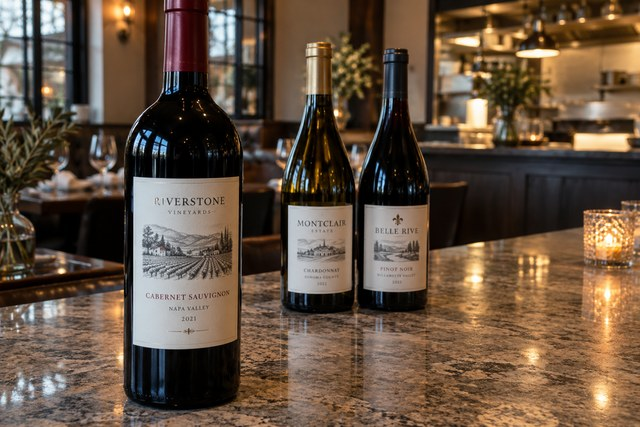
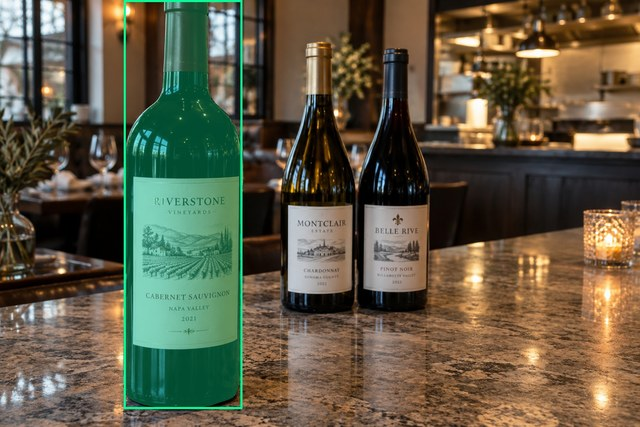
Source title: Три бутылки: передняя слева
Source target description: Передняя бутылка слева
scene-v1
No automatic failure flag; usability pending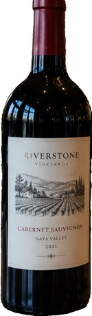
Selected: d1; reason: existing_scene_v1_rank; mode: legacy; crop 285×980 px. Target agreement: True. Target retention proxy: 99.9%; maximum other-bottle retention: 0.0%; minimum associated label retention: 100.0%. Mask ownership, label completeness and legibility still require human review.
Decision JSON · Keep masksemantic-v2
No automatic failure flag; usability pending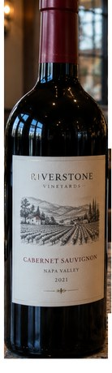
Selected: d1; reason: foreground_scale_and_lower_base; mode: confident; crop 306×1019 px. Target agreement: True. Target retention proxy: 100.0%; maximum other-bottle retention: 0.0%; minimum associated label retention: 100.0%. Mask ownership, label completeness and legibility still require human review. Selected-label mask audit: d4 100.0%.
Decision JSON · Keep maskdis-v1
PROXY failure; no native target ID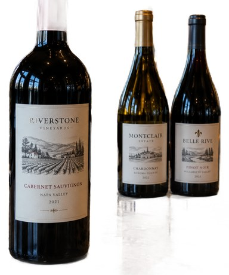
Selected: dis-foreground; reason: dis_foreground_mask; mode: foreground; crop 795×953 px. Target agreement: n/a (no native target ID). Target retention proxy: 92.1%; maximum other-bottle retention: 100.0%; minimum associated label retention: 100.0%. Mask ownership, label completeness and legibility still require human review.
Decision JSON · Keep maskAll 11 proposal masks, source notes and prompt
d0 wine bottle · d1 wine bottle · d2 wine bottle · d3 wine label · d4 wine label · d5 wine label · d6 wine label · d7 wine glass · d8 wine glass · d9 wine glass · d10 wine glass
Scene group: main-selector-imagegen-pilot-v1-20261019:FG01. Human mask approval: none.
Основные три бутылки различимы. Горлышко передней бутылки обрезано сверху; этикетка видна.
Use case: photorealistic-natural.
Asset type: one independent synthetic smartphone photograph for a wine-subject selection test dataset.
Style: a believable candid phone photo with realistic optics, materials, shadows, depth and anatomically plausible hands when requested. Natural photographic imperfections, not a diagram, collage, 3D render, advertisement or contact sheet.
Bottle labels may use fictional wine names and normal small wine-label text. Labels must have complete physical paper boundaries and plausible printing. Do not add target markers, bounding boxes, arrows, captions, segmentation colors, watermarks or any explanation outside the scene.
Generate exactly one landscape photograph, approximately 1536 by 1024 pixels. Any wine identity is fictional; this tests selection and visible-label preservation, not catalogue recognition.
Scene request: Exactly three physical wine bottles on the same restaurant counter. A clearly nearer, larger standard wine bottle stands in the left foreground with its whole front label visible. Two smaller, more distant standard wine bottles stand close together near the image center behind it. Viewpoint and overlap clearly establish that the left bottle is nearest. No hands, posters or other bottles.
main-selector-imagegen-pilot-v1-20261019:FG02
Scene confirmed; masks pending. Target proposal: d0; family: foreground. Portable case page
Original / proposed target
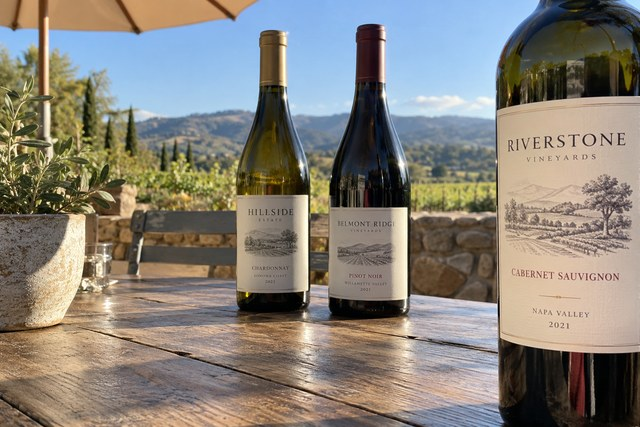
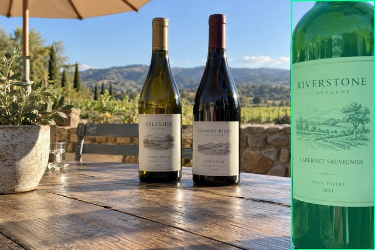
Source title: Три бутылки: передняя справа
Source target description: Передняя бутылка справа
scene-v1
No automatic failure flag; usability pending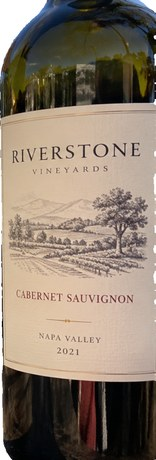
Selected: d0; reason: existing_scene_v1_rank; mode: legacy; crop 344×1017 px. Target agreement: True. Target retention proxy: 99.6%; maximum other-bottle retention: 0.0%; minimum associated label retention: 99.8%. Mask ownership, label completeness and legibility still require human review.
Decision JSON · Keep masksemantic-v2
No automatic failure flag; usability pending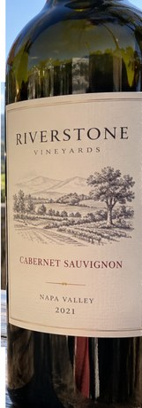
Selected: d0; reason: dominant_edge_subject; mode: confident; crop 358×1024 px. Target agreement: True. Target retention proxy: 100.0%; maximum other-bottle retention: 0.0%; minimum associated label retention: 100.0%. Mask ownership, label completeness and legibility still require human review. Selected-label mask audit: d3 100.0%.
Decision JSON · Keep maskdis-v1
PROXY failure; no native target ID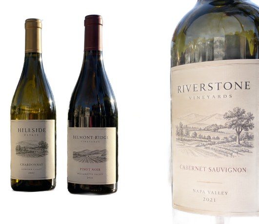
Selected: dis-foreground; reason: dis_foreground_mask; mode: foreground; crop 1010×875 px. Target agreement: n/a (no native target ID). Target retention proxy: 61.0%; maximum other-bottle retention: 99.9%; minimum associated label retention: 65.7%. Mask ownership, label completeness and legibility still require human review.
Decision JSON · Keep maskAll 6 proposal masks, source notes and prompt
d0 wine bottle · d1 wine bottle · d2 wine bottle · d3 wine label · d4 wine label · d5 wine label
Scene group: main-selector-imagegen-pilot-v1-20261019:FG02. Human mask approval: none.
Правая часть основной этикетки уходит за край кадра: требование полностью видимой этикетки исходного рецепта не выполнено. Решите, оставить как отдельный тест обрезки или перегенерировать.
Use case: photorealistic-natural.
Asset type: one independent synthetic smartphone photograph for a wine-subject selection test dataset.
Style: a believable candid phone photo with realistic optics, materials, shadows, depth and anatomically plausible hands when requested. Natural photographic imperfections, not a diagram, collage, 3D render, advertisement or contact sheet.
Bottle labels may use fictional wine names and normal small wine-label text. Labels must have complete physical paper boundaries and plausible printing. Do not add target markers, bounding boxes, arrows, captions, segmentation colors, watermarks or any explanation outside the scene.
Generate exactly one landscape photograph, approximately 1536 by 1024 pixels. Any wine identity is fictional; this tests selection and visible-label preservation, not catalogue recognition.
Scene request: Exactly three physical wine bottles on an outdoor tasting table. A clearly nearer standard wine bottle stands at the right edge, partially clipped at the shoulder but with its complete front label visible. Two more distant bottles stand near the photo center. Plausible perspective and overlap make the right bottle the obvious foreground subject. No hands or printed bottle images.
main-selector-imagegen-pilot-v1-20261019:FG03
Scene confirmed; masks pending. Target proposal: d2; family: foreground. Portable case page
Original / proposed target
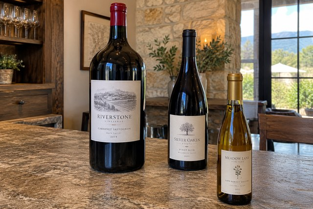
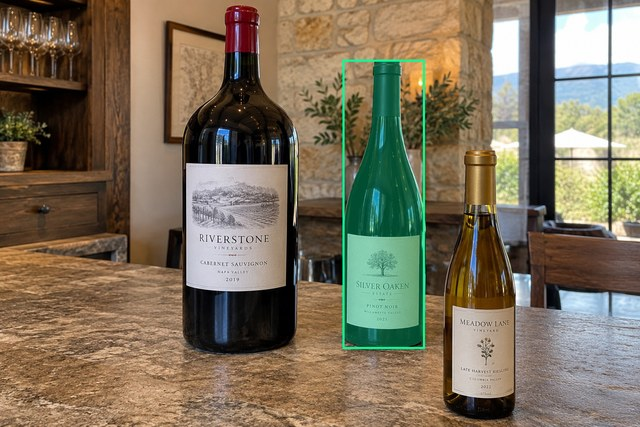
Source title: Большая бутылка сзади
Source target description: Средняя стандартная бутылка — fallback
scene-v1
No automatic failure flag; usability pending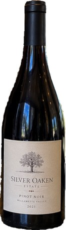
Selected: d2; reason: existing_scene_v1_rank; mode: legacy; crop 199×694 px. Target agreement: True. Target retention proxy: 100.0%; maximum other-bottle retention: 0.0%; minimum associated label retention: 100.0%. Mask ownership, label completeness and legibility still require human review.
Decision JSON · Keep masksemantic-v2
No automatic failure flag; usability pending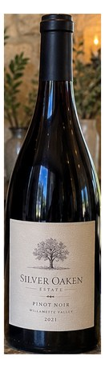
Selected: d2; reason: fallback_nearest_center; mode: fallback; crop 213×749 px. Target agreement: True. Target retention proxy: 100.0%; maximum other-bottle retention: 0.0%; minimum associated label retention: 100.0%. Mask ownership, label completeness and legibility still require human review. Selected-label mask audit: d5 100.0%.
Decision JSON · Keep maskdis-v1
PROXY failure; no native target ID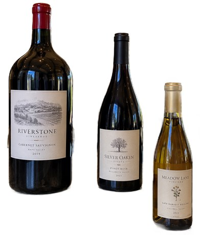
Selected: dis-foreground; reason: dis_foreground_mask; mode: foreground; crop 870×1024 px. Target agreement: n/a (no native target ID). Target retention proxy: 99.9%; maximum other-bottle retention: 100.0%; minimum associated label retention: 100.0%. Mask ownership, label completeness and legibility still require human review.
Decision JSON · Keep maskAll 13 proposal masks, source notes and prompt
d0 wine bottle · d1 wine bottle · d2 wine bottle · d3 wine label · d4 wine label · d5 wine label · d6 wine glass · d7 wine glass · d8 wine glass · d9 wine glass · d10 wine glass · d11 wine glass · d12 wine glass
Scene group: main-selector-imagegen-pilot-v1-20261019:FG03. Human mask approval: none.
Размер и глубина конфликтуют. Проверьте, действительно ли кадр воспринимается неоднозначным; не принимайте это только из текста рецепта.
Use case: photorealistic-natural.
Asset type: one independent synthetic smartphone photograph for a wine-subject selection test dataset.
Style: a believable candid phone photo with realistic optics, materials, shadows, depth and anatomically plausible hands when requested. Natural photographic imperfections, not a diagram, collage, 3D render, advertisement or contact sheet.
Bottle labels may use fictional wine names and normal small wine-label text. Labels must have complete physical paper boundaries and plausible printing. Do not add target markers, bounding boxes, arrows, captions, segmentation colors, watermarks or any explanation outside the scene.
Generate exactly one landscape photograph, approximately 1536 by 1024 pixels. Any wine identity is fictional; this tests selection and visible-label preservation, not catalogue recognition.
Scene request: Exactly three physical wine bottles on a tasting counter: a rear magnum slightly left of center, a rear standard bottle slightly right of center, and a small half-bottle nearer the camera at the lower right. The rear magnum is physically larger, so apparent size conflicts with camera distance. All bottles are equally sharp and similarly lit; no hand and no unmistakable intended subject.
main-selector-imagegen-pilot-v1-20261019:FG04
Scene confirmed; masks pending. Target proposal: d2; family: foreground. Portable case page
Original / proposed target
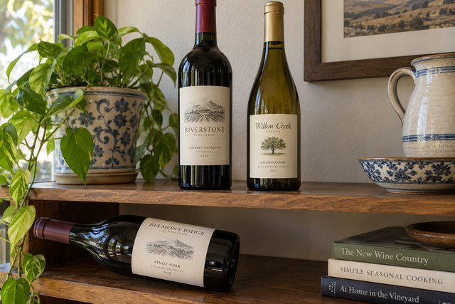
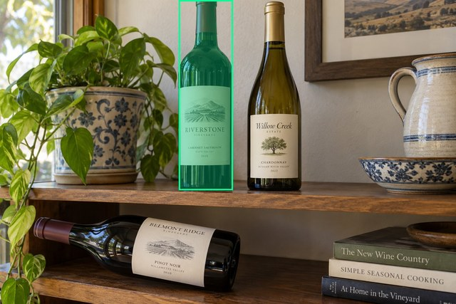
Source title: Разные уровни полок
Source target description: Верхняя бутылка слева — fallback
scene-v1
No automatic failure flag; usability pending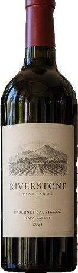
Selected: d2; reason: existing_scene_v1_rank; mode: legacy; crop 183×640 px. Target agreement: True. Target retention proxy: 100.0%; maximum other-bottle retention: 0.0%; minimum associated label retention: 100.0%. Mask ownership, label completeness and legibility still require human review.
Decision JSON · Keep masksemantic-v2
No automatic failure flag; usability pending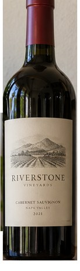
Selected: d2; reason: fallback_center_contains; mode: fallback; crop 199×666 px. Target agreement: True. Target retention proxy: 100.0%; maximum other-bottle retention: 0.0%; minimum associated label retention: 100.0%. Mask ownership, label completeness and legibility still require human review. Selected-label mask audit: d5 100.0%.
Decision JSON · Keep maskdis-v1
PROXY failure; no native target ID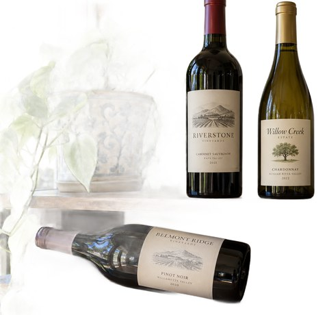
Selected: dis-foreground; reason: dis_foreground_mask; mode: foreground; crop 1057×1017 px. Target agreement: n/a (no native target ID). Target retention proxy: 99.9%; maximum other-bottle retention: 99.9%; minimum associated label retention: 100.0%. Mask ownership, label completeness and legibility still require human review.
Decision JSON · Keep maskAll 6 proposal masks, source notes and prompt
d0 wine bottle · d1 wine bottle · d2 wine bottle · d3 wine label · d4 wine label · d5 wine label
Scene group: main-selector-imagegen-pilot-v1-20261019:FG04. Human mask approval: none.
Разные опорные плоскости хорошо видны. Это не точный контроль измеренной глубины.
Use case: photorealistic-natural.
Asset type: one independent synthetic smartphone photograph for a wine-subject selection test dataset.
Style: a believable candid phone photo with realistic optics, materials, shadows, depth and anatomically plausible hands when requested. Natural photographic imperfections, not a diagram, collage, 3D render, advertisement or contact sheet.
Bottle labels may use fictional wine names and normal small wine-label text. Labels must have complete physical paper boundaries and plausible printing. Do not add target markers, bounding boxes, arrows, captions, segmentation colors, watermarks or any explanation outside the scene.
Generate exactly one landscape photograph, approximately 1536 by 1024 pixels. Any wine identity is fictional; this tests selection and visible-label preservation, not catalogue recognition.
Scene request: Exactly three physical wine bottles on two clearly separate wooden shelf levels. A large horizontal wine bottle lies on the lower shelf in the lower-left foreground; two upright wine bottles stand on a higher shelf near the image center. Make the separate support planes unmistakable. All three are similarly sharp with no hands and no singled-out bottle.
main-selector-imagegen-pilot-v1-20261019:FG05
Scene confirmed; masks pending. Target proposal: d1; family: foreground. Portable case page
Original / proposed target
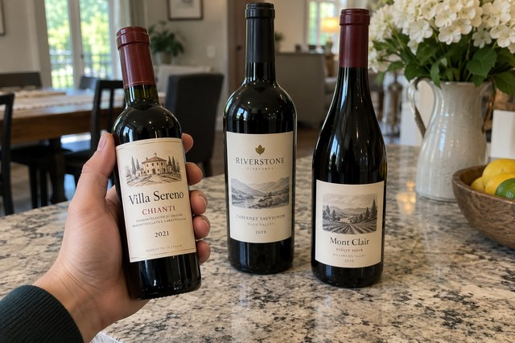
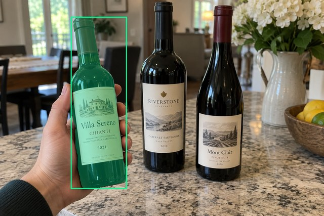
Source title: Маленькая удерживаемая бутылка
Source target description: Маленькая удерживаемая бутылка слева
scene-v1
No automatic failure flag; usability pending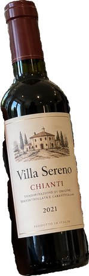
Selected: d1; reason: existing_scene_v1_rank; mode: legacy; crop 265×816 px. Target agreement: True. Target retention proxy: 100.0%; maximum other-bottle retention: 0.0%; minimum associated label retention: 99.9%. Mask ownership, label completeness and legibility still require human review.
Decision JSON · Keep masksemantic-v2
No automatic failure flag; usability pending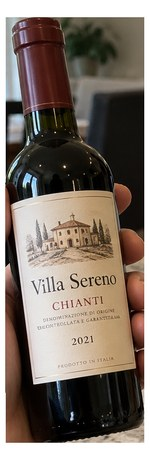
Selected: d1; reason: unique_visible_hand_contact; mode: confident; crop 288×882 px. Target agreement: True. Target retention proxy: 100.0%; maximum other-bottle retention: 0.0%; minimum associated label retention: 100.0%. Mask ownership, label completeness and legibility still require human review. Selected-label mask audit: d4 100.0%.
Decision JSON · Keep maskdis-v1
PROXY failure; no native target ID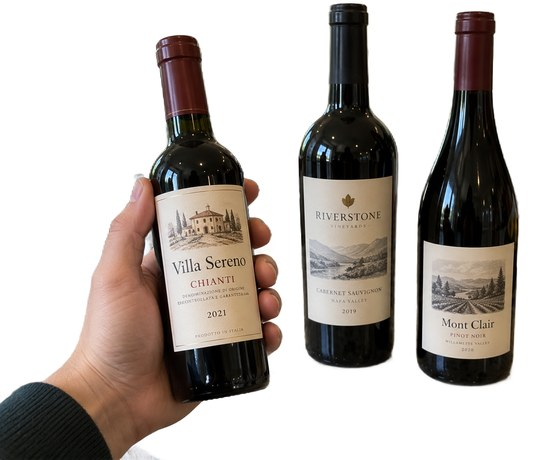
Selected: dis-foreground; reason: dis_foreground_mask; mode: foreground; crop 1203×1024 px. Target agreement: n/a (no native target ID). Target retention proxy: 100.0%; maximum other-bottle retention: 100.0%; minimum associated label retention: 100.0%. Mask ownership, label completeness and legibility still require human review.
Decision JSON · Keep maskAll 7 proposal masks, source notes and prompt
d0 wine bottle · d1 wine bottle · d2 wine bottle · d3 wine label · d4 wine label · d5 wine label · d6 hand
Scene group: main-selector-imagegen-pilot-v1-20261019:FG05. Human mask approval: none.
Явного несоответствия при первичном просмотре не отмечено; требуется ваше review.
Use case: photorealistic-natural.
Asset type: one independent synthetic smartphone photograph for a wine-subject selection test dataset.
Style: a believable candid phone photo with realistic optics, materials, shadows, depth and anatomically plausible hands when requested. Natural photographic imperfections, not a diagram, collage, 3D render, advertisement or contact sheet.
Bottle labels may use fictional wine names and normal small wine-label text. Labels must have complete physical paper boundaries and plausible printing. Do not add target markers, bounding boxes, arrows, captions, segmentation colors, watermarks or any explanation outside the scene.
Generate exactly one landscape photograph, approximately 1536 by 1024 pixels. Any wine identity is fictional; this tests selection and visible-label preservation, not catalogue recognition.
Scene request: Exactly three physical wine bottles. A person visibly grips a half-size wine bottle around its body in the left foreground, presenting it to the camera. Its complete main label remains mostly visible below the fingers. Two full-size bottles stand farther away near the center. The small held bottle is the intentional subject despite the larger background bottles.
main-selector-imagegen-pilot-v1-20261019:HA01
Scene confirmed; masks pending. Target proposal: d0; family: hands. Portable case page
Original / proposed target
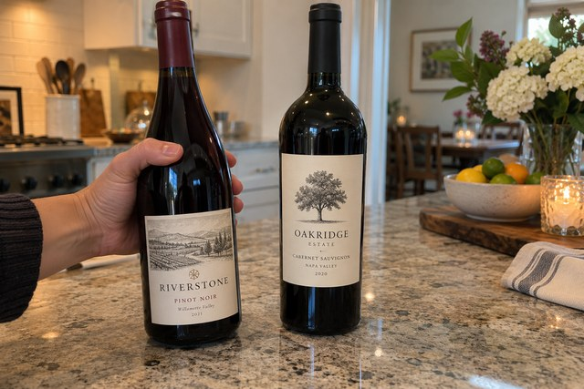
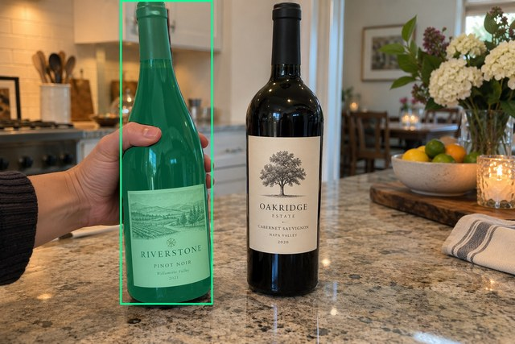
Source title: Хват корпуса вне центра
Source target description: Удерживаемая бутылка слева
scene-v1
No automatic failure flag; usability pending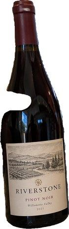
Selected: d0; reason: existing_scene_v1_rank; mode: legacy; crop 276×907 px. Target agreement: True. Target retention proxy: 100.0%; maximum other-bottle retention: 0.0%; minimum associated label retention: 100.0%. Mask ownership, label completeness and legibility still require human review.
Decision JSON · Keep masksemantic-v2
No automatic failure flag; usability pending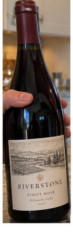
Selected: d0; reason: unique_visible_hand_contact; mode: confident; crop 298×942 px. Target agreement: True. Target retention proxy: 100.0%; maximum other-bottle retention: 0.0%; minimum associated label retention: 100.0%. Mask ownership, label completeness and legibility still require human review. Selected-label mask audit: d2 100.0%.
Decision JSON · Keep maskdis-v1
PROXY failure; no native target ID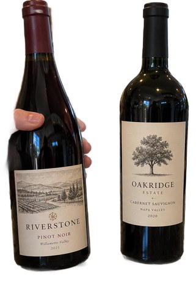
Selected: dis-foreground; reason: dis_foreground_mask; mode: foreground; crop 657×941 px. Target agreement: n/a (no native target ID). Target retention proxy: 99.8%; maximum other-bottle retention: 99.9%; minimum associated label retention: 100.0%. Mask ownership, label completeness and legibility still require human review.
Decision JSON · Keep maskAll 5 proposal masks, source notes and prompt
d0 wine bottle · d1 wine bottle · d2 wine label · d3 wine label · d4 hand
Scene group: main-selector-imagegen-pilot-v1-20261019:HA01. Human mask approval: none.
Явного несоответствия при первичном просмотре не отмечено; требуется ваше review.
Use case: photorealistic-natural.
Asset type: one independent synthetic smartphone photograph for a wine-subject selection test dataset.
Style: a believable candid phone photo with realistic optics, materials, shadows, depth and anatomically plausible hands when requested. Natural photographic imperfections, not a diagram, collage, 3D render, advertisement or contact sheet.
Bottle labels may use fictional wine names and normal small wine-label text. Labels must have complete physical paper boundaries and plausible printing. Do not add target markers, bounding boxes, arrows, captions, segmentation colors, watermarks or any explanation outside the scene.
Generate exactly one landscape photograph, approximately 1536 by 1024 pixels. Any wine identity is fictional; this tests selection and visible-label preservation, not catalogue recognition.
Scene request: Two physical wine bottles on a counter. A hand genuinely wraps around the middle of the left off-center bottle, with fingers visibly in front and the thumb on the opposite side; the lower front label remains readable. A second unheld bottle occupies the photo center. Show convincing anatomical grip and contact.
main-selector-imagegen-pilot-v1-20261019:HA02
Scene confirmed; masks pending. Target proposal: d1; family: hands. Portable case page
Original / proposed target
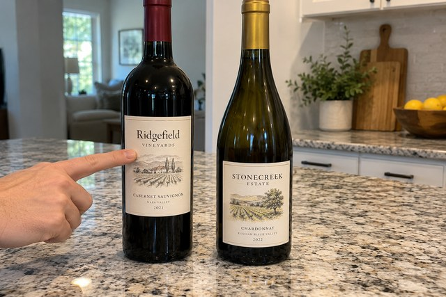
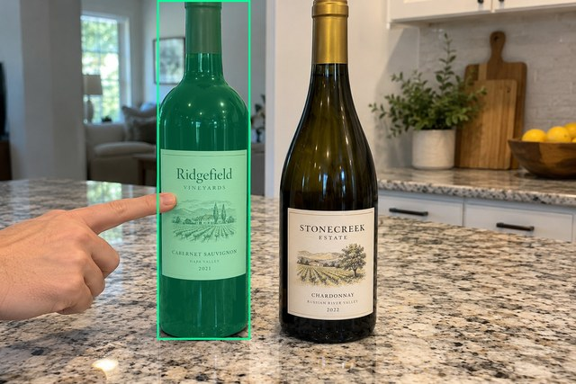
Source title: Указание пальцем
Source target description: Правая бутылка — fallback
scene-v1
FAIL — provisional target/proxy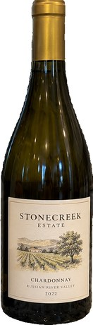
Selected: d0; reason: existing_scene_v1_rank; mode: legacy; crop 262×914 px. Target agreement: False. Target retention proxy: 0.0%; maximum other-bottle retention: 99.9%; minimum associated label retention: 0.0%. Mask ownership, label completeness and legibility still require human review.
Decision JSON · Keep masksemantic-v2
No automatic failure flag; usability pending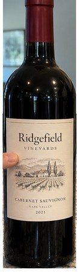
Selected: d1; reason: explicit_pointing_gesture; mode: confident; crop 269×941 px. Target agreement: True. Target retention proxy: 100.0%; maximum other-bottle retention: 0.0%; minimum associated label retention: 100.0%. Mask ownership, label completeness and legibility still require human review. Selected-label mask audit: d2 100.0%.
Decision JSON · Keep maskdis-v1
PROXY failure; no native target ID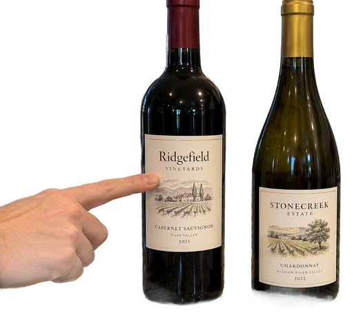
Selected: dis-foreground; reason: dis_foreground_mask; mode: foreground; crop 1048×940 px. Target agreement: n/a (no native target ID). Target retention proxy: 99.8%; maximum other-bottle retention: 95.8%; minimum associated label retention: 100.0%. Mask ownership, label completeness and legibility still require human review.
Decision JSON · Keep maskAll 5 proposal masks, source notes and prompt
d0 wine bottle · d1 wine bottle · d2 wine label · d3 wine label · d4 hand
Scene group: main-selector-imagegen-pilot-v1-20261019:HA02. Human mask approval: none.
Явного несоответствия при первичном просмотре не отмечено; требуется ваше review.
Use case: photorealistic-natural.
Asset type: one independent synthetic smartphone photograph for a wine-subject selection test dataset.
Style: a believable candid phone photo with realistic optics, materials, shadows, depth and anatomically plausible hands when requested. Natural photographic imperfections, not a diagram, collage, 3D render, advertisement or contact sheet.
Bottle labels may use fictional wine names and normal small wine-label text. Labels must have complete physical paper boundaries and plausible printing. Do not add target markers, bounding boxes, arrows, captions, segmentation colors, watermarks or any explanation outside the scene.
Generate exactly one landscape photograph, approximately 1536 by 1024 pixels. Any wine identity is fictional; this tests selection and visible-label preservation, not catalogue recognition.
Scene request: Two equally prominent wine bottles on a counter. An extended index finger points to and lightly touches the front label of the left bottle, while the other fingers stay extended away and do not wrap around it. The right bottle is nearer the photo center. Make this a pointing gesture, not a grip.
main-selector-imagegen-pilot-v1-20261019:HA03
Scene confirmed; masks pending. Target proposal: d1; family: hands. Portable case page
Original / proposed target
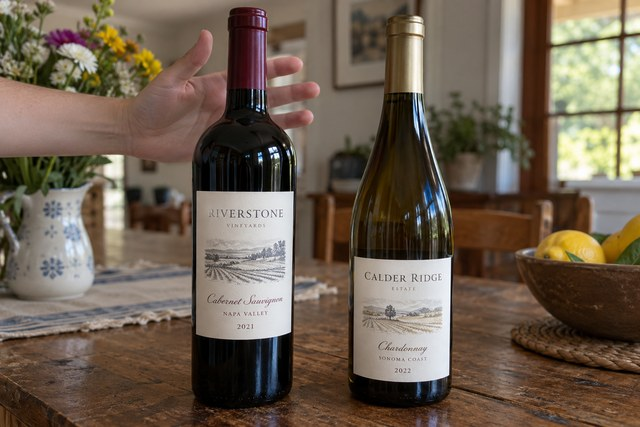
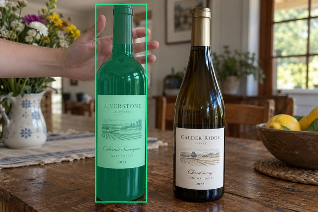
Source title: Рука позади горлышка
Source target description: Левая бутылка — fallback
scene-v1
No automatic failure flag; usability pending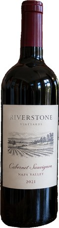
Selected: d1; reason: existing_scene_v1_rank; mode: legacy; crop 249×961 px. Target agreement: True. Target retention proxy: 99.9%; maximum other-bottle retention: 0.0%; minimum associated label retention: 100.0%. Mask ownership, label completeness and legibility still require human review.
Decision JSON · Keep masksemantic-v2
No automatic failure flag; usability pending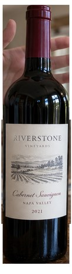
Selected: d1; reason: fallback_nearest_center; mode: fallback; crop 270×1015 px. Target agreement: True. Target retention proxy: 100.0%; maximum other-bottle retention: 0.0%; minimum associated label retention: 100.0%. Mask ownership, label completeness and legibility still require human review. Selected-label mask audit: d3 100.0%.
Decision JSON · Keep maskdis-v1
PROXY failure; no native target ID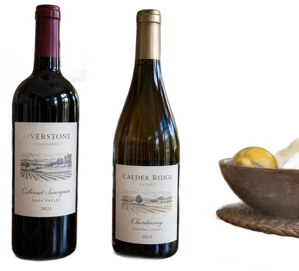
Selected: dis-foreground; reason: dis_foreground_mask; mode: foreground; crop 1120×1017 px. Target agreement: n/a (no native target ID). Target retention proxy: 100.0%; maximum other-bottle retention: 99.8%; minimum associated label retention: 100.0%. Mask ownership, label completeness and legibility still require human review.
Decision JSON · Keep maskAll 5 proposal masks, source notes and prompt
d0 wine bottle · d1 wine bottle · d2 wine label · d3 wine label · d4 hand
Scene group: main-selector-imagegen-pilot-v1-20261019:HA03. Human mask approval: none.
Явного несоответствия при первичном просмотре не отмечено; требуется ваше review.
Use case: photorealistic-natural.
Asset type: one independent synthetic smartphone photograph for a wine-subject selection test dataset.
Style: a believable candid phone photo with realistic optics, materials, shadows, depth and anatomically plausible hands when requested. Natural photographic imperfections, not a diagram, collage, 3D render, advertisement or contact sheet.
Bottle labels may use fictional wine names and normal small wine-label text. Labels must have complete physical paper boundaries and plausible printing. Do not add target markers, bounding boxes, arrows, captions, segmentation colors, watermarks or any explanation outside the scene.
Generate exactly one landscape photograph, approximately 1536 by 1024 pixels. Any wine identity is fictional; this tests selection and visible-label preservation, not catalogue recognition.
Scene request: Two equally prominent wine bottles, one on each side of the photo center. A relaxed open hand is behind the neck of the left bottle at a different depth: fingers extend on both sides in projection but all skin stays visibly behind the bottle, with no finger crossing the front. The hand is not holding it. No other grip.
main-selector-imagegen-pilot-v1-20261019:HA04
Scene confirmed; masks pending. Target proposal: d1; family: hands. Portable case page
Original / proposed target
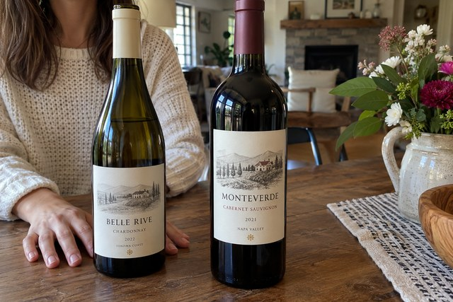
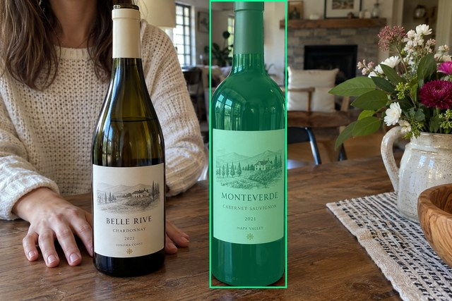
Source title: Рука позади основания
Source target description: Правая бутылка — fallback
scene-v1
FAIL — provisional target/proxy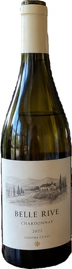
Selected: d0; reason: existing_scene_v1_rank; mode: legacy; crop 251×928 px. Target agreement: False. Target retention proxy: 0.0%; maximum other-bottle retention: 100.0%; minimum associated label retention: 0.0%. Mask ownership, label completeness and legibility still require human review.
Decision JSON · Keep masksemantic-v2
No automatic failure flag; usability pending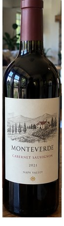
Selected: d1; reason: fallback_center_contains; mode: fallback; crop 290×1018 px. Target agreement: True. Target retention proxy: 100.0%; maximum other-bottle retention: 0.0%; minimum associated label retention: 100.0%. Mask ownership, label completeness and legibility still require human review. Selected-label mask audit: d3 100.0%.
Decision JSON · Keep maskdis-v1
PROXY failure; no native target ID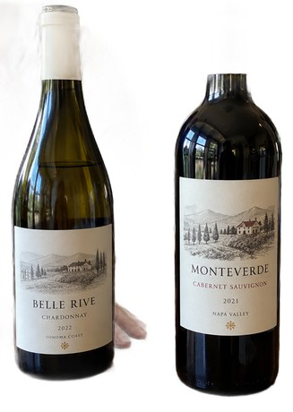
Selected: dis-foreground; reason: dis_foreground_mask; mode: foreground; crop 724×1019 px. Target agreement: n/a (no native target ID). Target retention proxy: 90.7%; maximum other-bottle retention: 92.5%; minimum associated label retention: 100.0%. Mask ownership, label completeness and legibility still require human review.
Decision JSON · Keep maskAll 7 proposal masks, source notes and prompt
d0 wine bottle · d1 wine bottle · d2 wine label · d3 wine label · d4 hand · d5 hand · d6 hand
Scene group: main-selector-imagegen-pilot-v1-20261019:HA04. Human mask approval: none.
Проверьте анатомию и число рук: справа от левой бутылки видны дополнительные пальцы.
Use case: photorealistic-natural.
Asset type: one independent synthetic smartphone photograph for a wine-subject selection test dataset.
Style: a believable candid phone photo with realistic optics, materials, shadows, depth and anatomically plausible hands when requested. Natural photographic imperfections, not a diagram, collage, 3D render, advertisement or contact sheet.
Bottle labels may use fictional wine names and normal small wine-label text. Labels must have complete physical paper boundaries and plausible printing. Do not add target markers, bounding boxes, arrows, captions, segmentation colors, watermarks or any explanation outside the scene.
Generate exactly one landscape photograph, approximately 1536 by 1024 pixels. Any wine identity is fictional; this tests selection and visible-label preservation, not catalogue recognition.
Scene request: Two equally prominent wine bottles on a table. An open hand lies on the table behind the base of the left bottle; fingers are visible to both sides of the base but never wrap around or cross the front glass. The right bottle stands closer to the photo center. No actual grip.
main-selector-imagegen-pilot-v1-20261019:HA05
Scene confirmed; masks pending. Target proposal: d0; family: hands. Portable case page
Original / proposed target
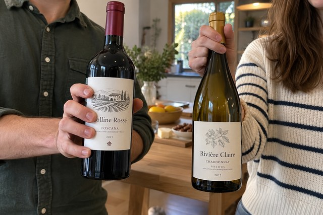
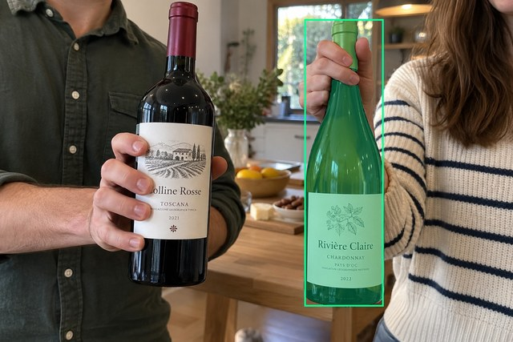
Source title: Две руки держат разные бутылки
Source target description: Правая бутылка — fallback
scene-v1
FAIL — provisional target/proxy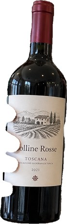
Selected: d1; reason: existing_scene_v1_rank; mode: legacy; crop 258×854 px. Target agreement: False. Target retention proxy: 0.0%; maximum other-bottle retention: 100.0%; minimum associated label retention: 0.0%. Mask ownership, label completeness and legibility still require human review.
Decision JSON · Keep masksemantic-v2
No automatic failure flag; usability pending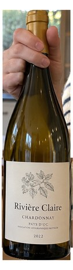
Selected: d0; reason: fallback_nearest_center; mode: fallback; crop 255×928 px. Target agreement: True. Target retention proxy: 100.0%; maximum other-bottle retention: 0.0%; minimum associated label retention: 100.0%. Mask ownership, label completeness and legibility still require human review. Selected-label mask audit: d2 100.0%.
Decision JSON · Keep maskdis-v1
PROXY failure; no native target ID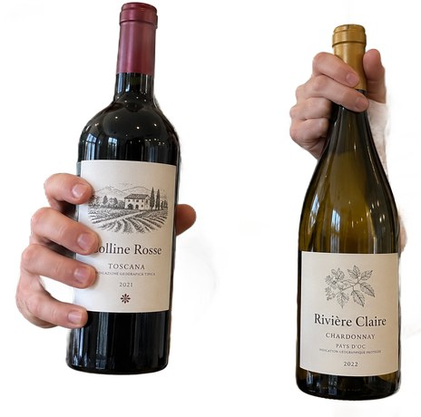
Selected: dis-foreground; reason: dis_foreground_mask; mode: foreground; crop 965×956 px. Target agreement: n/a (no native target ID). Target retention proxy: 99.9%; maximum other-bottle retention: 99.7%; minimum associated label retention: 99.9%. Mask ownership, label completeness and legibility still require human review.
Decision JSON · Keep maskAll 6 proposal masks, source notes and prompt
d0 wine bottle · d1 wine bottle · d2 wine label · d3 wine label · d4 hand · d5 hand
Scene group: main-selector-imagegen-pilot-v1-20261019:HA05. Human mask approval: none.
Явного несоответствия при первичном просмотре не отмечено; требуется ваше review.
Use case: photorealistic-natural.
Asset type: one independent synthetic smartphone photograph for a wine-subject selection test dataset.
Style: a believable candid phone photo with realistic optics, materials, shadows, depth and anatomically plausible hands when requested. Natural photographic imperfections, not a diagram, collage, 3D render, advertisement or contact sheet.
Bottle labels may use fictional wine names and normal small wine-label text. Labels must have complete physical paper boundaries and plausible printing. Do not add target markers, bounding boxes, arrows, captions, segmentation colors, watermarks or any explanation outside the scene.
Generate exactly one landscape photograph, approximately 1536 by 1024 pixels. Any wine identity is fictional; this tests selection and visible-label preservation, not catalogue recognition.
Scene request: Two different people each hold one physical wine bottle, presented side by side at equal apparent scale. One hand wraps broadly around the body of the left bottle; the other grips the neck of the right bottle with a much smaller visible skin contact area. Both grips are genuine. No indication of a unique intended bottle.
main-selector-imagegen-pilot-v1-20261019:LA01
Scene confirmed; masks pending. Target proposal: d0; family: labels. Portable case page
Original / proposed target
Source title: Крупный логотип на полной этикетке
Source target description: Основная бутылка с красной эмблемой
scene-v1
FAIL — provisional target/proxySelected: d0; reason: existing_scene_v1_rank; mode: legacy; crop 236×945 px. Target agreement: True. Target retention proxy: 100.0%; maximum other-bottle retention: 0.0%; minimum associated label retention: 99.2%. Mask ownership, label completeness and legibility still require human review.
Decision JSON · Keep masksemantic-v2
No automatic failure flag; usability pendingSelected: d0; reason: only_credible_subject; mode: confident; crop 261×1000 px. Target agreement: True. Target retention proxy: 100.0%; maximum other-bottle retention: 0.0%; minimum associated label retention: 100.0%. Mask ownership, label completeness and legibility still require human review. Selected-label mask audit: d1 100.0%; d2 100.0%.
Decision JSON · Keep maskdis-v1
PROXY failure; no native target IDSelected: dis-foreground; reason: dis_foreground_mask; mode: foreground; crop 259×999 px. Target agreement: n/a (no native target ID). Target retention proxy: 99.9%; maximum other-bottle retention: 0.0%; minimum associated label retention: 98.8%. Mask ownership, label completeness and legibility still require human review.
Decision JSON · Keep maskAll 3 proposal masks, source notes and prompt
d0 wine bottle · d1 wine label · d2 wine label
Scene group: main-selector-imagegen-pilot-v1-20261019:LA01. Human mask approval: none.
Явного несоответствия при первичном просмотре не отмечено; требуется ваше review.
Use case: photorealistic-natural.
Asset type: one independent synthetic smartphone photograph for a wine-subject selection test dataset.
Style: a believable candid phone photo with realistic optics, materials, shadows, depth and anatomically plausible hands when requested. Natural photographic imperfections, not a diagram, collage, 3D render, advertisement or contact sheet.
Bottle labels may use fictional wine names and normal small wine-label text. Labels must have complete physical paper boundaries and plausible printing. Do not add target markers, bounding boxes, arrows, captions, segmentation colors, watermarks or any explanation outside the scene.
Generate exactly one landscape photograph, approximately 1536 by 1024 pixels. Any wine identity is fictional; this tests selection and visible-label preservation, not catalogue recognition.
Scene request: One physical dark wine bottle standing alone on a kitchen counter, front label completely visible. The large rectangular cream paper label contains a very large red emblem occupying its central third, with small winery, vintage and region text above and below, generous blank margins and a fine border. Small separate neck label. No hands, other bottles or signage.
main-selector-imagegen-pilot-v1-20261019:LA02
Scene confirmed; masks pending. Target proposal: d0; family: labels. Portable case page
Original / proposed target
Source title: Бирка за пределами бутылки
Source target description: Бутылка с выступающей биркой
scene-v1
No automatic failure flag; usability pendingSelected: d0; reason: existing_scene_v1_rank; mode: legacy; crop 247×935 px. Target agreement: True. Target retention proxy: 99.9%; maximum other-bottle retention: 0.0%; minimum associated label retention: 100.0%. Mask ownership, label completeness and legibility still require human review.
Decision JSON · Keep masksemantic-v2
No automatic failure flag; usability pendingSelected: d0; reason: only_credible_subject; mode: confident; crop 277×989 px. Target agreement: True. Target retention proxy: 100.0%; maximum other-bottle retention: 0.0%; minimum associated label retention: 100.0%. Mask ownership, label completeness and legibility still require human review. Selected-label mask audit: d2 100.0%.
Decision JSON · Keep maskdis-v1
Proxy satisfied; usability pendingSelected: dis-foreground; reason: dis_foreground_mask; mode: foreground; crop 490×991 px. Target agreement: n/a (no native target ID). Target retention proxy: 100.0%; maximum other-bottle retention: 0.0%; minimum associated label retention: 100.0%. Mask ownership, label completeness and legibility still require human review.
Decision JSON · Keep maskAll 4 proposal masks, source notes and prompt
d0 wine bottle · d1 wine label · d2 wine label · d3 price tag
Scene group: main-selector-imagegen-pilot-v1-20261019:LA02. Human mask approval: none.
Явного несоответствия при первичном просмотре не отмечено; требуется ваше review.
Use case: photorealistic-natural.
Asset type: one independent synthetic smartphone photograph for a wine-subject selection test dataset.
Style: a believable candid phone photo with realistic optics, materials, shadows, depth and anatomically plausible hands when requested. Natural photographic imperfections, not a diagram, collage, 3D render, advertisement or contact sheet.
Bottle labels may use fictional wine names and normal small wine-label text. Labels must have complete physical paper boundaries and plausible printing. Do not add target markers, bounding boxes, arrows, captions, segmentation colors, watermarks or any explanation outside the scene.
Generate exactly one landscape photograph, approximately 1536 by 1024 pixels. Any wine identity is fictional; this tests selection and visible-label preservation, not catalogue recognition.
Scene request: One physical wine bottle on a wooden counter with a complete front paper label and a small hanging neck tag tied by string. The tag hangs well outside the right edge of the bottle silhouette, with its whole paper outline visible. Realistic shadows and string attachment. No other bottle.
main-selector-imagegen-pilot-v1-20261019:LA03
Scene confirmed; masks pending. Target proposal: d0; family: labels. Portable case page
Original / proposed target
Source title: Отогнутый край бумаги
Source target description: Бутылка с отогнутой этикеткой
scene-v1
No automatic failure flag; usability pendingSelected: d0; reason: existing_scene_v1_rank; mode: legacy; crop 465×886 px. Target agreement: True. Target retention proxy: 100.0%; maximum other-bottle retention: 0.0%; minimum associated label retention: 100.0%. Mask ownership, label completeness and legibility still require human review.
Decision JSON · Keep masksemantic-v2
No automatic failure flag; usability pendingSelected: d0; reason: only_credible_subject; mode: confident; crop 501×921 px. Target agreement: True. Target retention proxy: 100.0%; maximum other-bottle retention: 0.0%; minimum associated label retention: 100.0%. Mask ownership, label completeness and legibility still require human review. Selected-label mask audit: d2 100.0%; d1 100.0%.
Decision JSON · Keep maskdis-v1
Proxy satisfied; usability pendingSelected: dis-foreground; reason: dis_foreground_mask; mode: foreground; crop 1028×929 px. Target agreement: n/a (no native target ID). Target retention proxy: 99.9%; maximum other-bottle retention: 0.0%; minimum associated label retention: 100.0%. Mask ownership, label completeness and legibility still require human review.
Decision JSON · Keep maskAll 5 proposal masks, source notes and prompt
d0 wine bottle · d1 wine label · d2 wine label · d3 wine glass · d4 wine glass
Scene group: main-selector-imagegen-pilot-v1-20261019:LA03. Human mask approval: none.
Явного несоответствия при первичном просмотре не отмечено; требуется ваше review.
Use case: photorealistic-natural.
Asset type: one independent synthetic smartphone photograph for a wine-subject selection test dataset.
Style: a believable candid phone photo with realistic optics, materials, shadows, depth and anatomically plausible hands when requested. Natural photographic imperfections, not a diagram, collage, 3D render, advertisement or contact sheet.
Bottle labels may use fictional wine names and normal small wine-label text. Labels must have complete physical paper boundaries and plausible printing. Do not add target markers, bounding boxes, arrows, captions, segmentation colors, watermarks or any explanation outside the scene.
Generate exactly one landscape photograph, approximately 1536 by 1024 pixels. Any wine identity is fictional; this tests selection and visible-label preservation, not catalogue recognition.
Scene request: One physical wine bottle in a natural close product view on a restaurant table. Its broad cream front label has a visibly curled lower-left paper corner extending beyond the bottle contour; the entire label, curled flap, borders and small vintage text are visible. Include a small secondary label near the base. No other bottles.
main-selector-imagegen-pilot-v1-20261019:LA04
Scene confirmed; masks pending. Target proposal: d11; family: labels. Portable case page
Original / proposed target
Source title: Печать прямо на стекле
Source target description: Основная центральная бутылка
scene-v1
No automatic failure flag; usability pendingSelected: d11; reason: existing_scene_v1_rank; mode: legacy; crop 266×971 px. Target agreement: True. Target retention proxy: 100.0%; maximum other-bottle retention: 0.0%; minimum associated label retention: 99.8%. Mask ownership, label completeness and legibility still require human review.
Decision JSON · Keep masksemantic-v2
No automatic failure flag; usability pendingSelected: d11; reason: single_substantial_bottle_in_scene_context; mode: confident; crop 288×1023 px. Target agreement: True. Target retention proxy: 100.0%; maximum other-bottle retention: 0.0%; minimum associated label retention: 100.0%. Mask ownership, label completeness and legibility still require human review. Selected-label mask audit: d25 100.0%; d24 100.0%.
Decision JSON · Keep maskdis-v1
Proxy satisfied; usability pendingSelected: dis-foreground; reason: dis_foreground_mask; mode: foreground; crop 291×1024 px. Target agreement: n/a (no native target ID). Target retention proxy: 100.0%; maximum other-bottle retention: 0.0%; minimum associated label retention: 100.0%. Mask ownership, label completeness and legibility still require human review.
Decision JSON · Keep maskAll 35 proposal masks, source notes and prompt
d0 wine bottle · d1 wine bottle · d2 wine bottle · d3 wine bottle · d4 wine bottle · d5 wine bottle · d6 wine bottle · d7 wine bottle · d8 wine bottle · d9 wine bottle · d10 wine bottle · d11 wine bottle · d12 wine bottle · d13 wine label · d14 wine label · d15 wine label · d16 wine label · d17 wine label · d18 wine label · d19 wine label · d20 wine label · d21 wine label · d22 wine label · d23 wine label · d24 wine label · d25 wine label · d26 wine glass · d27 wine glass · d28 wine glass · d29 wine glass · d30 wine glass · d31 wine glass · d32 wine glass · d33 wine glass · d34 wine glass
Scene group: main-selector-imagegen-pilot-v1-20261019:LA04. Human mask approval: none.
На фоне добавлены бутылки на полках. Инвентарь шире одного основного предмета; полнота разметки конкурентов пока не подтверждена.
Отдельная бумажная полоска на горлышке из рецепта не видна.
Use case: photorealistic-natural.
Asset type: one independent synthetic smartphone photograph for a wine-subject selection test dataset.
Style: a believable candid phone photo with realistic optics, materials, shadows, depth and anatomically plausible hands when requested. Natural photographic imperfections, not a diagram, collage, 3D render, advertisement or contact sheet.
Bottle labels may use fictional wine names and normal small wine-label text. Labels must have complete physical paper boundaries and plausible printing. Do not add target markers, bounding boxes, arrows, captions, segmentation colors, watermarks or any explanation outside the scene.
Generate exactly one landscape photograph, approximately 1536 by 1024 pixels. Any wine identity is fictional; this tests selection and visible-label preservation, not catalogue recognition.
Scene request: One physical wine bottle on a plain tasting counter. Wine name and vintage are printed directly in pale ink on dark glass, with a prominent gold graphic above and fine small identifying text below. There is no front paper rectangle, but there is a small neck paper strip. Whole visible printing region should be usable for recognition.
main-selector-imagegen-pilot-v1-20261019:LA05
Scene confirmed; masks pending. Target proposal: d0; family: labels. Portable case page
Original / proposed target
Source title: Крупный план этикетки без горлышка
Source target description: Полный контекст крупного плана этикетки
scene-v1
No automatic failure flag; usability pendingSelected: d0; reason: existing_scene_v1_rank; mode: legacy; crop 1076×1020 px. Target agreement: True. Target retention proxy: 99.8%; maximum other-bottle retention: 0.0%; minimum associated label retention: 99.9%. Mask ownership, label completeness and legibility still require human review.
Decision JSON · Keep masksemantic-v2
No automatic failure flag; usability pending
Selected: d0; reason: only_credible_subject; mode: confident; crop 1536×1024 px. Target agreement: True. Target retention proxy: 100.0%; maximum other-bottle retention: 0.0%; minimum associated label retention: 100.0%. Mask ownership, label completeness and legibility still require human review. Selected-label mask audit: d1 100.0%.
Decision JSON · Keep maskdis-v1
PROXY failure; no native target IDSelected: dis-foreground; reason: dis_foreground_mask; mode: foreground; crop 891×896 px. Target agreement: n/a (no native target ID). Target retention proxy: 19.9%; maximum other-bottle retention: 0.0%; minimum associated label retention: 21.4%. Mask ownership, label completeness and legibility still require human review.
Decision JSON · Keep maskAll 2 proposal masks, source notes and prompt
d0 wine bottle · d1 wine label
Scene group: main-selector-imagegen-pilot-v1-20261019:LA05. Human mask approval: none.
Нижняя граница этикетки обрезана кадром; сохранять можно только видимые пиксели.
Use case: photorealistic-natural.
Asset type: one independent synthetic smartphone photograph for a wine-subject selection test dataset.
Style: a believable candid phone photo with realistic optics, materials, shadows, depth and anatomically plausible hands when requested. Natural photographic imperfections, not a diagram, collage, 3D render, advertisement or contact sheet.
Bottle labels may use fictional wine names and normal small wine-label text. Labels must have complete physical paper boundaries and plausible printing. Do not add target markers, bounding boxes, arrows, captions, segmentation colors, watermarks or any explanation outside the scene.
Generate exactly one landscape photograph, approximately 1536 by 1024 pixels. Any wine identity is fictional; this tests selection and visible-label preservation, not catalogue recognition.
Scene request: A very close smartphone photo of the front label on a physical wine bottle. The label and curved glass fill nearly the entire image; no neck, cap or full bottle outline is visible. Complete cream label boundaries are visible except a tiny clipped margin at the bottom image edge. It contains a large blue illustrated bird and small winery and vintage text around it.
main-selector-imagegen-pilot-v1-20261019:OW01
Scene confirmed; masks pending. Target proposal: d4; family: ownership. Portable case page
Original / proposed target
Source title: Бутылка перед большим плакатом
Source target description: Настоящая бутылка слева перед плакатом
scene-v1
FAIL — provisional target/proxySelected: d8; reason: existing_scene_v1_rank; mode: legacy; crop 875×908 px. Target agreement: False. Target retention proxy: 0.0%; maximum other-bottle retention: 71.9%; minimum associated label retention: 0.0%. Mask ownership, label completeness and legibility still require human review.
Decision JSON · Keep masksemantic-v2
No automatic failure flag; usability pendingSelected: d4; reason: single_substantial_bottle_in_scene_context; mode: confident; crop 291×997 px. Target agreement: True. Target retention proxy: 100.0%; maximum other-bottle retention: 0.0%; minimum associated label retention: 100.0%. Mask ownership, label completeness and legibility still require human review. Selected-label mask audit: d6 100.0%.
Decision JSON · Keep maskdis-v1
PROXY failure; no native target IDSelected: dis-foreground; reason: dis_foreground_mask; mode: foreground; crop 1029×1024 px. Target agreement: n/a (no native target ID). Target retention proxy: 99.9%; maximum other-bottle retention: 85.8%; minimum associated label retention: 99.8%. Mask ownership, label completeness and legibility still require human review.
Decision JSON · Keep maskAll 18 proposal masks, source notes and prompt
d0 wine bottle · d1 wine bottle · d2 wine bottle · d3 wine bottle · d4 wine bottle · d5 wine label · d6 wine label · d7 box · d8 box · d9 box · d10 box · d11 box · d12 box · d13 box · d14 box · d15 box · d16 box · d17 box
Scene group: main-selector-imagegen-pilot-v1-20261019:OW01. Human mask approval: none.
На дальних полках добавлены физические бутылки. Требуется проверить инвентарь и отделить их от рисунка на плакате.
Use case: photorealistic-natural.
Asset type: one independent synthetic smartphone photograph for a wine-subject selection test dataset.
Style: a believable candid phone photo with realistic optics, materials, shadows, depth and anatomically plausible hands when requested. Natural photographic imperfections, not a diagram, collage, 3D render, advertisement or contact sheet.
Bottle labels may use fictional wine names and normal small wine-label text. Labels must have complete physical paper boundaries and plausible printing. Do not add target markers, bounding boxes, arrows, captions, segmentation colors, watermarks or any explanation outside the scene.
Generate exactly one landscape photograph, approximately 1536 by 1024 pixels. Any wine identity is fictional; this tests selection and visible-label preservation, not catalogue recognition.
Scene request: A real physical wine bottle stands in the left foreground on a shop counter. Behind it is a large flat rectangular poster with a printed image of another wine bottle that is larger than the real bottle. Poster edges and paper surface are plainly visible. The real foreground bottle is intentionally prominent; the printed depiction is background advertising. No other physical bottles.
main-selector-imagegen-pilot-v1-20261019:OW02
Scene confirmed; masks pending. Target proposal: d0; family: ownership. Portable case page
Original / proposed target
Source title: Бутылка перед рисунком на коробке
Source target description: Настоящая бутылка справа перед коробкой
scene-v1
FAIL — provisional target/proxySelected: d6; reason: existing_scene_v1_rank; mode: legacy; crop 400×897 px. Target agreement: False. Target retention proxy: 0.0%; maximum other-bottle retention: 100.0%; minimum associated label retention: 0.0%. Mask ownership, label completeness and legibility still require human review.
Decision JSON · Keep masksemantic-v2
No automatic failure flag; usability pendingSelected: d0; reason: single_substantial_bottle_in_scene_context; mode: confident; crop 286×962 px. Target agreement: True. Target retention proxy: 100.0%; maximum other-bottle retention: 0.0%; minimum associated label retention: 100.0%. Mask ownership, label completeness and legibility still require human review. Selected-label mask audit: d4 100.0%.
Decision JSON · Keep maskdis-v1
PROXY failure; no native target IDSelected: dis-foreground; reason: dis_foreground_mask; mode: foreground; crop 630×1001 px. Target agreement: n/a (no native target ID). Target retention proxy: 99.4%; maximum other-bottle retention: 99.9%; minimum associated label retention: 100.0%. Mask ownership, label completeness and legibility still require human review.
Decision JSON · Keep maskAll 7 proposal masks, source notes and prompt
d0 wine bottle · d1 wine bottle · d2 wine bottle · d3 wine bottle · d4 wine label · d5 wine label · d6 box
Scene group: main-selector-imagegen-pilot-v1-20261019:OW02. Human mask approval: none.
Проверьте задние мелкие бутылкообразные предметы; не все они обязательно являются вином.
Use case: photorealistic-natural.
Asset type: one independent synthetic smartphone photograph for a wine-subject selection test dataset.
Style: a believable candid phone photo with realistic optics, materials, shadows, depth and anatomically plausible hands when requested. Natural photographic imperfections, not a diagram, collage, 3D render, advertisement or contact sheet.
Bottle labels may use fictional wine names and normal small wine-label text. Labels must have complete physical paper boundaries and plausible printing. Do not add target markers, bounding boxes, arrows, captions, segmentation colors, watermarks or any explanation outside the scene.
Generate exactly one landscape photograph, approximately 1536 by 1024 pixels. Any wine identity is fictional; this tests selection and visible-label preservation, not catalogue recognition.
Scene request: One real physical wine bottle stands on a counter slightly right of center, in front of a large closed cardboard gift carton. The carton bears a full printed bottle silhouette and an oversized label graphic, and its flat rectangular edges are clearly visible around the illustration. The real bottle partially occludes the carton.
main-selector-imagegen-pilot-v1-20261019:OW03
Scene confirmed; masks pending. Target proposal: d3; family: ownership. Portable case page
Original / proposed target
Source title: Настоящая бутылка в открытой упаковке
Source target description: Настоящая бутылка в открытом ящике
scene-v1
FAIL — provisional target/proxySelected: d3; reason: existing_scene_v1_rank; mode: legacy; crop 269×761 px. Target agreement: True. Target retention proxy: 100.0%; maximum other-bottle retention: 0.0%; minimum associated label retention: 97.8%. Mask ownership, label completeness and legibility still require human review.
Decision JSON · Keep masksemantic-v2
No automatic failure flag; usability pendingSelected: d3; reason: single_substantial_bottle_in_scene_context; mode: confident; crop 293×819 px. Target agreement: True. Target retention proxy: 100.0%; maximum other-bottle retention: 0.0%; minimum associated label retention: 100.0%. Mask ownership, label completeness and legibility still require human review. Selected-label mask audit: d39 100.0%; d49 100.0%.
Decision JSON · Keep maskdis-v1
PROXY failure; no native target IDSelected: dis-foreground; reason: dis_foreground_mask; mode: foreground; crop 1259×1024 px. Target agreement: n/a (no native target ID). Target retention proxy: 100.0%; maximum other-bottle retention: 100.0%; minimum associated label retention: 98.9%. Mask ownership, label completeness and legibility still require human review.
Decision JSON · Keep maskAll 81 proposal masks, source notes and prompt
d0 wine bottle · d1 wine bottle · d2 wine bottle · d3 wine bottle · d4 wine bottle · d5 wine bottle · d6 wine bottle · d7 wine bottle · d8 wine bottle · d9 wine bottle · d10 wine bottle · d11 wine bottle · d12 wine bottle · d13 wine bottle · d14 wine bottle · d15 wine bottle · d16 wine bottle · d17 wine bottle · d18 wine bottle · d19 wine bottle · d20 wine bottle · d21 wine bottle · d22 wine bottle · d23 wine bottle · d24 wine bottle · d25 wine bottle · d26 wine bottle · d27 wine bottle · d28 wine bottle · d29 wine bottle · d30 wine bottle · d31 wine bottle · d32 wine bottle · d33 wine bottle · d34 wine bottle · d35 wine bottle · d36 wine bottle · d37 wine bottle · d38 wine label · d39 wine label · d40 wine label · d41 wine label · d42 wine label · d43 wine label · d44 wine label · d45 wine label · d46 wine label · d47 wine label · d48 wine label · d49 wine label · d50 wine label · d51 wine label · d52 wine label · d53 wine label · d54 wine label · d55 wine label · d56 wine label · d57 wine label · d58 wine label · d59 wine label · d60 wine label · d61 wine label · d62 wine label · d63 box · d64 box · d65 box · d66 box · d67 box · d68 price tag · d69 price tag · d70 price tag · d71 price tag · d72 price tag · d73 price tag · d74 price tag · d75 price tag · d76 price tag · d77 price tag · d78 price tag · d79 price tag · d80 price tag
Scene group: main-selector-imagegen-pilot-v1-20261019:OW03. Human mask approval: none.
На задних полках много дополнительных бутылок. Это полезная сложная сцена, но не полностью контролируемый инвентарь исходного рецепта.
Use case: photorealistic-natural.
Asset type: one independent synthetic smartphone photograph for a wine-subject selection test dataset.
Style: a believable candid phone photo with realistic optics, materials, shadows, depth and anatomically plausible hands when requested. Natural photographic imperfections, not a diagram, collage, 3D render, advertisement or contact sheet.
Bottle labels may use fictional wine names and normal small wine-label text. Labels must have complete physical paper boundaries and plausible printing. Do not add target markers, bounding boxes, arrows, captions, segmentation colors, watermarks or any explanation outside the scene.
Generate exactly one landscape photograph, approximately 1536 by 1024 pixels. Any wine identity is fictional; this tests selection and visible-label preservation, not catalogue recognition.
Scene request: An open wooden wine gift box contains one real wine bottle, angled slightly forward so the whole visible main label and neck label can be seen. Beside it is a closed cardboard carton carrying a printed wine-bottle illustration. Natural shop counter photograph; the actual bottle in the open box is clearly the subject.
main-selector-imagegen-pilot-v1-20261019:OW04
Scene confirmed; masks pending. Target proposal: d1; family: ownership. Portable case page
Original / proposed target
Source title: Бутылка и отражение
Source target description: Настоящая бутылка слева от отражения
scene-v1
No automatic failure flag; usability pendingSelected: d1; reason: existing_scene_v1_rank; mode: legacy; crop 257×929 px. Target agreement: True. Target retention proxy: 100.0%; maximum other-bottle retention: 0.0%; minimum associated label retention: 100.0%. Mask ownership, label completeness and legibility still require human review.
Decision JSON · Keep masksemantic-v2
No automatic failure flag; usability pendingSelected: d1; reason: only_credible_subject; mode: confident; crop 278×985 px. Target agreement: True. Target retention proxy: 100.0%; maximum other-bottle retention: 0.0%; minimum associated label retention: 100.0%. Mask ownership, label completeness and legibility still require human review. Selected-label mask audit: d3 100.0%.
Decision JSON · Keep maskdis-v1
PROXY failure; no native target IDSelected: dis-foreground; reason: dis_foreground_mask; mode: foreground; crop 637×987 px. Target agreement: n/a (no native target ID). Target retention proxy: 99.9%; maximum other-bottle retention: 99.7%; minimum associated label retention: 100.0%. Mask ownership, label completeness and legibility still require human review.
Decision JSON · Keep maskAll 21 proposal masks, source notes and prompt
d0 wine bottle · d1 wine bottle · d2 wine label · d3 wine label · d4 wine glass · d5 wine glass · d6 wine glass · d7 wine glass · d8 wine glass · d9 wine glass · d10 wine glass · d11 wine glass · d12 wine glass · d13 wine glass · d14 wine glass · d15 wine glass · d16 wine glass · d17 wine glass · d18 wine glass · d19 wine glass · d20 wine glass
Scene group: main-selector-imagegen-pilot-v1-20261019:OW04. Human mask approval: none.
Рамка зеркала и отражённый текст дают признаки физического владельца. Предлагаю пересмотреть исходное ambiguous до запуска селекторов.
Use case: photorealistic-natural.
Asset type: one independent synthetic smartphone photograph for a wine-subject selection test dataset.
Style: a believable candid phone photo with realistic optics, materials, shadows, depth and anatomically plausible hands when requested. Natural photographic imperfections, not a diagram, collage, 3D render, advertisement or contact sheet.
Bottle labels may use fictional wine names and normal small wine-label text. Labels must have complete physical paper boundaries and plausible printing. Do not add target markers, bounding boxes, arrows, captions, segmentation colors, watermarks or any explanation outside the scene.
Generate exactly one landscape photograph, approximately 1536 by 1024 pixels. Any wine identity is fictional; this tests selection and visible-label preservation, not catalogue recognition.
Scene request: One physical wine bottle stands near a vertical mirror in a restaurant. Its mirror reflection appears next to it at a similar apparent scale. Make the mirror boundary, reflected room and contact with the counter physically plausible, but do not privilege either image with sharpness or lighting. No hand and no other bottle.
main-selector-imagegen-pilot-v1-20261019:OW05
Scene confirmed; masks pending. Target proposal: d0; family: ownership. Portable case page
Original / proposed target
Source title: Прозрачный пакет с графикой
Source target description: Бутылка внутри прозрачного пакета
scene-v1
No automatic failure flag; usability pendingSelected: d0; reason: existing_scene_v1_rank; mode: legacy; crop 243×762 px. Target agreement: True. Target retention proxy: 100.0%; maximum other-bottle retention: 0.0%; minimum associated label retention: 100.0%. Mask ownership, label completeness and legibility still require human review.
Decision JSON · Keep masksemantic-v2
No automatic failure flag; usability pendingSelected: d0; reason: only_credible_subject; mode: confident; crop 263×811 px. Target agreement: True. Target retention proxy: 100.0%; maximum other-bottle retention: 0.0%; minimum associated label retention: 100.0%. Mask ownership, label completeness and legibility still require human review. Selected-label mask audit: d1 100.0%.
Decision JSON · Keep maskdis-v1
Proxy satisfied; usability pendingSelected: dis-foreground; reason: dis_foreground_mask; mode: foreground; crop 477×912 px. Target agreement: n/a (no native target ID). Target retention proxy: 100.0%; maximum other-bottle retention: 0.0%; minimum associated label retention: 100.0%. Mask ownership, label completeness and legibility still require human review.
Decision JSON · Keep maskAll 2 proposal masks, source notes and prompt
d0 wine bottle · d1 wine label
Scene group: main-selector-imagegen-pilot-v1-20261019:OW05. Human mask approval: none.
Прозрачная плёнка и отражения не дают точную физическую маску видимости автоматически.
Use case: photorealistic-natural.
Asset type: one independent synthetic smartphone photograph for a wine-subject selection test dataset.
Style: a believable candid phone photo with realistic optics, materials, shadows, depth and anatomically plausible hands when requested. Natural photographic imperfections, not a diagram, collage, 3D render, advertisement or contact sheet.
Bottle labels may use fictional wine names and normal small wine-label text. Labels must have complete physical paper boundaries and plausible printing. Do not add target markers, bounding boxes, arrows, captions, segmentation colors, watermarks or any explanation outside the scene.
Generate exactly one landscape photograph, approximately 1536 by 1024 pixels. Any wine identity is fictional; this tests selection and visible-label preservation, not catalogue recognition.
Scene request: One real wine bottle is inside a clear cellophane gift bag on a table. The bag has bright printed decorative grape leaves and a ribbon near the neck, but the full visible cream front wine label remains visible through the bag. Include realistic highlights and folds without inventing extra bottle outlines. No other physical wine bottle.
main-selector-imagegen-pilot-v1-20261019:VI01
Scene confirmed; masks pending. Target proposal: d3; family: visibility. Portable case page
Original / proposed target
Source title: Пять бутылок и бокал спереди
Source target description: Крупная бутылка слева за бокалом
scene-v1
FAIL — provisional target/proxySelected: d3; reason: existing_scene_v1_rank; mode: legacy; crop 309×996 px. Target agreement: True. Target retention proxy: 100.0%; maximum other-bottle retention: 0.0%; minimum associated label retention: 94.4%. Mask ownership, label completeness and legibility still require human review.
Decision JSON · Keep masksemantic-v2
No automatic failure flag; usability pendingSelected: d3; reason: foreground_scale_and_lower_base; mode: confident; crop 367×1024 px. Target agreement: True. Target retention proxy: 100.0%; maximum other-bottle retention: 0.0%; minimum associated label retention: 100.0%. Mask ownership, label completeness and legibility still require human review. Selected-label mask audit: d9 100.0%; d10 100.0%.
Decision JSON · Keep maskdis-v1
PROXY failure; no native target IDSelected: dis-foreground; reason: dis_foreground_mask; mode: foreground; crop 1338×1024 px. Target agreement: n/a (no native target ID). Target retention proxy: 99.9%; maximum other-bottle retention: 99.8%; minimum associated label retention: 100.0%. Mask ownership, label completeness and legibility still require human review.
Decision JSON · Keep maskAll 13 proposal masks, source notes and prompt
d0 wine bottle · d1 wine bottle · d2 wine bottle · d3 wine bottle · d4 wine bottle · d5 wine label · d6 wine label · d7 wine label · d8 wine label · d9 wine label · d10 wine label · d11 wine label · d12 wine glass
Scene group: main-selector-imagegen-pilot-v1-20261019:VI01. Human mask approval: none.
Бокал прозрачен и преломляет изображение. Не считать обычное вычитание непрозрачной маски бокала точной видимостью этикетки.
Use case: photorealistic-natural.
Asset type: one independent synthetic smartphone photograph for a wine-subject selection test dataset.
Style: a believable candid phone photo with realistic optics, materials, shadows, depth and anatomically plausible hands when requested. Natural photographic imperfections, not a diagram, collage, 3D render, advertisement or contact sheet.
Bottle labels may use fictional wine names and normal small wine-label text. Labels must have complete physical paper boundaries and plausible printing. Do not add target markers, bounding boxes, arrows, captions, segmentation colors, watermarks or any explanation outside the scene.
Generate exactly one landscape photograph, approximately 1536 by 1024 pixels. Any wine identity is fictional; this tests selection and visible-label preservation, not catalogue recognition.
Scene request: Exactly five physical wine bottles in a tasting setting. One larger bottle is clearly in the left foreground and four smaller bottles are behind. A foreground empty wine glass partly occludes the lower glass of the main bottle but leaves most of its complete front label visible. No hands. Plausible perspective and contact shadows establish the main bottle.
main-selector-imagegen-pilot-v1-20261019:VI02
Scene confirmed; masks pending. Target proposal: d0; family: visibility. Portable case page
Original / proposed target
Source title: Семь бутылок и ведёрко
Source target description: Удерживаемая бутылка справа в ведёрке
scene-v1
No automatic failure flag; usability pendingSelected: d0; reason: existing_scene_v1_rank; mode: legacy; crop 349×760 px. Target agreement: True. Target retention proxy: 100.0%; maximum other-bottle retention: 0.0%; minimum associated label retention: 99.8%. Mask ownership, label completeness and legibility still require human review.
Decision JSON · Keep masksemantic-v2
No automatic failure flag; usability pendingSelected: d0; reason: unique_visible_hand_contact; mode: confident; crop 377×791 px. Target agreement: True. Target retention proxy: 100.0%; maximum other-bottle retention: 0.0%; minimum associated label retention: 100.0%. Mask ownership, label completeness and legibility still require human review. Selected-label mask audit: d6 100.0%.
Decision JSON · Keep maskdis-v1
PROXY failure; no native target IDSelected: dis-foreground; reason: dis_foreground_mask; mode: foreground; crop 1525×885 px. Target agreement: n/a (no native target ID). Target retention proxy: 97.4%; maximum other-bottle retention: 90.7%; minimum associated label retention: 100.0%. Mask ownership, label completeness and legibility still require human review.
Decision JSON · Keep maskAll 20 proposal masks, source notes and prompt
d0 wine bottle · d1 wine bottle · d2 wine bottle · d3 wine bottle · d4 wine bottle · d5 wine bottle · d6 wine label · d7 wine label · d8 wine label · d9 wine label · d10 wine label · d11 wine label · d12 hand · d13 hand · d14 wine glass · d15 wine glass · d16 wine glass · d17 wine glass · d18 wine glass · d19 wine glass
Scene group: main-selector-imagegen-pilot-v1-20261019:VI02. Human mask approval: none.
Видны шесть бутылок вместо семи запрошенных. Сцену нельзя считать точным seven-bottle тестом без новой версии задания или перегенерации.
Use case: photorealistic-natural.
Asset type: one independent synthetic smartphone photograph for a wine-subject selection test dataset.
Style: a believable candid phone photo with realistic optics, materials, shadows, depth and anatomically plausible hands when requested. Natural photographic imperfections, not a diagram, collage, 3D render, advertisement or contact sheet.
Bottle labels may use fictional wine names and normal small wine-label text. Labels must have complete physical paper boundaries and plausible printing. Do not add target markers, bounding boxes, arrows, captions, segmentation colors, watermarks or any explanation outside the scene.
Generate exactly one landscape photograph, approximately 1536 by 1024 pixels. Any wine identity is fictional; this tests selection and visible-label preservation, not catalogue recognition.
Scene request: Exactly seven physical wine bottles in a busy restaurant tasting scene. A person genuinely holds the off-center right foreground bottle by the neck; a metal ice bucket occludes its lower body, but most of the front label remains visible above the rim. Six smaller competing bottles stand in the background. Realistic hands and occlusion.
main-selector-imagegen-pilot-v1-20261019:VI03
Scene confirmed; masks pending. Target proposal: d1; family: visibility. Portable case page
Original / proposed target
Source title: Блик на удерживаемой бутылке
Source target description: Удерживаемая бутылка с бликом слева
scene-v1
No automatic failure flag; usability pendingSelected: d1; reason: existing_scene_v1_rank; mode: legacy; crop 576×1017 px. Target agreement: True. Target retention proxy: 100.0%; maximum other-bottle retention: 0.0%; minimum associated label retention: 100.0%. Mask ownership, label completeness and legibility still require human review.
Decision JSON · Keep masksemantic-v2
No automatic failure flag; usability pendingSelected: d1; reason: unique_visible_hand_contact; mode: confident; crop 616×1024 px. Target agreement: True. Target retention proxy: 100.0%; maximum other-bottle retention: 0.0%; minimum associated label retention: 100.0%. Mask ownership, label completeness and legibility still require human review. Selected-label mask audit: d3 100.0%.
Decision JSON · Keep maskdis-v1
PROXY failure; no native target IDSelected: dis-foreground; reason: dis_foreground_mask; mode: foreground; crop 1536×1024 px. Target agreement: n/a (no native target ID). Target retention proxy: 80.4%; maximum other-bottle retention: 94.4%; minimum associated label retention: 100.0%. Mask ownership, label completeness and legibility still require human review.
Decision JSON · Keep maskAll 12 proposal masks, source notes and prompt
d0 wine bottle · d1 wine bottle · d2 wine label · d3 wine label · d4 hand · d5 hand · d6 hand · d7 wine glass · d8 wine glass · d9 wine glass · d10 wine glass · d11 wine glass
Scene group: main-selector-imagegen-pilot-v1-20261019:VI03. Human mask approval: none.
Явного несоответствия при первичном просмотре не отмечено; требуется ваше review.
Use case: photorealistic-natural.
Asset type: one independent synthetic smartphone photograph for a wine-subject selection test dataset.
Style: a believable candid phone photo with realistic optics, materials, shadows, depth and anatomically plausible hands when requested. Natural photographic imperfections, not a diagram, collage, 3D render, advertisement or contact sheet.
Bottle labels may use fictional wine names and normal small wine-label text. Labels must have complete physical paper boundaries and plausible printing. Do not add target markers, bounding boxes, arrows, captions, segmentation colors, watermarks or any explanation outside the scene.
Generate exactly one landscape photograph, approximately 1536 by 1024 pixels. Any wine identity is fictional; this tests selection and visible-label preservation, not catalogue recognition.
Scene request: Two physical wine bottles at a restaurant table. A hand clearly grips and presents the left foreground bottle, whose front paper label has a broad bright glare that obscures some printed text while leaving paper edges visible. A smaller unheld bottle behind near center has an easier-to-read label.
main-selector-imagegen-pilot-v1-20261019:VI04
Scene confirmed; masks pending. Target proposal: d7; family: visibility. Portable case page
Original / proposed target
Source title: Тёмная сцена со светлой этикеткой сзади
Source target description: Удерживаемая передняя бутылка слева
scene-v1
No automatic failure flag; usability pendingSelected: d7; reason: existing_scene_v1_rank; mode: legacy; crop 452×1020 px. Target agreement: True. Target retention proxy: 99.9%; maximum other-bottle retention: 0.0%; minimum associated label retention: 100.0%. Mask ownership, label completeness and legibility still require human review.
Decision JSON · Keep masksemantic-v2
No automatic failure flag; usability pendingSelected: d7; reason: unique_visible_hand_contact; mode: confident; crop 488×1024 px. Target agreement: True. Target retention proxy: 100.0%; maximum other-bottle retention: 0.0%; minimum associated label retention: 100.0%. Mask ownership, label completeness and legibility still require human review. Selected-label mask audit: d40 100.0%.
Decision JSON · Keep maskdis-v1
PROXY failure; no native target IDSelected: dis-foreground; reason: dis_foreground_mask; mode: foreground; crop 1515×1024 px. Target agreement: n/a (no native target ID). Target retention proxy: 99.9%; maximum other-bottle retention: 92.5%; minimum associated label retention: 100.0%. Mask ownership, label completeness and legibility still require human review.
Decision JSON · Keep maskAll 49 proposal masks, source notes and prompt
d0 wine bottle · d1 wine bottle · d2 wine bottle · d3 wine bottle · d4 wine bottle · d5 wine bottle · d6 wine bottle · d7 wine bottle · d8 wine bottle · d9 wine bottle · d10 wine bottle · d11 wine bottle · d12 wine bottle · d13 wine bottle · d14 wine bottle · d15 wine bottle · d16 wine bottle · d17 wine bottle · d18 wine bottle · d19 wine bottle · d20 wine bottle · d21 wine bottle · d22 wine bottle · d23 wine bottle · d24 wine bottle · d25 wine bottle · d26 wine label · d27 wine label · d28 wine label · d29 wine label · d30 wine label · d31 wine label · d32 wine label · d33 wine label · d34 wine label · d35 wine label · d36 wine label · d37 wine label · d38 wine label · d39 wine label · d40 wine label · d41 wine label · d42 wine label · d43 wine label · d44 wine label · d45 wine label · d46 hand · d47 hand · d48 wine glass
Scene group: main-selector-imagegen-pilot-v1-20261019:VI04. Human mask approval: none.
Фон содержит дополнительные бутылки. Основная этикетка довольно читаема: слабый стресс-тест низкой освещённости.
Use case: photorealistic-natural.
Asset type: one independent synthetic smartphone photograph for a wine-subject selection test dataset.
Style: a believable candid phone photo with realistic optics, materials, shadows, depth and anatomically plausible hands when requested. Natural photographic imperfections, not a diagram, collage, 3D render, advertisement or contact sheet.
Bottle labels may use fictional wine names and normal small wine-label text. Labels must have complete physical paper boundaries and plausible printing. Do not add target markers, bounding boxes, arrows, captions, segmentation colors, watermarks or any explanation outside the scene.
Generate exactly one landscape photograph, approximately 1536 by 1024 pixels. Any wine identity is fictional; this tests selection and visible-label preservation, not catalogue recognition.
Scene request: Three physical wine bottles in a dim wine bar phone photo with realistic sensor noise. A nearer off-center dark-glass bottle is deliberately presented in a convincing body grip; its complete front label is visible in low light. Two rear bottles near center have brighter labels. Do not make the image unusably dark.
main-selector-imagegen-pilot-v1-20261019:VI05
Scene confirmed; masks pending. Target proposal: d1; family: visibility. Portable case page
Original / proposed target
Source title: Отражающая обёртка и чужие надписи
Source target description: Удерживаемая бутылка в обёртке слева
scene-v1
No automatic failure flag; usability pendingSelected: d1; reason: existing_scene_v1_rank; mode: legacy; crop 498×902 px. Target agreement: True. Target retention proxy: 99.9%; maximum other-bottle retention: 0.0%; minimum associated label retention: 100.0%. Mask ownership, label completeness and legibility still require human review.
Decision JSON · Keep masksemantic-v2
No automatic failure flag; usability pendingSelected: d1; reason: unique_visible_hand_contact; mode: confident; crop 557×935 px. Target agreement: True. Target retention proxy: 100.0%; maximum other-bottle retention: 0.0%; minimum associated label retention: 100.0%. Mask ownership, label completeness and legibility still require human review. Selected-label mask audit: d4 100.0%.
Decision JSON · Keep maskdis-v1
PROXY failure; no native target IDSelected: dis-foreground; reason: dis_foreground_mask; mode: foreground; crop 1303×1024 px. Target agreement: n/a (no native target ID). Target retention proxy: 98.4%; maximum other-bottle retention: 95.9%; minimum associated label retention: 100.0%. Mask ownership, label completeness and legibility still require human review.
Decision JSON · Keep maskAll 13 proposal masks, source notes and prompt
d0 wine bottle · d1 wine bottle · d2 wine bottle · d3 wine label · d4 wine label · d5 wine label · d6 hand · d7 price tag · d8 price tag · d9 wine glass · d10 wine glass · d11 wine glass · d12 wine glass
Scene group: main-selector-imagegen-pilot-v1-20261019:VI05. Human mask approval: none.
Явного несоответствия при первичном просмотре не отмечено; требуется ваше review.
Use case: photorealistic-natural.
Asset type: one independent synthetic smartphone photograph for a wine-subject selection test dataset.
Style: a believable candid phone photo with realistic optics, materials, shadows, depth and anatomically plausible hands when requested. Natural photographic imperfections, not a diagram, collage, 3D render, advertisement or contact sheet.
Bottle labels may use fictional wine names and normal small wine-label text. Labels must have complete physical paper boundaries and plausible printing. Do not add target markers, bounding boxes, arrows, captions, segmentation colors, watermarks or any explanation outside the scene.
Generate exactly one landscape photograph, approximately 1536 by 1024 pixels. Any wine identity is fictional; this tests selection and visible-label preservation, not catalogue recognition.
Scene request: Three physical wine bottles on a festive table. A hand presents the left foreground bottle wrapped in crinkled clear cellophane with specular highlights and a narrow decorative ribbon; its full visible main label remains identifiable. Two unheld background bottles and small shelf-style price cards compete near the center.
main-selector-imagegen-pilot-v1-20261019:AM01
Scene confirmed; masks pending. Target proposal: d1; family: ambiguity. Portable case page
Original / proposed target
Source title: Две равнозначные бутылки
Source target description: Левая бутылка — fallback
scene-v1
FAIL — provisional target/proxySelected: d0; reason: existing_scene_v1_rank; mode: legacy; crop 246×919 px. Target agreement: False. Target retention proxy: 0.0%; maximum other-bottle retention: 100.0%; minimum associated label retention: 0.0%. Mask ownership, label completeness and legibility still require human review.
Decision JSON · Keep masksemantic-v2
No automatic failure flag; usability pendingSelected: d1; reason: fallback_nearest_center; mode: fallback; crop 267×990 px. Target agreement: True. Target retention proxy: 100.0%; maximum other-bottle retention: 0.0%; minimum associated label retention: 100.0%. Mask ownership, label completeness and legibility still require human review. Selected-label mask audit: d3 100.0%.
Decision JSON · Keep maskdis-v1
PROXY failure; no native target IDSelected: dis-foreground; reason: dis_foreground_mask; mode: foreground; crop 656×991 px. Target agreement: n/a (no native target ID). Target retention proxy: 100.0%; maximum other-bottle retention: 100.0%; minimum associated label retention: 100.0%. Mask ownership, label completeness and legibility still require human review.
Decision JSON · Keep maskAll 4 proposal masks, source notes and prompt
d0 wine bottle · d1 wine bottle · d2 wine label · d3 wine label
Scene group: main-selector-imagegen-pilot-v1-20261019:AM01. Human mask approval: none.
Явного несоответствия при первичном просмотре не отмечено; требуется ваше review.
Use case: photorealistic-natural.
Asset type: one independent synthetic smartphone photograph for a wine-subject selection test dataset.
Style: a believable candid phone photo with realistic optics, materials, shadows, depth and anatomically plausible hands when requested. Natural photographic imperfections, not a diagram, collage, 3D render, advertisement or contact sheet.
Bottle labels may use fictional wine names and normal small wine-label text. Labels must have complete physical paper boundaries and plausible printing. Do not add target markers, bounding boxes, arrows, captions, segmentation colors, watermarks or any explanation outside the scene.
Generate exactly one landscape photograph, approximately 1536 by 1024 pixels. Any wine identity is fictional; this tests selection and visible-label preservation, not catalogue recognition.
Scene request: Exactly two equally sized physical wine bottles standing side by side on the same counter, similarly sharp and evenly lit, symmetrically placed around the photo center with a small gap. Neither is held, pointed at, emphasized or closer. Distinct cream labels but equal visual prominence.
main-selector-imagegen-pilot-v1-20261019:AM02
Scene confirmed; masks pending. Target proposal: d18; family: ambiguity. Portable case page
Original / proposed target
Source title: Три равнозначные бутылки
Source target description: Центральная передняя бутылка — fallback
scene-v1
No automatic failure flag; usability pendingSelected: d18; reason: existing_scene_v1_rank; mode: legacy; crop 246×893 px. Target agreement: True. Target retention proxy: 99.9%; maximum other-bottle retention: 0.0%; minimum associated label retention: 99.8%. Mask ownership, label completeness and legibility still require human review.
Decision JSON · Keep masksemantic-v2
No automatic failure flag; usability pendingSelected: d18; reason: fallback_center_contains; mode: fallback; crop 277×932 px. Target agreement: True. Target retention proxy: 100.0%; maximum other-bottle retention: 0.3%; minimum associated label retention: 100.0%. Mask ownership, label completeness and legibility still require human review. Selected-label mask audit: d32 100.0%.
Decision JSON · Keep maskdis-v1
PROXY failure; no native target IDSelected: dis-foreground; reason: dis_foreground_mask; mode: foreground; crop 1303×934 px. Target agreement: n/a (no native target ID). Target retention proxy: 99.9%; maximum other-bottle retention: 99.9%; minimum associated label retention: 100.0%. Mask ownership, label completeness and legibility still require human review.
Decision JSON · Keep maskAll 37 proposal masks, source notes and prompt
d0 wine bottle · d1 wine bottle · d2 wine bottle · d3 wine bottle · d4 wine bottle · d5 wine bottle · d6 wine bottle · d7 wine bottle · d8 wine bottle · d9 wine bottle · d10 wine bottle · d11 wine bottle · d12 wine bottle · d13 wine bottle · d14 wine bottle · d15 wine bottle · d16 wine bottle · d17 wine bottle · d18 wine bottle · d19 wine bottle · d20 wine label · d21 wine label · d22 wine label · d23 wine label · d24 wine label · d25 wine label · d26 wine label · d27 wine label · d28 wine label · d29 wine label · d30 wine label · d31 wine label · d32 wine label · d33 price tag · d34 price tag · d35 price tag · d36 price tag
Scene group: main-selector-imagegen-pilot-v1-20261019:AM02. Human mask approval: none.
Вместо трёх бутылок появились дополнительные бутылки сзади и по краям. Не принимать как контроль ровно трёх предметов.
Use case: photorealistic-natural.
Asset type: one independent synthetic smartphone photograph for a wine-subject selection test dataset.
Style: a believable candid phone photo with realistic optics, materials, shadows, depth and anatomically plausible hands when requested. Natural photographic imperfections, not a diagram, collage, 3D render, advertisement or contact sheet.
Bottle labels may use fictional wine names and normal small wine-label text. Labels must have complete physical paper boundaries and plausible printing. Do not add target markers, bounding boxes, arrows, captions, segmentation colors, watermarks or any explanation outside the scene.
Generate exactly one landscape photograph, approximately 1536 by 1024 pixels. Any wine identity is fictional; this tests selection and visible-label preservation, not catalogue recognition.
Scene request: Exactly three similarly sized physical wine bottles in a straight shelf row, with the middle bottle near the photo center. Similar focus, lighting and depth; no hands and no unique visual emphasis. A natural shop photo rather than a catalog grid.
main-selector-imagegen-pilot-v1-20261019:AM03
Scene confirmed; masks pending. Target proposal: d0; family: ambiguity. Portable case page
Original / proposed target
Source title: Ряд из шести бутылок
Source target description: Третья бутылка слева — fallback
scene-v1
No automatic failure flag; usability pendingSelected: d0; reason: existing_scene_v1_rank; mode: legacy; crop 211×810 px. Target agreement: True. Target retention proxy: 99.9%; maximum other-bottle retention: 0.0%; minimum associated label retention: 100.0%. Mask ownership, label completeness and legibility still require human review.
Decision JSON · Keep masksemantic-v2
No automatic failure flag; usability pendingSelected: d0; reason: fallback_nearest_center; mode: fallback; crop 232×873 px. Target agreement: True. Target retention proxy: 100.0%; maximum other-bottle retention: 0.0%; minimum associated label retention: 100.0%. Mask ownership, label completeness and legibility still require human review. Selected-label mask audit: d7 100.0%.
Decision JSON · Keep maskdis-v1
PROXY failure; no native target IDSelected: dis-foreground; reason: dis_foreground_mask; mode: foreground; crop 1536×899 px. Target agreement: n/a (no native target ID). Target retention proxy: 100.0%; maximum other-bottle retention: 100.0%; minimum associated label retention: 100.0%. Mask ownership, label completeness and legibility still require human review.
Decision JSON · Keep maskAll 14 proposal masks, source notes and prompt
d0 wine bottle · d1 wine bottle · d2 wine bottle · d3 wine bottle · d4 wine bottle · d5 wine bottle · d6 wine label · d7 wine label · d8 wine label · d9 wine label · d10 wine label · d11 wine label · d12 wine glass · d13 wine glass
Scene group: main-selector-imagegen-pilot-v1-20261019:AM03. Human mask approval: none.
Явного несоответствия при первичном просмотре не отмечено; требуется ваше review.
Use case: photorealistic-natural.
Asset type: one independent synthetic smartphone photograph for a wine-subject selection test dataset.
Style: a believable candid phone photo with realistic optics, materials, shadows, depth and anatomically plausible hands when requested. Natural photographic imperfections, not a diagram, collage, 3D render, advertisement or contact sheet.
Bottle labels may use fictional wine names and normal small wine-label text. Labels must have complete physical paper boundaries and plausible printing. Do not add target markers, bounding boxes, arrows, captions, segmentation colors, watermarks or any explanation outside the scene.
Generate exactly one landscape photograph, approximately 1536 by 1024 pixels. Any wine identity is fictional; this tests selection and visible-label preservation, not catalogue recognition.
Scene request: Exactly six physical wine bottles along one shelf at equal depth and similar apparent size, with no held or presented subject. A casually framed phone photo crops a little shelf edge; similar focus and lighting for all six. No poster, mirror or extra physical bottles.
main-selector-imagegen-pilot-v1-20261019:AM04
Scene confirmed; masks pending. Target proposal: d1; family: ambiguity. Portable case page
Original / proposed target
Source title: Пара с частичным перекрытием
Source target description: Левая бутылка — fallback
scene-v1
No automatic failure flag; usability pendingSelected: d1; reason: existing_scene_v1_rank; mode: legacy; crop 242×887 px. Target agreement: True. Target retention proxy: 100.0%; maximum other-bottle retention: 0.0%; minimum associated label retention: 100.0%. Mask ownership, label completeness and legibility still require human review.
Decision JSON · Keep masksemantic-v2
No automatic failure flag; usability pendingSelected: d1; reason: fallback_center_contains; mode: fallback; crop 271×955 px. Target agreement: True. Target retention proxy: 100.0%; maximum other-bottle retention: 0.0%; minimum associated label retention: 100.0%. Mask ownership, label completeness and legibility still require human review. Selected-label mask audit: d3 100.0%.
Decision JSON · Keep maskdis-v1
PROXY failure; no native target IDSelected: dis-foreground; reason: dis_foreground_mask; mode: foreground; crop 488×963 px. Target agreement: n/a (no native target ID). Target retention proxy: 98.8%; maximum other-bottle retention: 99.7%; minimum associated label retention: 100.0%. Mask ownership, label completeness and legibility still require human review.
Decision JSON · Keep maskAll 4 proposal masks, source notes and prompt
d0 wine bottle · d1 wine bottle · d2 wine label · d3 wine label
Scene group: main-selector-imagegen-pilot-v1-20261019:AM04. Human mask approval: none.
Левая бутылка выглядит несколько крупнее. Подтвердите, что разница не создаёт однозначного главного предмета.
Use case: photorealistic-natural.
Asset type: one independent synthetic smartphone photograph for a wine-subject selection test dataset.
Style: a believable candid phone photo with realistic optics, materials, shadows, depth and anatomically plausible hands when requested. Natural photographic imperfections, not a diagram, collage, 3D render, advertisement or contact sheet.
Bottle labels may use fictional wine names and normal small wine-label text. Labels must have complete physical paper boundaries and plausible printing. Do not add target markers, bounding boxes, arrows, captions, segmentation colors, watermarks or any explanation outside the scene.
Generate exactly one landscape photograph, approximately 1536 by 1024 pixels. Any wine identity is fictional; this tests selection and visible-label preservation, not catalogue recognition.
Scene request: Exactly two physical wine bottles of similar apparent size overlap slightly near the photo center on the same tabletop. Both complete visible labels can be distinguished, and neither bottle has a strong focus, lighting, hand or size advantage. Make physical occlusion clear without creating an obvious main subject.
main-selector-imagegen-pilot-v1-20261019:AM05
Scene confirmed; masks pending. Target proposal: full_frame; family: ambiguity. Portable case page
Original / proposed target

Source title: Нет бутылок
Source target description: Нет целевого предмета — полный кадр
scene-v1
No automatic failure flag; usability pendingSelected: None; reason: existing_original_frame_fallback; mode: legacy; crop 1536×1024 px. Target agreement: True. Target retention proxy: n/a; maximum other-bottle retention: n/a; minimum associated label retention: n/a. Mask ownership, label completeness and legibility still require human review.
Decision JSON · Keep masksemantic-v2
No automatic failure flag; usability pending
Selected: None; reason: fallback_original_frame; mode: fallback; crop 1536×1024 px. Target agreement: True. Target retention proxy: n/a; maximum other-bottle retention: n/a; minimum associated label retention: n/a. Mask ownership, label completeness and legibility still require human review.
Decision JSON · Keep maskdis-v1
PROXY failure; no native target IDSelected: dis-foreground; reason: dis_foreground_mask; mode: foreground; crop 1084×682 px. Target agreement: n/a (no native target ID). Target retention proxy: n/a; maximum other-bottle retention: n/a; minimum associated label retention: n/a. Mask ownership, label completeness and legibility still require human review.
Decision JSON · Keep maskAll 4 proposal masks, source notes and prompt
d0 wine glass · d1 wine glass · d2 wine glass · d3 wine glass
Scene group: main-selector-imagegen-pilot-v1-20261019:AM05. Human mask approval: none.
Явного несоответствия при первичном просмотре не отмечено; требуется ваше review.
Use case: photorealistic-natural.
Asset type: one independent synthetic smartphone photograph for a wine-subject selection test dataset.
Style: a believable candid phone photo with realistic optics, materials, shadows, depth and anatomically plausible hands when requested. Natural photographic imperfections, not a diagram, collage, 3D render, advertisement or contact sheet.
Bottle labels may use fictional wine names and normal small wine-label text. Labels must have complete physical paper boundaries and plausible printing. Do not add target markers, bounding boxes, arrows, captions, segmentation colors, watermarks or any explanation outside the scene.
Generate exactly one landscape photograph, approximately 1536 by 1024 pixels. Any wine identity is fictional; this tests selection and visible-label preservation, not catalogue recognition.
Scene request: A believable restaurant table phone photo with two empty wine glasses, folded napkins, cutlery and a small menu. There are no bottles, bottle illustrations, cartons shaped like bottles or wine labels anywhere in the scene, including the background.
main-selector-imagegen-hardcases-v2-20261020:PT01
Scene confirmed; masks pending. Target proposal: d0; family: pointing. Portable case page
Original / proposed target
Source title: Палец слева — бутылка справа
Source target description: Правая бутылка с узкой бордовой этикеткой
scene-v1
FAIL — provisional target/proxySelected: d2; reason: existing_scene_v1_rank; mode: legacy; crop 284×883 px. Target agreement: False. Target retention proxy: 0.0%; maximum other-bottle retention: 100.0%; minimum associated label retention: 0.0%. Mask ownership, label completeness and legibility still require human review.
Decision JSON · Keep masksemantic-v2
No automatic failure flag; usability pendingSelected: d0; reason: explicit_pointing_gesture; mode: confident; crop 334×924 px. Target agreement: True. Target retention proxy: 100.0%; maximum other-bottle retention: 0.0%; minimum associated label retention: 100.0%. Mask ownership, label completeness and legibility still require human review. Selected-label mask audit: d4 100.0%.
Decision JSON · Keep maskdis-v1
PROXY failure; no native target IDSelected: dis-foreground; reason: dis_foreground_mask; mode: foreground; crop 1485×926 px. Target agreement: n/a (no native target ID). Target retention proxy: 100.0%; maximum other-bottle retention: 100.0%; minimum associated label retention: 100.0%. Mask ownership, label completeness and legibility still require human review.
Decision JSON · Keep maskAll 8 proposal masks, source notes and prompt
d0 wine bottle · d1 wine bottle · d2 wine bottle · d3 wine label · d4 wine label · d5 wine label · d6 wine label · d7 hand
Scene group: main-selector-imagegen-hardcases-v2-20261020:PT01. Human mask approval: none.
Верхние части горлышек выходят за кадр; целевая этикетка видна целиком.
Generate exactly one independent photorealistic smartphone photograph, landscape 3:2, approximately 1536 by 1024 pixels. This is an ordinary wine selection moment, with natural perspective, believable glass and paper, imperfect ambient lighting, and realistic human anatomy. No collage, inset, split screen, arrows, highlights, bounding boxes, annotations, watermarks, UI, or text outside physical objects. Use fictional wine branding. Keep the target bottle's entire front label within the frame. The scene must communicate the stated gesture or physical relation visually; do not add any explanatory caption. A kitchen counter holds exactly three separate upright wine bottles. A human hand enters from the left, palm well visible, index finger fully extended horizontally toward the RIGHTMOST bottle with a narrow burgundy label; the other fingers curl naturally. The fingertip stops a small visible gap before the target middle body. A larger cream-label bottle stands at center and a green-label bottle at left, both unheld. The finger direction clearly passes in front of the central bottle and ends at the rightmost target, without touching any bottle. Midday window light, pale stone counter, casual close photograph.
main-selector-imagegen-hardcases-v2-20261020:PT02
Scene confirmed; masks pending. Target proposal: d1; family: pointing. Portable case page
Original / proposed target
Source title: Указание сверху на левую бутылку
Source target description: Левая бутылка с голубой этикеткой
scene-v1
No automatic failure flag; usability pendingSelected: d1; reason: existing_scene_v1_rank; mode: legacy; crop 213×781 px. Target agreement: True. Target retention proxy: 100.0%; maximum other-bottle retention: 0.0%; minimum associated label retention: 100.0%. Mask ownership, label completeness and legibility still require human review.
Decision JSON · Keep masksemantic-v2
No automatic failure flag; usability pendingSelected: d1; reason: explicit_pointing_gesture; mode: confident; crop 239×841 px. Target agreement: True. Target retention proxy: 100.0%; maximum other-bottle retention: 0.0%; minimum associated label retention: 100.0%. Mask ownership, label completeness and legibility still require human review. Selected-label mask audit: d3 100.0%.
Decision JSON · Keep maskdis-v1
PROXY failure; no native target IDSelected: dis-foreground; reason: dis_foreground_mask; mode: foreground; crop 1046×857 px. Target agreement: n/a (no native target ID). Target retention proxy: 99.9%; maximum other-bottle retention: 99.9%; minimum associated label retention: 100.0%. Mask ownership, label completeness and legibility still require human review.
Decision JSON · Keep maskAll 5 proposal masks, source notes and prompt
d0 wine bottle · d1 wine bottle · d2 wine label · d3 wine label · d4 hand
Scene group: main-selector-imagegen-hardcases-v2-20261020:PT02. Human mask approval: none.
Первая попытка отклонена: палец указывал на соседа. Вторая попытка создана заново; палец теперь слева сверху.
Generate exactly one independent photorealistic smartphone photograph, landscape 3:2, approximately 1536 by 1024 pixels. This is an ordinary wine selection moment, with natural perspective, believable glass and paper, imperfect ambient lighting, and realistic human anatomy. No collage, inset, split screen, arrows, highlights, bounding boxes, annotations, watermarks, UI, or text outside physical objects. Use fictional wine branding. Keep the target bottle's entire front label within the frame. The scene must communicate the stated gesture or physical relation visually; do not add any explanatory caption. Exactly two physical upright wine bottles on a wooden tasting table. The LEFT bottle has a pale blue label; the RIGHT bottle has a large orange label and stands far to the right, separated by a gap as wide as a bottle. A single human hand enters from the TOP LEFT, hovering directly above the LEFT bottle. Its broad palm and curled fingers are visible above the left target, and its index points almost vertically DOWNWARD, stopping just short of the LEFT bottle blue label shoulder. The finger and palm stay entirely within the left third of the image, far from the right bottle. It does not grasp either bottle. The gesture unequivocally indicates the LEFT blue-label bottle. Warm indoor daylight, slightly elevated camera viewpoint, no background bottles.
main-selector-imagegen-hardcases-v2-20261020:PT03
Scene confirmed; masks pending. Target proposal: d2; family: pointing. Portable case page
Original / proposed target
Source title: Указание сверху на среднюю бутылку
Source target description: Средняя бутылка с красной круглой эмблемой
scene-v1
FAIL — provisional target/proxySelected: d1; reason: existing_scene_v1_rank; mode: legacy; crop 254×848 px. Target agreement: False. Target retention proxy: 0.0%; maximum other-bottle retention: 100.0%; minimum associated label retention: 0.0%. Mask ownership, label completeness and legibility still require human review.
Decision JSON · Keep masksemantic-v2
No automatic failure flag; usability pendingSelected: d2; reason: explicit_pointing_gesture; mode: confident; crop 279×933 px. Target agreement: True. Target retention proxy: 100.0%; maximum other-bottle retention: 0.0%; minimum associated label retention: 100.0%. Mask ownership, label completeness and legibility still require human review. Selected-label mask audit: d5 100.0%.
Decision JSON · Keep maskdis-v1
PROXY failure; no native target IDSelected: dis-foreground; reason: dis_foreground_mask; mode: foreground; crop 1109×981 px. Target agreement: n/a (no native target ID). Target retention proxy: 99.0%; maximum other-bottle retention: 99.9%; minimum associated label retention: 99.5%. Mask ownership, label completeness and legibility still require human review.
Decision JSON · Keep maskAll 10 proposal masks, source notes and prompt
d0 wine bottle · d1 wine bottle · d2 wine bottle · d3 wine label · d4 wine label · d5 wine label · d6 hand · d7 wine glass · d8 wine glass · d9 wine glass
Scene group: main-selector-imagegen-hardcases-v2-20261020:PT03. Human mask approval: none.
Палец направлен немного по диагонали, между плечом и горлышком средней бутылки. Подтвердите, что цель читается однозначно.
Generate exactly one independent photorealistic smartphone photograph, landscape 3:2, approximately 1536 by 1024 pixels. This is an ordinary wine selection moment, with natural perspective, believable glass and paper, imperfect ambient lighting, and realistic human anatomy. No collage, inset, split screen, arrows, highlights, bounding boxes, annotations, watermarks, UI, or text outside physical objects. Use fictional wine branding. Keep the target bottle's entire front label within the frame. The scene must communicate the stated gesture or physical relation visually; do not add any explanatory caption. Exactly three upright wine bottles form a loose row on a dark restaurant table, separated by visible air. The middle bottle has a white front label with a small red circular emblem. A single hand enters from above, visible palm and curled fingers, index extended straight downward and ending a small gap above that middle bottle shoulder. The index clearly indicates the middle bottle without holding it. The left bottle has a bright gold label and the right a black label. All bottle front labels are unobstructed. Natural overhead restaurant lighting, moderate depth of field, close candid phone photo.
main-selector-imagegen-hardcases-v2-20261020:PT04
Scene confirmed; masks pending. Target proposal: d0; family: pointing. Portable case page
Original / proposed target
Source title: Диагональное указание — маленькая бутылка
Source target description: Маленькая бутылка слева с зелёной этикеткой
scene-v1
FAIL — provisional target/proxySelected: d1; reason: existing_scene_v1_rank; mode: legacy; crop 258×834 px. Target agreement: False. Target retention proxy: 0.0%; maximum other-bottle retention: 100.0%; minimum associated label retention: 0.0%. Mask ownership, label completeness and legibility still require human review.
Decision JSON · Keep masksemantic-v2
No automatic failure flag; usability pendingSelected: d0; reason: explicit_pointing_gesture; mode: confident; crop 219×753 px. Target agreement: True. Target retention proxy: 100.0%; maximum other-bottle retention: 0.0%; minimum associated label retention: 100.0%. Mask ownership, label completeness and legibility still require human review. Selected-label mask audit: d2 100.0%.
Decision JSON · Keep maskdis-v1
PROXY failure; no native target IDSelected: dis-foreground; reason: dis_foreground_mask; mode: foreground; crop 961×1024 px. Target agreement: n/a (no native target ID). Target retention proxy: 99.9%; maximum other-bottle retention: 99.8%; minimum associated label retention: 100.0%. Mask ownership, label completeness and legibility still require human review.
Decision JSON · Keep maskAll 5 proposal masks, source notes and prompt
d0 wine bottle · d1 wine bottle · d2 wine label · d3 wine label · d4 hand
Scene group: main-selector-imagegen-hardcases-v2-20261020:PT04. Human mask approval: none.
Явного отклонения от задания при первичном просмотре не отмечено; требуется ваше review.
Generate exactly one independent photorealistic smartphone photograph, landscape 3:2, approximately 1536 by 1024 pixels. This is an ordinary wine selection moment, with natural perspective, believable glass and paper, imperfect ambient lighting, and realistic human anatomy. No collage, inset, split screen, arrows, highlights, bounding boxes, annotations, watermarks, UI, or text outside physical objects. Use fictional wine branding. Keep the target bottle's entire front label within the frame. The scene must communicate the stated gesture or physical relation visually; do not add any explanatory caption. On a gray stone counter are exactly two bottles: a smaller 375 ml wine bottle on the LEFT with a green paper label and a taller 750 ml bottle on the right with a crisp white label. A hand with visible palm enters from bottom right; its extended index points diagonally up-left and ends just short of the left small bottle middle body. Other fingers are curled. No bottle is held. The larger right bottle dominates the center-right, but the gesture clearly identifies the left small bottle. Soft overcast daylight, realistic skin, all visible label edges retained, no additional hands.
main-selector-imagegen-hardcases-v2-20261020:DP01
Scene confirmed; masks pending. Target proposal: d1; family: depiction. Portable case page
Original / proposed target
Source title: Настоящая бутылка перед большим плакатом
Source target description: Настоящая бутылка справа на прилавке
scene-v1
No automatic failure flag; usability pendingSelected: d1; reason: existing_scene_v1_rank; mode: legacy; crop 201×739 px. Target agreement: True. Target retention proxy: 100.0%; maximum other-bottle retention: 0.0%; minimum associated label retention: 99.8%. Mask ownership, label completeness and legibility still require human review.
Decision JSON · Keep masksemantic-v2
No automatic failure flag; usability pendingSelected: d1; reason: single_substantial_bottle_in_scene_context; mode: confident; crop 218×794 px. Target agreement: True. Target retention proxy: 100.0%; maximum other-bottle retention: 0.0%; minimum associated label retention: 100.0%. Mask ownership, label completeness and legibility still require human review. Selected-label mask audit: d17 100.0%.
Decision JSON · Keep maskdis-v1
PROXY failure; no native target IDSelected: dis-foreground; reason: dis_foreground_mask; mode: foreground; crop 1237×972 px. Target agreement: n/a (no native target ID). Target retention proxy: 99.8%; maximum other-bottle retention: 99.9%; minimum associated label retention: 100.0%. Mask ownership, label completeness and legibility still require human review.
Decision JSON · Keep maskAll 66 proposal masks, source notes and prompt
d0 wine bottle · d1 wine bottle · d2 wine bottle · d3 wine bottle · d4 wine bottle · d5 wine bottle · d6 wine bottle · d7 wine bottle · d8 wine bottle · d9 wine bottle · d10 wine bottle · d11 wine bottle · d12 wine bottle · d13 wine bottle · d14 wine bottle · d15 wine bottle · d16 wine label · d17 wine label · d18 wine label · d19 wine label · d20 wine label · d21 wine label · d22 wine label · d23 wine label · d24 wine label · d25 wine label · d26 wine label · d27 wine label · d28 wine label · d29 wine label · d30 wine label · d31 wine label · d32 wine label · d33 wine label · d34 wine label · d35 wine label · d36 wine label · d37 box · d38 box · d39 box · d40 box · d41 box · d42 box · d43 box · d44 box · d45 box · d46 box · d47 box · d48 packet · d49 packet · d50 packet · d51 packet · d52 packet · d53 packet · d54 packet · d55 packet · d56 packet · d57 price tag · d58 price tag · d59 price tag · d60 price tag · d61 price tag · d62 price tag · d63 price tag · d64 price tag · d65 price tag
Scene group: main-selector-imagegen-hardcases-v2-20261020:DP01. Human mask approval: none.
В магазине появились дополнительные физические бутылки на дальних полках. Это не контроль строго одной настоящей бутылки.
Generate exactly one independent photorealistic smartphone photograph, landscape 3:2, approximately 1536 by 1024 pixels. This is an ordinary wine selection moment, with natural perspective, believable glass and paper, imperfect ambient lighting, and realistic human anatomy. No collage, inset, split screen, arrows, highlights, bounding boxes, annotations, watermarks, UI, or text outside physical objects. Use fictional wine branding. Keep the target bottle's entire front label within the frame. The scene must communicate the stated gesture or physical relation visually; do not add any explanatory caption. A small physical green wine bottle with an ivory label stands on the RIGHT of a shop counter. On the left behind it is a large flat rectangular advertising poster on an easel, showing a much larger high-contrast photograph of a dark wine bottle with a red label. The entire poster border and thin easel legs are visible; the printed bottle is unmistakably flat within the poster. Exactly one real bottle, no hands and no other bottles. The real bottle has visible curved glass reflections, a three-dimensional base and cast shadow. Bright shop daylight, realistic handheld photo.
main-selector-imagegen-hardcases-v2-20261020:DP02
Scene confirmed; masks pending. Target proposal: d1; family: depiction. Portable case page
Original / proposed target
Source title: Бутылка рядом с рисунком на коробке
Source target description: Настоящая бутылка слева от коробки
scene-v1
FAIL — provisional target/proxySelected: d4; reason: existing_scene_v1_rank; mode: legacy; crop 357×910 px. Target agreement: False. Target retention proxy: 0.0%; maximum other-bottle retention: 100.0%; minimum associated label retention: 0.0%. Mask ownership, label completeness and legibility still require human review.
Decision JSON · Keep masksemantic-v2
No automatic failure flag; usability pendingSelected: d1; reason: single_substantial_bottle_in_scene_context; mode: confident; crop 236×847 px. Target agreement: True. Target retention proxy: 100.0%; maximum other-bottle retention: 0.0%; minimum associated label retention: 100.0%. Mask ownership, label completeness and legibility still require human review. Selected-label mask audit: d3 100.0%.
Decision JSON · Keep maskdis-v1
PROXY failure; no native target IDSelected: dis-foreground; reason: dis_foreground_mask; mode: foreground; crop 682×969 px. Target agreement: n/a (no native target ID). Target retention proxy: 99.8%; maximum other-bottle retention: 99.9%; minimum associated label retention: 100.0%. Mask ownership, label completeness and legibility still require human review.
Decision JSON · Keep maskAll 6 proposal masks, source notes and prompt
d0 wine bottle · d1 wine bottle · d2 wine label · d3 wine label · d4 box · d5 box
Scene group: main-selector-imagegen-hardcases-v2-20261020:DP02. Human mask approval: none.
Небольшой промежуток между бутылкой и коробкой: отдельно проверьте, что маска не включает печатную бутылку.
Generate exactly one independent photorealistic smartphone photograph, landscape 3:2, approximately 1536 by 1024 pixels. This is an ordinary wine selection moment, with natural perspective, believable glass and paper, imperfect ambient lighting, and realistic human anatomy. No collage, inset, split screen, arrows, highlights, bounding boxes, annotations, watermarks, UI, or text outside physical objects. Use fictional wine branding. Keep the target bottle's entire front label within the frame. The scene must communicate the stated gesture or physical relation visually; do not add any explanatory caption. Exactly one real upright wine bottle on the LEFT with a lavender label stands on a wooden sideboard beside a tall rectangular gift carton on the right. The carton has an oversized realistic printed bottle illustration with a bright cream label. Both carton side panel and top folded seam are visible, separating its flat printed bottle from the real glass bottle. The physical bottle and carton are close but their silhouettes have a narrow clear gap. No hands or background bottles. Soft evening window light, casual eye-level phone photograph. Preserve all physical front-label paper.
main-selector-imagegen-hardcases-v2-20261020:DP03
Scene confirmed; masks pending. Target proposal: d1; family: depiction. Portable case page
Original / proposed target
Source title: Настоящая бутылка перекрывает рекламную картинку
Source target description: Настоящая бутылка справа перед планшетом
scene-v1
No automatic failure flag; usability pendingSelected: d1; reason: existing_scene_v1_rank; mode: legacy; crop 252×887 px. Target agreement: True. Target retention proxy: 100.0%; maximum other-bottle retention: 0.0%; minimum associated label retention: 100.0%. Mask ownership, label completeness and legibility still require human review.
Decision JSON · Keep masksemantic-v2
No automatic failure flag; usability pendingSelected: d1; reason: single_substantial_bottle_in_scene_context; mode: confident; crop 276×949 px. Target agreement: True. Target retention proxy: 100.0%; maximum other-bottle retention: 0.0%; minimum associated label retention: 100.0%. Mask ownership, label completeness and legibility still require human review. Selected-label mask audit: d4 100.0%.
Decision JSON · Keep maskdis-v1
PROXY failure; no native target IDSelected: dis-foreground; reason: dis_foreground_mask; mode: foreground; crop 1145×954 px. Target agreement: n/a (no native target ID). Target retention proxy: 100.0%; maximum other-bottle retention: 93.9%; minimum associated label retention: 100.0%. Mask ownership, label completeness and legibility still require human review.
Decision JSON · Keep maskAll 7 proposal masks, source notes and prompt
d0 wine bottle · d1 wine bottle · d2 wine bottle · d3 wine bottle · d4 wine label · d5 wine label · d6 wine glass
Scene group: main-selector-imagegen-hardcases-v2-20261020:DP03. Human mask approval: none.
Бутылка на экране меньше настоящей, хотя задание просило более крупное изображение. Пример сохраняет различие физического предмета и изображения, но не стресс по большему размеру картинки.
На дальнем плане видны дополнительные бутылки.
Generate exactly one independent photorealistic smartphone photograph, landscape 3:2, approximately 1536 by 1024 pixels. This is an ordinary wine selection moment, with natural perspective, believable glass and paper, imperfect ambient lighting, and realistic human anatomy. No collage, inset, split screen, arrows, highlights, bounding boxes, annotations, watermarks, UI, or text outside physical objects. Use fictional wine branding. Keep the target bottle's entire front label within the frame. The scene must communicate the stated gesture or physical relation visually; do not add any explanatory caption. Exactly one physical wine bottle with a yellow label stands on the RIGHT foreground of a tasting counter. Behind and slightly left is a tablet in landscape orientation on a visible stand, displaying a large studio photograph of another wine bottle. The tablet screen border and dark bezel are fully visible. The real bottle partly overlaps the lower-right corner of the tablet but its entire label and three-dimensional base remain visible. The screen bottle is larger and centered within the screen. No hands, no other physical bottles. Gentle cafe ambient light, realistic reflections without obscuring the screen border.
main-selector-imagegen-hardcases-v2-20261020:DP04
Scene confirmed; masks pending. Target proposal: d21; family: depiction. Portable case page
Original / proposed target
Source title: Бутылка слева у коробки с двумя изображениями
Source target description: Передняя настоящая бутылка слева от коробки
scene-v1
FAIL — provisional target/proxySelected: d66; reason: existing_scene_v1_rank; mode: legacy; crop 871×921 px. Target agreement: False. Target retention proxy: 0.0%; maximum other-bottle retention: 100.0%; minimum associated label retention: 0.0%. Mask ownership, label completeness and legibility still require human review.
Decision JSON · Keep masksemantic-v2
No automatic failure flag; usability pendingSelected: d21; reason: single_substantial_bottle_in_scene_context; mode: confident; crop 211×764 px. Target agreement: True. Target retention proxy: 100.0%; maximum other-bottle retention: 0.0%; minimum associated label retention: 100.0%. Mask ownership, label completeness and legibility still require human review. Selected-label mask audit: d53 100.0%.
Decision JSON · Keep maskdis-v1
PROXY failure; no native target IDSelected: dis-foreground; reason: dis_foreground_mask; mode: foreground; crop 1305×980 px. Target agreement: n/a (no native target ID). Target retention proxy: 99.8%; maximum other-bottle retention: 99.9%; minimum associated label retention: 100.0%. Mask ownership, label completeness and legibility still require human review.
Decision JSON · Keep maskAll 67 proposal masks, source notes and prompt
d0 wine bottle · d1 wine bottle · d2 wine bottle · d3 wine bottle · d4 wine bottle · d5 wine bottle · d6 wine bottle · d7 wine bottle · d8 wine bottle · d9 wine bottle · d10 wine bottle · d11 wine bottle · d12 wine bottle · d13 wine bottle · d14 wine bottle · d15 wine bottle · d16 wine bottle · d17 wine bottle · d18 wine bottle · d19 wine bottle · d20 wine bottle · d21 wine bottle · d22 wine bottle · d23 wine bottle · d24 wine bottle · d25 wine bottle · d26 wine bottle · d27 wine bottle · d28 wine bottle · d29 wine bottle · d30 wine bottle · d31 wine bottle · d32 wine bottle · d33 wine bottle · d34 wine bottle · d35 wine bottle · d36 wine bottle · d37 wine bottle · d38 wine bottle · d39 wine bottle · d40 wine label · d41 wine label · d42 wine label · d43 wine label · d44 wine label · d45 wine label · d46 wine label · d47 wine label · d48 wine label · d49 wine label · d50 wine label · d51 wine label · d52 wine label · d53 wine label · d54 wine label · d55 wine label · d56 wine label · d57 wine label · d58 wine label · d59 wine label · d60 wine label · d61 wine label · d62 wine label · d63 wine label · d64 wine label · d65 wine label · d66 box
Scene group: main-selector-imagegen-hardcases-v2-20261020:DP04. Human mask approval: none.
На дальних полках появились дополнительные физические бутылки. Два крупных изображения принадлежат коробке.
Generate exactly one independent photorealistic smartphone photograph, landscape 3:2, approximately 1536 by 1024 pixels. This is an ordinary wine selection moment, with natural perspective, believable glass and paper, imperfect ambient lighting, and realistic human anatomy. No collage, inset, split screen, arrows, highlights, bounding boxes, annotations, watermarks, UI, or text outside physical objects. Use fictional wine branding. Keep the target bottle's entire front label within the frame. The scene must communicate the stated gesture or physical relation visually; do not add any explanatory caption. A single physical rosé wine bottle, pale pink glass contents and white label, stands on the LEFT of a marble counter. A wide upright cardboard presentation box on the right shows TWO large printed wine bottles on its front. Visible right side panel, top flaps and rectangular corners prove the graphics belong to the box. The physical bottle is smaller than the printed pictures and is separated from the box by a narrow gap, with a real cast shadow. No hands or background bottles. Soft shop lighting, lightly worn real packaging, no artificial target markers.
main-selector-imagegen-hardcases-v2-20261020:GL01
Scene confirmed; masks pending. Target proposal: d0; family: glare. Portable case page
Original / proposed target
Source title: Хват справа и вертикальный блик
Source target description: Удерживаемая бутылка справа с серебристой этикеткой
scene-v1
No automatic failure flag; usability pendingSelected: d0; reason: existing_scene_v1_rank; mode: legacy; crop 439×996 px. Target agreement: True. Target retention proxy: 99.9%; maximum other-bottle retention: 0.0%; minimum associated label retention: 100.0%. Mask ownership, label completeness and legibility still require human review.
Decision JSON · Keep masksemantic-v2
No automatic failure flag; usability pendingSelected: d0; reason: unique_visible_hand_contact; mode: confident; crop 479×1024 px. Target agreement: True. Target retention proxy: 100.0%; maximum other-bottle retention: 0.0%; minimum associated label retention: 100.0%. Mask ownership, label completeness and legibility still require human review. Selected-label mask audit: d2 100.0%.
Decision JSON · Keep maskdis-v1
PROXY failure; no native target IDSelected: dis-foreground; reason: dis_foreground_mask; mode: foreground; crop 1264×1024 px. Target agreement: n/a (no native target ID). Target retention proxy: 100.0%; maximum other-bottle retention: 99.9%; minimum associated label retention: 100.0%. Mask ownership, label completeness and legibility still require human review.
Decision JSON · Keep maskAll 6 proposal masks, source notes and prompt
d0 wine bottle · d1 wine bottle · d2 wine label · d3 wine label · d4 hand · d5 hand
Scene group: main-selector-imagegen-hardcases-v2-20261020:GL01. Human mask approval: none.
Блик заметен на серебристой бумаге; часть правого края перекрыта большим пальцем. Проверяйте только реально видимую этикетку.
Generate exactly one independent photorealistic smartphone photograph, landscape 3:2, approximately 1536 by 1024 pixels. This is an ordinary wine selection moment, with natural perspective, believable glass and paper, imperfect ambient lighting, and realistic human anatomy. No collage, inset, split screen, arrows, highlights, bounding boxes, annotations, watermarks, UI, or text outside physical objects. Use fictional wine branding. Keep the target bottle's entire front label within the frame. The scene must communicate the stated gesture or physical relation visually; do not add any explanatory caption. Exactly two wine bottles. In the RIGHT foreground a single hand visibly grips the middle body of a dark bottle with a silver-gray paper label: thumb wraps one side and bent fingers wrap the opposite side in front of the glass. A bright narrow vertical window reflection crosses part of its label, but the label outline remains visible. A larger unheld bottle with a clean readable cream label stands on the left behind it. The held bottle is slightly tilted, hand is connected to a wrist entering from right. Natural daylight in a kitchen, anatomically correct single hand, no extra fingers.
main-selector-imagegen-hardcases-v2-20261020:GL02
Scene confirmed; masks pending. Target proposal: d4; family: glare. Portable case page
Original / proposed target
Source title: Хват слева — блик на тёмном стекле
Source target description: Удерживаемая бутылка слева с красной этикеткой
scene-v1
No automatic failure flag; usability pendingSelected: d4; reason: existing_scene_v1_rank; mode: legacy; crop 419×1008 px. Target agreement: True. Target retention proxy: 100.0%; maximum other-bottle retention: 0.0%; minimum associated label retention: 100.0%. Mask ownership, label completeness and legibility still require human review.
Decision JSON · Keep masksemantic-v2
No automatic failure flag; usability pendingSelected: d4; reason: unique_visible_hand_contact; mode: confident; crop 450×1024 px. Target agreement: True. Target retention proxy: 100.0%; maximum other-bottle retention: 0.0%; minimum associated label retention: 100.0%. Mask ownership, label completeness and legibility still require human review. Selected-label mask audit: d14 100.0%.
Decision JSON · Keep maskdis-v1
PROXY failure; no native target IDSelected: dis-foreground; reason: dis_foreground_mask; mode: foreground; crop 1372×1024 px. Target agreement: n/a (no native target ID). Target retention proxy: 99.0%; maximum other-bottle retention: 100.0%; minimum associated label retention: 100.0%. Mask ownership, label completeness and legibility still require human review.
Decision JSON · Keep maskAll 25 proposal masks, source notes and prompt
d0 wine bottle · d1 wine bottle · d2 wine bottle · d3 wine bottle · d4 wine bottle · d5 wine bottle · d6 wine bottle · d7 wine bottle · d8 wine bottle · d9 wine label · d10 wine label · d11 wine label · d12 wine label · d13 wine label · d14 wine label · d15 wine label · d16 wine label · d17 wine label · d18 wine label · d19 hand · d20 wine glass · d21 wine glass · d22 wine glass · d23 wine glass · d24 wine glass
Scene group: main-selector-imagegen-hardcases-v2-20261020:GL02. Human mask approval: none.
Верхние части бутылок обрезаны кадром; на заднем плане есть дополнительные бутылки.
Generate exactly one independent photorealistic smartphone photograph, landscape 3:2, approximately 1536 by 1024 pixels. This is an ordinary wine selection moment, with natural perspective, believable glass and paper, imperfect ambient lighting, and realistic human anatomy. No collage, inset, split screen, arrows, highlights, bounding boxes, annotations, watermarks, UI, or text outside physical objects. Use fictional wine branding. Keep the target bottle's entire front label within the frame. The scene must communicate the stated gesture or physical relation visually; do not add any explanatory caption. Exactly three wine bottles on a dim bar counter. In the LEFT foreground a hand enters from the left and firmly wraps around the middle body of a dark red-label bottle, with visible thumb on one side and curled fingers on the other; a bright oblique strip of reflected light crosses the bottle and part of the label. Two unheld bottles with clearer white and yellow labels stand farther back at center-right. The held bottle is the clearly presented subject even though its label is less readable. Include full front-label extent, realistic skin and glass, phone flash reflected in the bottle, natural exposure.
main-selector-imagegen-hardcases-v2-20261020:GL03
Scene confirmed; masks pending. Target proposal: d0; family: glare. Portable case page
Original / proposed target
Source title: Наклонённая бутылка с широким бликом
Source target description: Наклонённая удерживаемая бутылка справа
scene-v1
No automatic failure flag; usability pendingSelected: d0; reason: existing_scene_v1_rank; mode: legacy; crop 432×995 px. Target agreement: True. Target retention proxy: 100.0%; maximum other-bottle retention: 0.0%; minimum associated label retention: 100.0%. Mask ownership, label completeness and legibility still require human review.
Decision JSON · Keep masksemantic-v2
No automatic failure flag; usability pendingSelected: d0; reason: unique_visible_hand_contact; mode: confident; crop 466×1024 px. Target agreement: True. Target retention proxy: 100.0%; maximum other-bottle retention: 0.0%; minimum associated label retention: 100.0%. Mask ownership, label completeness and legibility still require human review. Selected-label mask audit: d2 100.0%.
Decision JSON · Keep maskdis-v1
PROXY failure; no native target IDSelected: dis-foreground; reason: dis_foreground_mask; mode: foreground; crop 1288×1024 px. Target agreement: n/a (no native target ID). Target retention proxy: 100.0%; maximum other-bottle retention: 98.0%; minimum associated label retention: 100.0%. Mask ownership, label completeness and legibility still require human review.
Decision JSON · Keep maskAll 6 proposal masks, source notes and prompt
d0 wine bottle · d1 wine bottle · d2 wine label · d3 wine label · d4 hand · d5 hand
Scene group: main-selector-imagegen-hardcases-v2-20261020:GL03. Human mask approval: none.
Вместо широкого мягкого блика получилась более узкая яркая полоса. Хват и наклон сохранены; это умеренный тест блика.
Generate exactly one independent photorealistic smartphone photograph, landscape 3:2, approximately 1536 by 1024 pixels. This is an ordinary wine selection moment, with natural perspective, believable glass and paper, imperfect ambient lighting, and realistic human anatomy. No collage, inset, split screen, arrows, highlights, bounding boxes, annotations, watermarks, UI, or text outside physical objects. Use fictional wine branding. Keep the target bottle's entire front label within the frame. The scene must communicate the stated gesture or physical relation visually; do not add any explanatory caption. At a home dining table there are exactly two physical wine bottles. A single hand from lower right holds the RIGHT bottle around its mid-body, thumb and curled fingers visibly wrapping opposite sides. The bottle tilts about twenty degrees left and has a large off-white label crossed by a broad soft glare stripe. An upright unheld dark bottle on the left has a sharper blue label. Both bottles are fully within frame with their labels visible, target label partially washed by reflection but not cropped. Warm ceiling light plus window reflections, plausible hand anatomy and natural candid framing.
main-selector-imagegen-hardcases-v2-20261020:GL04
Scene confirmed; masks pending. Target proposal: d0; family: glare. Portable case page
Original / proposed target
Source title: Хват слева — конденсат и блик
Source target description: Удерживаемая холодная бутылка слева
scene-v1
No automatic failure flag; usability pendingSelected: d0; reason: existing_scene_v1_rank; mode: legacy; crop 303×885 px. Target agreement: True. Target retention proxy: 100.0%; maximum other-bottle retention: 0.0%; minimum associated label retention: 99.9%. Mask ownership, label completeness and legibility still require human review.
Decision JSON · Keep masksemantic-v2
No automatic failure flag; usability pendingSelected: d0; reason: unique_visible_hand_contact; mode: confident; crop 326×919 px. Target agreement: True. Target retention proxy: 100.0%; maximum other-bottle retention: 0.0%; minimum associated label retention: 100.0%. Mask ownership, label completeness and legibility still require human review. Selected-label mask audit: d2 100.0%.
Decision JSON · Keep maskdis-v1
PROXY failure; no native target IDSelected: dis-foreground; reason: dis_foreground_mask; mode: foreground; crop 699×943 px. Target agreement: n/a (no native target ID). Target retention proxy: 100.0%; maximum other-bottle retention: 98.2%; minimum associated label retention: 100.0%. Mask ownership, label completeness and legibility still require human review.
Decision JSON · Keep maskAll 5 proposal masks, source notes and prompt
d0 wine bottle · d1 wine bottle · d2 wine label · d3 wine label · d4 hand
Scene group: main-selector-imagegen-hardcases-v2-20261020:GL04. Human mask approval: none.
Часть хвата скрыта бутылкой: хорошо виден большой палец спереди, противоположные пальцы почти не видны. Подтвердите естественность руки и очевидность удержания.
Generate exactly one independent photorealistic smartphone photograph, landscape 3:2, approximately 1536 by 1024 pixels. This is an ordinary wine selection moment, with natural perspective, believable glass and paper, imperfect ambient lighting, and realistic human anatomy. No collage, inset, split screen, arrows, highlights, bounding boxes, annotations, watermarks, UI, or text outside physical objects. Use fictional wine branding. Keep the target bottle's entire front label within the frame. The scene must communicate the stated gesture or physical relation visually; do not add any explanatory caption. Exactly two wine bottles on a terrace table at sunset. A single hand enters from left and visibly grips the LEFT pale green chilled wine bottle around its middle body, thumb opposing naturally bent fingers in contact with the glass. Fine condensation and a strong sunset highlight obscure some of its mint label. An unheld dry bottle on the right has an exceptionally clear cream label and is closer to center. The held bottle is slightly lifted above the tabletop; all label borders remain in frame. Photorealistic skin, moisture and glass, no additional hands, everyday smartphone exposure.
main-selector-imagegen-hardcases-v2-20261020:DK01
Scene confirmed; masks pending. Target proposal: d5; family: dark. Portable case page
Original / proposed target
Source title: Тёмная бутылка справа и яркая этикетка слева
Source target description: Удерживаемая тёмная бутылка справа
scene-v1
No automatic failure flag; usability pendingSelected: d5; reason: existing_scene_v1_rank; mode: legacy; crop 381×962 px. Target agreement: True. Target retention proxy: 100.0%; maximum other-bottle retention: 0.0%; minimum associated label retention: 100.0%. Mask ownership, label completeness and legibility still require human review.
Decision JSON · Keep masksemantic-v2
No automatic failure flag; usability pendingSelected: d5; reason: unique_visible_hand_contact; mode: confident; crop 413×1000 px. Target agreement: True. Target retention proxy: 100.0%; maximum other-bottle retention: 0.0%; minimum associated label retention: 100.0%. Mask ownership, label completeness and legibility still require human review. Selected-label mask audit: d13 100.0%.
Decision JSON · Keep maskdis-v1
PROXY failure; no native target IDSelected: dis-foreground; reason: dis_foreground_mask; mode: foreground; crop 1231×1024 px. Target agreement: n/a (no native target ID). Target retention proxy: 97.9%; maximum other-bottle retention: 95.8%; minimum associated label retention: 100.0%. Mask ownership, label completeness and legibility still require human review.
Decision JSON · Keep maskAll 20 proposal masks, source notes and prompt
d0 wine bottle · d1 wine bottle · d2 wine bottle · d3 wine bottle · d4 wine bottle · d5 wine bottle · d6 wine bottle · d7 wine label · d8 wine label · d9 wine label · d10 wine label · d11 wine label · d12 wine label · d13 wine label · d14 wine label · d15 hand · d16 hand · d17 hand · d18 wine glass · d19 wine glass
Scene group: main-selector-imagegen-hardcases-v2-20261020:DK01. Human mask approval: none.
Тёмная этикетка остаётся достаточно читаемой: умеренный, а не предельный тест недостатка света. На дальнем плане есть дополнительные бутылки.
Generate exactly one independent photorealistic smartphone photograph, landscape 3:2, approximately 1536 by 1024 pixels. This is an ordinary wine selection moment, with natural perspective, believable glass and paper, imperfect ambient lighting, and realistic human anatomy. No collage, inset, split screen, arrows, highlights, bounding boxes, annotations, watermarks, UI, or text outside physical objects. Use fictional wine branding. Keep the target bottle's entire front label within the frame. The scene must communicate the stated gesture or physical relation visually; do not add any explanatory caption. A dim wine bar with exactly two physical bottles in view. On the RIGHT foreground, a visible hand enters from right and wraps firmly around the middle of a dark wine bottle with a very dark blue label, thumb and curled fingers clearly contacting opposite sides. The dark target glass and hand remain distinguishable under weak side light. On the left farther back, an unheld bottle with a bright white label is strongly illuminated by a small table lamp. It must look tempting visually but is not held. No other hands. Low-key realistic phone photo with mild noise, target full label inside frame.
main-selector-imagegen-hardcases-v2-20261020:DK02
Scene confirmed; masks pending. Target proposal: d4; family: dark. Portable case page
Original / proposed target
Source title: Боковой хват слева в полумраке
Source target description: Удерживаемая бутылка слева с тёмной этикеткой
scene-v1
No automatic failure flag; usability pendingSelected: d4; reason: existing_scene_v1_rank; mode: legacy; crop 431×1006 px. Target agreement: True. Target retention proxy: 100.0%; maximum other-bottle retention: 0.0%; minimum associated label retention: 99.9%. Mask ownership, label completeness and legibility still require human review.
Decision JSON · Keep masksemantic-v2
No automatic failure flag; usability pendingSelected: d4; reason: unique_visible_hand_contact; mode: confident; crop 463×1024 px. Target agreement: True. Target retention proxy: 100.0%; maximum other-bottle retention: 0.0%; minimum associated label retention: 100.0%. Mask ownership, label completeness and legibility still require human review. Selected-label mask audit: d9 100.0%.
Decision JSON · Keep maskdis-v1
PROXY failure; no native target IDSelected: dis-foreground; reason: dis_foreground_mask; mode: foreground; crop 1260×1024 px. Target agreement: n/a (no native target ID). Target retention proxy: 98.5%; maximum other-bottle retention: 91.6%; minimum associated label retention: 100.0%. Mask ownership, label completeness and legibility still require human review.
Decision JSON · Keep maskAll 13 proposal masks, source notes and prompt
d0 wine bottle · d1 wine bottle · d2 wine bottle · d3 wine bottle · d4 wine bottle · d5 wine bottle · d6 wine bottle · d7 wine bottle · d8 wine label · d9 wine label · d10 wine label · d11 hand · d12 wine glass
Scene group: main-selector-imagegen-hardcases-v2-20261020:DK02. Human mask approval: none.
Тёмная этикетка читается слабо, но её контур различим. Есть мелкие фоновые бутылки.
Generate exactly one independent photorealistic smartphone photograph, landscape 3:2, approximately 1536 by 1024 pixels. This is an ordinary wine selection moment, with natural perspective, believable glass and paper, imperfect ambient lighting, and realistic human anatomy. No collage, inset, split screen, arrows, highlights, bounding boxes, annotations, watermarks, UI, or text outside physical objects. Use fictional wine branding. Keep the target bottle's entire front label within the frame. The scene must communicate the stated gesture or physical relation visually; do not add any explanatory caption. Exactly three wine bottles in a dark restaurant booth. In LEFT foreground a single hand from left clasps a dark bottle at the middle body, with thumb and bent fingers wrapping both side edges. Its charcoal label has low contrast but a visible full paper outline. At center-right in the back, two unheld bottles have much brighter cream labels lit by a warm pendant lamp. The foreground bottle is slightly lifted and presented toward the camera. Preserve readable physical contact between hand and bottle in low light. No other hands, plausible shadows, candid smartphone scene.
main-selector-imagegen-hardcases-v2-20261020:DK03
Scene confirmed; masks pending. Target proposal: d5; family: dark. Portable case page
Original / proposed target
Source title: Хват справа и чужая рука на заднем плане
Source target description: Удерживаемая передняя бутылка справа
scene-v1
FAIL — provisional target/proxySelected: d5; reason: existing_scene_v1_rank; mode: legacy; crop 323×892 px. Target agreement: True. Target retention proxy: 100.0%; maximum other-bottle retention: 0.0%; minimum associated label retention: 98.4%. Mask ownership, label completeness and legibility still require human review.
Decision JSON · Keep masksemantic-v2
No automatic failure flag; usability pendingSelected: d5; reason: unique_visible_hand_contact; mode: confident; crop 348×925 px. Target agreement: True. Target retention proxy: 100.0%; maximum other-bottle retention: 0.0%; minimum associated label retention: 100.0%. Mask ownership, label completeness and legibility still require human review. Selected-label mask audit: d7 100.0%; d10 100.0%.
Decision JSON · Keep maskdis-v1
PROXY failure; no native target IDSelected: dis-foreground; reason: dis_foreground_mask; mode: foreground; crop 1173×1007 px. Target agreement: n/a (no native target ID). Target retention proxy: 96.9%; maximum other-bottle retention: 86.3%; minimum associated label retention: 15.1%. Mask ownership, label completeness and legibility still require human review.
Decision JSON · Keep maskAll 19 proposal masks, source notes and prompt
d0 wine bottle · d1 wine bottle · d2 wine bottle · d3 wine bottle · d4 wine bottle · d5 wine bottle · d6 wine label · d7 wine label · d8 wine label · d9 wine label · d10 wine label · d11 hand · d12 hand · d13 hand · d14 hand · d15 hand · d16 hand · d17 wine glass · d18 wine glass
Scene group: main-selector-imagegen-hardcases-v2-20261020:DK03. Human mask approval: none.
Вторая рука лежит на столе отдельно от фоновой бутылки; это контрпример ложного хвата по близости. Есть дополнительные бутылки на дальних полках.
Generate exactly one independent photorealistic smartphone photograph, landscape 3:2, approximately 1536 by 1024 pixels. This is an ordinary wine selection moment, with natural perspective, believable glass and paper, imperfect ambient lighting, and realistic human anatomy. No collage, inset, split screen, arrows, highlights, bounding boxes, annotations, watermarks, UI, or text outside physical objects. Use fictional wine branding. Keep the target bottle's entire front label within the frame. The scene must communicate the stated gesture or physical relation visually; do not add any explanatory caption. Exactly two wine bottles in a dim tasting room. The RIGHT foreground bottle with a dark maroon label is firmly held around its middle body by a hand entering from right, visibly opposing thumb and bent fingers wrapping glass. The LEFT background bottle has a bright ivory label. A second distant person has an OPEN relaxed hand resting on the table behind and to the left of that background bottle, visibly separated by a small air gap and not grasping it. Clearly distinguish a real foreground grip from the background hand proximity. Low evening light, target label outline visible, realistic two hands belonging to different off-frame people.
main-selector-imagegen-hardcases-v2-20261020:DK04
Scene confirmed; masks pending. Target proposal: d0; family: dark. Portable case page
Original / proposed target
Source title: Левый хват и яркая бутылка на полке
Source target description: Удерживаемая бутылка слева перед полкой
scene-v1
No automatic failure flag; usability pendingSelected: d0; reason: existing_scene_v1_rank; mode: legacy; crop 361×971 px. Target agreement: True. Target retention proxy: 100.0%; maximum other-bottle retention: 0.0%; minimum associated label retention: 99.9%. Mask ownership, label completeness and legibility still require human review.
Decision JSON · Keep masksemantic-v2
No automatic failure flag; usability pendingSelected: d0; reason: unique_visible_hand_contact; mode: confident; crop 388×1024 px. Target agreement: True. Target retention proxy: 100.0%; maximum other-bottle retention: 0.0%; minimum associated label retention: 100.0%. Mask ownership, label completeness and legibility still require human review. Selected-label mask audit: d2 100.0%.
Decision JSON · Keep maskdis-v1
Proxy satisfied; usability pendingSelected: dis-foreground; reason: dis_foreground_mask; mode: foreground; crop 713×1024 px. Target agreement: n/a (no native target ID). Target retention proxy: 100.0%; maximum other-bottle retention: 0.0%; minimum associated label retention: 100.0%. Mask ownership, label completeness and legibility still require human review.
Decision JSON · Keep maskAll 5 proposal masks, source notes and prompt
d0 wine bottle · d1 wine bottle · d2 wine label · d3 wine label · d4 hand
Scene group: main-selector-imagegen-hardcases-v2-20261020:DK04. Human mask approval: none.
Целевая бутылка находится перед полкой; задняя яркая бутылка стоит выше. Проверяйте хват, а не нижнее положение в кадре.
Generate exactly one independent photorealistic smartphone photograph, landscape 3:2, approximately 1536 by 1024 pixels. This is an ordinary wine selection moment, with natural perspective, believable glass and paper, imperfect ambient lighting, and realistic human anatomy. No collage, inset, split screen, arrows, highlights, bounding boxes, annotations, watermarks, UI, or text outside physical objects. Use fictional wine branding. Keep the target bottle's entire front label within the frame. The scene must communicate the stated gesture or physical relation visually; do not add any explanatory caption. Exactly two visible physical wine bottles at night in a home kitchen. A LEFT foreground dark bottle with a navy paper label is held at its middle body by one hand from lower left, thumb on one side and curled fingers wrapping the other. Its complete label outline is visible under weak cool window light. The other unheld bottle stands on a higher shelf at upper right, its large pale label brightly illuminated by a warm under-shelf lamp. Different support planes are obvious. No extra bottles or hands, realistic underexposure and subtle phone noise, foreground grip remains clearly visible.
main-selector-imagegen-hardcases-v2-20261020:BG01
Scene confirmed; masks pending. Target proposal: d28; family: bag. Portable case page
Original / proposed target
Source title: Хват справа через прозрачный пакет
Source target description: Бутылка справа в прозрачном пакете
scene-v1
FAIL — provisional target/proxySelected: d28; reason: existing_scene_v1_rank; mode: legacy; crop 363×961 px. Target agreement: True. Target retention proxy: 100.0%; maximum other-bottle retention: 0.1%; minimum associated label retention: 96.0%. Mask ownership, label completeness and legibility still require human review.
Decision JSON · Keep masksemantic-v2
No automatic failure flag; usability pendingSelected: d28; reason: unique_visible_hand_contact; mode: confident; crop 396×1003 px. Target agreement: True. Target retention proxy: 100.0%; maximum other-bottle retention: 0.1%; minimum associated label retention: 100.0%. Mask ownership, label completeness and legibility still require human review. Selected-label mask audit: d41 100.0%.
Decision JSON · Keep maskdis-v1
PROXY failure; no native target IDSelected: dis-foreground; reason: dis_foreground_mask; mode: foreground; crop 1278×1024 px. Target agreement: n/a (no native target ID). Target retention proxy: 100.0%; maximum other-bottle retention: 99.7%; minimum associated label retention: 100.0%. Mask ownership, label completeness and legibility still require human review.
Decision JSON · Keep maskAll 71 proposal masks, source notes and prompt
d0 wine bottle · d1 wine bottle · d2 wine bottle · d3 wine bottle · d4 wine bottle · d5 wine bottle · d6 wine bottle · d7 wine bottle · d8 wine bottle · d9 wine bottle · d10 wine bottle · d11 wine bottle · d12 wine bottle · d13 wine bottle · d14 wine bottle · d15 wine bottle · d16 wine bottle · d17 wine bottle · d18 wine bottle · d19 wine bottle · d20 wine bottle · d21 wine bottle · d22 wine bottle · d23 wine bottle · d24 wine bottle · d25 wine bottle · d26 wine bottle · d27 wine bottle · d28 wine bottle · d29 wine bottle · d30 wine bottle · d31 wine bottle · d32 wine bottle · d33 wine bottle · d34 wine bottle · d35 wine bottle · d36 wine bottle · d37 wine bottle · d38 wine bottle · d39 wine bottle · d40 wine label · d41 wine label · d42 wine label · d43 wine label · d44 wine label · d45 wine label · d46 wine label · d47 wine label · d48 wine label · d49 wine label · d50 wine label · d51 wine label · d52 wine label · d53 wine label · d54 wine label · d55 wine label · d56 wine label · d57 wine label · d58 wine label · d59 wine label · d60 wine label · d61 wine label · d62 wine label · d63 wine label · d64 wine label · d65 wine label · d66 wine label · d67 hand · d68 box · d69 box · d70 box
Scene group: main-selector-imagegen-hardcases-v2-20261020:BG01. Human mask approval: none.
На дальних полках много дополнительных бутылок. Часть пальцев за стеклом скрыта: проверьте хват и анатомию.
Generate exactly one independent photorealistic smartphone photograph, landscape 3:2, approximately 1536 by 1024 pixels. This is an ordinary wine selection moment, with natural perspective, believable glass and paper, imperfect ambient lighting, and realistic human anatomy. No collage, inset, split screen, arrows, highlights, bounding boxes, annotations, watermarks, UI, or text outside physical objects. Use fictional wine branding. Keep the target bottle's entire front label within the frame. The scene must communicate the stated gesture or physical relation visually; do not add any explanatory caption. Exactly two wine bottles on a counter. On the RIGHT foreground a single hand enters from right and grips the middle body of a wine bottle THROUGH a loose clear cellophane gift bag. Thumb and curled fingers visibly squeeze opposite sides of the bottle, with transparent plastic folds compressed between skin and glass. The bag is open above the neck and its creases reflect light; a pale pink front label remains discernible. An unwrapped unheld bottle with a clear cream label stands at left behind it. No printed bottle graphics, no opaque bag, no extra hands. Realistic everyday shop light.
main-selector-imagegen-hardcases-v2-20261020:BG02
Scene confirmed; masks pending. Target proposal: d1; family: bag. Portable case page
Original / proposed target
Source title: Левый хват и крупный ценник на плёнке
Source target description: Удерживаемая бутылка слева внутри плёнки
scene-v1
No automatic failure flag; usability pendingSelected: d1; reason: existing_scene_v1_rank; mode: legacy; crop 338×1011 px. Target agreement: True. Target retention proxy: 100.0%; maximum other-bottle retention: 0.0%; minimum associated label retention: 100.0%. Mask ownership, label completeness and legibility still require human review.
Decision JSON · Keep masksemantic-v2
No automatic failure flag; usability pendingSelected: d1; reason: unique_visible_hand_contact; mode: confident; crop 356×1024 px. Target agreement: True. Target retention proxy: 100.0%; maximum other-bottle retention: 0.0%; minimum associated label retention: 100.0%. Mask ownership, label completeness and legibility still require human review. Selected-label mask audit: d3 100.0%.
Decision JSON · Keep maskdis-v1
PROXY failure; no native target IDSelected: dis-foreground; reason: dis_foreground_mask; mode: foreground; crop 1307×1024 px. Target agreement: n/a (no native target ID). Target retention proxy: 78.0%; maximum other-bottle retention: 99.9%; minimum associated label retention: 100.0%. Mask ownership, label completeness and legibility still require human review.
Decision JSON · Keep maskAll 7 proposal masks, source notes and prompt
d0 wine bottle · d1 wine bottle · d2 wine label · d3 wine label · d4 wine label · d5 hand · d6 price tag
Scene group: main-selector-imagegen-hardcases-v2-20261020:BG02. Human mask approval: none.
Оранжевый ценник находится на плёнке, а не на бумажной этикетке. Противоположные пальцы скрыты бутылкой; хват требует вашего подтверждения.
Generate exactly one independent photorealistic smartphone photograph, landscape 3:2, approximately 1536 by 1024 pixels. This is an ordinary wine selection moment, with natural perspective, believable glass and paper, imperfect ambient lighting, and realistic human anatomy. No collage, inset, split screen, arrows, highlights, bounding boxes, annotations, watermarks, UI, or text outside physical objects. Use fictional wine branding. Keep the target bottle's entire front label within the frame. The scene must communicate the stated gesture or physical relation visually; do not add any explanatory caption. Exactly two wine bottles in a small gift shop. On the LEFT foreground, one hand from left grips the middle body of a green wine bottle through a crinkled transparent plastic sleeve, thumb opposing curled fingers on the glass body. A small bright orange rectangular price sticker is attached to an upper loose flap of the sleeve, not the bottle label. The target bottle has a complete ivory paper label visible through the plastic despite glare. On the right a separate unheld bottle has a clean blue label. Clear gap between the two bottles. Accurate single hand anatomy, natural warm light, no opaque wrapping.
main-selector-imagegen-hardcases-v2-20261020:BG03
Scene confirmed; masks pending. Target proposal: d6; family: bag. Portable case page
Original / proposed target
Source title: Прозрачная обёртка и печать поверх этикетки
Source target description: Удерживаемая бутылка справа под прозрачной плёнкой
scene-v1
No automatic failure flag; usability pendingSelected: d6; reason: existing_scene_v1_rank; mode: legacy; crop 371×986 px. Target agreement: True. Target retention proxy: 99.9%; maximum other-bottle retention: 0.0%; minimum associated label retention: 99.8%. Mask ownership, label completeness and legibility still require human review.
Decision JSON · Keep masksemantic-v2
No automatic failure flag; usability pendingSelected: d6; reason: unique_visible_hand_contact; mode: confident; crop 407×1024 px. Target agreement: True. Target retention proxy: 100.0%; maximum other-bottle retention: 0.0%; minimum associated label retention: 100.0%. Mask ownership, label completeness and legibility still require human review. Selected-label mask audit: d49 100.0%.
Decision JSON · Keep maskdis-v1
PROXY failure; no native target IDSelected: dis-foreground; reason: dis_foreground_mask; mode: foreground; crop 1428×1024 px. Target agreement: n/a (no native target ID). Target retention proxy: 99.7%; maximum other-bottle retention: 93.7%; minimum associated label retention: 100.0%. Mask ownership, label completeness and legibility still require human review.
Decision JSON · Keep maskAll 79 proposal masks, source notes and prompt
d0 wine bottle · d1 wine bottle · d2 wine bottle · d3 wine bottle · d4 wine bottle · d5 wine bottle · d6 wine bottle · d7 wine bottle · d8 wine bottle · d9 wine bottle · d10 wine bottle · d11 wine bottle · d12 wine bottle · d13 wine bottle · d14 wine bottle · d15 wine bottle · d16 wine bottle · d17 wine bottle · d18 wine bottle · d19 wine bottle · d20 wine bottle · d21 wine bottle · d22 wine bottle · d23 wine bottle · d24 wine bottle · d25 wine bottle · d26 wine bottle · d27 wine bottle · d28 wine bottle · d29 wine bottle · d30 wine bottle · d31 wine bottle · d32 wine bottle · d33 wine bottle · d34 wine bottle · d35 wine bottle · d36 wine bottle · d37 wine bottle · d38 wine bottle · d39 wine bottle · d40 wine bottle · d41 wine bottle · d42 wine bottle · d43 wine bottle · d44 wine bottle · d45 wine bottle · d46 wine label · d47 wine label · d48 wine label · d49 wine label · d50 wine label · d51 wine label · d52 wine label · d53 wine label · d54 wine label · d55 wine label · d56 wine label · d57 wine label · d58 wine label · d59 wine label · d60 wine label · d61 wine label · d62 wine label · d63 wine label · d64 wine label · d65 wine label · d66 wine label · d67 wine label · d68 wine label · d69 wine label · d70 wine label · d71 wine label · d72 wine label · d73 wine label · d74 wine label · d75 wine label · d76 wine label · d77 wine label · d78 hand
Scene group: main-selector-imagegen-hardcases-v2-20261020:BG03. Human mask approval: none.
Надписи и звёзды нанесены на прозрачную плёнку поверх бумажной этикетки. Есть дополнительные бутылки на полках.
Generate exactly one independent photorealistic smartphone photograph, landscape 3:2, approximately 1536 by 1024 pixels. This is an ordinary wine selection moment, with natural perspective, believable glass and paper, imperfect ambient lighting, and realistic human anatomy. No collage, inset, split screen, arrows, highlights, bounding boxes, annotations, watermarks, UI, or text outside physical objects. Use fictional wine branding. Keep the target bottle's entire front label within the frame. The scene must communicate the stated gesture or physical relation visually; do not add any explanatory caption. Exactly three wine bottles on a shop tasting counter. A RIGHT foreground dark bottle is held around its middle body by a hand entering from right through a transparent loose gift wrap. Show thumb and naturally curled fingers visibly enclosing opposite sides of the bottle, compressing the film. A few small gold decorative words and stars are printed on the clear wrapper, visibly distinct from the bottle pale gray paper label behind it; do not cover the entire label. Two unwrapped unheld bottles stand on the left behind, their labels clearer. Strong plastic highlights, believable transparent film, no extra fingers, realistic phone photo.
main-selector-imagegen-hardcases-v2-20261020:BG04
Scene confirmed; masks pending. Target proposal: d1; family: bag. Portable case page
Original / proposed target
Source title: Хват слева — соседняя бутылка близко к пакету
Source target description: Удерживаемая бутылка слева в прозрачном пакете
scene-v1
No automatic failure flag; usability pendingSelected: d1; reason: existing_scene_v1_rank; mode: legacy; crop 326×868 px. Target agreement: True. Target retention proxy: 100.0%; maximum other-bottle retention: 0.0%; minimum associated label retention: 100.0%. Mask ownership, label completeness and legibility still require human review.
Decision JSON · Keep masksemantic-v2
No automatic failure flag; usability pendingSelected: d1; reason: unique_visible_hand_contact; mode: confident; crop 346×949 px. Target agreement: True. Target retention proxy: 100.0%; maximum other-bottle retention: 0.0%; minimum associated label retention: 100.0%. Mask ownership, label completeness and legibility still require human review. Selected-label mask audit: d3 100.0%.
Decision JSON · Keep maskdis-v1
PROXY failure; no native target IDSelected: dis-foreground; reason: dis_foreground_mask; mode: foreground; crop 873×956 px. Target agreement: n/a (no native target ID). Target retention proxy: 99.5%; maximum other-bottle retention: 96.3%; minimum associated label retention: 100.0%. Mask ownership, label completeness and legibility still require human review.
Decision JSON · Keep maskAll 8 proposal masks, source notes and prompt
d0 wine bottle · d1 wine bottle · d2 wine label · d3 wine label · d4 hand · d5 hand · d6 hand · d7 packet
Scene group: main-selector-imagegen-hardcases-v2-20261020:BG04. Human mask approval: none.
Плёнка и соседняя бутылка расположены близко: отдельно проверьте исключение соседней бутылки из будущего кропа.
Generate exactly one independent photorealistic smartphone photograph, landscape 3:2, approximately 1536 by 1024 pixels. This is an ordinary wine selection moment, with natural perspective, believable glass and paper, imperfect ambient lighting, and realistic human anatomy. No collage, inset, split screen, arrows, highlights, bounding boxes, annotations, watermarks, UI, or text outside physical objects. Use fictional wine branding. Keep the target bottle's entire front label within the frame. The scene must communicate the stated gesture or physical relation visually; do not add any explanatory caption. Exactly two physical wine bottles on a pale countertop. The LEFT bottle has a burgundy front label and is wrapped in a very clear crinkled cellophane gift bag. One hand enters from left and grips its middle body through the film, with opposing thumb and bent fingers visibly wrapping glass. The RIGHT unheld bottle with a cream label stands close beside it, with a narrow but visible gap between glass silhouettes. The loose transparent bag flap extends into the gap in front of the neighbor but the bottles do not overlap. Make the target grip obvious and all target label borders visible; keep the neighboring bottle separate. Soft overcast window light, natural anatomy.
main-selector-imagegen-diverse-v3-20261020:PN01
Scene and masks pending — exploratory. Target proposal: d48; family: pointing. Portable case page
Original / proposed target
Source title: Палец проходит перед соседом
Source target description: Правая бутылка с бордовой этикеткой
scene-v1
FAIL — provisional target/proxySelected: d13; reason: existing_scene_v1_rank; mode: legacy; crop 230×881 px. Target agreement: False. Target retention proxy: 0.0%; maximum other-bottle retention: 100.0%; minimum associated label retention: 0.0%. Mask ownership, label completeness and legibility still require human review.
Decision JSON · Keep masksemantic-v2
No automatic failure flag; usability pendingSelected: d48; reason: explicit_pointing_gesture; mode: confident; crop 274×992 px. Target agreement: True. Target retention proxy: 100.0%; maximum other-bottle retention: 1.0%; minimum associated label retention: 100.0%. Mask ownership, label completeness and legibility still require human review. Selected-label mask audit: d71 100.0%.
Decision JSON · Keep maskdis-v1
PROXY failure; no native target IDSelected: dis-foreground; reason: dis_foreground_mask; mode: foreground; crop 1385×993 px. Target agreement: n/a (no native target ID). Target retention proxy: 99.9%; maximum other-bottle retention: 86.0%; minimum associated label retention: 100.0%. Mask ownership, label completeness and legibility still require human review.
Decision JSON · Keep maskAll 132 proposal masks, source notes and prompt
d0 wine bottle · d1 wine bottle · d2 wine bottle · d3 wine bottle · d4 wine bottle · d5 wine bottle · d6 wine bottle · d7 wine bottle · d8 wine bottle · d9 wine bottle · d10 wine bottle · d11 wine bottle · d12 wine bottle · d13 wine bottle · d14 wine bottle · d15 wine bottle · d16 wine bottle · d17 wine bottle · d18 wine bottle · d19 wine bottle · d20 wine bottle · d21 wine bottle · d22 wine bottle · d23 wine bottle · d24 wine bottle · d25 wine bottle · d26 wine bottle · d27 wine bottle · d28 wine bottle · d29 wine bottle · d30 wine bottle · d31 wine bottle · d32 wine bottle · d33 wine bottle · d34 wine bottle · d35 wine bottle · d36 wine bottle · d37 wine bottle · d38 wine bottle · d39 wine bottle · d40 wine bottle · d41 wine bottle · d42 wine bottle · d43 wine bottle · d44 wine bottle · d45 wine bottle · d46 wine bottle · d47 wine bottle · d48 wine bottle · d49 wine bottle · d50 wine bottle · d51 wine bottle · d52 wine bottle · d53 wine bottle · d54 wine bottle · d55 wine bottle · d56 wine bottle · d57 wine bottle · d58 wine bottle · d59 wine bottle · d60 wine bottle · d61 wine bottle · d62 wine bottle · d63 wine bottle · d64 wine label · d65 wine label · d66 wine label · d67 wine label · d68 wine label · d69 wine label · d70 wine label · d71 wine label · d72 wine label · d73 wine label · d74 wine label · d75 wine label · d76 wine label · d77 wine label · d78 wine label · d79 wine label · d80 wine label · d81 wine label · d82 wine label · d83 wine label · d84 wine label · d85 wine label · d86 wine label · d87 wine label · d88 wine label · d89 wine label · d90 wine label · d91 wine label · d92 wine label · d93 wine label · d94 wine label · d95 wine label · d96 wine label · d97 wine label · d98 wine label · d99 wine label · d100 wine label · d101 wine label · d102 wine label · d103 wine label · d104 wine label · d105 wine label · d106 wine label · d107 hand · d108 price tag · d109 price tag · d110 price tag · d111 price tag · d112 price tag · d113 price tag · d114 price tag · d115 price tag · d116 price tag · d117 price tag · d118 price tag · d119 price tag · d120 price tag · d121 price tag · d122 price tag · d123 price tag · d124 price tag · d125 price tag · d126 price tag · d127 price tag · d128 price tag · d129 price tag · d130 wine glass · d131 wine glass
Scene group: main-selector-imagegen-diverse-v3-20261020:PN01. Human mask approval: none.
Цель предварительно связана с маской SAM3 по заданию генерации; подтвердите по самому фото. Форма масок и их владельцы ещё не проверены.
Окружение: Винный магазин. Проверьте реалистичность рук, хват и присутствие требуемых деталей.
Use case: photorealistic-natural. Generate exactly ONE independent candid smartphone photograph. Show believable glass, paper, natural material imperfections, fictional wine branding, and anatomically plausible hands. No collage, grid, arrows, annotations, bounding boxes, highlights, watermark, UI overlay, or explanatory caption. Text is allowed on physical objects within the scene. Keep the target visible front label entirely inside the frame unless partial occlusion or close-up is explicitly requested. Image format: landscape 3:2, approximately 1536 by 1024 pixels. Setting: inside a real wine store. Use a shop tasting counter, bottle shelves with small price strips, retail aisle details and natural store lighting. Keep the described foreground inventory; background racks may be empty or softly blurred. Scene details: Three upright bottles on a tasting counter. A hand from left with visible broad palm and curled non-index fingers points horizontally RIGHT across the middle bottle toward the rightmost burgundy-label bottle. The fingertip ends in the air gap immediately beside the rightmost bottle. No grasping. The middle bottle is brighter.
main-selector-imagegen-diverse-v3-20261020:PN02
Scene and masks pending — exploratory. Target proposal: d15; family: pointing. Portable case page
Original / proposed target
Source title: Указание слева сверху
Source target description: Левая бутылка с голубой этикеткой
scene-v1
FAIL — provisional target/proxySelected: d40; reason: existing_scene_v1_rank; mode: legacy; crop 236×832 px. Target agreement: False. Target retention proxy: 0.0%; maximum other-bottle retention: 99.9%; minimum associated label retention: 0.0%. Mask ownership, label completeness and legibility still require human review.
Decision JSON · Keep masksemantic-v2
No automatic failure flag; usability pendingSelected: d15; reason: explicit_pointing_gesture; mode: confident; crop 186×706 px. Target agreement: True. Target retention proxy: 100.0%; maximum other-bottle retention: 0.0%; minimum associated label retention: 100.0%. Mask ownership, label completeness and legibility still require human review. Selected-label mask audit: d49 100.0%.
Decision JSON · Keep maskdis-v1
PROXY failure; no native target IDSelected: dis-foreground; reason: dis_foreground_mask; mode: foreground; crop 795×903 px. Target agreement: n/a (no native target ID). Target retention proxy: 99.4%; maximum other-bottle retention: 100.0%; minimum associated label retention: 99.5%. Mask ownership, label completeness and legibility still require human review.
Decision JSON · Keep maskAll 57 proposal masks, source notes and prompt
d0 wine bottle · d1 wine bottle · d2 wine bottle · d3 wine bottle · d4 wine bottle · d5 wine bottle · d6 wine bottle · d7 wine bottle · d8 wine bottle · d9 wine bottle · d10 wine bottle · d11 wine bottle · d12 wine bottle · d13 wine bottle · d14 wine bottle · d15 wine bottle · d16 wine bottle · d17 wine bottle · d18 wine bottle · d19 wine bottle · d20 wine bottle · d21 wine bottle · d22 wine bottle · d23 wine bottle · d24 wine bottle · d25 wine bottle · d26 wine bottle · d27 wine bottle · d28 wine bottle · d29 wine bottle · d30 wine bottle · d31 wine bottle · d32 wine bottle · d33 wine bottle · d34 wine bottle · d35 wine bottle · d36 wine bottle · d37 wine bottle · d38 wine bottle · d39 wine bottle · d40 wine bottle · d41 wine bottle · d42 wine bottle · d43 wine bottle · d44 wine bottle · d45 wine bottle · d46 wine bottle · d47 wine label · d48 wine label · d49 wine label · d50 hand · d51 box · d52 box · d53 box · d54 box · d55 box · d56 box
Scene group: main-selector-imagegen-diverse-v3-20261020:PN02. Human mask approval: none.
Цель предварительно связана с маской SAM3 по заданию генерации; подтвердите по самому фото. Форма масок и их владельцы ещё не проверены.
Окружение: Винный погреб. Проверьте реалистичность рук, хват и присутствие требуемых деталей.
Use case: photorealistic-natural. Generate exactly ONE independent candid smartphone photograph. Show believable glass, paper, natural material imperfections, fictional wine branding, and anatomically plausible hands. No collage, grid, arrows, annotations, bounding boxes, highlights, watermark, UI overlay, or explanatory caption. Text is allowed on physical objects within the scene. Keep the target visible front label entirely inside the frame unless partial occlusion or close-up is explicitly requested. Image format: landscape 3:2, approximately 1536 by 1024 pixels. Setting: inside a real wine cellar. Use stone or brick walls, wooden wine racks, storage cubbies, a cellar tasting table and practical dim lights. Keep the described foreground inventory; background racks may be empty or softly blurred. Scene details: Two bottles widely separated on a tasting table. An index finger from upper left points vertically down at the LEFT pale-blue-label bottle, ending just above its shoulder; palm and curled fingers remain above that same bottle. The right bottle is larger. No bottle is touched.
main-selector-imagegen-diverse-v3-20261020:PN03
Scene and masks pending — exploratory. Target proposal: d32; family: pointing. Portable case page
Original / proposed target
Source title: Палец справа влево
Source target description: Левая бутылка с зелёной этикеткой
scene-v1
FAIL — provisional target/proxySelected: d19; reason: existing_scene_v1_rank; mode: legacy; crop 254×985 px. Target agreement: False. Target retention proxy: 0.0%; maximum other-bottle retention: 99.9%; minimum associated label retention: 0.0%. Mask ownership, label completeness and legibility still require human review.
Decision JSON · Keep masksemantic-v2
No automatic failure flag; usability pendingSelected: d32; reason: explicit_pointing_gesture; mode: confident; crop 274×1083 px. Target agreement: True. Target retention proxy: 100.0%; maximum other-bottle retention: 0.0%; minimum associated label retention: 100.0%. Mask ownership, label completeness and legibility still require human review. Selected-label mask audit: d113 100.0%.
Decision JSON · Keep maskdis-v1
PROXY failure; no native target IDSelected: dis-foreground; reason: dis_foreground_mask; mode: foreground; crop 979×1090 px. Target agreement: n/a (no native target ID). Target retention proxy: 100.0%; maximum other-bottle retention: 99.7%; minimum associated label retention: 100.0%. Mask ownership, label completeness and legibility still require human review.
Decision JSON · Keep maskAll 152 proposal masks, source notes and prompt
d0 wine bottle · d1 wine bottle · d2 wine bottle · d3 wine bottle · d4 wine bottle · d5 wine bottle · d6 wine bottle · d7 wine bottle · d8 wine bottle · d9 wine bottle · d10 wine bottle · d11 wine bottle · d12 wine bottle · d13 wine bottle · d14 wine bottle · d15 wine bottle · d16 wine bottle · d17 wine bottle · d18 wine bottle · d19 wine bottle · d20 wine bottle · d21 wine bottle · d22 wine bottle · d23 wine bottle · d24 wine bottle · d25 wine bottle · d26 wine bottle · d27 wine bottle · d28 wine bottle · d29 wine bottle · d30 wine bottle · d31 wine bottle · d32 wine bottle · d33 wine bottle · d34 wine bottle · d35 wine bottle · d36 wine bottle · d37 wine bottle · d38 wine bottle · d39 wine bottle · d40 wine bottle · d41 wine bottle · d42 wine bottle · d43 wine bottle · d44 wine bottle · d45 wine bottle · d46 wine bottle · d47 wine bottle · d48 wine bottle · d49 wine bottle · d50 wine bottle · d51 wine bottle · d52 wine bottle · d53 wine bottle · d54 wine bottle · d55 wine bottle · d56 wine bottle · d57 wine bottle · d58 wine bottle · d59 wine bottle · d60 wine bottle · d61 wine bottle · d62 wine bottle · d63 wine label · d64 wine label · d65 wine label · d66 wine label · d67 wine label · d68 wine label · d69 wine label · d70 wine label · d71 wine label · d72 wine label · d73 wine label · d74 wine label · d75 wine label · d76 wine label · d77 wine label · d78 wine label · d79 wine label · d80 wine label · d81 wine label · d82 wine label · d83 wine label · d84 wine label · d85 wine label · d86 wine label · d87 wine label · d88 wine label · d89 wine label · d90 wine label · d91 wine label · d92 wine label · d93 wine label · d94 wine label · d95 wine label · d96 wine label · d97 wine label · d98 wine label · d99 wine label · d100 wine label · d101 wine label · d102 wine label · d103 wine label · d104 wine label · d105 wine label · d106 wine label · d107 wine label · d108 wine label · d109 wine label · d110 wine label · d111 wine label · d112 wine label · d113 wine label · d114 hand · d115 price tag · d116 price tag · d117 price tag · d118 price tag · d119 price tag · d120 price tag · d121 price tag · d122 price tag · d123 price tag · d124 price tag · d125 price tag · d126 price tag · d127 price tag · d128 price tag · d129 price tag · d130 price tag · d131 price tag · d132 price tag · d133 price tag · d134 price tag · d135 price tag · d136 price tag · d137 price tag · d138 price tag · d139 price tag · d140 price tag · d141 price tag · d142 price tag · d143 price tag · d144 price tag · d145 price tag · d146 price tag · d147 price tag · d148 price tag · d149 price tag · d150 price tag · d151 wine glass
Scene group: main-selector-imagegen-diverse-v3-20261020:PN03. Human mask approval: none.
Цель предварительно связана с маской SAM3 по заданию генерации; подтвердите по самому фото. Форма масок и их владельцы ещё не проверены.
Окружение: Винный магазин. Проверьте реалистичность рук, хват и присутствие требуемых деталей.
Use case: photorealistic-natural. Generate exactly ONE independent candid smartphone photograph. Show believable glass, paper, natural material imperfections, fictional wine branding, and anatomically plausible hands. No collage, grid, arrows, annotations, bounding boxes, highlights, watermark, UI overlay, or explanatory caption. Text is allowed on physical objects within the scene. Keep the target visible front label entirely inside the frame unless partial occlusion or close-up is explicitly requested. Image format: portrait 2:3, approximately 1024 by 1536 pixels. Setting: inside a real wine store. Use a shop tasting counter, bottle shelves with small price strips, retail aisle details and natural store lighting. Keep the described foreground inventory; background racks may be empty or softly blurred. Scene details: Two bottles on a tasting counter. A single hand enters from RIGHT with extended index directed horizontally LEFT toward the left green-label bottle. Fingertip stops in empty air just before its mid-body. The forearm passes in front of the right cream-label bottle without grasping it.
main-selector-imagegen-diverse-v3-20261020:PN04
Scene and masks pending — exploratory. Target proposal: d37; family: pointing. Portable case page
Original / proposed target
Source title: Палец снизу у горлышка
Source target description: Средняя бутылка с фиолетовой капсулой
scene-v1
FAIL — provisional target/proxySelected: d7; reason: existing_scene_v1_rank; mode: legacy; crop 194×615 px. Target agreement: False. Target retention proxy: 0.0%; maximum other-bottle retention: 100.0%; minimum associated label retention: 0.0%. Mask ownership, label completeness and legibility still require human review.
Decision JSON · Keep masksemantic-v2
No automatic failure flag; usability pendingSelected: d37; reason: unique_visible_hand_contact; mode: confident; crop 214×806 px. Target agreement: True. Target retention proxy: 99.9%; maximum other-bottle retention: 0.0%; minimum associated label retention: 100.0%. Mask ownership, label completeness and legibility still require human review. Selected-label mask audit: d50 100.0%.
Decision JSON · Keep maskdis-v1
PROXY failure; no native target IDSelected: dis-foreground; reason: dis_foreground_mask; mode: foreground; crop 897×834 px. Target agreement: n/a (no native target ID). Target retention proxy: 99.9%; maximum other-bottle retention: 100.0%; minimum associated label retention: 100.0%. Mask ownership, label completeness and legibility still require human review.
Decision JSON · Keep maskAll 67 proposal masks, source notes and prompt
d0 wine bottle · d1 wine bottle · d2 wine bottle · d3 wine bottle · d4 wine bottle · d5 wine bottle · d6 wine bottle · d7 wine bottle · d8 wine bottle · d9 wine bottle · d10 wine bottle · d11 wine bottle · d12 wine bottle · d13 wine bottle · d14 wine bottle · d15 wine bottle · d16 wine bottle · d17 wine bottle · d18 wine bottle · d19 wine bottle · d20 wine bottle · d21 wine bottle · d22 wine bottle · d23 wine bottle · d24 wine bottle · d25 wine bottle · d26 wine bottle · d27 wine bottle · d28 wine bottle · d29 wine bottle · d30 wine bottle · d31 wine bottle · d32 wine bottle · d33 wine bottle · d34 wine bottle · d35 wine bottle · d36 wine bottle · d37 wine bottle · d38 wine bottle · d39 wine bottle · d40 wine bottle · d41 wine bottle · d42 wine bottle · d43 wine bottle · d44 wine bottle · d45 wine bottle · d46 wine bottle · d47 wine label · d48 wine label · d49 wine label · d50 wine label · d51 hand · d52 box · d53 box · d54 box · d55 box · d56 box · d57 box · d58 box · d59 box · d60 box · d61 box · d62 box · d63 box · d64 box · d65 wine glass · d66 wine glass
Scene group: main-selector-imagegen-diverse-v3-20261020:PN04. Human mask approval: none.
Цель предварительно связана с маской SAM3 по заданию генерации; подтвердите по самому фото. Форма масок и их владельцы ещё не проверены.
Окружение: Винный погреб. Проверьте реалистичность рук, хват и присутствие требуемых деталей.
Use case: photorealistic-natural. Generate exactly ONE independent candid smartphone photograph. Show believable glass, paper, natural material imperfections, fictional wine branding, and anatomically plausible hands. No collage, grid, arrows, annotations, bounding boxes, highlights, watermark, UI overlay, or explanatory caption. Text is allowed on physical objects within the scene. Keep the target visible front label entirely inside the frame unless partial occlusion or close-up is explicitly requested. Image format: landscape 3:2, approximately 1536 by 1024 pixels. Setting: inside a real wine cellar. Use stone or brick walls, wooden wine racks, storage cubbies, a cellar tasting table and practical dim lights. Keep the described foreground inventory; background racks may be empty or softly blurred. Scene details: Three bottles on a low table viewed from slightly above. A hand from lower right points diagonally up-left toward the CENTER bottle with a purple neck capsule, fingertip ending beside its shoulder. Other fingers curl into the palm. None of the three bottles is held.
main-selector-imagegen-diverse-v3-20261020:PN05
Scene and masks pending — exploratory. Target proposal: d44; family: pointing. Portable case page
Original / proposed target
Source title: Указание на бутылку на полке
Source target description: Правая бутылка с синей этикеткой
scene-v1
FAIL — provisional target/proxySelected: d44; reason: existing_scene_v1_rank; mode: legacy; crop 256×910 px. Target agreement: True. Target retention proxy: 100.0%; maximum other-bottle retention: 0.0%; minimum associated label retention: 99.2%. Mask ownership, label completeness and legibility still require human review.
Decision JSON · Keep masksemantic-v2
No automatic failure flag; usability pendingSelected: d44; reason: fallback_nearest_center; mode: fallback; crop 278×979 px. Target agreement: True. Target retention proxy: 100.0%; maximum other-bottle retention: 0.0%; minimum associated label retention: 100.0%. Mask ownership, label completeness and legibility still require human review. Selected-label mask audit: d73 100.0%.
Decision JSON · Keep maskdis-v1
PROXY failure; no native target IDSelected: dis-foreground; reason: dis_foreground_mask; mode: foreground; crop 1139×1102 px. Target agreement: n/a (no native target ID). Target retention proxy: 100.0%; maximum other-bottle retention: 99.4%; minimum associated label retention: 100.0%. Mask ownership, label completeness and legibility still require human review.
Decision JSON · Keep maskAll 99 proposal masks, source notes and prompt
d0 wine bottle · d1 wine bottle · d2 wine bottle · d3 wine bottle · d4 wine bottle · d5 wine bottle · d6 wine bottle · d7 wine bottle · d8 wine bottle · d9 wine bottle · d10 wine bottle · d11 wine bottle · d12 wine bottle · d13 wine bottle · d14 wine bottle · d15 wine bottle · d16 wine bottle · d17 wine bottle · d18 wine bottle · d19 wine bottle · d20 wine bottle · d21 wine bottle · d22 wine bottle · d23 wine bottle · d24 wine bottle · d25 wine bottle · d26 wine bottle · d27 wine bottle · d28 wine bottle · d29 wine bottle · d30 wine bottle · d31 wine bottle · d32 wine bottle · d33 wine bottle · d34 wine bottle · d35 wine bottle · d36 wine bottle · d37 wine bottle · d38 wine bottle · d39 wine bottle · d40 wine bottle · d41 wine bottle · d42 wine bottle · d43 wine bottle · d44 wine bottle · d45 wine bottle · d46 wine bottle · d47 wine bottle · d48 wine bottle · d49 wine bottle · d50 wine bottle · d51 wine bottle · d52 wine bottle · d53 wine bottle · d54 wine label · d55 wine label · d56 wine label · d57 wine label · d58 wine label · d59 wine label · d60 wine label · d61 wine label · d62 wine label · d63 wine label · d64 wine label · d65 wine label · d66 wine label · d67 wine label · d68 wine label · d69 wine label · d70 wine label · d71 wine label · d72 wine label · d73 wine label · d74 wine label · d75 wine label · d76 wine label · d77 wine label · d78 wine label · d79 wine label · d80 wine label · d81 hand · d82 box · d83 box · d84 box · d85 price tag · d86 price tag · d87 price tag · d88 price tag · d89 price tag · d90 price tag · d91 price tag · d92 price tag · d93 price tag · d94 price tag · d95 price tag · d96 price tag · d97 price tag · d98 wine glass
Scene group: main-selector-imagegen-diverse-v3-20261020:PN05. Human mask approval: none.
Цель предварительно связана с маской SAM3 по заданию генерации; подтвердите по самому фото. Форма масок и их владельцы ещё не проверены.
Окружение: Винный магазин. Проверьте реалистичность рук, хват и присутствие требуемых деталей.
Use case: photorealistic-natural. Generate exactly ONE independent candid smartphone photograph. Show believable glass, paper, natural material imperfections, fictional wine branding, and anatomically plausible hands. No collage, grid, arrows, annotations, bounding boxes, highlights, watermark, UI overlay, or explanatory caption. Text is allowed on physical objects within the scene. Keep the target visible front label entirely inside the frame unless partial occlusion or close-up is explicitly requested. Image format: square, approximately 1024 by 1024 pixels. Setting: inside a real wine store. Use a shop tasting counter, bottle shelves with small price strips, retail aisle details and natural store lighting. Keep the described foreground inventory; background racks may be empty or softly blurred. Scene details: Two widely separated bottles sit on the same low shelf. A hand enters from upper right, palm above the RIGHT blue-label bottle, index pointing almost vertically downward at that bottle shoulder. The left bottle has a bright yellow label. No grasp or contact.
main-selector-imagegen-diverse-v3-20261020:PN06
Scene and masks pending — exploratory. Target proposal: d27; family: pointing. Portable case page
Original / proposed target
Source title: Палец рядом с мини-бутылкой
Source target description: Маленькая бутылка слева
scene-v1
FAIL — provisional target/proxySelected: d2; reason: existing_scene_v1_rank; mode: legacy; crop 276×898 px. Target agreement: False. Target retention proxy: 0.0%; maximum other-bottle retention: 99.7%; minimum associated label retention: 0.0%. Mask ownership, label completeness and legibility still require human review.
Decision JSON · Keep masksemantic-v2
No automatic failure flag; usability pendingSelected: d27; reason: explicit_pointing_gesture; mode: confident; crop 142×504 px. Target agreement: True. Target retention proxy: 100.0%; maximum other-bottle retention: 0.0%; minimum associated label retention: 100.0%. Mask ownership, label completeness and legibility still require human review. Selected-label mask audit: d35 100.0%.
Decision JSON · Keep maskdis-v1
PROXY failure; no native target IDSelected: dis-foreground; reason: dis_foreground_mask; mode: foreground; crop 982×944 px. Target agreement: n/a (no native target ID). Target retention proxy: 99.4%; maximum other-bottle retention: 99.7%; minimum associated label retention: 99.2%. Mask ownership, label completeness and legibility still require human review.
Decision JSON · Keep maskAll 54 proposal masks, source notes and prompt
d0 wine bottle · d1 wine bottle · d2 wine bottle · d3 wine bottle · d4 wine bottle · d5 wine bottle · d6 wine bottle · d7 wine bottle · d8 wine bottle · d9 wine bottle · d10 wine bottle · d11 wine bottle · d12 wine bottle · d13 wine bottle · d14 wine bottle · d15 wine bottle · d16 wine bottle · d17 wine bottle · d18 wine bottle · d19 wine bottle · d20 wine bottle · d21 wine bottle · d22 wine bottle · d23 wine bottle · d24 wine bottle · d25 wine bottle · d26 wine bottle · d27 wine bottle · d28 wine bottle · d29 wine bottle · d30 wine bottle · d31 wine bottle · d32 wine bottle · d33 wine bottle · d34 wine label · d35 wine label · d36 hand · d37 box · d38 box · d39 box · d40 box · d41 box · d42 box · d43 box · d44 box · d45 box · d46 box · d47 box · d48 box · d49 box · d50 box · d51 box · d52 wine glass · d53 wine glass
Scene group: main-selector-imagegen-diverse-v3-20261020:PN06. Human mask approval: none.
Цель предварительно связана с маской SAM3 по заданию генерации; подтвердите по самому фото. Форма масок и их владельцы ещё не проверены.
Окружение: Винный погреб. Проверьте реалистичность рук, хват и присутствие требуемых деталей.
Use case: photorealistic-natural. Generate exactly ONE independent candid smartphone photograph. Show believable glass, paper, natural material imperfections, fictional wine branding, and anatomically plausible hands. No collage, grid, arrows, annotations, bounding boxes, highlights, watermark, UI overlay, or explanatory caption. Text is allowed on physical objects within the scene. Keep the target visible front label entirely inside the frame unless partial occlusion or close-up is explicitly requested. Image format: landscape 3:2, approximately 1536 by 1024 pixels. Setting: inside a real wine cellar. Use stone or brick walls, wooden wine racks, storage cubbies, a cellar tasting table and practical dim lights. Keep the described foreground inventory; background racks may be empty or softly blurred. Scene details: A tiny 187 ml bottle with a mint label stands LEFT, a large magnum with a cream label stands RIGHT on a tasting counter. A hand from lower left points upward at the small left bottle, fingertip ending just short of its label. No bottle is held.
main-selector-imagegen-diverse-v3-20261020:PN07
Scene and masks pending — exploratory. Target proposal: d45; family: pointing. Portable case page
Original / proposed target
Source title: Указание при двух видимых руках
Source target description: Правая бутылка с белой этикеткой
scene-v1
FAIL — provisional target/proxySelected: d12; reason: existing_scene_v1_rank; mode: legacy; crop 215×800 px. Target agreement: False. Target retention proxy: 0.0%; maximum other-bottle retention: 99.9%; minimum associated label retention: 0.0%. Mask ownership, label completeness and legibility still require human review.
Decision JSON · Keep masksemantic-v2
No automatic failure flag; usability pendingSelected: d45; reason: explicit_pointing_gesture; mode: confident; crop 211×753 px. Target agreement: True. Target retention proxy: 100.0%; maximum other-bottle retention: 0.1%; minimum associated label retention: 100.0%. Mask ownership, label completeness and legibility still require human review. Selected-label mask audit: d79 100.0%; d62 100.0%.
Decision JSON · Keep maskdis-v1
PROXY failure; no native target IDSelected: dis-foreground; reason: dis_foreground_mask; mode: foreground; crop 1536×908 px. Target agreement: n/a (no native target ID). Target retention proxy: 100.0%; maximum other-bottle retention: 100.0%; minimum associated label retention: 99.0%. Mask ownership, label completeness and legibility still require human review.
Decision JSON · Keep maskAll 134 proposal masks, source notes and prompt
d0 wine bottle · d1 wine bottle · d2 wine bottle · d3 wine bottle · d4 wine bottle · d5 wine bottle · d6 wine bottle · d7 wine bottle · d8 wine bottle · d9 wine bottle · d10 wine bottle · d11 wine bottle · d12 wine bottle · d13 wine bottle · d14 wine bottle · d15 wine bottle · d16 wine bottle · d17 wine bottle · d18 wine bottle · d19 wine bottle · d20 wine bottle · d21 wine bottle · d22 wine bottle · d23 wine bottle · d24 wine bottle · d25 wine bottle · d26 wine bottle · d27 wine bottle · d28 wine bottle · d29 wine bottle · d30 wine bottle · d31 wine bottle · d32 wine bottle · d33 wine bottle · d34 wine bottle · d35 wine bottle · d36 wine bottle · d37 wine bottle · d38 wine bottle · d39 wine bottle · d40 wine bottle · d41 wine bottle · d42 wine bottle · d43 wine bottle · d44 wine bottle · d45 wine bottle · d46 wine bottle · d47 wine bottle · d48 wine bottle · d49 wine bottle · d50 wine bottle · d51 wine bottle · d52 wine bottle · d53 wine bottle · d54 wine bottle · d55 wine label · d56 wine label · d57 wine label · d58 wine label · d59 wine label · d60 wine label · d61 wine label · d62 wine label · d63 wine label · d64 wine label · d65 wine label · d66 wine label · d67 wine label · d68 wine label · d69 wine label · d70 wine label · d71 wine label · d72 wine label · d73 wine label · d74 wine label · d75 wine label · d76 wine label · d77 wine label · d78 wine label · d79 wine label · d80 wine label · d81 wine label · d82 wine label · d83 wine label · d84 wine label · d85 wine label · d86 wine label · d87 wine label · d88 wine label · d89 wine label · d90 wine label · d91 wine label · d92 wine label · d93 wine label · d94 wine label · d95 wine label · d96 wine label · d97 wine label · d98 wine label · d99 wine label · d100 wine label · d101 wine label · d102 wine label · d103 wine label · d104 wine label · d105 hand · d106 hand · d107 box · d108 box · d109 box · d110 box · d111 box · d112 box · d113 box · d114 box · d115 box · d116 box · d117 box · d118 box · d119 price tag · d120 price tag · d121 price tag · d122 price tag · d123 price tag · d124 price tag · d125 price tag · d126 price tag · d127 price tag · d128 price tag · d129 price tag · d130 price tag · d131 price tag · d132 price tag · d133 wine glass
Scene group: main-selector-imagegen-diverse-v3-20261020:PN07. Human mask approval: none.
Цель предварительно связана с маской SAM3 по заданию генерации; подтвердите по самому фото. Форма масок и их владельцы ещё не проверены.
Окружение: Винный магазин. Проверьте реалистичность рук, хват и присутствие требуемых деталей.
Use case: photorealistic-natural. Generate exactly ONE independent candid smartphone photograph. Show believable glass, paper, natural material imperfections, fictional wine branding, and anatomically plausible hands. No collage, grid, arrows, annotations, bounding boxes, highlights, watermark, UI overlay, or explanatory caption. Text is allowed on physical objects within the scene. Keep the target visible front label entirely inside the frame unless partial occlusion or close-up is explicitly requested. Image format: landscape 3:2, approximately 1536 by 1024 pixels. Setting: inside a real wine store. Use a shop tasting counter, bottle shelves with small price strips, retail aisle details and natural store lighting. Keep the described foreground inventory; background racks may be empty or softly blurred. Scene details: Three bottles on a tasting table. A RIGHT foreground hand with visible palm points down at the rightmost white-label bottle. A different relaxed open hand rests far left on the table, separated from all bottles. Neither hand grips a bottle. The middle bottle is visually larger.
main-selector-imagegen-diverse-v3-20261020:PN08
Scene and masks pending — exploratory. Target proposal: d10; family: pointing. Portable case page
Original / proposed target
Source title: Палец в перчатке
Source target description: Левая бутылка с оранжевой этикеткой
scene-v1
No automatic failure flag; usability pendingSelected: d10; reason: existing_scene_v1_rank; mode: legacy; crop 241×909 px. Target agreement: True. Target retention proxy: 100.0%; maximum other-bottle retention: 0.0%; minimum associated label retention: 100.0%. Mask ownership, label completeness and legibility still require human review.
Decision JSON · Keep masksemantic-v2
No automatic failure flag; usability pendingSelected: d10; reason: fallback_center_contains; mode: fallback; crop 261×975 px. Target agreement: True. Target retention proxy: 100.0%; maximum other-bottle retention: 0.0%; minimum associated label retention: 100.0%. Mask ownership, label completeness and legibility still require human review. Selected-label mask audit: d15 100.0%.
Decision JSON · Keep maskdis-v1
PROXY failure; no native target IDSelected: dis-foreground; reason: dis_foreground_mask; mode: foreground; crop 606×1003 px. Target agreement: n/a (no native target ID). Target retention proxy: 99.5%; maximum other-bottle retention: 99.7%; minimum associated label retention: 100.0%. Mask ownership, label completeness and legibility still require human review.
Decision JSON · Keep maskAll 22 proposal masks, source notes and prompt
d0 wine bottle · d1 wine bottle · d2 wine bottle · d3 wine bottle · d4 wine bottle · d5 wine bottle · d6 wine bottle · d7 wine bottle · d8 wine bottle · d9 wine bottle · d10 wine bottle · d11 wine bottle · d12 wine bottle · d13 wine bottle · d14 wine label · d15 wine label · d16 hand · d17 box · d18 box · d19 box · d20 box · d21 box
Scene group: main-selector-imagegen-diverse-v3-20261020:PN08. Human mask approval: none.
Цель предварительно связана с маской SAM3 по заданию генерации; подтвердите по самому фото. Форма масок и их владельцы ещё не проверены.
Окружение: Винный погреб. Проверьте реалистичность рук, хват и присутствие требуемых деталей.
Use case: photorealistic-natural. Generate exactly ONE independent candid smartphone photograph. Show believable glass, paper, natural material imperfections, fictional wine branding, and anatomically plausible hands. No collage, grid, arrows, annotations, bounding boxes, highlights, watermark, UI overlay, or explanatory caption. Text is allowed on physical objects within the scene. Keep the target visible front label entirely inside the frame unless partial occlusion or close-up is explicitly requested. Image format: portrait 2:3, approximately 1024 by 1536 pixels. Setting: inside a real wine cellar. Use stone or brick walls, wooden wine racks, storage cubbies, a cellar tasting table and practical dim lights. Keep the described foreground inventory; background racks may be empty or softly blurred. Scene details: Two wine bottles on a wooden tasting bench. A black knitted-glove hand enters from upper left with index extended down toward the LEFT orange-label bottle; other fingers curl visibly. Fingertip stops before the shoulder. The right cream-label bottle is unheld. Cool light from a high window.
main-selector-imagegen-diverse-v3-20261020:PN09
Scene and masks pending — exploratory. Target proposal: d54; family: pointing. Portable case page
Original / proposed target
Source title: Палец касается этикетки
Source target description: Правая бутылка с синей этикеткой
scene-v1
FAIL — provisional target/proxySelected: d54; reason: existing_scene_v1_rank; mode: legacy; crop 228×922 px. Target agreement: True. Target retention proxy: 99.8%; maximum other-bottle retention: 1.4%; minimum associated label retention: 95.4%. Mask ownership, label completeness and legibility still require human review.
Decision JSON · Keep masksemantic-v2
No automatic failure flag; usability pendingSelected: d54; reason: explicit_pointing_gesture; mode: confident; crop 261×958 px. Target agreement: True. Target retention proxy: 100.0%; maximum other-bottle retention: 1.7%; minimum associated label retention: 100.0%. Mask ownership, label completeness and legibility still require human review. Selected-label mask audit: d82 100.0%; d107 100.0%.
Decision JSON · Keep maskdis-v1
PROXY failure; no native target IDSelected: dis-foreground; reason: dis_foreground_mask; mode: foreground; crop 1234×1024 px. Target agreement: n/a (no native target ID). Target retention proxy: 100.0%; maximum other-bottle retention: 95.7%; minimum associated label retention: 99.3%. Mask ownership, label completeness and legibility still require human review.
Decision JSON · Keep maskAll 152 proposal masks, source notes and prompt
d0 wine bottle · d1 wine bottle · d2 wine bottle · d3 wine bottle · d4 wine bottle · d5 wine bottle · d6 wine bottle · d7 wine bottle · d8 wine bottle · d9 wine bottle · d10 wine bottle · d11 wine bottle · d12 wine bottle · d13 wine bottle · d14 wine bottle · d15 wine bottle · d16 wine bottle · d17 wine bottle · d18 wine bottle · d19 wine bottle · d20 wine bottle · d21 wine bottle · d22 wine bottle · d23 wine bottle · d24 wine bottle · d25 wine bottle · d26 wine bottle · d27 wine bottle · d28 wine bottle · d29 wine bottle · d30 wine bottle · d31 wine bottle · d32 wine bottle · d33 wine bottle · d34 wine bottle · d35 wine bottle · d36 wine bottle · d37 wine bottle · d38 wine bottle · d39 wine bottle · d40 wine bottle · d41 wine bottle · d42 wine bottle · d43 wine bottle · d44 wine bottle · d45 wine bottle · d46 wine bottle · d47 wine bottle · d48 wine bottle · d49 wine bottle · d50 wine bottle · d51 wine bottle · d52 wine bottle · d53 wine bottle · d54 wine bottle · d55 wine bottle · d56 wine bottle · d57 wine bottle · d58 wine bottle · d59 wine bottle · d60 wine bottle · d61 wine bottle · d62 wine bottle · d63 wine bottle · d64 wine bottle · d65 wine bottle · d66 wine label · d67 wine label · d68 wine label · d69 wine label · d70 wine label · d71 wine label · d72 wine label · d73 wine label · d74 wine label · d75 wine label · d76 wine label · d77 wine label · d78 wine label · d79 wine label · d80 wine label · d81 wine label · d82 wine label · d83 wine label · d84 wine label · d85 wine label · d86 wine label · d87 wine label · d88 wine label · d89 wine label · d90 wine label · d91 wine label · d92 wine label · d93 wine label · d94 wine label · d95 wine label · d96 wine label · d97 wine label · d98 wine label · d99 wine label · d100 wine label · d101 wine label · d102 wine label · d103 wine label · d104 wine label · d105 wine label · d106 wine label · d107 wine label · d108 wine label · d109 wine label · d110 wine label · d111 wine label · d112 wine label · d113 wine label · d114 wine label · d115 wine label · d116 hand · d117 box · d118 box · d119 box · d120 price tag · d121 price tag · d122 price tag · d123 price tag · d124 price tag · d125 price tag · d126 price tag · d127 price tag · d128 price tag · d129 price tag · d130 price tag · d131 price tag · d132 price tag · d133 price tag · d134 price tag · d135 price tag · d136 price tag · d137 price tag · d138 price tag · d139 price tag · d140 price tag · d141 price tag · d142 price tag · d143 price tag · d144 price tag · d145 price tag · d146 price tag · d147 price tag · d148 price tag · d149 price tag · d150 price tag · d151 price tag
Scene group: main-selector-imagegen-diverse-v3-20261020:PN09. Human mask approval: none.
Цель предварительно связана с маской SAM3 по заданию генерации; подтвердите по самому фото. Форма масок и их владельцы ещё не проверены.
Окружение: Винный магазин. Проверьте реалистичность рук, хват и присутствие требуемых деталей.
Use case: photorealistic-natural. Generate exactly ONE independent candid smartphone photograph. Show believable glass, paper, natural material imperfections, fictional wine branding, and anatomically plausible hands. No collage, grid, arrows, annotations, bounding boxes, highlights, watermark, UI overlay, or explanatory caption. Text is allowed on physical objects within the scene. Keep the target visible front label entirely inside the frame unless partial occlusion or close-up is explicitly requested. Image format: landscape 3:2, approximately 1536 by 1024 pixels. Setting: inside a real wine store. Use a shop tasting counter, bottle shelves with small price strips, retail aisle details and natural store lighting. Keep the described foreground inventory; background racks may be empty or softly blurred. Scene details: Two upright bottles on a plain tasting counter. A single hand enters from right and uses only the index fingertip to touch the RIGHT bottle blue paper label. Palm and other curled fingers stay away from glass. This is a pointing touch, not a grip. The left bottle is larger.
main-selector-imagegen-diverse-v3-20261020:PN10
Scene and masks pending — exploratory. Target proposal: d33; family: pointing. Portable case page
Original / proposed target
Source title: Указание в ракурсе сверху
Source target description: Левая бутылка с круглой красной эмблемой
scene-v1
FAIL — provisional target/proxySelected: d3; reason: existing_scene_v1_rank; mode: legacy; crop 211×721 px. Target agreement: False. Target retention proxy: 0.0%; maximum other-bottle retention: 100.0%; minimum associated label retention: 0.0%. Mask ownership, label completeness and legibility still require human review.
Decision JSON · Keep masksemantic-v2
No automatic failure flag; usability pendingSelected: d33; reason: explicit_pointing_gesture; mode: confident; crop 187×669 px. Target agreement: True. Target retention proxy: 100.0%; maximum other-bottle retention: 0.0%; minimum associated label retention: 100.0%. Mask ownership, label completeness and legibility still require human review. Selected-label mask audit: d43 100.0%.
Decision JSON · Keep maskdis-v1
PROXY failure; no native target IDSelected: dis-foreground; reason: dis_foreground_mask; mode: foreground; crop 1171×1239 px. Target agreement: n/a (no native target ID). Target retention proxy: 99.8%; maximum other-bottle retention: 98.4%; minimum associated label retention: 100.0%. Mask ownership, label completeness and legibility still require human review.
Decision JSON · Keep maskAll 68 proposal masks, source notes and prompt
d0 wine bottle · d1 wine bottle · d2 wine bottle · d3 wine bottle · d4 wine bottle · d5 wine bottle · d6 wine bottle · d7 wine bottle · d8 wine bottle · d9 wine bottle · d10 wine bottle · d11 wine bottle · d12 wine bottle · d13 wine bottle · d14 wine bottle · d15 wine bottle · d16 wine bottle · d17 wine bottle · d18 wine bottle · d19 wine bottle · d20 wine bottle · d21 wine bottle · d22 wine bottle · d23 wine bottle · d24 wine bottle · d25 wine bottle · d26 wine bottle · d27 wine bottle · d28 wine bottle · d29 wine bottle · d30 wine bottle · d31 wine bottle · d32 wine bottle · d33 wine bottle · d34 wine bottle · d35 wine bottle · d36 wine bottle · d37 wine bottle · d38 wine bottle · d39 wine bottle · d40 wine label · d41 wine label · d42 wine label · d43 wine label · d44 wine label · d45 wine label · d46 wine label · d47 wine label · d48 wine label · d49 wine label · d50 wine label · d51 wine label · d52 wine label · d53 wine label · d54 wine label · d55 wine label · d56 wine label · d57 wine label · d58 wine label · d59 wine label · d60 wine label · d61 hand · d62 box · d63 box · d64 box · d65 box · d66 box · d67 box
Scene group: main-selector-imagegen-diverse-v3-20261020:PN10. Human mask approval: none.
Цель предварительно связана с маской SAM3 по заданию генерации; подтвердите по самому фото. Форма масок и их владельцы ещё не проверены.
Окружение: Винный погреб. Проверьте реалистичность рук, хват и присутствие требуемых деталей.
Use case: photorealistic-natural. Generate exactly ONE independent candid smartphone photograph. Show believable glass, paper, natural material imperfections, fictional wine branding, and anatomically plausible hands. No collage, grid, arrows, annotations, bounding boxes, highlights, watermark, UI overlay, or explanatory caption. Text is allowed on physical objects within the scene. Keep the target visible front label entirely inside the frame unless partial occlusion or close-up is explicitly requested. Image format: square, approximately 1024 by 1024 pixels. Setting: inside a real wine cellar. Use stone or brick walls, wooden wine racks, storage cubbies, a cellar tasting table and practical dim lights. Keep the described foreground inventory; background racks may be empty or softly blurred. Scene details: Top-down oblique phone photo of three separated bottles standing on a round table. A hand from bottom left points diagonally toward the LEFT bottle with a circular red emblem, with a short visible fingertip-to-bottle gap. The other bottles are center-right. No grip.
main-selector-imagegen-diverse-v3-20261020:HP01
Scene and masks pending — exploratory. Target proposal: d14; family: hand_proximity. Portable case page
Original / proposed target
Source title: В винном магазине · хват слева и ладонь за соседом
Source target description: Удерживаемая бутылка слева
scene-v1
FAIL — provisional target/proxySelected: d14; reason: existing_scene_v1_rank; mode: legacy; crop 261×800 px. Target agreement: True. Target retention proxy: 100.0%; maximum other-bottle retention: 1.0%; minimum associated label retention: 99.5%. Mask ownership, label completeness and legibility still require human review.
Decision JSON · Keep masksemantic-v2
No automatic failure flag; usability pendingSelected: d14; reason: unique_visible_hand_contact; mode: confident; crop 281×842 px. Target agreement: True. Target retention proxy: 100.0%; maximum other-bottle retention: 1.0%; minimum associated label retention: 100.0%. Mask ownership, label completeness and legibility still require human review. Selected-label mask audit: d68 100.0%.
Decision JSON · Keep maskdis-v1
PROXY failure; no native target IDSelected: dis-foreground; reason: dis_foreground_mask; mode: foreground; crop 776×839 px. Target agreement: n/a (no native target ID). Target retention proxy: 97.8%; maximum other-bottle retention: 81.5%; minimum associated label retention: 99.9%. Mask ownership, label completeness and legibility still require human review.
Decision JSON · Keep maskAll 97 proposal masks, source notes and prompt
d0 wine bottle · d1 wine bottle · d2 wine bottle · d3 wine bottle · d4 wine bottle · d5 wine bottle · d6 wine bottle · d7 wine bottle · d8 wine bottle · d9 wine bottle · d10 wine bottle · d11 wine bottle · d12 wine bottle · d13 wine bottle · d14 wine bottle · d15 wine bottle · d16 wine bottle · d17 wine bottle · d18 wine bottle · d19 wine bottle · d20 wine bottle · d21 wine bottle · d22 wine bottle · d23 wine bottle · d24 wine bottle · d25 wine bottle · d26 wine bottle · d27 wine bottle · d28 wine bottle · d29 wine bottle · d30 wine bottle · d31 wine bottle · d32 wine bottle · d33 wine bottle · d34 wine bottle · d35 wine bottle · d36 wine bottle · d37 wine bottle · d38 wine bottle · d39 wine bottle · d40 wine bottle · d41 wine bottle · d42 wine bottle · d43 wine bottle · d44 wine bottle · d45 wine bottle · d46 wine bottle · d47 wine bottle · d48 wine bottle · d49 wine bottle · d50 wine bottle · d51 wine bottle · d52 wine bottle · d53 wine bottle · d54 wine bottle · d55 wine bottle · d56 wine bottle · d57 wine bottle · d58 wine bottle · d59 wine bottle · d60 wine label · d61 wine label · d62 wine label · d63 wine label · d64 wine label · d65 wine label · d66 wine label · d67 wine label · d68 wine label · d69 wine label · d70 wine label · d71 wine label · d72 wine label · d73 wine label · d74 wine label · d75 wine label · d76 wine label · d77 wine label · d78 wine label · d79 wine label · d80 wine label · d81 wine label · d82 wine label · d83 wine label · d84 wine label · d85 wine label · d86 wine label · d87 wine label · d88 wine label · d89 wine label · d90 wine label · d91 wine label · d92 hand · d93 hand · d94 price tag · d95 price tag · d96 price tag
Scene group: main-selector-imagegen-diverse-v3-20261020:HP01. Human mask approval: none.
Цель предварительно связана с маской SAM3 по заданию генерации; подтвердите по самому фото. Форма масок и их владельцы ещё не проверены.
Окружение: В винном магазине. Проверьте реалистичность рук, хват и присутствие требуемых деталей.
Use case: photorealistic-natural. Generate ONE independent photograph, landscape 3:2, approximately 1536 by 1024 pixels. First-person customer browsing in a compact independent wine store, real shelves, handwritten shelf prices, no staged studio backdrop. Two bottles in the described setting. The LEFT green-label bottle is firmly held around mid-body by one hand from left, thumb opposing curled fingers. A second open hand rests BEHIND the right unheld cream-label bottle, visibly separated by air. Show real grip versus apparent overlap. Make the scene composition, person, clothing and location specific to this scenario, rather than repeating a generic bottle on a tasting counter. Show genuine physical contact when a grip is requested. Fictional wine branding; no arrows, bounding boxes, captions, collages, watermark or UI. Maintain anatomically plausible hands. Keep the target visible label inside the frame except the explicit close-up and occlusion cases.
main-selector-imagegen-diverse-v3-20261020:HP02
Scene and masks pending — exploratory. Target proposal: d25; family: hand_proximity. Portable case page
Original / proposed target
Source title: Правый хват и рука под основанием соседа
Source target description: Удерживаемая бутылка справа
scene-v1
FAIL — provisional target/proxySelected: d25; reason: existing_scene_v1_rank; mode: legacy; crop 291×878 px. Target agreement: True. Target retention proxy: 100.0%; maximum other-bottle retention: 0.0%; minimum associated label retention: 97.1%. Mask ownership, label completeness and legibility still require human review.
Decision JSON · Keep masksemantic-v2
No automatic failure flag; usability pendingSelected: d25; reason: unique_visible_hand_contact; mode: confident; crop 315×946 px. Target agreement: True. Target retention proxy: 100.0%; maximum other-bottle retention: 0.0%; minimum associated label retention: 100.0%. Mask ownership, label completeness and legibility still require human review. Selected-label mask audit: d47 100.0%; d48 100.0%.
Decision JSON · Keep maskdis-v1
PROXY failure; no native target IDSelected: dis-foreground; reason: dis_foreground_mask; mode: foreground; crop 1163×1007 px. Target agreement: n/a (no native target ID). Target retention proxy: 100.0%; maximum other-bottle retention: 99.9%; minimum associated label retention: 99.0%. Mask ownership, label completeness and legibility still require human review.
Decision JSON · Keep maskAll 59 proposal masks, source notes and prompt
d0 wine bottle · d1 wine bottle · d2 wine bottle · d3 wine bottle · d4 wine bottle · d5 wine bottle · d6 wine bottle · d7 wine bottle · d8 wine bottle · d9 wine bottle · d10 wine bottle · d11 wine bottle · d12 wine bottle · d13 wine bottle · d14 wine bottle · d15 wine bottle · d16 wine bottle · d17 wine bottle · d18 wine bottle · d19 wine bottle · d20 wine bottle · d21 wine bottle · d22 wine bottle · d23 wine bottle · d24 wine bottle · d25 wine bottle · d26 wine bottle · d27 wine bottle · d28 wine bottle · d29 wine bottle · d30 wine bottle · d31 wine bottle · d32 wine bottle · d33 wine bottle · d34 wine bottle · d35 wine bottle · d36 wine label · d37 wine label · d38 wine label · d39 wine label · d40 wine label · d41 wine label · d42 wine label · d43 wine label · d44 wine label · d45 wine label · d46 wine label · d47 wine label · d48 wine label · d49 wine label · d50 wine label · d51 hand · d52 hand · d53 box · d54 box · d55 box · d56 price tag · d57 wine glass · d58 wine glass
Scene group: main-selector-imagegen-diverse-v3-20261020:HP02. Human mask approval: none.
Цель предварительно связана с маской SAM3 по заданию генерации; подтвердите по самому фото. Форма масок и их владельцы ещё не проверены.
Окружение: Винный погреб. Проверьте реалистичность рук, хват и присутствие требуемых деталей.
Use case: photorealistic-natural. Generate exactly ONE independent candid smartphone photograph. Show believable glass, paper, natural material imperfections, fictional wine branding, and anatomically plausible hands. No collage, grid, arrows, annotations, bounding boxes, highlights, watermark, UI overlay, or explanatory caption. Text is allowed on physical objects within the scene. Keep the target visible front label entirely inside the frame unless partial occlusion or close-up is explicitly requested. Image format: landscape 3:2, approximately 1536 by 1024 pixels. Setting: inside a real wine cellar. Use stone or brick walls, wooden wine racks, storage cubbies, a cellar tasting table and practical dim lights. Background wine bottles may be present on shelves but should remain clearly in the background. Viewpoint: the customer is examining a wine bottle in their own hand while shopping or browsing the cellar, with the bottle front label turned toward the phone camera. Show the bottle, the holding hand and enough surrounding shelves or cellar details to establish the location. Scene details: Two bottles on a tasting table. A hand from right wraps the RIGHT blue-label bottle body. Another relaxed hand lies flat on the table behind the left bottle base without supporting or touching it. Show a small visible gap between that left bottle and resting fingers.
main-selector-imagegen-diverse-v3-20261020:HP03
Scene and masks pending — exploratory. Target proposal: d48; family: hand_proximity. Portable case page
Original / proposed target
Source title: Хват и рука возле горлышка
Source target description: Удерживаемая средняя бутылка
scene-v1
No automatic failure flag; usability pendingSelected: d48; reason: existing_scene_v1_rank; mode: legacy; crop 264×971 px. Target agreement: True. Target retention proxy: 99.9%; maximum other-bottle retention: 0.0%; minimum associated label retention: 99.9%. Mask ownership, label completeness and legibility still require human review.
Decision JSON · Keep masksemantic-v2
No automatic failure flag; usability pendingSelected: d48; reason: unique_visible_hand_contact; mode: confident; crop 285×1049 px. Target agreement: True. Target retention proxy: 100.0%; maximum other-bottle retention: 0.0%; minimum associated label retention: 100.0%. Mask ownership, label completeness and legibility still require human review. Selected-label mask audit: d97 100.0%.
Decision JSON · Keep maskdis-v1
PROXY failure; no native target IDSelected: dis-foreground; reason: dis_foreground_mask; mode: foreground; crop 942×1357 px. Target agreement: n/a (no native target ID). Target retention proxy: 100.0%; maximum other-bottle retention: 100.0%; minimum associated label retention: 100.0%. Mask ownership, label completeness and legibility still require human review.
Decision JSON · Keep maskAll 165 proposal masks, source notes and prompt
d0 wine bottle · d1 wine bottle · d2 wine bottle · d3 wine bottle · d4 wine bottle · d5 wine bottle · d6 wine bottle · d7 wine bottle · d8 wine bottle · d9 wine bottle · d10 wine bottle · d11 wine bottle · d12 wine bottle · d13 wine bottle · d14 wine bottle · d15 wine bottle · d16 wine bottle · d17 wine bottle · d18 wine bottle · d19 wine bottle · d20 wine bottle · d21 wine bottle · d22 wine bottle · d23 wine bottle · d24 wine bottle · d25 wine bottle · d26 wine bottle · d27 wine bottle · d28 wine bottle · d29 wine bottle · d30 wine bottle · d31 wine bottle · d32 wine bottle · d33 wine bottle · d34 wine bottle · d35 wine bottle · d36 wine bottle · d37 wine bottle · d38 wine bottle · d39 wine bottle · d40 wine bottle · d41 wine bottle · d42 wine bottle · d43 wine bottle · d44 wine bottle · d45 wine bottle · d46 wine bottle · d47 wine bottle · d48 wine bottle · d49 wine bottle · d50 wine bottle · d51 wine bottle · d52 wine bottle · d53 wine bottle · d54 wine bottle · d55 wine bottle · d56 wine bottle · d57 wine bottle · d58 wine bottle · d59 wine bottle · d60 wine bottle · d61 wine bottle · d62 wine label · d63 wine label · d64 wine label · d65 wine label · d66 wine label · d67 wine label · d68 wine label · d69 wine label · d70 wine label · d71 wine label · d72 wine label · d73 wine label · d74 wine label · d75 wine label · d76 wine label · d77 wine label · d78 wine label · d79 wine label · d80 wine label · d81 wine label · d82 wine label · d83 wine label · d84 wine label · d85 wine label · d86 wine label · d87 wine label · d88 wine label · d89 wine label · d90 wine label · d91 wine label · d92 wine label · d93 wine label · d94 wine label · d95 wine label · d96 wine label · d97 wine label · d98 wine label · d99 wine label · d100 wine label · d101 wine label · d102 wine label · d103 wine label · d104 wine label · d105 wine label · d106 hand · d107 hand · d108 hand · d109 box · d110 box · d111 box · d112 box · d113 box · d114 box · d115 box · d116 box · d117 box · d118 box · d119 box · d120 box · d121 box · d122 box · d123 box · d124 box · d125 box · d126 box · d127 box · d128 box · d129 box · d130 box · d131 price tag · d132 price tag · d133 price tag · d134 price tag · d135 price tag · d136 price tag · d137 price tag · d138 price tag · d139 price tag · d140 price tag · d141 price tag · d142 price tag · d143 price tag · d144 price tag · d145 price tag · d146 price tag · d147 price tag · d148 price tag · d149 price tag · d150 price tag · d151 price tag · d152 price tag · d153 price tag · d154 price tag · d155 price tag · d156 price tag · d157 price tag · d158 price tag · d159 price tag · d160 price tag · d161 price tag · d162 price tag · d163 price tag · d164 price tag
Scene group: main-selector-imagegen-diverse-v3-20261020:HP03. Human mask approval: none.
Цель предварительно связана с маской SAM3 по заданию генерации; подтвердите по самому фото. Форма масок и их владельцы ещё не проверены.
Окружение: Винный магазин. Проверьте реалистичность рук, хват и присутствие требуемых деталей.
Use case: photorealistic-natural. Generate exactly ONE independent candid smartphone photograph. Show believable glass, paper, natural material imperfections, fictional wine branding, and anatomically plausible hands. No collage, grid, arrows, annotations, bounding boxes, highlights, watermark, UI overlay, or explanatory caption. Text is allowed on physical objects within the scene. Keep the target visible front label entirely inside the frame unless partial occlusion or close-up is explicitly requested. Image format: portrait 2:3, approximately 1024 by 1536 pixels. Setting: inside a real wine store. Use a shop tasting counter, bottle shelves with small price strips, retail aisle details and natural store lighting. Background wine bottles may be present on shelves but should remain clearly in the background. Viewpoint: the customer is examining a wine bottle in their own hand while shopping or browsing the cellar, with the bottle front label turned toward the phone camera. Show the bottle, the holding hand and enough surrounding shelves or cellar details to establish the location. Scene details: Three bottles on a counter. One hand holds the CENTER red-label bottle around its middle, thumb and fingers visible on opposite sides. Another hand reaches behind the left bottle neck but is separated from it by a visible gap; the right bottle is unattended.
main-selector-imagegen-diverse-v3-20261020:HP04
Scene and masks pending — exploratory. Target proposal: d13; family: hand_proximity. Portable case page
Original / proposed target
Source title: Предплечье перед соседней бутылкой
Source target description: Маленькая удерживаемая бутылка слева
scene-v1
No automatic failure flag; usability pendingSelected: d13; reason: existing_scene_v1_rank; mode: legacy; crop 249×750 px. Target agreement: True. Target retention proxy: 100.0%; maximum other-bottle retention: 0.0%; minimum associated label retention: 100.0%. Mask ownership, label completeness and legibility still require human review.
Decision JSON · Keep masksemantic-v2
No automatic failure flag; usability pendingSelected: d13; reason: unique_visible_hand_contact; mode: confident; crop 269×808 px. Target agreement: True. Target retention proxy: 100.0%; maximum other-bottle retention: 0.0%; minimum associated label retention: 100.0%. Mask ownership, label completeness and legibility still require human review. Selected-label mask audit: d30 100.0%.
Decision JSON · Keep maskdis-v1
PROXY failure; no native target IDSelected: dis-foreground; reason: dis_foreground_mask; mode: foreground; crop 1270×1024 px. Target agreement: n/a (no native target ID). Target retention proxy: 100.0%; maximum other-bottle retention: 99.8%; minimum associated label retention: 100.0%. Mask ownership, label completeness and legibility still require human review.
Decision JSON · Keep maskAll 33 proposal masks, source notes and prompt
d0 wine bottle · d1 wine bottle · d2 wine bottle · d3 wine bottle · d4 wine bottle · d5 wine bottle · d6 wine bottle · d7 wine bottle · d8 wine bottle · d9 wine bottle · d10 wine bottle · d11 wine bottle · d12 wine bottle · d13 wine bottle · d14 wine bottle · d15 wine bottle · d16 wine bottle · d17 wine bottle · d18 wine bottle · d19 wine bottle · d20 wine bottle · d21 wine bottle · d22 wine bottle · d23 wine bottle · d24 wine bottle · d25 wine bottle · d26 wine bottle · d27 wine bottle · d28 wine bottle · d29 wine label · d30 wine label · d31 hand · d32 box
Scene group: main-selector-imagegen-diverse-v3-20261020:HP04. Human mask approval: none.
Цель предварительно связана с маской SAM3 по заданию генерации; подтвердите по самому фото. Форма масок и их владельцы ещё не проверены.
Окружение: Винный погреб. Проверьте реалистичность рук, хват и присутствие требуемых деталей.
Use case: photorealistic-natural. Generate exactly ONE independent candid smartphone photograph. Show believable glass, paper, natural material imperfections, fictional wine branding, and anatomically plausible hands. No collage, grid, arrows, annotations, bounding boxes, highlights, watermark, UI overlay, or explanatory caption. Text is allowed on physical objects within the scene. Keep the target visible front label entirely inside the frame unless partial occlusion or close-up is explicitly requested. Image format: landscape 3:2, approximately 1536 by 1024 pixels. Setting: inside a real wine cellar. Use stone or brick walls, wooden wine racks, storage cubbies, a cellar tasting table and practical dim lights. Background wine bottles may be present on shelves but should remain clearly in the background. Viewpoint: the customer is examining a wine bottle in their own hand while shopping or browsing the cellar, with the bottle front label turned toward the phone camera. Show the bottle, the holding hand and enough surrounding shelves or cellar details to establish the location. Scene details: A hand from left holds a small LEFT white-label bottle at mid-body, fingers wrapping glass. Its forearm extends across the scene in front of a larger RIGHT blue-label bottle without touching that right bottle. Two bottles only. Bright natural window light.
main-selector-imagegen-diverse-v3-20261020:HP05
Scene and masks pending — exploratory. Target proposal: d0; family: hand_proximity. Portable case page
Original / proposed target
Source title: В парижском винном баре · правый хват и пальцы у соседней этикетки
Source target description: Удерживаемая бутылка справа
scene-v1
FAIL — provisional target/proxySelected: d0; reason: existing_scene_v1_rank; mode: legacy; crop 347×713 px. Target agreement: True. Target retention proxy: 100.0%; maximum other-bottle retention: 0.0%; minimum associated label retention: 99.4%. Mask ownership, label completeness and legibility still require human review.
Decision JSON · Keep masksemantic-v2
No automatic failure flag; usability pendingSelected: d0; reason: unique_visible_hand_contact; mode: confident; crop 371×766 px. Target agreement: True. Target retention proxy: 100.0%; maximum other-bottle retention: 0.0%; minimum associated label retention: 100.0%. Mask ownership, label completeness and legibility still require human review. Selected-label mask audit: d6 100.0%.
Decision JSON · Keep maskdis-v1
PROXY failure; no native target IDSelected: dis-foreground; reason: dis_foreground_mask; mode: foreground; crop 1254×1254 px. Target agreement: n/a (no native target ID). Target retention proxy: 41.4%; maximum other-bottle retention: 88.2%; minimum associated label retention: 99.9%. Mask ownership, label completeness and legibility still require human review.
Decision JSON · Keep maskAll 15 proposal masks, source notes and prompt
d0 wine bottle · d1 wine bottle · d2 wine bottle · d3 wine bottle · d4 wine bottle · d5 wine bottle · d6 wine label · d7 wine label · d8 wine label · d9 wine label · d10 hand · d11 hand · d12 wine glass · d13 wine glass · d14 wine glass
Scene group: main-selector-imagegen-diverse-v3-20261020:HP05. Human mask approval: none.
Цель предварительно связана с маской SAM3 по заданию генерации; подтвердите по самому фото. Форма масок и их владельцы ещё не проверены.
Окружение: В парижском винном баре. Проверьте реалистичность рук, хват и присутствие требуемых деталей.
Use case: photorealistic-natural. Generate ONE independent photograph, square, approximately 1024 by 1024 pixels. Inside a lively Paris neighborhood wine bar. A casually dressed adult guest examines a bottle while a friend gestures toward another. Include faces and candid bar surroundings. Two bottles in the described setting. A right-side hand firmly wraps the RIGHT burgundy-label bottle middle body. A second hand points toward the LEFT bottle but stops just short of its label, without grasping. The actual held bottle is clearly presented closer to camera. Make the scene composition, person, clothing and location specific to this scenario, rather than repeating a generic bottle on a tasting counter. Show genuine physical contact when a grip is requested. Fictional wine branding; no arrows, bounding boxes, captions, collages, watermark or UI. Maintain anatomically plausible hands. Keep the target visible label inside the frame except the explicit close-up and occlusion cases.
main-selector-imagegen-diverse-v3-20261020:HP06
Scene and masks pending — exploratory. Target proposal: d14; family: hand_proximity. Portable case page
Original / proposed target
Source title: Хват в перчатке и голая ладонь
Source target description: Левая бутылка в руке в перчатке
scene-v1
No automatic failure flag; usability pendingSelected: d14; reason: existing_scene_v1_rank; mode: legacy; crop 295×959 px. Target agreement: True. Target retention proxy: 99.9%; maximum other-bottle retention: 0.0%; minimum associated label retention: 99.6%. Mask ownership, label completeness and legibility still require human review.
Decision JSON · Keep masksemantic-v2
No automatic failure flag; usability pendingSelected: d14; reason: unique_visible_hand_contact; mode: confident; crop 319×1019 px. Target agreement: True. Target retention proxy: 100.0%; maximum other-bottle retention: 0.0%; minimum associated label retention: 100.0%. Mask ownership, label completeness and legibility still require human review. Selected-label mask audit: d56 100.0%; d60 100.0%.
Decision JSON · Keep maskdis-v1
PROXY failure; no native target IDSelected: dis-foreground; reason: dis_foreground_mask; mode: foreground; crop 755×1018 px. Target agreement: n/a (no native target ID). Target retention proxy: 99.9%; maximum other-bottle retention: 99.9%; minimum associated label retention: 99.8%. Mask ownership, label completeness and legibility still require human review.
Decision JSON · Keep maskAll 82 proposal masks, source notes and prompt
d0 wine bottle · d1 wine bottle · d2 wine bottle · d3 wine bottle · d4 wine bottle · d5 wine bottle · d6 wine bottle · d7 wine bottle · d8 wine bottle · d9 wine bottle · d10 wine bottle · d11 wine bottle · d12 wine bottle · d13 wine bottle · d14 wine bottle · d15 wine bottle · d16 wine bottle · d17 wine bottle · d18 wine bottle · d19 wine bottle · d20 wine bottle · d21 wine bottle · d22 wine bottle · d23 wine bottle · d24 wine bottle · d25 wine bottle · d26 wine bottle · d27 wine bottle · d28 wine bottle · d29 wine bottle · d30 wine bottle · d31 wine bottle · d32 wine bottle · d33 wine bottle · d34 wine bottle · d35 wine bottle · d36 wine bottle · d37 wine bottle · d38 wine bottle · d39 wine bottle · d40 wine bottle · d41 wine bottle · d42 wine bottle · d43 wine bottle · d44 wine bottle · d45 wine bottle · d46 wine bottle · d47 wine bottle · d48 wine bottle · d49 wine label · d50 wine label · d51 wine label · d52 wine label · d53 wine label · d54 wine label · d55 wine label · d56 wine label · d57 wine label · d58 wine label · d59 wine label · d60 wine label · d61 wine label · d62 wine label · d63 wine label · d64 wine label · d65 hand · d66 hand · d67 hand · d68 box · d69 box · d70 box · d71 box · d72 box · d73 box · d74 box · d75 box · d76 box · d77 box · d78 box · d79 box · d80 box · d81 price tag
Scene group: main-selector-imagegen-diverse-v3-20261020:HP06. Human mask approval: none.
Цель предварительно связана с маской SAM3 по заданию генерации; подтвердите по самому фото. Форма масок и их владельцы ещё не проверены.
Окружение: Винный погреб. Проверьте реалистичность рук, хват и присутствие требуемых деталей.
Use case: photorealistic-natural. Generate exactly ONE independent candid smartphone photograph. Show believable glass, paper, natural material imperfections, fictional wine branding, and anatomically plausible hands. No collage, grid, arrows, annotations, bounding boxes, highlights, watermark, UI overlay, or explanatory caption. Text is allowed on physical objects within the scene. Keep the target visible front label entirely inside the frame unless partial occlusion or close-up is explicitly requested. Image format: landscape 3:2, approximately 1536 by 1024 pixels. Setting: inside a real wine cellar. Use stone or brick walls, wooden wine racks, storage cubbies, a cellar tasting table and practical dim lights. Background wine bottles may be present on shelves but should remain clearly in the background. Viewpoint: the customer is examining a wine bottle in their own hand while shopping or browsing the cellar, with the bottle front label turned toward the phone camera. Show the bottle, the holding hand and enough surrounding shelves or cellar details to establish the location. Scene details: Two bottles on a tasting counter. A dark leather-gloved hand firmly grips the LEFT gray-label bottle body. A bare relaxed hand lies far behind the RIGHT bright cream-label bottle. Keep glove fingers and thumb visibly wrapped, with no contact at the neighbor.
main-selector-imagegen-diverse-v3-20261020:HP07
Scene and masks pending — exploratory. Target proposal: d54; family: hand_proximity. Portable case page
Original / proposed target
Source title: Одна бутылка двумя руками
Source target description: Правая бутылка, удерживаемая двумя руками
scene-v1
FAIL — provisional target/proxySelected: d54; reason: existing_scene_v1_rank; mode: legacy; crop 329×905 px. Target agreement: True. Target retention proxy: 99.9%; maximum other-bottle retention: 0.4%; minimum associated label retention: 97.8%. Mask ownership, label completeness and legibility still require human review.
Decision JSON · Keep masksemantic-v2
No automatic failure flag; usability pendingSelected: d54; reason: unique_visible_hand_contact; mode: confident; crop 355×953 px. Target agreement: True. Target retention proxy: 100.0%; maximum other-bottle retention: 0.4%; minimum associated label retention: 100.0%. Mask ownership, label completeness and legibility still require human review. Selected-label mask audit: d115 100.0%.
Decision JSON · Keep maskdis-v1
PROXY failure; no native target IDSelected: dis-foreground; reason: dis_foreground_mask; mode: foreground; crop 775×956 px. Target agreement: n/a (no native target ID). Target retention proxy: 66.8%; maximum other-bottle retention: 12.5%; minimum associated label retention: 99.8%. Mask ownership, label completeness and legibility still require human review.
Decision JSON · Keep maskAll 149 proposal masks, source notes and prompt
d0 wine bottle · d1 wine bottle · d2 wine bottle · d3 wine bottle · d4 wine bottle · d5 wine bottle · d6 wine bottle · d7 wine bottle · d8 wine bottle · d9 wine bottle · d10 wine bottle · d11 wine bottle · d12 wine bottle · d13 wine bottle · d14 wine bottle · d15 wine bottle · d16 wine bottle · d17 wine bottle · d18 wine bottle · d19 wine bottle · d20 wine bottle · d21 wine bottle · d22 wine bottle · d23 wine bottle · d24 wine bottle · d25 wine bottle · d26 wine bottle · d27 wine bottle · d28 wine bottle · d29 wine bottle · d30 wine bottle · d31 wine bottle · d32 wine bottle · d33 wine bottle · d34 wine bottle · d35 wine bottle · d36 wine bottle · d37 wine bottle · d38 wine bottle · d39 wine bottle · d40 wine bottle · d41 wine bottle · d42 wine bottle · d43 wine bottle · d44 wine bottle · d45 wine bottle · d46 wine bottle · d47 wine bottle · d48 wine bottle · d49 wine bottle · d50 wine bottle · d51 wine bottle · d52 wine bottle · d53 wine bottle · d54 wine bottle · d55 wine bottle · d56 wine bottle · d57 wine bottle · d58 wine bottle · d59 wine bottle · d60 wine bottle · d61 wine bottle · d62 wine bottle · d63 wine bottle · d64 wine bottle · d65 wine label · d66 wine label · d67 wine label · d68 wine label · d69 wine label · d70 wine label · d71 wine label · d72 wine label · d73 wine label · d74 wine label · d75 wine label · d76 wine label · d77 wine label · d78 wine label · d79 wine label · d80 wine label · d81 wine label · d82 wine label · d83 wine label · d84 wine label · d85 wine label · d86 wine label · d87 wine label · d88 wine label · d89 wine label · d90 wine label · d91 wine label · d92 wine label · d93 wine label · d94 wine label · d95 wine label · d96 wine label · d97 wine label · d98 wine label · d99 wine label · d100 wine label · d101 wine label · d102 wine label · d103 wine label · d104 wine label · d105 wine label · d106 wine label · d107 wine label · d108 wine label · d109 wine label · d110 wine label · d111 wine label · d112 wine label · d113 wine label · d114 wine label · d115 wine label · d116 wine label · d117 wine label · d118 wine label · d119 wine label · d120 wine label · d121 wine label · d122 wine label · d123 wine label · d124 hand · d125 hand · d126 hand · d127 price tag · d128 price tag · d129 price tag · d130 price tag · d131 price tag · d132 price tag · d133 price tag · d134 price tag · d135 price tag · d136 price tag · d137 price tag · d138 price tag · d139 price tag · d140 price tag · d141 price tag · d142 price tag · d143 price tag · d144 price tag · d145 price tag · d146 price tag · d147 price tag · d148 price tag
Scene group: main-selector-imagegen-diverse-v3-20261020:HP07. Human mask approval: none.
Цель предварительно связана с маской SAM3 по заданию генерации; подтвердите по самому фото. Форма масок и их владельцы ещё не проверены.
Окружение: Винный магазин. Проверьте реалистичность рук, хват и присутствие требуемых деталей.
Use case: photorealistic-natural. Generate exactly ONE independent candid smartphone photograph. Show believable glass, paper, natural material imperfections, fictional wine branding, and anatomically plausible hands. No collage, grid, arrows, annotations, bounding boxes, highlights, watermark, UI overlay, or explanatory caption. Text is allowed on physical objects within the scene. Keep the target visible front label entirely inside the frame unless partial occlusion or close-up is explicitly requested. Image format: landscape 3:2, approximately 1536 by 1024 pixels. Setting: inside a real wine store. Use a shop tasting counter, bottle shelves with small price strips, retail aisle details and natural store lighting. Background wine bottles may be present on shelves but should remain clearly in the background. Viewpoint: the customer is examining a wine bottle in their own hand while shopping or browsing the cellar, with the bottle front label turned toward the phone camera. Show the bottle, the holding hand and enough surrounding shelves or cellar details to establish the location. Scene details: Two physical wine bottles. Two hands belonging to one person visibly hold the RIGHT yellow-label bottle, one around body and one around neck, presenting it toward camera. The LEFT blue-label bottle is completely unattended and farther back. No other hands.
main-selector-imagegen-diverse-v3-20261020:HP08
Scene and masks pending — exploratory. Target proposal: d6; family: hand_proximity. Portable case page
Original / proposed target
Source title: Рука за стеклом бокала
Source target description: Удерживаемая бутылка слева
scene-v1
No automatic failure flag; usability pendingSelected: d6; reason: existing_scene_v1_rank; mode: legacy; crop 397×1103 px. Target agreement: True. Target retention proxy: 100.0%; maximum other-bottle retention: 0.0%; minimum associated label retention: 99.8%. Mask ownership, label completeness and legibility still require human review.
Decision JSON · Keep masksemantic-v2
No automatic failure flag; usability pendingSelected: d6; reason: unique_visible_hand_contact; mode: confident; crop 428×1188 px. Target agreement: True. Target retention proxy: 100.0%; maximum other-bottle retention: 0.0%; minimum associated label retention: 100.0%. Mask ownership, label completeness and legibility still require human review. Selected-label mask audit: d32 100.0%.
Decision JSON · Keep maskdis-v1
PROXY failure; no native target IDSelected: dis-foreground; reason: dis_foreground_mask; mode: foreground; crop 913×1187 px. Target agreement: n/a (no native target ID). Target retention proxy: 99.3%; maximum other-bottle retention: 100.0%; minimum associated label retention: 100.0%. Mask ownership, label completeness and legibility still require human review.
Decision JSON · Keep maskAll 71 proposal masks, source notes and prompt
d0 wine bottle · d1 wine bottle · d2 wine bottle · d3 wine bottle · d4 wine bottle · d5 wine bottle · d6 wine bottle · d7 wine bottle · d8 wine bottle · d9 wine bottle · d10 wine bottle · d11 wine bottle · d12 wine bottle · d13 wine bottle · d14 wine bottle · d15 wine bottle · d16 wine bottle · d17 wine bottle · d18 wine bottle · d19 wine bottle · d20 wine bottle · d21 wine bottle · d22 wine bottle · d23 wine bottle · d24 wine bottle · d25 wine bottle · d26 wine bottle · d27 wine bottle · d28 wine label · d29 wine label · d30 wine label · d31 wine label · d32 wine label · d33 wine label · d34 wine label · d35 wine label · d36 wine label · d37 wine label · d38 wine label · d39 hand · d40 hand · d41 price tag · d42 price tag · d43 price tag · d44 price tag · d45 price tag · d46 price tag · d47 price tag · d48 price tag · d49 price tag · d50 price tag · d51 price tag · d52 price tag · d53 price tag · d54 price tag · d55 price tag · d56 price tag · d57 price tag · d58 price tag · d59 price tag · d60 price tag · d61 price tag · d62 price tag · d63 price tag · d64 price tag · d65 price tag · d66 price tag · d67 wine glass · d68 wine glass · d69 wine glass · d70 wine glass
Scene group: main-selector-imagegen-diverse-v3-20261020:HP08. Human mask approval: none.
Цель предварительно связана с маской SAM3 по заданию генерации; подтвердите по самому фото. Форма масок и их владельцы ещё не проверены.
Окружение: Винный погреб. Проверьте реалистичность рук, хват и присутствие требуемых деталей.
Use case: photorealistic-natural. Generate exactly ONE independent candid smartphone photograph. Show believable glass, paper, natural material imperfections, fictional wine branding, and anatomically plausible hands. No collage, grid, arrows, annotations, bounding boxes, highlights, watermark, UI overlay, or explanatory caption. Text is allowed on physical objects within the scene. Keep the target visible front label entirely inside the frame unless partial occlusion or close-up is explicitly requested. Image format: portrait 2:3, approximately 1024 by 1536 pixels. Setting: inside a real wine cellar. Use stone or brick walls, wooden wine racks, storage cubbies, a cellar tasting table and practical dim lights. Background wine bottles may be present on shelves but should remain clearly in the background. Viewpoint: the customer is examining a wine bottle in their own hand while shopping or browsing the cellar, with the bottle front label turned toward the phone camera. Show the bottle, the holding hand and enough surrounding shelves or cellar details to establish the location. Scene details: Two bottles on a table. The LEFT green-label bottle is firmly gripped at mid-body by a hand from left. A transparent empty wine glass stands before the unheld RIGHT bottle, refracting the image of another relaxed hand resting well behind it. Separate physical contact from optical overlap.
main-selector-imagegen-diverse-v3-20261020:HP09
Scene and masks pending — exploratory. Target proposal: d34; family: hand_proximity. Portable case page
Original / proposed target
Source title: Хват справа и отражение руки
Source target description: Удерживаемая правая бутылка
scene-v1
FAIL — provisional target/proxySelected: d34; reason: existing_scene_v1_rank; mode: legacy; crop 309×943 px. Target agreement: True. Target retention proxy: 100.0%; maximum other-bottle retention: 1.4%; minimum associated label retention: 96.4%. Mask ownership, label completeness and legibility still require human review.
Decision JSON · Keep masksemantic-v2
No automatic failure flag; usability pendingSelected: d34; reason: unique_visible_hand_contact; mode: confident; crop 336×989 px. Target agreement: True. Target retention proxy: 100.0%; maximum other-bottle retention: 1.4%; minimum associated label retention: 100.0%. Mask ownership, label completeness and legibility still require human review. Selected-label mask audit: d109 100.0%.
Decision JSON · Keep maskdis-v1
PROXY failure; no native target IDSelected: dis-foreground; reason: dis_foreground_mask; mode: foreground; crop 1276×1024 px. Target agreement: n/a (no native target ID). Target retention proxy: 100.0%; maximum other-bottle retention: 98.7%; minimum associated label retention: 100.0%. Mask ownership, label completeness and legibility still require human review.
Decision JSON · Keep maskAll 191 proposal masks, source notes and prompt
d0 wine bottle · d1 wine bottle · d2 wine bottle · d3 wine bottle · d4 wine bottle · d5 wine bottle · d6 wine bottle · d7 wine bottle · d8 wine bottle · d9 wine bottle · d10 wine bottle · d11 wine bottle · d12 wine bottle · d13 wine bottle · d14 wine bottle · d15 wine bottle · d16 wine bottle · d17 wine bottle · d18 wine bottle · d19 wine bottle · d20 wine bottle · d21 wine bottle · d22 wine bottle · d23 wine bottle · d24 wine bottle · d25 wine bottle · d26 wine bottle · d27 wine bottle · d28 wine bottle · d29 wine bottle · d30 wine bottle · d31 wine bottle · d32 wine bottle · d33 wine bottle · d34 wine bottle · d35 wine bottle · d36 wine bottle · d37 wine bottle · d38 wine bottle · d39 wine bottle · d40 wine bottle · d41 wine bottle · d42 wine bottle · d43 wine bottle · d44 wine bottle · d45 wine bottle · d46 wine bottle · d47 wine bottle · d48 wine bottle · d49 wine bottle · d50 wine bottle · d51 wine bottle · d52 wine bottle · d53 wine bottle · d54 wine bottle · d55 wine bottle · d56 wine bottle · d57 wine bottle · d58 wine bottle · d59 wine bottle · d60 wine bottle · d61 wine bottle · d62 wine bottle · d63 wine bottle · d64 wine bottle · d65 wine bottle · d66 wine bottle · d67 wine bottle · d68 wine bottle · d69 wine bottle · d70 wine bottle · d71 wine bottle · d72 wine bottle · d73 wine bottle · d74 wine bottle · d75 wine bottle · d76 wine bottle · d77 wine bottle · d78 wine bottle · d79 wine bottle · d80 wine bottle · d81 wine bottle · d82 wine bottle · d83 wine label · d84 wine label · d85 wine label · d86 wine label · d87 wine label · d88 wine label · d89 wine label · d90 wine label · d91 wine label · d92 wine label · d93 wine label · d94 wine label · d95 wine label · d96 wine label · d97 wine label · d98 wine label · d99 wine label · d100 wine label · d101 wine label · d102 wine label · d103 wine label · d104 wine label · d105 wine label · d106 wine label · d107 wine label · d108 wine label · d109 wine label · d110 wine label · d111 wine label · d112 wine label · d113 wine label · d114 wine label · d115 wine label · d116 wine label · d117 wine label · d118 wine label · d119 wine label · d120 wine label · d121 wine label · d122 wine label · d123 wine label · d124 wine label · d125 wine label · d126 wine label · d127 wine label · d128 wine label · d129 wine label · d130 wine label · d131 wine label · d132 wine label · d133 wine label · d134 wine label · d135 wine label · d136 wine label · d137 wine label · d138 wine label · d139 wine label · d140 wine label · d141 wine label · d142 wine label · d143 wine label · d144 wine label · d145 wine label · d146 wine label · d147 wine label · d148 wine label · d149 wine label · d150 hand · d151 hand · d152 box · d153 price tag · d154 price tag · d155 price tag · d156 price tag · d157 price tag · d158 price tag · d159 price tag · d160 price tag · d161 price tag · d162 price tag · d163 price tag · d164 price tag · d165 price tag · d166 price tag · d167 price tag · d168 price tag · d169 price tag · d170 price tag · d171 price tag · d172 price tag · d173 price tag · d174 price tag · d175 price tag · d176 price tag · d177 price tag · d178 price tag · d179 price tag · d180 price tag · d181 price tag · d182 price tag · d183 price tag · d184 price tag · d185 price tag · d186 price tag · d187 price tag · d188 price tag · d189 price tag · d190 price tag
Scene group: main-selector-imagegen-diverse-v3-20261020:HP09. Human mask approval: none.
Цель предварительно связана с маской SAM3 по заданию генерации; подтвердите по самому фото. Форма масок и их владельцы ещё не проверены.
Окружение: Винный магазин. Проверьте реалистичность рук, хват и присутствие требуемых деталей.
Use case: photorealistic-natural. Generate exactly ONE independent candid smartphone photograph. Show believable glass, paper, natural material imperfections, fictional wine branding, and anatomically plausible hands. No collage, grid, arrows, annotations, bounding boxes, highlights, watermark, UI overlay, or explanatory caption. Text is allowed on physical objects within the scene. Keep the target visible front label entirely inside the frame unless partial occlusion or close-up is explicitly requested. Image format: landscape 3:2, approximately 1536 by 1024 pixels. Setting: inside a real wine store. Use a shop tasting counter, bottle shelves with small price strips, retail aisle details and natural store lighting. Background wine bottles may be present on shelves but should remain clearly in the background. Viewpoint: the customer is examining a wine bottle in their own hand while shopping or browsing the cellar, with the bottle front label turned toward the phone camera. Show the bottle, the holding hand and enough surrounding shelves or cellar details to establish the location. Scene details: On a counter exactly two real bottles. A hand firmly holds the RIGHT pale-pink-label bottle around body. A small mirror behind the LEFT unheld bottle shows a reflection of the same hand, with visible mirror frame. The reflection does not imply a second physical grip.
main-selector-imagegen-diverse-v3-20261020:HP10
Scene and masks pending — exploratory. Target proposal: d14; family: hand_proximity. Portable case page
Original / proposed target
Source title: Вокзальный винный магазин · хват слева и рука на коробке
Source target description: Удерживаемая левая бутылка
scene-v1
No automatic failure flag; usability pendingSelected: d14; reason: existing_scene_v1_rank; mode: legacy; crop 193×669 px. Target agreement: True. Target retention proxy: 99.9%; maximum other-bottle retention: 0.1%; minimum associated label retention: 100.0%. Mask ownership, label completeness and legibility still require human review.
Decision JSON · Keep masksemantic-v2
No automatic failure flag; usability pendingSelected: d14; reason: unique_visible_hand_contact; mode: confident; crop 211×720 px. Target agreement: True. Target retention proxy: 100.0%; maximum other-bottle retention: 0.1%; minimum associated label retention: 100.0%. Mask ownership, label completeness and legibility still require human review. Selected-label mask audit: d48 100.0%.
Decision JSON · Keep maskdis-v1
PROXY failure; no native target IDSelected: dis-foreground; reason: dis_foreground_mask; mode: foreground; crop 1159×1189 px. Target agreement: n/a (no native target ID). Target retention proxy: 97.7%; maximum other-bottle retention: 100.0%; minimum associated label retention: 100.0%. Mask ownership, label completeness and legibility still require human review.
Decision JSON · Keep maskAll 76 proposal masks, source notes and prompt
d0 wine bottle · d1 wine bottle · d2 wine bottle · d3 wine bottle · d4 wine bottle · d5 wine bottle · d6 wine bottle · d7 wine bottle · d8 wine bottle · d9 wine bottle · d10 wine bottle · d11 wine bottle · d12 wine bottle · d13 wine bottle · d14 wine bottle · d15 wine bottle · d16 wine bottle · d17 wine bottle · d18 wine bottle · d19 wine bottle · d20 wine bottle · d21 wine bottle · d22 wine bottle · d23 wine bottle · d24 wine bottle · d25 wine bottle · d26 wine bottle · d27 wine bottle · d28 wine bottle · d29 wine bottle · d30 wine bottle · d31 wine bottle · d32 wine bottle · d33 wine label · d34 wine label · d35 wine label · d36 wine label · d37 wine label · d38 wine label · d39 wine label · d40 wine label · d41 wine label · d42 wine label · d43 wine label · d44 wine label · d45 wine label · d46 wine label · d47 wine label · d48 wine label · d49 wine label · d50 wine label · d51 wine label · d52 wine label · d53 wine label · d54 wine label · d55 wine label · d56 wine label · d57 wine label · d58 wine label · d59 wine label · d60 wine label · d61 wine label · d62 hand · d63 hand · d64 hand · d65 hand · d66 hand · d67 hand · d68 hand · d69 hand · d70 box · d71 box · d72 price tag · d73 price tag · d74 price tag · d75 price tag
Scene group: main-selector-imagegen-diverse-v3-20261020:HP10. Human mask approval: none.
Цель предварительно связана с маской SAM3 по заданию генерации; подтвердите по самому фото. Форма масок и их владельцы ещё не проверены.
Окружение: Вокзальный винный магазин. Проверьте реалистичность рук, хват и присутствие требуемых деталей.
Use case: photorealistic-natural. Generate ONE independent photograph, square, approximately 1024 by 1024 pixels. A traveler in a station wine shop examines a bottle at a luggage-height counter. Show coat sleeve, suitcase and railway concourse through the entrance, with a shop assistant nearby. Two bottles and a plain small carton in the described setting. A hand from left grips the LEFT blue-label bottle body. Another hand rests on the carton behind the RIGHT yellow-label bottle, clearly not touching that bottle. Natural shop phone photograph. Make the scene composition, person, clothing and location specific to this scenario, rather than repeating a generic bottle on a tasting counter. Show genuine physical contact when a grip is requested. Fictional wine branding; no arrows, bounding boxes, captions, collages, watermark or UI. Maintain anatomically plausible hands. Keep the target visible label inside the frame except the explicit close-up and occlusion cases.
main-selector-imagegen-diverse-v3-20261020:GP01
Scene and masks pending — exploratory. Target proposal: d0; family: grip. Portable case page
Original / proposed target
Source title: Оригинальная пиратская капитанша · хват за горлышко справа
Source target description: Правая бутылка, удерживаемая за горлышко
scene-v1
No automatic failure flag; usability pendingSelected: d0; reason: existing_scene_v1_rank; mode: legacy; crop 284×619 px. Target agreement: True. Target retention proxy: 100.0%; maximum other-bottle retention: 0.0%; minimum associated label retention: 100.0%. Mask ownership, label completeness and legibility still require human review.
Decision JSON · Keep masksemantic-v2
No automatic failure flag; usability pendingSelected: d0; reason: unique_visible_hand_contact; mode: confident; crop 305×668 px. Target agreement: True. Target retention proxy: 100.0%; maximum other-bottle retention: 0.0%; minimum associated label retention: 100.0%. Mask ownership, label completeness and legibility still require human review. Selected-label mask audit: d2 100.0%.
Decision JSON · Keep maskdis-v1
PROXY failure; no native target IDSelected: dis-foreground; reason: dis_foreground_mask; mode: foreground; crop 1390×1006 px. Target agreement: n/a (no native target ID). Target retention proxy: 100.0%; maximum other-bottle retention: 95.6%; minimum associated label retention: 100.0%. Mask ownership, label completeness and legibility still require human review.
Decision JSON · Keep maskAll 7 proposal masks, source notes and prompt
d0 wine bottle · d1 wine bottle · d2 wine label · d3 wine label · d4 wine label · d5 hand · d6 hand
Scene group: main-selector-imagegen-diverse-v3-20261020:GP01. Human mask approval: none.
Цель предварительно связана с маской SAM3 по заданию генерации; подтвердите по самому фото. Форма масок и их владельцы ещё не проверены.
Окружение: Пиратская капитанша на палубе. Проверьте реалистичность рук, хват и присутствие требуемых деталей.
Запрос с Джеком Воробьём заблокирован генератором; здесь отдельная оригинальная пиратская капитанша.
Generate ONE independent landscape 3:2 photograph, approximately 1536 by 1024 pixels. An original Black female pirate captain in her sixties, short silver hair and a plain navy wool coat, examines a wine bottle on the teak deck of a wooden sailing ship. Show her face and upper torso, rigging and sunset sea. Two physical wine bottles. Her hand from upper right clearly encloses the NECK of the RIGHT white-label bottle, thumb and fingers wrapping opposing sides, lifting its base slightly. The LEFT blue-label bottle is unattended and larger. Full target label toward camera and inside the frame. Photorealistic candid cinematic photograph, fictional wine branding, anatomically plausible hands, visible physical contact where requested. No captions, arrows, bounding boxes, watermarks, collage or UI. Create entirely original pirate characters with no actor or existing film character likeness.
main-selector-imagegen-diverse-v3-20261020:GP02
Scene and masks pending — exploratory. Target proposal: d1; family: grip. Portable case page
Original / proposed target
Source title: Капитан на яхте · поддержка основания слева
Source target description: Левая бутылка, поддерживаемая снизу
scene-v1
No automatic failure flag; usability pendingSelected: d1; reason: existing_scene_v1_rank; mode: legacy; crop 288×583 px. Target agreement: True. Target retention proxy: 100.0%; maximum other-bottle retention: 0.0%; minimum associated label retention: 100.0%. Mask ownership, label completeness and legibility still require human review.
Decision JSON · Keep masksemantic-v2
No automatic failure flag; usability pendingSelected: d1; reason: unique_visible_hand_contact; mode: confident; crop 312×628 px. Target agreement: True. Target retention proxy: 100.0%; maximum other-bottle retention: 0.0%; minimum associated label retention: 100.0%. Mask ownership, label completeness and legibility still require human review. Selected-label mask audit: d3 100.0%.
Decision JSON · Keep maskdis-v1
PROXY failure; no native target IDSelected: dis-foreground; reason: dis_foreground_mask; mode: foreground; crop 1320×1024 px. Target agreement: n/a (no native target ID). Target retention proxy: 99.9%; maximum other-bottle retention: 29.4%; minimum associated label retention: 100.0%. Mask ownership, label completeness and legibility still require human review.
Decision JSON · Keep maskAll 7 proposal masks, source notes and prompt
d0 wine bottle · d1 wine bottle · d2 wine label · d3 wine label · d4 hand · d5 hand · d6 hand
Scene group: main-selector-imagegen-diverse-v3-20261020:GP02-with-GP11. Human mask approval: none.
Цель предварительно связана с маской SAM3 по заданию генерации; подтвердите по самому фото. Форма масок и их владельцы ещё не проверены.
Окружение: Капитан на яхте. Проверьте реалистичность рук, хват и присутствие требуемых деталей.
Помимо хвата капитана видна поддерживающая рука другого человека снизу. Проверьте естественность анатомии и соответствие задуманному хвату.
Use case: photorealistic-natural. Generate ONE independent photograph, landscape 3:2, approximately 1536 by 1024 pixels. An adult yacht captain in white uniform and navy captain cap examines a wine bottle while standing on a modern sailing yacht in a marina. Show the captain face and torso, hand physically holding the bottle, teak deck, stainless railings and blue sea. Candid vacation photograph, label turned toward camera. Two bottles in the described setting. A hand from lower left visibly cups and supports the BASE of the LEFT dark bottle with ivory label, fingers curved upward around its bottom and base lifted from table. The right unheld bottle has a brighter red label. Make the scene composition, person, clothing and location specific to this scenario, rather than repeating a generic bottle on a tasting counter. Show genuine physical contact when a grip is requested. Fictional wine branding; no arrows, bounding boxes, captions, collages, watermark or UI. Maintain anatomically plausible hands. Keep the target visible label inside the frame except the explicit close-up and occlusion cases.
main-selector-imagegen-diverse-v3-20261020:GP03
Scene and masks pending — exploratory. Target proposal: d0; family: grip. Portable case page
Original / proposed target
Source title: В салоне яхты · горизонтальная бутылка в руке
Source target description: Горизонтальная удерживаемая бутылка справа
scene-v1
No automatic failure flag; usability pendingSelected: d0; reason: existing_scene_v1_rank; mode: legacy; crop 634×399 px. Target agreement: True. Target retention proxy: 100.0%; maximum other-bottle retention: 0.0%; minimum associated label retention: 100.0%. Mask ownership, label completeness and legibility still require human review.
Decision JSON · Keep masksemantic-v2
No automatic failure flag; usability pendingSelected: d0; reason: unique_visible_hand_contact; mode: confident; crop 657×427 px. Target agreement: True. Target retention proxy: 100.0%; maximum other-bottle retention: 0.0%; minimum associated label retention: 100.0%. Mask ownership, label completeness and legibility still require human review. Selected-label mask audit: d2 100.0%.
Decision JSON · Keep maskdis-v1
PROXY failure; no native target IDSelected: dis-foreground; reason: dis_foreground_mask; mode: foreground; crop 1024×1525 px. Target agreement: n/a (no native target ID). Target retention proxy: 100.0%; maximum other-bottle retention: 97.4%; minimum associated label retention: 100.0%. Mask ownership, label completeness and legibility still require human review.
Decision JSON · Keep maskAll 8 proposal masks, source notes and prompt
d0 wine bottle · d1 wine bottle · d2 wine label · d3 wine label · d4 hand · d5 hand · d6 wine glass · d7 wine glass
Scene group: main-selector-imagegen-diverse-v3-20261020:GP03. Human mask approval: none.
Цель предварительно связана с маской SAM3 по заданию генерации; подтвердите по самому фото. Форма масок и их владельцы ещё не проверены.
Окружение: В салоне яхты. Проверьте реалистичность рук, хват и присутствие требуемых деталей.
Use case: photorealistic-natural. Generate ONE independent photograph, portrait 2:3, approximately 1024 by 1536 pixels. An adult woman in a navy sailing jacket examines a bottle inside a bright modern yacht salon, oval windows, wood cabinetry and moving sea outside. Show her face and hands holding the bottle, realistic cramped space. Two bottles. A hand firmly grips the body of a nearly HORIZONTAL bottle across the RIGHT foreground, thumb opposed to fingers, its cream label facing camera and fully visible. An unheld upright blue-label bottle stands at left behind. Warm cellar tasting scene. Make the scene composition, person, clothing and location specific to this scenario, rather than repeating a generic bottle on a tasting counter. Show genuine physical contact when a grip is requested. Fictional wine branding; no arrows, bounding boxes, captions, collages, watermark or UI. Maintain anatomically plausible hands. Keep the target visible label inside the frame except the explicit close-up and occlusion cases.
main-selector-imagegen-diverse-v3-20261020:GP04
Scene and masks pending — exploratory. Target proposal: d1; family: grip. Portable case page
Original / proposed target
Source title: Виноградарь среди лоз · наливание слева
Source target description: Бутылка слева, из которой наливают
scene-v1
No automatic failure flag; usability pendingSelected: d1; reason: existing_scene_v1_rank; mode: legacy; crop 534×165 px. Target agreement: True. Target retention proxy: 99.9%; maximum other-bottle retention: 0.0%; minimum associated label retention: 100.0%. Mask ownership, label completeness and legibility still require human review.
Decision JSON · Keep masksemantic-v2
No automatic failure flag; usability pendingSelected: d1; reason: fallback_center_contains; mode: fallback; crop 577×178 px. Target agreement: True. Target retention proxy: 100.0%; maximum other-bottle retention: 0.0%; minimum associated label retention: 100.0%. Mask ownership, label completeness and legibility still require human review. Selected-label mask audit: d3 100.0%.
Decision JSON · Keep maskdis-v1
PROXY failure; no native target IDSelected: dis-foreground; reason: dis_foreground_mask; mode: foreground; crop 1530×1024 px. Target agreement: n/a (no native target ID). Target retention proxy: 98.7%; maximum other-bottle retention: 99.6%; minimum associated label retention: 100.0%. Mask ownership, label completeness and legibility still require human review.
Decision JSON · Keep maskAll 12 proposal masks, source notes and prompt
d0 wine bottle · d1 wine bottle · d2 wine label · d3 wine label · d4 hand · d5 hand · d6 box · d7 box · d8 box · d9 box · d10 box · d11 wine glass
Scene group: main-selector-imagegen-diverse-v3-20261020:GP04. Human mask approval: none.
Цель предварительно связана с маской SAM3 по заданию генерации; подтвердите по самому фото. Форма масок и их владельцы ещё не проверены.
Окружение: Виноградарь среди лоз. Проверьте реалистичность рук, хват и присутствие требуемых деталей.
Use case: photorealistic-natural. Generate ONE independent photograph, landscape 3:2, approximately 1536 by 1024 pixels. An adult vineyard worker in a straw hat is presenting and pouring wine at a rustic tasting table among grapevine rows during harvest. Include their face, grape crates and dusty clothes. Natural documentary photograph. A single hand on LEFT visibly grips a green bottle body and tilts it about forty degrees, pouring a thin stream into an empty stemmed glass near lower center. Its pale blue label faces camera. A second unheld dark bottle with clear ivory label stands RIGHT behind. Plausible liquid and anatomy. Make the scene composition, person, clothing and location specific to this scenario, rather than repeating a generic bottle on a tasting counter. Show genuine physical contact when a grip is requested. Fictional wine branding; no arrows, bounding boxes, captions, collages, watermark or UI. Maintain anatomically plausible hands. Keep the target visible label inside the frame except the explicit close-up and occlusion cases.
main-selector-imagegen-diverse-v3-20261020:GP05
Scene and masks pending — exploratory. Target proposal: d0; family: grip. Portable case page
Original / proposed target
Source title: В вагоне-ресторане · бутылка лежит на ладони справа
Source target description: Бутылка справа на ладони
scene-v1
No automatic failure flag; usability pendingSelected: d0; reason: existing_scene_v1_rank; mode: legacy; crop 403×719 px. Target agreement: True. Target retention proxy: 100.0%; maximum other-bottle retention: 0.0%; minimum associated label retention: 100.0%. Mask ownership, label completeness and legibility still require human review.
Decision JSON · Keep masksemantic-v2
No automatic failure flag; usability pendingSelected: d0; reason: unique_visible_hand_contact; mode: confident; crop 433×776 px. Target agreement: True. Target retention proxy: 100.0%; maximum other-bottle retention: 0.0%; minimum associated label retention: 100.0%. Mask ownership, label completeness and legibility still require human review. Selected-label mask audit: d2 100.0%.
Decision JSON · Keep maskdis-v1
PROXY failure; no native target IDSelected: dis-foreground; reason: dis_foreground_mask; mode: foreground; crop 1098×1246 px. Target agreement: n/a (no native target ID). Target retention proxy: 100.0%; maximum other-bottle retention: 99.8%; minimum associated label retention: 100.0%. Mask ownership, label completeness and legibility still require human review.
Decision JSON · Keep maskAll 7 proposal masks, source notes and prompt
d0 wine bottle · d1 wine bottle · d2 wine label · d3 wine label · d4 hand · d5 hand · d6 wine glass
Scene group: main-selector-imagegen-diverse-v3-20261020:GP05. Human mask approval: none.
Цель предварительно связана с маской SAM3 по заданию генерации; подтвердите по самому фото. Форма масок и их владельцы ещё не проверены.
Окружение: В вагоне-ресторане. Проверьте реалистичность рук, хват и присутствие требуемых деталей.
Use case: photorealistic-natural. Generate ONE independent photograph, square, approximately 1024 by 1024 pixels. An adult sommelier on a vintage dining train examines and presents a wine bottle beside a white-clothed table. Include face, uniform, brass fittings and scenery through the window. The train is an interior setting, not a bottle graphic. A single palm from right visibly supports a wine bottle lying diagonally across the RIGHT foreground, fingers wrapping its lower body from below; front orange label faces camera. A second upright unheld bottle stands at LEFT. Show physical weight and contact, not levitation. Make the scene composition, person, clothing and location specific to this scenario, rather than repeating a generic bottle on a tasting counter. Show genuine physical contact when a grip is requested. Fictional wine branding; no arrows, bounding boxes, captions, collages, watermark or UI. Maintain anatomically plausible hands. Keep the target visible label inside the frame except the explicit close-up and occlusion cases.
main-selector-imagegen-diverse-v3-20261020:GP06
Scene and masks pending — exploratory. Target proposal: d1; family: grip. Portable case page
Original / proposed target
Source title: В горном шале · тонкая бутылка слева
Source target description: Тонкая удерживаемая бутылка слева
scene-v1
FAIL — provisional target/proxySelected: d1; reason: existing_scene_v1_rank; mode: legacy; crop 226×618 px. Target agreement: True. Target retention proxy: 100.0%; maximum other-bottle retention: 0.0%; minimum associated label retention: 98.9%. Mask ownership, label completeness and legibility still require human review.
Decision JSON · Keep masksemantic-v2
No automatic failure flag; usability pendingSelected: d1; reason: unique_visible_hand_contact; mode: confident; crop 245×665 px. Target agreement: True. Target retention proxy: 100.0%; maximum other-bottle retention: 0.0%; minimum associated label retention: 100.0%. Mask ownership, label completeness and legibility still require human review. Selected-label mask audit: d3 100.0%; d4 100.0%.
Decision JSON · Keep maskdis-v1
PROXY failure; no native target IDSelected: dis-foreground; reason: dis_foreground_mask; mode: foreground; crop 1180×1012 px. Target agreement: n/a (no native target ID). Target retention proxy: 94.1%; maximum other-bottle retention: 25.3%; minimum associated label retention: 99.6%. Mask ownership, label completeness and legibility still require human review.
Decision JSON · Keep maskAll 9 proposal masks, source notes and prompt
d0 wine bottle · d1 wine bottle · d2 wine label · d3 wine label · d4 wine label · d5 hand · d6 price tag · d7 wine glass · d8 wine glass
Scene group: main-selector-imagegen-diverse-v3-20261020:GP06. Human mask approval: none.
Цель предварительно связана с маской SAM3 по заданию генерации; подтвердите по самому фото. Форма масок и их владельцы ещё не проверены.
Окружение: В горном шале. Проверьте реалистичность рук, хват и присутствие требуемых деталей.
Use case: photorealistic-natural. Generate ONE independent photograph, landscape 3:2, approximately 1536 by 1024 pixels. An adult mountain-lodge host examines a slender wine bottle near a stone fireplace, timber walls and snow-covered mountains outside the window. Wool sweater, natural skin and candid winter lighting. A hand entering left firmly grips the middle of a tall slender Riesling-style bottle on LEFT, fingers and thumb around narrow body; small green label visible. A broad-shouldered unheld bottle with a white label stands RIGHT. Ordinary candid phone photo. Make the scene composition, person, clothing and location specific to this scenario, rather than repeating a generic bottle on a tasting counter. Show genuine physical contact when a grip is requested. Fictional wine branding; no arrows, bounding boxes, captions, collages, watermark or UI. Maintain anatomically plausible hands. Keep the target visible label inside the frame except the explicit close-up and occlusion cases.
main-selector-imagegen-diverse-v3-20261020:GP07
Scene and masks pending — exploratory. Target proposal: d0; family: grip. Portable case page
Original / proposed target
Source title: В ресторане у моря · широкая бутылка справа
Source target description: Широкая удерживаемая бутылка справа
scene-v1
No automatic failure flag; usability pendingSelected: d0; reason: existing_scene_v1_rank; mode: legacy; crop 296×554 px. Target agreement: True. Target retention proxy: 100.0%; maximum other-bottle retention: 0.0%; minimum associated label retention: 100.0%. Mask ownership, label completeness and legibility still require human review.
Decision JSON · Keep masksemantic-v2
No automatic failure flag; usability pendingSelected: d0; reason: unique_visible_hand_contact; mode: confident; crop 318×597 px. Target agreement: True. Target retention proxy: 100.0%; maximum other-bottle retention: 0.0%; minimum associated label retention: 100.0%. Mask ownership, label completeness and legibility still require human review. Selected-label mask audit: d2 100.0%; d4 100.0%.
Decision JSON · Keep maskdis-v1
PROXY failure; no native target IDSelected: dis-foreground; reason: dis_foreground_mask; mode: foreground; crop 1306×1024 px. Target agreement: n/a (no native target ID). Target retention proxy: 99.9%; maximum other-bottle retention: 79.7%; minimum associated label retention: 100.0%. Mask ownership, label completeness and legibility still require human review.
Decision JSON · Keep maskAll 12 proposal masks, source notes and prompt
d0 wine bottle · d1 wine bottle · d2 wine label · d3 wine label · d4 wine label · d5 hand · d6 hand · d7 wine glass · d8 wine glass · d9 wine glass · d10 wine glass · d11 wine glass
Scene group: main-selector-imagegen-diverse-v3-20261020:GP07. Human mask approval: none.
Цель предварительно связана с маской SAM3 по заданию генерации; подтвердите по самому фото. Форма масок и их владельцы ещё не проверены.
Окружение: В ресторане у моря. Проверьте реалистичность рук, хват и присутствие требуемых деталей.
Use case: photorealistic-natural. Generate ONE independent photograph, landscape 3:2, approximately 1536 by 1024 pixels. An adult seaside-restaurant waiter examines a sparkling-wine bottle beside an outdoor table. Show their upper body, linen shirt, parasols, beach and sea. Bright humid daylight and natural bottle reflections. A hand from right firmly wraps around the lower middle of a broad rounded sparkling-wine bottle on RIGHT with a gold front label. The thumb and curled fingers are visible on both side edges. An unheld thin bottle stands LEFT. Natural realistic skin and glass. Make the scene composition, person, clothing and location specific to this scenario, rather than repeating a generic bottle on a tasting counter. Show genuine physical contact when a grip is requested. Fictional wine branding; no arrows, bounding boxes, captions, collages, watermark or UI. Maintain anatomically plausible hands. Keep the target visible label inside the frame except the explicit close-up and occlusion cases.
main-selector-imagegen-diverse-v3-20261020:GP08
Scene and masks pending — exploratory. Target proposal: d1; family: grip. Portable case page
Original / proposed target
Source title: В зимнем домике · перчатка держит холодную бутылку
Source target description: Холодная бутылка слева в перчатке
scene-v1
No automatic failure flag; usability pendingSelected: d1; reason: existing_scene_v1_rank; mode: legacy; crop 238×791 px. Target agreement: True. Target retention proxy: 100.0%; maximum other-bottle retention: 0.0%; minimum associated label retention: 99.9%. Mask ownership, label completeness and legibility still require human review.
Decision JSON · Keep masksemantic-v2
No automatic failure flag; usability pendingSelected: d1; reason: unique_visible_hand_contact; mode: confident; crop 253×852 px. Target agreement: True. Target retention proxy: 100.0%; maximum other-bottle retention: 0.0%; minimum associated label retention: 100.0%. Mask ownership, label completeness and legibility still require human review. Selected-label mask audit: d3 100.0%.
Decision JSON · Keep maskdis-v1
PROXY failure; no native target IDSelected: dis-foreground; reason: dis_foreground_mask; mode: foreground; crop 1024×1536 px. Target agreement: n/a (no native target ID). Target retention proxy: 95.7%; maximum other-bottle retention: 100.0%; minimum associated label retention: 100.0%. Mask ownership, label completeness and legibility still require human review.
Decision JSON · Keep maskAll 7 proposal masks, source notes and prompt
d0 wine bottle · d1 wine bottle · d2 wine label · d3 wine label · d4 hand · d5 wine glass · d6 wine glass
Scene group: main-selector-imagegen-diverse-v3-20261020:GP08. Human mask approval: none.
Цель предварительно связана с маской SAM3 по заданию генерации; подтвердите по самому фото. Форма масок и их владельцы ещё не проверены.
Окружение: В зимнем домике. Проверьте реалистичность рук, хват и присутствие требуемых деталей.
Use case: photorealistic-natural. Generate ONE independent photograph, portrait 2:3, approximately 1024 by 1536 pixels. An adult wearing knitted gloves examines a chilled wine bottle on a cabin porch surrounded by snow, timber rails and pine trees. Show part of their face and winter clothing. Believable cold-weather photograph. A gray knitted-glove hand from left visibly grips the LEFT chilled green wine bottle body; frost and condensation cover glass but the lavender label remains visible. The RIGHT dry cream-label bottle is unattended. Cold tasting table, believable glove finger shapes. Make the scene composition, person, clothing and location specific to this scenario, rather than repeating a generic bottle on a tasting counter. Show genuine physical contact when a grip is requested. Fictional wine branding; no arrows, bounding boxes, captions, collages, watermark or UI. Maintain anatomically plausible hands. Keep the target visible label inside the frame except the explicit close-up and occlusion cases.
main-selector-imagegen-diverse-v3-20261020:GP09
Scene and masks pending — exploratory. Target proposal: d0; family: grip. Portable case page
Original / proposed target
Source title: За кулисами театра · хват у нижнего края этикетки
Source target description: Правая бутылка с хватом под этикеткой
scene-v1
No automatic failure flag; usability pendingSelected: d0; reason: existing_scene_v1_rank; mode: legacy; crop 266×435 px. Target agreement: True. Target retention proxy: 100.0%; maximum other-bottle retention: 0.0%; minimum associated label retention: 99.7%. Mask ownership, label completeness and legibility still require human review.
Decision JSON · Keep masksemantic-v2
No automatic failure flag; usability pendingSelected: d0; reason: unique_visible_hand_contact; mode: confident; crop 290×467 px. Target agreement: True. Target retention proxy: 100.0%; maximum other-bottle retention: 0.0%; minimum associated label retention: 100.0%. Mask ownership, label completeness and legibility still require human review. Selected-label mask audit: d3 100.0%.
Decision JSON · Keep maskdis-v1
PROXY failure; no native target IDSelected: dis-foreground; reason: dis_foreground_mask; mode: foreground; crop 997×1020 px. Target agreement: n/a (no native target ID). Target retention proxy: 52.4%; maximum other-bottle retention: 99.2%; minimum associated label retention: 99.9%. Mask ownership, label completeness and legibility still require human review.
Decision JSON · Keep maskAll 15 proposal masks, source notes and prompt
d0 wine bottle · d1 wine bottle · d2 wine bottle · d3 wine label · d4 wine label · d5 hand · d6 hand · d7 hand · d8 box · d9 box · d10 box · d11 box · d12 box · d13 box · d14 box
Scene group: main-selector-imagegen-diverse-v3-20261020:GP09. Human mask approval: none.
Цель предварительно связана с маской SAM3 по заданию генерации; подтвердите по самому фото. Форма масок и их владельцы ещё не проверены.
Окружение: За кулисами театра. Проверьте реалистичность рук, хват и присутствие требуемых деталей.
Use case: photorealistic-natural. Generate ONE independent photograph, landscape 3:2, approximately 1536 by 1024 pixels. An adult actor in a colorful stage costume examines a wine bottle backstage. Include face, makeup mirror bulbs, hanging costumes and a cluttered prop table. No bottle artwork masquerading as the physical bottle. Two bottles in the described setting. A hand from right grips the RIGHT navy-label bottle just below the label, with thumb and naturally bent fingers wrapping opposite sides of the lower glass body. The left unheld bottle is centered more prominently and has a white label. Make the scene composition, person, clothing and location specific to this scenario, rather than repeating a generic bottle on a tasting counter. Show genuine physical contact when a grip is requested. Fictional wine branding; no arrows, bounding boxes, captions, collages, watermark or UI. Maintain anatomically plausible hands. Keep the target visible label inside the frame except the explicit close-up and occlusion cases.
main-selector-imagegen-diverse-v3-20261020:GP10
Scene and masks pending — exploratory. Target proposal: d1; family: grip. Portable case page
Original / proposed target
Source title: На крыше с видом на город · наклон камеры и боковой хват
Source target description: Удерживаемая бутылка слева при наклоне камеры
scene-v1
No automatic failure flag; usability pendingSelected: d1; reason: existing_scene_v1_rank; mode: legacy; crop 338×585 px. Target agreement: True. Target retention proxy: 100.0%; maximum other-bottle retention: 0.0%; minimum associated label retention: 100.0%. Mask ownership, label completeness and legibility still require human review.
Decision JSON · Keep masksemantic-v2
No automatic failure flag; usability pendingSelected: d1; reason: unique_visible_hand_contact; mode: confident; crop 361×628 px. Target agreement: True. Target retention proxy: 100.0%; maximum other-bottle retention: 0.0%; minimum associated label retention: 100.0%. Mask ownership, label completeness and legibility still require human review. Selected-label mask audit: d3 100.0%.
Decision JSON · Keep maskdis-v1
PROXY failure; no native target IDSelected: dis-foreground; reason: dis_foreground_mask; mode: foreground; crop 1178×1254 px. Target agreement: n/a (no native target ID). Target retention proxy: 99.7%; maximum other-bottle retention: 100.0%; minimum associated label retention: 100.0%. Mask ownership, label completeness and legibility still require human review.
Decision JSON · Keep maskAll 9 proposal masks, source notes and prompt
d0 wine bottle · d1 wine bottle · d2 wine label · d3 wine label · d4 hand · d5 hand · d6 hand · d7 wine glass · d8 wine glass
Scene group: main-selector-imagegen-diverse-v3-20261020:GP10. Human mask approval: none.
Цель предварительно связана с маской SAM3 по заданию генерации; подтвердите по самому фото. Форма масок и их владельцы ещё не проверены.
Окружение: На крыше с видом на город. Проверьте реалистичность рук, хват и присутствие требуемых деталей.
Use case: photorealistic-natural. Generate ONE independent photograph, square, approximately 1024 by 1024 pixels. An adult diner in a rooftop restaurant examines a wine bottle against an evening city skyline, string lights and outdoor tables. Camera tilt is natural and shared by the skyline and rails. Phone camera rolled about twenty degrees clockwise in a candid dining photograph. A hand from left firmly grips the LEFT cream-label bottle mid-body, thumb and curled fingers opposing. A second unheld bottle stands RIGHT. All vertical room lines share the same camera tilt. Make the scene composition, person, clothing and location specific to this scenario, rather than repeating a generic bottle on a tasting counter. Show genuine physical contact when a grip is requested. Fictional wine branding; no arrows, bounding boxes, captions, collages, watermark or UI. Maintain anatomically plausible hands. Keep the target visible label inside the frame except the explicit close-up and occlusion cases.
main-selector-imagegen-diverse-v3-20261020:PD01
Scene and masks pending — exploratory. Target proposal: d48; family: depiction. Portable case page
Original / proposed target
Source title: В руке: бутылка и меню
Source target description: Удерживаемая настоящая бутылка справа от меню
scene-v1
FAIL — provisional target/proxySelected: d48; reason: existing_scene_v1_rank; mode: legacy; crop 295×944 px. Target agreement: True. Target retention proxy: 100.0%; maximum other-bottle retention: 0.0%; minimum associated label retention: 92.5%. Mask ownership, label completeness and legibility still require human review.
Decision JSON · Keep masksemantic-v2
No automatic failure flag; usability pendingSelected: d48; reason: unique_visible_hand_contact; mode: confident; crop 320×980 px. Target agreement: True. Target retention proxy: 100.0%; maximum other-bottle retention: 0.0%; minimum associated label retention: 100.0%. Mask ownership, label completeness and legibility still require human review. Selected-label mask audit: d73 100.0%.
Decision JSON · Keep maskdis-v1
PROXY failure; no native target IDSelected: dis-foreground; reason: dis_foreground_mask; mode: foreground; crop 324×881 px. Target agreement: n/a (no native target ID). Target retention proxy: 93.9%; maximum other-bottle retention: 0.1%; minimum associated label retention: 100.0%. Mask ownership, label completeness and legibility still require human review.
Decision JSON · Keep maskAll 127 proposal masks, source notes and prompt
d0 wine bottle · d1 wine bottle · d2 wine bottle · d3 wine bottle · d4 wine bottle · d5 wine bottle · d6 wine bottle · d7 wine bottle · d8 wine bottle · d9 wine bottle · d10 wine bottle · d11 wine bottle · d12 wine bottle · d13 wine bottle · d14 wine bottle · d15 wine bottle · d16 wine bottle · d17 wine bottle · d18 wine bottle · d19 wine bottle · d20 wine bottle · d21 wine bottle · d22 wine bottle · d23 wine bottle · d24 wine bottle · d25 wine bottle · d26 wine bottle · d27 wine bottle · d28 wine bottle · d29 wine bottle · d30 wine bottle · d31 wine bottle · d32 wine bottle · d33 wine bottle · d34 wine bottle · d35 wine bottle · d36 wine bottle · d37 wine bottle · d38 wine bottle · d39 wine bottle · d40 wine bottle · d41 wine bottle · d42 wine bottle · d43 wine bottle · d44 wine bottle · d45 wine bottle · d46 wine bottle · d47 wine bottle · d48 wine bottle · d49 wine bottle · d50 wine bottle · d51 wine bottle · d52 wine bottle · d53 wine bottle · d54 wine bottle · d55 wine bottle · d56 wine bottle · d57 wine label · d58 wine label · d59 wine label · d60 wine label · d61 wine label · d62 wine label · d63 wine label · d64 wine label · d65 wine label · d66 wine label · d67 wine label · d68 wine label · d69 wine label · d70 wine label · d71 wine label · d72 wine label · d73 wine label · d74 wine label · d75 wine label · d76 wine label · d77 wine label · d78 wine label · d79 wine label · d80 wine label · d81 wine label · d82 wine label · d83 wine label · d84 wine label · d85 wine label · d86 wine label · d87 wine label · d88 wine label · d89 wine label · d90 wine label · d91 wine label · d92 wine label · d93 wine label · d94 wine label · d95 wine label · d96 wine label · d97 hand · d98 hand · d99 hand · d100 price tag · d101 price tag · d102 price tag · d103 price tag · d104 price tag · d105 price tag · d106 price tag · d107 price tag · d108 price tag · d109 price tag · d110 price tag · d111 price tag · d112 price tag · d113 price tag · d114 price tag · d115 price tag · d116 price tag · d117 price tag · d118 wine glass · d119 wine glass · d120 wine glass · d121 wine glass · d122 wine glass · d123 wine glass · d124 wine glass · d125 wine glass · d126 wine glass
Scene group: main-selector-imagegen-diverse-v3-20261020:PD01. Human mask approval: none.
Цель предварительно связана с маской SAM3 по заданию генерации; подтвердите по самому фото. Форма масок и их владельцы ещё не проверены.
Окружение: Винный магазин. Проверьте реалистичность рук, хват и присутствие требуемых деталей.
Use case: photorealistic-natural. Generate exactly ONE independent candid smartphone photograph. Show believable glass, paper, natural material imperfections, fictional wine branding, and anatomically plausible hands. No collage, grid, arrows, annotations, bounding boxes, highlights, watermark, UI overlay, or explanatory caption. Text is allowed on physical objects within the scene. Keep the target visible front label entirely inside the frame unless partial occlusion or close-up is explicitly requested. Image format: landscape 3:2, approximately 1536 by 1024 pixels. Setting: inside a real wine store. Use a shop tasting counter, bottle shelves with small price strips, retail aisle details and natural store lighting. Keep the described foreground inventory; background racks may be empty or softly blurred. Viewpoint: the customer is examining a wine bottle in their own hand while shopping or browsing the cellar, with the bottle front label turned toward the phone camera. Show the bottle, the holding hand and enough surrounding shelves or cellar details to establish the location. Scene details: One real green wine bottle stands RIGHT on a tasting table, ivory label and real glass base visible. A large open menu on LEFT contains a bigger flat printed photograph of another wine bottle. Show menu edges, binding and page curvature. No other foreground real bottles. A visible hand from right firmly grips the REAL bottle around its mid-body, with thumb opposing curled fingers, presenting its visible label toward the phone. The graphic bottle remains on its flat medium.
main-selector-imagegen-diverse-v3-20261020:PD02
Scene and masks pending — exploratory. Target proposal: d10; family: depiction. Portable case page
Original / proposed target
Source title: Бутылка и экран телефона
Source target description: Настоящая бутылка слева от телефона
scene-v1
No automatic failure flag; usability pendingSelected: d10; reason: existing_scene_v1_rank; mode: legacy; crop 223×848 px. Target agreement: True. Target retention proxy: 100.0%; maximum other-bottle retention: 0.0%; minimum associated label retention: 99.8%. Mask ownership, label completeness and legibility still require human review.
Decision JSON · Keep masksemantic-v2
No automatic failure flag; usability pendingSelected: d10; reason: single_substantial_bottle_in_scene_context; mode: confident; crop 246×914 px. Target agreement: True. Target retention proxy: 100.0%; maximum other-bottle retention: 0.0%; minimum associated label retention: 100.0%. Mask ownership, label completeness and legibility still require human review. Selected-label mask audit: d58 100.0%.
Decision JSON · Keep maskdis-v1
PROXY failure; no native target IDSelected: dis-foreground; reason: dis_foreground_mask; mode: foreground; crop 792×919 px. Target agreement: n/a (no native target ID). Target retention proxy: 99.9%; maximum other-bottle retention: 100.0%; minimum associated label retention: 100.0%. Mask ownership, label completeness and legibility still require human review.
Decision JSON · Keep maskAll 66 proposal masks, source notes and prompt
d0 wine bottle · d1 wine bottle · d2 wine bottle · d3 wine bottle · d4 wine bottle · d5 wine bottle · d6 wine bottle · d7 wine bottle · d8 wine bottle · d9 wine bottle · d10 wine bottle · d11 wine bottle · d12 wine bottle · d13 wine bottle · d14 wine bottle · d15 wine bottle · d16 wine bottle · d17 wine bottle · d18 wine bottle · d19 wine bottle · d20 wine bottle · d21 wine bottle · d22 wine bottle · d23 wine bottle · d24 wine bottle · d25 wine bottle · d26 wine bottle · d27 wine bottle · d28 wine bottle · d29 wine bottle · d30 wine bottle · d31 wine bottle · d32 wine bottle · d33 wine bottle · d34 wine bottle · d35 wine bottle · d36 wine bottle · d37 wine bottle · d38 wine bottle · d39 wine bottle · d40 wine bottle · d41 wine bottle · d42 wine bottle · d43 wine bottle · d44 wine bottle · d45 wine bottle · d46 wine bottle · d47 wine bottle · d48 wine bottle · d49 wine bottle · d50 wine bottle · d51 wine label · d52 wine label · d53 wine label · d54 wine label · d55 wine label · d56 wine label · d57 wine label · d58 wine label · d59 wine label · d60 wine label · d61 box · d62 box · d63 box · d64 box · d65 box
Scene group: main-selector-imagegen-diverse-v3-20261020:PD02. Human mask approval: none.
Цель предварительно связана с маской SAM3 по заданию генерации; подтвердите по самому фото. Форма масок и их владельцы ещё не проверены.
Окружение: Винный погреб. Проверьте реалистичность рук, хват и присутствие требуемых деталей.
Use case: photorealistic-natural. Generate exactly ONE independent candid smartphone photograph. Show believable glass, paper, natural material imperfections, fictional wine branding, and anatomically plausible hands. No collage, grid, arrows, annotations, bounding boxes, highlights, watermark, UI overlay, or explanatory caption. Text is allowed on physical objects within the scene. Keep the target visible front label entirely inside the frame unless partial occlusion or close-up is explicitly requested. Image format: landscape 3:2, approximately 1536 by 1024 pixels. Setting: inside a real wine cellar. Use stone or brick walls, wooden wine racks, storage cubbies, a cellar tasting table and practical dim lights. Keep the described foreground inventory; background racks may be empty or softly blurred. Scene details: One real blue-label wine bottle stands LEFT on a tasting counter. At right a smartphone on a visible stand displays a large photo of another bottle. The entire phone bezel is visible. Screen picture is brighter; real bottle has cast shadow and curved glass highlights. No hands.
main-selector-imagegen-diverse-v3-20261020:PD03
Scene and masks pending — exploratory. Target proposal: d39; family: depiction. Portable case page
Original / proposed target
Source title: В руке: бутылка и ноутбук
Source target description: Удерживаемая настоящая бутылка справа от ноутбука
scene-v1
No automatic failure flag; usability pendingSelected: d39; reason: existing_scene_v1_rank; mode: legacy; crop 362×1235 px. Target agreement: True. Target retention proxy: 100.0%; maximum other-bottle retention: 0.2%; minimum associated label retention: 99.9%. Mask ownership, label completeness and legibility still require human review.
Decision JSON · Keep masksemantic-v2
No automatic failure flag; usability pendingSelected: d39; reason: unique_visible_hand_contact; mode: confident; crop 389×1332 px. Target agreement: True. Target retention proxy: 100.0%; maximum other-bottle retention: 0.2%; minimum associated label retention: 100.0%. Mask ownership, label completeness and legibility still require human review. Selected-label mask audit: d88 100.0%.
Decision JSON · Keep maskdis-v1
PROXY failure; no native target IDSelected: dis-foreground; reason: dis_foreground_mask; mode: foreground; crop 412×1333 px. Target agreement: n/a (no native target ID). Target retention proxy: 97.5%; maximum other-bottle retention: 10.8%; minimum associated label retention: 100.0%. Mask ownership, label completeness and legibility still require human review.
Decision JSON · Keep maskAll 117 proposal masks, source notes and prompt
d0 wine bottle · d1 wine bottle · d2 wine bottle · d3 wine bottle · d4 wine bottle · d5 wine bottle · d6 wine bottle · d7 wine bottle · d8 wine bottle · d9 wine bottle · d10 wine bottle · d11 wine bottle · d12 wine bottle · d13 wine bottle · d14 wine bottle · d15 wine bottle · d16 wine bottle · d17 wine bottle · d18 wine bottle · d19 wine bottle · d20 wine bottle · d21 wine bottle · d22 wine bottle · d23 wine bottle · d24 wine bottle · d25 wine bottle · d26 wine bottle · d27 wine bottle · d28 wine bottle · d29 wine bottle · d30 wine bottle · d31 wine bottle · d32 wine bottle · d33 wine bottle · d34 wine bottle · d35 wine bottle · d36 wine bottle · d37 wine bottle · d38 wine bottle · d39 wine bottle · d40 wine bottle · d41 wine bottle · d42 wine bottle · d43 wine bottle · d44 wine bottle · d45 wine bottle · d46 wine bottle · d47 wine bottle · d48 wine bottle · d49 wine bottle · d50 wine bottle · d51 wine bottle · d52 wine bottle · d53 wine label · d54 wine label · d55 wine label · d56 wine label · d57 wine label · d58 wine label · d59 wine label · d60 wine label · d61 wine label · d62 wine label · d63 wine label · d64 wine label · d65 wine label · d66 wine label · d67 wine label · d68 wine label · d69 wine label · d70 wine label · d71 wine label · d72 wine label · d73 wine label · d74 wine label · d75 wine label · d76 wine label · d77 wine label · d78 wine label · d79 wine label · d80 wine label · d81 wine label · d82 wine label · d83 wine label · d84 wine label · d85 wine label · d86 wine label · d87 wine label · d88 wine label · d89 wine label · d90 wine label · d91 wine label · d92 wine label · d93 wine label · d94 wine label · d95 wine label · d96 hand · d97 hand · d98 hand · d99 price tag · d100 price tag · d101 price tag · d102 price tag · d103 price tag · d104 price tag · d105 price tag · d106 price tag · d107 price tag · d108 price tag · d109 price tag · d110 price tag · d111 price tag · d112 price tag · d113 price tag · d114 price tag · d115 price tag · d116 price tag
Scene group: main-selector-imagegen-diverse-v3-20261020:PD03. Human mask approval: none.
Цель предварительно связана с маской SAM3 по заданию генерации; подтвердите по самому фото. Форма масок и их владельцы ещё не проверены.
Окружение: Винный магазин. Проверьте реалистичность рук, хват и присутствие требуемых деталей.
Use case: photorealistic-natural. Generate exactly ONE independent candid smartphone photograph. Show believable glass, paper, natural material imperfections, fictional wine branding, and anatomically plausible hands. No collage, grid, arrows, annotations, bounding boxes, highlights, watermark, UI overlay, or explanatory caption. Text is allowed on physical objects within the scene. Keep the target visible front label entirely inside the frame unless partial occlusion or close-up is explicitly requested. Image format: portrait 2:3, approximately 1024 by 1536 pixels. Setting: inside a real wine store. Use a shop tasting counter, bottle shelves with small price strips, retail aisle details and natural store lighting. Keep the described foreground inventory; background racks may be empty or softly blurred. Viewpoint: the customer is examining a wine bottle in their own hand while shopping or browsing the cellar, with the bottle front label turned toward the phone camera. Show the bottle, the holding hand and enough surrounding shelves or cellar details to establish the location. Scene details: One real rosé bottle with an ivory label stands RIGHT foreground. A laptop at LEFT displays a single wine bottle product photograph. Visible keyboard, hinge and screen borders prove the image is on a device. No extra foreground physical bottles. Casual tasting desk. A visible hand from right firmly grips the REAL bottle around its mid-body, with thumb opposing curled fingers, presenting its visible label toward the phone. The graphic bottle remains on its flat medium.
main-selector-imagegen-diverse-v3-20261020:PD04
Scene and masks pending — exploratory. Target proposal: d12; family: depiction. Portable case page
Original / proposed target
Source title: Бутылка перед телевизором
Source target description: Настоящая бутылка слева перед телевизором
scene-v1
FAIL — provisional target/proxySelected: d12; reason: existing_scene_v1_rank; mode: legacy; crop 131×468 px. Target agreement: True. Target retention proxy: 100.0%; maximum other-bottle retention: 0.0%; minimum associated label retention: 96.9%. Mask ownership, label completeness and legibility still require human review.
Decision JSON · Keep masksemantic-v2
No automatic failure flag; usability pendingSelected: d12; reason: single_substantial_bottle_in_scene_context; mode: confident; crop 142×504 px. Target agreement: True. Target retention proxy: 100.0%; maximum other-bottle retention: 0.0%; minimum associated label retention: 100.0%. Mask ownership, label completeness and legibility still require human review. Selected-label mask audit: d47 100.0%; d48 100.0%.
Decision JSON · Keep maskdis-v1
PROXY failure; no native target IDSelected: dis-foreground; reason: dis_foreground_mask; mode: foreground; crop 465×495 px. Target agreement: n/a (no native target ID). Target retention proxy: 68.5%; maximum other-bottle retention: 0.0%; minimum associated label retention: 97.1%. Mask ownership, label completeness and legibility still require human review.
Decision JSON · Keep maskAll 60 proposal masks, source notes and prompt
d0 wine bottle · d1 wine bottle · d2 wine bottle · d3 wine bottle · d4 wine bottle · d5 wine bottle · d6 wine bottle · d7 wine bottle · d8 wine bottle · d9 wine bottle · d10 wine bottle · d11 wine bottle · d12 wine bottle · d13 wine bottle · d14 wine bottle · d15 wine bottle · d16 wine bottle · d17 wine bottle · d18 wine bottle · d19 wine bottle · d20 wine bottle · d21 wine bottle · d22 wine bottle · d23 wine bottle · d24 wine bottle · d25 wine bottle · d26 wine bottle · d27 wine bottle · d28 wine bottle · d29 wine bottle · d30 wine bottle · d31 wine bottle · d32 wine bottle · d33 wine bottle · d34 wine bottle · d35 wine bottle · d36 wine bottle · d37 wine bottle · d38 wine bottle · d39 wine bottle · d40 wine bottle · d41 wine bottle · d42 wine bottle · d43 wine bottle · d44 wine bottle · d45 wine bottle · d46 wine bottle · d47 wine label · d48 wine label · d49 wine label · d50 wine label · d51 wine label · d52 box · d53 box · d54 box · d55 box · d56 box · d57 box · d58 price tag · d59 wine glass
Scene group: main-selector-imagegen-diverse-v3-20261020:PD04. Human mask approval: none.
Цель предварительно связана с маской SAM3 по заданию генерации; подтвердите по самому фото. Форма масок и их владельцы ещё не проверены.
Окружение: Винный погреб. Проверьте реалистичность рук, хват и присутствие требуемых деталей.
Use case: photorealistic-natural. Generate exactly ONE independent candid smartphone photograph. Show believable glass, paper, natural material imperfections, fictional wine branding, and anatomically plausible hands. No collage, grid, arrows, annotations, bounding boxes, highlights, watermark, UI overlay, or explanatory caption. Text is allowed on physical objects within the scene. Keep the target visible front label entirely inside the frame unless partial occlusion or close-up is explicitly requested. Image format: landscape 3:2, approximately 1536 by 1024 pixels. Setting: inside a real wine cellar. Use stone or brick walls, wooden wine racks, storage cubbies, a cellar tasting table and practical dim lights. Keep the described foreground inventory; background racks may be empty or softly blurred. Scene details: A small real white-label wine bottle stands LEFT on a low side table. A large wall-mounted television behind RIGHT displays a huge dark wine bottle advertisement within a visible bezel. The physical bottle is smaller and off center, with glass reflections and a real base shadow. No hands.
main-selector-imagegen-diverse-v3-20261020:PD05
Scene and masks pending — exploratory. Target proposal: d27; family: depiction. Portable case page
Original / proposed target
Source title: В руке: бутылка и рисунок на фартуке
Source target description: Удерживаемая настоящая бутылка справа на столе
scene-v1
No automatic failure flag; usability pendingSelected: d27; reason: existing_scene_v1_rank; mode: legacy; crop 408×1201 px. Target agreement: True. Target retention proxy: 100.0%; maximum other-bottle retention: 0.0%; minimum associated label retention: 99.6%. Mask ownership, label completeness and legibility still require human review.
Decision JSON · Keep masksemantic-v2
No automatic failure flag; usability pendingSelected: d27; reason: unique_visible_hand_contact; mode: confident; crop 440×1254 px. Target agreement: True. Target retention proxy: 100.0%; maximum other-bottle retention: 0.0%; minimum associated label retention: 100.0%. Mask ownership, label completeness and legibility still require human review. Selected-label mask audit: d38 100.0%.
Decision JSON · Keep maskdis-v1
Proxy satisfied; usability pendingSelected: dis-foreground; reason: dis_foreground_mask; mode: foreground; crop 451×1254 px. Target agreement: n/a (no native target ID). Target retention proxy: 99.8%; maximum other-bottle retention: 5.2%; minimum associated label retention: 100.0%. Mask ownership, label completeness and legibility still require human review.
Decision JSON · Keep maskAll 80 proposal masks, source notes and prompt
d0 wine bottle · d1 wine bottle · d2 wine bottle · d3 wine bottle · d4 wine bottle · d5 wine bottle · d6 wine bottle · d7 wine bottle · d8 wine bottle · d9 wine bottle · d10 wine bottle · d11 wine bottle · d12 wine bottle · d13 wine bottle · d14 wine bottle · d15 wine bottle · d16 wine bottle · d17 wine bottle · d18 wine bottle · d19 wine bottle · d20 wine bottle · d21 wine bottle · d22 wine bottle · d23 wine bottle · d24 wine bottle · d25 wine bottle · d26 wine bottle · d27 wine bottle · d28 wine bottle · d29 wine bottle · d30 wine bottle · d31 wine bottle · d32 wine bottle · d33 wine label · d34 wine label · d35 wine label · d36 wine label · d37 wine label · d38 wine label · d39 wine label · d40 wine label · d41 wine label · d42 wine label · d43 wine label · d44 wine label · d45 wine label · d46 wine label · d47 wine label · d48 wine label · d49 wine label · d50 wine label · d51 wine label · d52 wine label · d53 hand · d54 box · d55 box · d56 box · d57 box · d58 box · d59 box · d60 box · d61 box · d62 box · d63 box · d64 price tag · d65 price tag · d66 price tag · d67 price tag · d68 price tag · d69 price tag · d70 price tag · d71 price tag · d72 price tag · d73 price tag · d74 price tag · d75 price tag · d76 price tag · d77 price tag · d78 price tag · d79 price tag
Scene group: main-selector-imagegen-diverse-v3-20261020:PD05. Human mask approval: none.
Цель предварительно связана с маской SAM3 по заданию генерации; подтвердите по самому фото. Форма масок и их владельцы ещё не проверены.
Окружение: Винный магазин. Проверьте реалистичность рук, хват и присутствие требуемых деталей.
Use case: photorealistic-natural. Generate exactly ONE independent candid smartphone photograph. Show believable glass, paper, natural material imperfections, fictional wine branding, and anatomically plausible hands. No collage, grid, arrows, annotations, bounding boxes, highlights, watermark, UI overlay, or explanatory caption. Text is allowed on physical objects within the scene. Keep the target visible front label entirely inside the frame unless partial occlusion or close-up is explicitly requested. Image format: square, approximately 1024 by 1024 pixels. Setting: inside a real wine store. Use a shop tasting counter, bottle shelves with small price strips, retail aisle details and natural store lighting. Keep the described foreground inventory; background racks may be empty or softly blurred. Viewpoint: the customer is examining a wine bottle in their own hand while shopping or browsing the cellar, with the bottle front label turned toward the phone camera. Show the bottle, the holding hand and enough surrounding shelves or cellar details to establish the location. Scene details: One real red-label bottle stands RIGHT on a tasting counter. A person behind LEFT wears a white apron with a large clearly flat printed bottle graphic. Both of their hands remain outside frame. Show fabric folds deforming the graphic. No other foreground physical bottles. A visible hand from right firmly grips the REAL bottle around its mid-body, with thumb opposing curled fingers, presenting its visible label toward the phone. The graphic bottle remains on its flat medium.
main-selector-imagegen-diverse-v3-20261020:PD06
Scene and masks pending — exploratory. Target proposal: d10; family: depiction. Portable case page
Original / proposed target
Source title: Бутылка и бумажный пакет
Source target description: Настоящая бутылка слева от бумажного пакета
scene-v1
FAIL — provisional target/proxySelected: d58; reason: existing_scene_v1_rank; mode: legacy; crop 462×939 px. Target agreement: False. Target retention proxy: 0.0%; maximum other-bottle retention: 97.4%; minimum associated label retention: 0.0%. Mask ownership, label completeness and legibility still require human review.
Decision JSON · Keep masksemantic-v2
No automatic failure flag; usability pendingSelected: d10; reason: single_substantial_bottle_in_scene_context; mode: confident; crop 236×834 px. Target agreement: True. Target retention proxy: 100.0%; maximum other-bottle retention: 0.0%; minimum associated label retention: 100.0%. Mask ownership, label completeness and legibility still require human review. Selected-label mask audit: d45 100.0%; d47 100.0%.
Decision JSON · Keep maskdis-v1
PROXY failure; no native target IDSelected: dis-foreground; reason: dis_foreground_mask; mode: foreground; crop 809×1008 px. Target agreement: n/a (no native target ID). Target retention proxy: 99.9%; maximum other-bottle retention: 100.0%; minimum associated label retention: 98.6%. Mask ownership, label completeness and legibility still require human review.
Decision JSON · Keep maskAll 64 proposal masks, source notes and prompt
d0 wine bottle · d1 wine bottle · d2 wine bottle · d3 wine bottle · d4 wine bottle · d5 wine bottle · d6 wine bottle · d7 wine bottle · d8 wine bottle · d9 wine bottle · d10 wine bottle · d11 wine bottle · d12 wine bottle · d13 wine bottle · d14 wine bottle · d15 wine bottle · d16 wine bottle · d17 wine bottle · d18 wine bottle · d19 wine bottle · d20 wine bottle · d21 wine bottle · d22 wine bottle · d23 wine bottle · d24 wine bottle · d25 wine bottle · d26 wine bottle · d27 wine bottle · d28 wine bottle · d29 wine bottle · d30 wine bottle · d31 wine bottle · d32 wine bottle · d33 wine bottle · d34 wine bottle · d35 wine bottle · d36 wine bottle · d37 wine bottle · d38 wine bottle · d39 wine bottle · d40 wine bottle · d41 wine bottle · d42 wine bottle · d43 wine bottle · d44 wine bottle · d45 wine label · d46 wine label · d47 wine label · d48 wine label · d49 wine label · d50 box · d51 box · d52 box · d53 box · d54 box · d55 box · d56 box · d57 box · d58 box · d59 box · d60 box · d61 wine glass · d62 wine glass · d63 wine glass
Scene group: main-selector-imagegen-diverse-v3-20261020:PD06. Human mask approval: none.
Цель предварительно связана с маской SAM3 по заданию генерации; подтвердите по самому фото. Форма масок и их владельцы ещё не проверены.
Окружение: Винный погреб. Проверьте реалистичность рук, хват и присутствие требуемых деталей.
Use case: photorealistic-natural. Generate exactly ONE independent candid smartphone photograph. Show believable glass, paper, natural material imperfections, fictional wine branding, and anatomically plausible hands. No collage, grid, arrows, annotations, bounding boxes, highlights, watermark, UI overlay, or explanatory caption. Text is allowed on physical objects within the scene. Keep the target visible front label entirely inside the frame unless partial occlusion or close-up is explicitly requested. Image format: landscape 3:2, approximately 1536 by 1024 pixels. Setting: inside a real wine cellar. Use stone or brick walls, wooden wine racks, storage cubbies, a cellar tasting table and practical dim lights. Keep the described foreground inventory; background racks may be empty or softly blurred. Scene details: One real green wine bottle with blue label stands LEFT. Beside it at RIGHT is a tall kraft paper bag with a large printed photograph of a bottle, visible paper handles, folds and side gusset. The printed bottle is visually larger. No hands, physical bottle separate from bag.
main-selector-imagegen-diverse-v3-20261020:PD07
Scene and masks pending — exploratory. Target proposal: d47; family: depiction. Portable case page
Original / proposed target
Source title: В руке: бутылка и коробка на боку
Source target description: Удерживаемая настоящая бутылка справа от лежащей коробки
scene-v1
FAIL — provisional target/proxySelected: d47; reason: existing_scene_v1_rank; mode: legacy; crop 333×954 px. Target agreement: True. Target retention proxy: 100.0%; maximum other-bottle retention: 0.0%; minimum associated label retention: 99.4%. Mask ownership, label completeness and legibility still require human review.
Decision JSON · Keep masksemantic-v2
No automatic failure flag; usability pendingSelected: d47; reason: unique_visible_hand_contact; mode: confident; crop 358×993 px. Target agreement: True. Target retention proxy: 100.0%; maximum other-bottle retention: 0.0%; minimum associated label retention: 100.0%. Mask ownership, label completeness and legibility still require human review. Selected-label mask audit: d96 100.0%.
Decision JSON · Keep maskdis-v1
PROXY failure; no native target IDSelected: dis-foreground; reason: dis_foreground_mask; mode: foreground; crop 1357×888 px. Target agreement: n/a (no native target ID). Target retention proxy: 92.9%; maximum other-bottle retention: 100.0%; minimum associated label retention: 100.0%. Mask ownership, label completeness and legibility still require human review.
Decision JSON · Keep maskAll 130 proposal masks, source notes and prompt
d0 wine bottle · d1 wine bottle · d2 wine bottle · d3 wine bottle · d4 wine bottle · d5 wine bottle · d6 wine bottle · d7 wine bottle · d8 wine bottle · d9 wine bottle · d10 wine bottle · d11 wine bottle · d12 wine bottle · d13 wine bottle · d14 wine bottle · d15 wine bottle · d16 wine bottle · d17 wine bottle · d18 wine bottle · d19 wine bottle · d20 wine bottle · d21 wine bottle · d22 wine bottle · d23 wine bottle · d24 wine bottle · d25 wine bottle · d26 wine bottle · d27 wine bottle · d28 wine bottle · d29 wine bottle · d30 wine bottle · d31 wine bottle · d32 wine bottle · d33 wine bottle · d34 wine bottle · d35 wine bottle · d36 wine bottle · d37 wine bottle · d38 wine bottle · d39 wine bottle · d40 wine bottle · d41 wine bottle · d42 wine bottle · d43 wine bottle · d44 wine bottle · d45 wine bottle · d46 wine bottle · d47 wine bottle · d48 wine bottle · d49 wine bottle · d50 wine bottle · d51 wine bottle · d52 wine bottle · d53 wine bottle · d54 wine bottle · d55 wine bottle · d56 wine bottle · d57 wine bottle · d58 wine bottle · d59 wine label · d60 wine label · d61 wine label · d62 wine label · d63 wine label · d64 wine label · d65 wine label · d66 wine label · d67 wine label · d68 wine label · d69 wine label · d70 wine label · d71 wine label · d72 wine label · d73 wine label · d74 wine label · d75 wine label · d76 wine label · d77 wine label · d78 wine label · d79 wine label · d80 wine label · d81 wine label · d82 wine label · d83 wine label · d84 wine label · d85 wine label · d86 wine label · d87 wine label · d88 wine label · d89 wine label · d90 wine label · d91 wine label · d92 wine label · d93 wine label · d94 wine label · d95 wine label · d96 wine label · d97 wine label · d98 wine label · d99 wine label · d100 wine label · d101 wine label · d102 wine label · d103 wine label · d104 wine label · d105 wine label · d106 wine label · d107 hand · d108 box · d109 price tag · d110 price tag · d111 price tag · d112 price tag · d113 price tag · d114 price tag · d115 price tag · d116 price tag · d117 price tag · d118 price tag · d119 price tag · d120 price tag · d121 price tag · d122 price tag · d123 price tag · d124 price tag · d125 price tag · d126 price tag · d127 price tag · d128 price tag · d129 price tag
Scene group: main-selector-imagegen-diverse-v3-20261020:PD07. Human mask approval: none.
Цель предварительно связана с маской SAM3 по заданию генерации; подтвердите по самому фото. Форма масок и их владельцы ещё не проверены.
Окружение: Винный магазин. Проверьте реалистичность рук, хват и присутствие требуемых деталей.
Use case: photorealistic-natural. Generate exactly ONE independent candid smartphone photograph. Show believable glass, paper, natural material imperfections, fictional wine branding, and anatomically plausible hands. No collage, grid, arrows, annotations, bounding boxes, highlights, watermark, UI overlay, or explanatory caption. Text is allowed on physical objects within the scene. Keep the target visible front label entirely inside the frame unless partial occlusion or close-up is explicitly requested. Image format: landscape 3:2, approximately 1536 by 1024 pixels. Setting: inside a real wine store. Use a shop tasting counter, bottle shelves with small price strips, retail aisle details and natural store lighting. Keep the described foreground inventory; background racks may be empty or softly blurred. Viewpoint: the customer is examining a wine bottle in their own hand while shopping or browsing the cellar, with the bottle front label turned toward the phone camera. Show the bottle, the holding hand and enough surrounding shelves or cellar details to establish the location. Scene details: One real purple-label wine bottle stands RIGHT. At LEFT lies a wide rectangular cardboard wine carton horizontally, with a large printed bottle running along its front face; folded seams and visible top plane show flat packaging. No extra foreground real wine bottles. A visible hand from right firmly grips the REAL bottle around its mid-body, with thumb opposing curled fingers, presenting its visible label toward the phone. The graphic bottle remains on its flat medium.
main-selector-imagegen-diverse-v3-20261020:PD08
Scene and masks pending — exploratory. Target proposal: d1; family: depiction. Portable case page
Original / proposed target
Source title: Бутылка и отражение
Source target description: Настоящая бутылка слева от отражения
scene-v1
No automatic failure flag; usability pendingSelected: d1; reason: existing_scene_v1_rank; mode: legacy; crop 227×897 px. Target agreement: True. Target retention proxy: 100.0%; maximum other-bottle retention: 0.0%; minimum associated label retention: 100.0%. Mask ownership, label completeness and legibility still require human review.
Decision JSON · Keep masksemantic-v2
No automatic failure flag; usability pendingSelected: d1; reason: single_substantial_bottle_in_scene_context; mode: confident; crop 254×965 px. Target agreement: True. Target retention proxy: 100.0%; maximum other-bottle retention: 0.0%; minimum associated label retention: 100.0%. Mask ownership, label completeness and legibility still require human review. Selected-label mask audit: d15 100.0%.
Decision JSON · Keep maskdis-v1
PROXY failure; no native target IDSelected: dis-foreground; reason: dis_foreground_mask; mode: foreground; crop 1024×1245 px. Target agreement: n/a (no native target ID). Target retention proxy: 100.0%; maximum other-bottle retention: 99.9%; minimum associated label retention: 100.0%. Mask ownership, label completeness and legibility still require human review.
Decision JSON · Keep maskAll 21 proposal masks, source notes and prompt
d0 wine bottle · d1 wine bottle · d2 wine bottle · d3 wine bottle · d4 wine bottle · d5 wine bottle · d6 wine bottle · d7 wine bottle · d8 wine bottle · d9 wine bottle · d10 wine bottle · d11 wine bottle · d12 wine bottle · d13 wine label · d14 wine label · d15 wine label · d16 box · d17 box · d18 box · d19 box · d20 box
Scene group: main-selector-imagegen-diverse-v3-20261020:PD08. Human mask approval: none.
Цель предварительно связана с маской SAM3 по заданию генерации; подтвердите по самому фото. Форма масок и их владельцы ещё не проверены.
Окружение: Винный погреб. Проверьте реалистичность рук, хват и присутствие требуемых деталей.
Use case: photorealistic-natural. Generate exactly ONE independent candid smartphone photograph. Show believable glass, paper, natural material imperfections, fictional wine branding, and anatomically plausible hands. No collage, grid, arrows, annotations, bounding boxes, highlights, watermark, UI overlay, or explanatory caption. Text is allowed on physical objects within the scene. Keep the target visible front label entirely inside the frame unless partial occlusion or close-up is explicitly requested. Image format: portrait 2:3, approximately 1024 by 1536 pixels. Setting: inside a real wine cellar. Use stone or brick walls, wooden wine racks, storage cubbies, a cellar tasting table and practical dim lights. Keep the described foreground inventory; background racks may be empty or softly blurred. Scene details: One real cream-label bottle stands LEFT foreground on a wooden tasting cabinet. At right a framed mirror reflects the same bottle larger due to angle. Show frame, reflected reversed label and believable perspective; do not add a second real bottle. No hands. Physical owner is the left foreground bottle.
main-selector-imagegen-diverse-v3-20261020:PD09
Scene and masks pending — exploratory. Target proposal: d20; family: depiction. Portable case page
Original / proposed target
Source title: В руке: бутылка и вырезанная реклама
Source target description: Удерживаемая настоящая бутылка справа от картонной фигуры
scene-v1
FAIL — provisional target/proxySelected: d20; reason: existing_scene_v1_rank; mode: legacy; crop 347×965 px. Target agreement: True. Target retention proxy: 100.0%; maximum other-bottle retention: 0.0%; minimum associated label retention: 93.1%. Mask ownership, label completeness and legibility still require human review.
Decision JSON · Keep masksemantic-v2
No automatic failure flag; usability pendingSelected: d20; reason: unique_visible_hand_contact; mode: confident; crop 375×1003 px. Target agreement: True. Target retention proxy: 100.0%; maximum other-bottle retention: 0.0%; minimum associated label retention: 100.0%. Mask ownership, label completeness and legibility still require human review. Selected-label mask audit: d69 100.0%.
Decision JSON · Keep maskdis-v1
PROXY failure; no native target IDSelected: dis-foreground; reason: dis_foreground_mask; mode: foreground; crop 917×1024 px. Target agreement: n/a (no native target ID). Target retention proxy: 94.1%; maximum other-bottle retention: 99.0%; minimum associated label retention: 100.0%. Mask ownership, label completeness and legibility still require human review.
Decision JSON · Keep maskAll 87 proposal masks, source notes and prompt
d0 wine bottle · d1 wine bottle · d2 wine bottle · d3 wine bottle · d4 wine bottle · d5 wine bottle · d6 wine bottle · d7 wine bottle · d8 wine bottle · d9 wine bottle · d10 wine bottle · d11 wine bottle · d12 wine bottle · d13 wine bottle · d14 wine bottle · d15 wine bottle · d16 wine bottle · d17 wine bottle · d18 wine bottle · d19 wine bottle · d20 wine bottle · d21 wine bottle · d22 wine bottle · d23 wine bottle · d24 wine bottle · d25 wine bottle · d26 wine bottle · d27 wine bottle · d28 wine bottle · d29 wine bottle · d30 wine bottle · d31 wine bottle · d32 wine bottle · d33 wine bottle · d34 wine bottle · d35 wine bottle · d36 wine bottle · d37 wine bottle · d38 wine bottle · d39 wine bottle · d40 wine bottle · d41 wine bottle · d42 wine bottle · d43 wine bottle · d44 wine bottle · d45 wine bottle · d46 wine bottle · d47 wine label · d48 wine label · d49 wine label · d50 wine label · d51 wine label · d52 wine label · d53 wine label · d54 wine label · d55 wine label · d56 wine label · d57 wine label · d58 wine label · d59 wine label · d60 wine label · d61 wine label · d62 wine label · d63 wine label · d64 wine label · d65 wine label · d66 wine label · d67 wine label · d68 wine label · d69 wine label · d70 wine label · d71 hand · d72 price tag · d73 price tag · d74 price tag · d75 price tag · d76 price tag · d77 price tag · d78 price tag · d79 price tag · d80 price tag · d81 price tag · d82 price tag · d83 price tag · d84 price tag · d85 price tag · d86 price tag
Scene group: main-selector-imagegen-diverse-v3-20261020:PD09. Human mask approval: none.
Цель предварительно связана с маской SAM3 по заданию генерации; подтвердите по самому фото. Форма масок и их владельцы ещё не проверены.
Окружение: Винный магазин. Проверьте реалистичность рук, хват и присутствие требуемых деталей.
Use case: photorealistic-natural. Generate exactly ONE independent candid smartphone photograph. Show believable glass, paper, natural material imperfections, fictional wine branding, and anatomically plausible hands. No collage, grid, arrows, annotations, bounding boxes, highlights, watermark, UI overlay, or explanatory caption. Text is allowed on physical objects within the scene. Keep the target visible front label entirely inside the frame unless partial occlusion or close-up is explicitly requested. Image format: landscape 3:2, approximately 1536 by 1024 pixels. Setting: inside a real wine store. Use a shop tasting counter, bottle shelves with small price strips, retail aisle details and natural store lighting. Keep the described foreground inventory; background racks may be empty or softly blurred. Viewpoint: the customer is examining a wine bottle in their own hand while shopping or browsing the cellar, with the bottle front label turned toward the phone camera. Show the bottle, the holding hand and enough surrounding shelves or cellar details to establish the location. Scene details: One real pale-green bottle with pink label stands RIGHT. LEFT of it is a life-size cardboard bottle-shaped advertising cutout, held upright by a clearly visible folded cardboard stand and thin flat edge. The cutout has a bright dark-red printed label. No extra foreground real bottles. A visible hand from right firmly grips the REAL bottle around its mid-body, with thumb opposing curled fingers, presenting its visible label toward the phone. The graphic bottle remains on its flat medium.
main-selector-imagegen-diverse-v3-20261020:PD10
Scene and masks pending — exploratory. Target proposal: d7; family: depiction. Portable case page
Original / proposed target
Source title: В аэропорту duty-free · бутылка и этикетка с рисунком бутылки
Source target description: Настоящая бутылка слева от ценового плаката
scene-v1
No automatic failure flag; usability pendingSelected: d7; reason: existing_scene_v1_rank; mode: legacy; crop 235×385 px. Target agreement: True. Target retention proxy: 100.0%; maximum other-bottle retention: 0.0%; minimum associated label retention: 99.7%. Mask ownership, label completeness and legibility still require human review.
Decision JSON · Keep masksemantic-v2
No automatic failure flag; usability pendingSelected: d7; reason: unique_visible_hand_contact; mode: confident; crop 253×414 px. Target agreement: True. Target retention proxy: 100.0%; maximum other-bottle retention: 0.0%; minimum associated label retention: 100.0%. Mask ownership, label completeness and legibility still require human review. Selected-label mask audit: d22 100.0%.
Decision JSON · Keep maskdis-v1
Proxy satisfied; usability pendingSelected: dis-foreground; reason: dis_foreground_mask; mode: foreground; crop 595×1109 px. Target agreement: n/a (no native target ID). Target retention proxy: 100.0%; maximum other-bottle retention: 0.0%; minimum associated label retention: 100.0%. Mask ownership, label completeness and legibility still require human review.
Decision JSON · Keep maskAll 33 proposal masks, source notes and prompt
d0 wine bottle · d1 wine bottle · d2 wine bottle · d3 wine bottle · d4 wine bottle · d5 wine bottle · d6 wine bottle · d7 wine bottle · d8 wine bottle · d9 wine bottle · d10 wine bottle · d11 wine bottle · d12 wine label · d13 wine label · d14 wine label · d15 wine label · d16 wine label · d17 wine label · d18 wine label · d19 wine label · d20 wine label · d21 wine label · d22 wine label · d23 hand · d24 hand · d25 hand · d26 price tag · d27 price tag · d28 price tag · d29 price tag · d30 price tag · d31 price tag · d32 price tag
Scene group: main-selector-imagegen-diverse-v3-20261020:PD10. Human mask approval: none.
Цель предварительно связана с маской SAM3 по заданию генерации; подтвердите по самому фото. Форма масок и их владельцы ещё не проверены.
Окружение: В аэропорту duty-free. Проверьте реалистичность рук, хват и присутствие требуемых деталей.
Use case: photorealistic-natural. Generate ONE independent photograph, square, approximately 1024 by 1024 pixels. A traveler examining a bottle display in airport duty-free. Show airport windows, luggage and retail promotional placards. Keep the physical bottle distinct from every printed image. Two objects in the described setting: a real small blue-label bottle LEFT, and a large rectangular flat promotional placard RIGHT showing several wine bottle pictures and prices. Show all placard edges and stand. The real bottle is closer with visible rounded glass base; no hands or other physical bottles. Make the scene composition, person, clothing and location specific to this scenario, rather than repeating a generic bottle on a tasting counter. Show genuine physical contact when a grip is requested. Fictional wine branding; no arrows, bounding boxes, captions, collages, watermark or UI. Maintain anatomically plausible hands. Keep the target visible label inside the frame except the explicit close-up and occlusion cases.
main-selector-imagegen-diverse-v3-20261020:WP01
Scene and masks pending — exploratory. Target proposal: d0; family: wrapping. Portable case page
Original / proposed target
Source title: Прозрачный пакет и хват справа
Source target description: Удерживаемая бутылка справа в прозрачном пакете
scene-v1
No automatic failure flag; usability pendingSelected: d0; reason: existing_scene_v1_rank; mode: legacy; crop 277×903 px. Target agreement: True. Target retention proxy: 99.9%; maximum other-bottle retention: 0.0%; minimum associated label retention: 100.0%. Mask ownership, label completeness and legibility still require human review.
Decision JSON · Keep masksemantic-v2
No automatic failure flag; usability pendingSelected: d0; reason: unique_visible_hand_contact; mode: confident; crop 308×976 px. Target agreement: True. Target retention proxy: 100.0%; maximum other-bottle retention: 0.0%; minimum associated label retention: 100.0%. Mask ownership, label completeness and legibility still require human review. Selected-label mask audit: d2 100.0%.
Decision JSON · Keep maskdis-v1
PROXY failure; no native target IDSelected: dis-foreground; reason: dis_foreground_mask; mode: foreground; crop 1133×1012 px. Target agreement: n/a (no native target ID). Target retention proxy: 100.0%; maximum other-bottle retention: 100.0%; minimum associated label retention: 100.0%. Mask ownership, label completeness and legibility still require human review.
Decision JSON · Keep maskAll 7 proposal masks, source notes and prompt
d0 wine bottle · d1 wine bottle · d2 wine label · d3 wine label · d4 wine label · d5 hand · d6 hand
Scene group: main-selector-imagegen-diverse-v3-20261020:WP01. Human mask approval: none.
Цель предварительно связана с маской SAM3 по заданию генерации; подтвердите по самому фото. Форма масок и их владельцы ещё не проверены.
Окружение: Винный магазин. Проверьте реалистичность рук, хват и присутствие требуемых деталей.
Вместо заявленного магазина получился светлый почти студийный фон; магазин по фото не подтверждается.
Use case: photorealistic-natural. Generate exactly ONE independent candid smartphone photograph. Show believable glass, paper, natural material imperfections, fictional wine branding, and anatomically plausible hands. No collage, grid, arrows, annotations, bounding boxes, highlights, watermark, UI overlay, or explanatory caption. Text is allowed on physical objects within the scene. Keep the target visible front label entirely inside the frame unless partial occlusion or close-up is explicitly requested. Image format: landscape 3:2, approximately 1536 by 1024 pixels. Setting: inside a real wine store. Use a shop tasting counter, bottle shelves with small price strips, retail aisle details and natural store lighting. Background wine bottles may be present on shelves but should remain clearly in the background. Viewpoint: the customer is examining a wine bottle in their own hand while shopping or browsing the cellar, with the bottle front label turned toward the phone camera. Show the bottle, the holding hand and enough surrounding shelves or cellar details to establish the location. Scene details: Two bottles. A hand from right firmly grips the RIGHT pink-label bottle mid-body THROUGH clear crinkled cellophane, thumb and fingers compressing film around glass. A left unwrapped blue-label bottle is unheld. Plain background without shelves. Wrapper fully transparent, no graphics.
main-selector-imagegen-diverse-v3-20261020:WP02
Scene and masks pending — exploratory. Target proposal: d1; family: wrapping. Portable case page
Original / proposed target
Source title: На дне рождения · плёнка с золотыми надписями
Source target description: Удерживаемая бутылка слева под плёнкой
scene-v1
No automatic failure flag; usability pendingSelected: d1; reason: existing_scene_v1_rank; mode: legacy; crop 248×532 px. Target agreement: True. Target retention proxy: 100.0%; maximum other-bottle retention: 0.0%; minimum associated label retention: 100.0%. Mask ownership, label completeness and legibility still require human review.
Decision JSON · Keep masksemantic-v2
No automatic failure flag; usability pendingSelected: d1; reason: fallback_nearest_center; mode: fallback; crop 272×572 px. Target agreement: True. Target retention proxy: 100.0%; maximum other-bottle retention: 0.0%; minimum associated label retention: 100.0%. Mask ownership, label completeness and legibility still require human review. Selected-label mask audit: d3 100.0%.
Decision JSON · Keep maskdis-v1
Proxy satisfied; usability pendingSelected: dis-foreground; reason: dis_foreground_mask; mode: foreground; crop 1097×1024 px. Target agreement: n/a (no native target ID). Target retention proxy: 99.9%; maximum other-bottle retention: 0.6%; minimum associated label retention: 100.0%. Mask ownership, label completeness and legibility still require human review.
Decision JSON · Keep maskAll 13 proposal masks, source notes and prompt
d0 wine bottle · d1 wine bottle · d2 wine label · d3 wine label · d4 hand · d5 hand · d6 hand · d7 hand · d8 hand · d9 box · d10 wine glass · d11 wine glass · d12 wine glass
Scene group: main-selector-imagegen-diverse-v3-20261020:WP02. Human mask approval: none.
Цель предварительно связана с маской SAM3 по заданию генерации; подтвердите по самому фото. Форма масок и их владельцы ещё не проверены.
Окружение: На дне рождения. Проверьте реалистичность рук, хват и присутствие требуемых деталей.
Use case: photorealistic-natural. Generate ONE independent photograph, landscape 3:2, approximately 1536 by 1024 pixels. An adult guest examining a wine gift at a lively birthday party, colorful paper decorations, friends softly visible behind and a casual apartment setting. Show face and bottle, not a studio product shot. Two bottles in the described setting A hand from left grips the LEFT ivory-label bottle through transparent gift wrap printed with small gold words and stars. Thumb and curled fingers surround glass, not merely the bag handles. Right unheld bottle has a red label. Make the scene composition, person, clothing and location specific to this scenario, rather than repeating a generic bottle on a tasting counter. Show genuine physical contact when a grip is requested. Fictional wine branding; no arrows, bounding boxes, captions, collages, watermark or UI. Maintain anatomically plausible hands. Keep the target visible label inside the frame except the explicit close-up and occlusion cases.
main-selector-imagegen-diverse-v3-20261020:WP03
Scene and masks pending — exploratory. Target proposal: d0; family: wrapping. Portable case page
Original / proposed target
Source title: На причале · пузырчатая упаковка
Source target description: Правая бутылка в пузырчатой упаковке
scene-v1
No automatic failure flag; usability pendingSelected: d0; reason: existing_scene_v1_rank; mode: legacy; crop 293×703 px. Target agreement: True. Target retention proxy: 100.0%; maximum other-bottle retention: 0.0%; minimum associated label retention: 100.0%. Mask ownership, label completeness and legibility still require human review.
Decision JSON · Keep masksemantic-v2
No automatic failure flag; usability pendingSelected: d0; reason: unique_visible_hand_contact; mode: confident; crop 308×755 px. Target agreement: True. Target retention proxy: 100.0%; maximum other-bottle retention: 0.0%; minimum associated label retention: 100.0%. Mask ownership, label completeness and legibility still require human review. Selected-label mask audit: d2 100.0%.
Decision JSON · Keep maskdis-v1
PROXY failure; no native target IDSelected: dis-foreground; reason: dis_foreground_mask; mode: foreground; crop 965×1536 px. Target agreement: n/a (no native target ID). Target retention proxy: 100.0%; maximum other-bottle retention: 99.9%; minimum associated label retention: 100.0%. Mask ownership, label completeness and legibility still require human review.
Decision JSON · Keep maskAll 5 proposal masks, source notes and prompt
d0 wine bottle · d1 wine bottle · d2 wine label · d3 wine label · d4 hand
Scene group: main-selector-imagegen-diverse-v3-20261020:WP03. Human mask approval: none.
Цель предварительно связана с маской SAM3 по заданию генерации; подтвердите по самому фото. Форма масок и их владельцы ещё не проверены.
Окружение: На причале. Проверьте реалистичность рук, хват и присутствие требуемых деталей.
Use case: photorealistic-natural. Generate ONE independent photograph, portrait 2:3, approximately 1024 by 1536 pixels. An adult sailor in a waterproof jacket examines a protected wine bottle on a harbor jetty beside moored boats and coiled ropes. Wet timber, overcast daylight, candid travel photograph. A hand from right grips the middle body of the RIGHT wine bottle in a very clear bubble-wrap sleeve, showing compressed air bubbles between fingers and glass. Its navy paper label remains discernible. An unwrapped unheld cream-label bottle stands LEFT. Two bottles only. Make the scene composition, person, clothing and location specific to this scenario, rather than repeating a generic bottle on a tasting counter. Show genuine physical contact when a grip is requested. Fictional wine branding; no arrows, bounding boxes, captions, collages, watermark or UI. Maintain anatomically plausible hands. Keep the target visible label inside the frame except the explicit close-up and occlusion cases.
main-selector-imagegen-diverse-v3-20261020:WP04
Scene and masks pending — exploratory. Target proposal: d1; family: wrapping. Portable case page
Original / proposed target
Source title: В погребе замка · сетка на бутылке
Source target description: Удерживаемая бутылка слева в сетке
scene-v1
No automatic failure flag; usability pendingSelected: d1; reason: existing_scene_v1_rank; mode: legacy; crop 269×543 px. Target agreement: True. Target retention proxy: 99.9%; maximum other-bottle retention: 0.0%; minimum associated label retention: 99.8%. Mask ownership, label completeness and legibility still require human review.
Decision JSON · Keep masksemantic-v2
No automatic failure flag; usability pendingSelected: d1; reason: unique_visible_hand_contact; mode: confident; crop 294×584 px. Target agreement: True. Target retention proxy: 100.0%; maximum other-bottle retention: 0.0%; minimum associated label retention: 100.0%. Mask ownership, label completeness and legibility still require human review. Selected-label mask audit: d19 100.0%.
Decision JSON · Keep maskdis-v1
PROXY failure; no native target IDSelected: dis-foreground; reason: dis_foreground_mask; mode: foreground; crop 1405×1024 px. Target agreement: n/a (no native target ID). Target retention proxy: 99.4%; maximum other-bottle retention: 99.8%; minimum associated label retention: 100.0%. Mask ownership, label completeness and legibility still require human review.
Decision JSON · Keep maskAll 22 proposal masks, source notes and prompt
d0 wine bottle · d1 wine bottle · d2 wine bottle · d3 wine bottle · d4 wine bottle · d5 wine bottle · d6 wine bottle · d7 wine bottle · d8 wine bottle · d9 wine bottle · d10 wine bottle · d11 wine bottle · d12 wine bottle · d13 wine bottle · d14 wine bottle · d15 wine bottle · d16 wine bottle · d17 wine label · d18 wine label · d19 wine label · d20 hand · d21 hand
Scene group: main-selector-imagegen-diverse-v3-20261020:WP04. Human mask approval: none.
Цель предварительно связана с маской SAM3 по заданию генерации; подтвердите по самому фото. Форма масок и их владельцы ещё не проверены.
Окружение: В погребе замка. Проверьте реалистичность рук, хват и присутствие требуемых деталей.
Use case: photorealistic-natural. Generate ONE independent photograph, landscape 3:2, approximately 1536 by 1024 pixels. A chateau cellar keeper in a dark waistcoat examines a decorative wine bottle among old stone arches, dusty wooden racks and oak barrels. Include face, hands and period-like cellar surroundings. A hand from left visibly wraps around the LEFT burgundy-label bottle mid-body through a loose gold decorative wire mesh. Glass and complete label outline remain visible between thin mesh strands. An unwrapped unheld bottle stands RIGHT. Warm tasting-room light, two bottles only. Make the scene composition, person, clothing and location specific to this scenario, rather than repeating a generic bottle on a tasting counter. Show genuine physical contact when a grip is requested. Fictional wine branding; no arrows, bounding boxes, captions, collages, watermark or UI. Maintain anatomically plausible hands. Keep the target visible label inside the frame except the explicit close-up and occlusion cases.
main-selector-imagegen-diverse-v3-20261020:WP05
Scene and masks pending — exploratory. Target proposal: d0; family: wrapping. Portable case page
Original / proposed target
Source title: В кабинете изобретателя · открытый бумажный пакет
Source target description: Удерживаемая бутылка справа в пакете с окном
scene-v1
FAIL — provisional target/proxySelected: d8; reason: existing_scene_v1_rank; mode: legacy; crop 436×739 px. Target agreement: False. Target retention proxy: 0.0%; maximum other-bottle retention: 0.0%; minimum associated label retention: 0.0%. Mask ownership, label completeness and legibility still require human review.
Decision JSON · Keep masksemantic-v2
No automatic failure flag; usability pendingSelected: d0; reason: unique_visible_hand_contact; mode: confident; crop 217×615 px. Target agreement: True. Target retention proxy: 100.0%; maximum other-bottle retention: 0.0%; minimum associated label retention: 100.0%. Mask ownership, label completeness and legibility still require human review. Selected-label mask audit: d2 100.0%.
Decision JSON · Keep maskdis-v1
PROXY failure; no native target IDSelected: dis-foreground; reason: dis_foreground_mask; mode: foreground; crop 1110×1161 px. Target agreement: n/a (no native target ID). Target retention proxy: 93.2%; maximum other-bottle retention: 97.9%; minimum associated label retention: 100.0%. Mask ownership, label completeness and legibility still require human review.
Decision JSON · Keep maskAll 10 proposal masks, source notes and prompt
d0 wine bottle · d1 wine bottle · d2 wine label · d3 wine label · d4 hand · d5 hand · d6 hand · d7 box · d8 box · d9 box
Scene group: main-selector-imagegen-diverse-v3-20261020:WP05. Human mask approval: none.
Цель предварительно связана с маской SAM3 по заданию генерации; подтвердите по самому фото. Форма масок и их владельцы ещё не проверены.
Окружение: В кабинете изобретателя. Проверьте реалистичность рук, хват и присутствие требуемых деталей.
Use case: photorealistic-natural. Generate ONE independent photograph, square, approximately 1024 by 1024 pixels. An adult steampunk inventor with brass goggles on a leather top hat examines a wine gift in a Victorian study, clockwork devices, old maps and warm desk light. Photorealistic costume photograph, plausible human anatomy. A RIGHT foreground wine bottle is partly inside an open kraft paper gift bag whose front has a broad die-cut window exposing its entire ivory label and bottle body. A hand from right reaches through that opening and visibly grips the glass body. A second unheld bottle stands LEFT. Make the scene composition, person, clothing and location specific to this scenario, rather than repeating a generic bottle on a tasting counter. Show genuine physical contact when a grip is requested. Fictional wine branding; no arrows, bounding boxes, captions, collages, watermark or UI. Maintain anatomically plausible hands. Keep the target visible label inside the frame except the explicit close-up and occlusion cases.
main-selector-imagegen-diverse-v3-20261020:WP06
Scene and masks pending — exploratory. Target proposal: d1; family: wrapping. Portable case page
Original / proposed target
Source title: В музейном магазине · прозрачная сумка с ручками
Source target description: Удерживаемая бутылка слева в прозрачной сумке
scene-v1
FAIL — provisional target/proxySelected: d8; reason: existing_scene_v1_rank; mode: legacy; crop 261×640 px. Target agreement: False. Target retention proxy: 67.1%; maximum other-bottle retention: 0.0%; minimum associated label retention: 99.8%. Mask ownership, label completeness and legibility still require human review.
Decision JSON · Keep masksemantic-v2
No automatic failure flag; usability pendingSelected: d1; reason: unique_visible_hand_contact; mode: confident; crop 168×541 px. Target agreement: True. Target retention proxy: 100.0%; maximum other-bottle retention: 0.0%; minimum associated label retention: 100.0%. Mask ownership, label completeness and legibility still require human review. Selected-label mask audit: d3 100.0%.
Decision JSON · Keep maskdis-v1
PROXY failure; no native target IDSelected: dis-foreground; reason: dis_foreground_mask; mode: foreground; crop 1211×1024 px. Target agreement: n/a (no native target ID). Target retention proxy: 39.5%; maximum other-bottle retention: 0.0%; minimum associated label retention: 47.1%. Mask ownership, label completeness and legibility still require human review.
Decision JSON · Keep maskAll 12 proposal masks, source notes and prompt
d0 wine bottle · d1 wine bottle · d2 wine label · d3 wine label · d4 hand · d5 hand · d6 hand · d7 box · d8 box · d9 box · d10 wine glass · d11 wine glass
Scene group: main-selector-imagegen-diverse-v3-20261020:WP06. Human mask approval: none.
Цель предварительно связана с маской SAM3 по заданию генерации; подтвердите по самому фото. Форма масок и их владельцы ещё не проверены.
Окружение: В музейном магазине. Проверьте реалистичность рук, хват и присутствие требуемых деталей.
Use case: photorealistic-natural. Generate ONE independent photograph, landscape 3:2, approximately 1536 by 1024 pixels. An adult art-museum visitor in a bright contemporary gift shop examines a wine gift, colorful exhibition posters and glass display cases behind. Show face, casual clothing and held object. A hand from left holds the LEFT green-label bottle by gripping its middle THROUGH a clear plastic gift tote. The two loose tote handles hang above the neck and are not held. The RIGHT unwrapped bottle is unattended. Two bottles only, neutral counter background. Make the scene composition, person, clothing and location specific to this scenario, rather than repeating a generic bottle on a tasting counter. Show genuine physical contact when a grip is requested. Fictional wine branding; no arrows, bounding boxes, captions, collages, watermark or UI. Maintain anatomically plausible hands. Keep the target visible label inside the frame except the explicit close-up and occlusion cases.
main-selector-imagegen-diverse-v3-20261020:WP07
Scene and masks pending — exploratory. Target proposal: d0; family: wrapping. Portable case page
Original / proposed target
Source title: На свадьбе у моря · рука держит пакет за ручки
Source target description: Предъявляемая бутылка справа в поднятом пакете
scene-v1
No automatic failure flag; usability pendingSelected: d0; reason: existing_scene_v1_rank; mode: legacy; crop 179×546 px. Target agreement: True. Target retention proxy: 100.0%; maximum other-bottle retention: 0.0%; minimum associated label retention: 100.0%. Mask ownership, label completeness and legibility still require human review.
Decision JSON · Keep masksemantic-v2
No automatic failure flag; usability pendingSelected: d0; reason: fallback_nearest_center; mode: fallback; crop 190×588 px. Target agreement: True. Target retention proxy: 100.0%; maximum other-bottle retention: 0.0%; minimum associated label retention: 100.0%. Mask ownership, label completeness and legibility still require human review. Selected-label mask audit: d2 100.0%.
Decision JSON · Keep maskdis-v1
PROXY failure; no native target IDSelected: dis-foreground; reason: dis_foreground_mask; mode: foreground; crop 1263×1024 px. Target agreement: n/a (no native target ID). Target retention proxy: 99.9%; maximum other-bottle retention: 100.0%; minimum associated label retention: 100.0%. Mask ownership, label completeness and legibility still require human review.
Decision JSON · Keep maskAll 9 proposal masks, source notes and prompt
d0 wine bottle · d1 wine bottle · d2 wine label · d3 wine label · d4 hand · d5 hand · d6 hand · d7 hand · d8 box
Scene group: main-selector-imagegen-diverse-v3-20261020:WP07. Human mask approval: none.
Цель предварительно связана с маской SAM3 по заданию генерации; подтвердите по самому фото. Форма масок и их владельцы ещё не проверены.
Окружение: На свадьбе у моря. Проверьте реалистичность рук, хват и присутствие требуемых деталей.
Use case: photorealistic-natural. Generate ONE independent photograph, landscape 3:2, approximately 1536 by 1024 pixels. An adult wedding guest in a light suit is examining a wine gift outdoors at a seaside wedding. Flowers, white chairs and ocean behind; hand holds the gift-bag handles as specified. Two bottles in the described setting. At RIGHT a transparent gift bag containing a pink-label wine bottle is suspended by its handles in a hand from upper right; hand does not touch glass. Bottle and label are fully visible through clear film. LEFT unbagged bottle stands unheld. The presented bagged bottle is the intended subject. Make the scene composition, person, clothing and location specific to this scenario, rather than repeating a generic bottle on a tasting counter. Show genuine physical contact when a grip is requested. Fictional wine branding; no arrows, bounding boxes, captions, collages, watermark or UI. Maintain anatomically plausible hands. Keep the target visible label inside the frame except the explicit close-up and occlusion cases.
main-selector-imagegen-diverse-v3-20261020:WP08
Scene and masks pending — exploratory. Target proposal: d1; family: wrapping. Portable case page
Original / proposed target
Source title: На космической станции · часть фольги снята
Source target description: Удерживаемая бутылка слева с отогнутой фольгой
scene-v1
No automatic failure flag; usability pendingSelected: d1; reason: existing_scene_v1_rank; mode: legacy; crop 321×655 px. Target agreement: True. Target retention proxy: 100.0%; maximum other-bottle retention: 0.0%; minimum associated label retention: 99.9%. Mask ownership, label completeness and legibility still require human review.
Decision JSON · Keep masksemantic-v2
No automatic failure flag; usability pendingSelected: d1; reason: unique_visible_hand_contact; mode: confident; crop 345×703 px. Target agreement: True. Target retention proxy: 100.0%; maximum other-bottle retention: 0.0%; minimum associated label retention: 100.0%. Mask ownership, label completeness and legibility still require human review. Selected-label mask audit: d3 100.0%.
Decision JSON · Keep maskdis-v1
PROXY failure; no native target IDSelected: dis-foreground; reason: dis_foreground_mask; mode: foreground; crop 1024×1488 px. Target agreement: n/a (no native target ID). Target retention proxy: 100.0%; maximum other-bottle retention: 98.2%; minimum associated label retention: 100.0%. Mask ownership, label completeness and legibility still require human review.
Decision JSON · Keep maskAll 5 proposal masks, source notes and prompt
d0 wine bottle · d1 wine bottle · d2 wine label · d3 wine label · d4 hand
Scene group: main-selector-imagegen-diverse-v3-20261020:WP08. Human mask approval: none.
Цель предварительно связана с маской SAM3 по заданию генерации; подтвердите по самому фото. Форма масок и их владельцы ещё не проверены.
Окружение: На космической станции. Проверьте реалистичность рук, хват и присутствие требуемых деталей.
Use case: photorealistic-natural. Generate ONE independent photograph, portrait 2:3, approximately 1024 by 1536 pixels. A fictional adult astronaut with helmet raised examines a wine bottle in a realistic orbital-station cabin, white glove, equipment panels and Earth visible through a round window. Photorealistic science-fiction still, no cartoon. Bottle remains firmly held. A hand from left holds the LEFT wine bottle at mid-body. A reflective silver decorative wrapper covers only its neck and back half, peeled aside to expose the entire front paper label. The right unheld cream-label bottle is brighter. Show thumb and fingers touching glass on opposite edges. Make the scene composition, person, clothing and location specific to this scenario, rather than repeating a generic bottle on a tasting counter. Show genuine physical contact when a grip is requested. Fictional wine branding; no arrows, bounding boxes, captions, collages, watermark or UI. Maintain anatomically plausible hands. Keep the target visible label inside the frame except the explicit close-up and occlusion cases.
main-selector-imagegen-diverse-v3-20261020:WP09
Scene and masks pending — exploratory. Target proposal: d0; family: wrapping. Portable case page
Original / proposed target
Source title: В океанариуме · прозрачный футляр
Source target description: Бутылка справа в удерживаемом прозрачном футляре
scene-v1
FAIL — provisional target/proxySelected: d11; reason: existing_scene_v1_rank; mode: legacy; crop 338×653 px. Target agreement: False. Target retention proxy: 100.0%; maximum other-bottle retention: 0.0%; minimum associated label retention: 100.0%. Mask ownership, label completeness and legibility still require human review.
Decision JSON · Keep masksemantic-v2
No automatic failure flag; usability pendingSelected: d0; reason: unique_visible_hand_contact; mode: confident; crop 246×548 px. Target agreement: True. Target retention proxy: 97.8%; maximum other-bottle retention: 0.0%; minimum associated label retention: 100.0%. Mask ownership, label completeness and legibility still require human review. Selected-label mask audit: d2 100.0%.
Decision JSON · Keep maskdis-v1
PROXY failure; no native target IDSelected: dis-foreground; reason: dis_foreground_mask; mode: foreground; crop 1061×1024 px. Target agreement: n/a (no native target ID). Target retention proxy: 63.0%; maximum other-bottle retention: 0.0%; minimum associated label retention: 71.4%. Mask ownership, label completeness and legibility still require human review.
Decision JSON · Keep maskAll 13 proposal masks, source notes and prompt
d0 wine bottle · d1 wine bottle · d2 wine label · d3 wine label · d4 hand · d5 hand · d6 hand · d7 box · d8 box · d9 box · d10 box · d11 box · d12 box
Scene group: main-selector-imagegen-diverse-v3-20261020:WP09. Human mask approval: none.
Цель предварительно связана с маской SAM3 по заданию генерации; подтвердите по самому фото. Форма масок и их владельцы ещё не проверены.
Окружение: В океанариуме. Проверьте реалистичность рук, хват и присутствие требуемых деталей.
Use case: photorealistic-natural. Generate ONE independent photograph, landscape 3:2, approximately 1536 by 1024 pixels. An adult visitor examines a packaged wine gift in the dry public gallery of a large aquarium, blue-lit fish tank behind glass. Show their face and hands; the bottle is outside the tank, physically held. A single real wine bottle with blue label sits in a clear rigid cylindrical acrylic gift tube at RIGHT; a hand from right holds the transparent tube firmly at bottle-body height. A second unheld bottle stands LEFT. Distinguish the bottle and its transparent container, with visible tube lid and reflections. Make the scene composition, person, clothing and location specific to this scenario, rather than repeating a generic bottle on a tasting counter. Show genuine physical contact when a grip is requested. Fictional wine branding; no arrows, bounding boxes, captions, collages, watermark or UI. Maintain anatomically plausible hands. Keep the target visible label inside the frame except the explicit close-up and occlusion cases.
main-selector-imagegen-diverse-v3-20261020:WP10
Scene and masks pending — exploratory. Target proposal: d1; family: wrapping. Portable case page
Original / proposed target
Source title: На уличном фестивале · пакет между близкими бутылками
Source target description: Удерживаемая бутылка слева у соседней бутылки
scene-v1
No automatic failure flag; usability pendingSelected: d1; reason: existing_scene_v1_rank; mode: legacy; crop 234×665 px. Target agreement: True. Target retention proxy: 100.0%; maximum other-bottle retention: 0.0%; minimum associated label retention: 99.6%. Mask ownership, label completeness and legibility still require human review.
Decision JSON · Keep masksemantic-v2
No automatic failure flag; usability pendingSelected: d1; reason: unique_visible_hand_contact; mode: confident; crop 248×714 px. Target agreement: True. Target retention proxy: 100.0%; maximum other-bottle retention: 0.0%; minimum associated label retention: 100.0%. Mask ownership, label completeness and legibility still require human review. Selected-label mask audit: d3 100.0%.
Decision JSON · Keep maskdis-v1
PROXY failure; no native target IDSelected: dis-foreground; reason: dis_foreground_mask; mode: foreground; crop 1204×1254 px. Target agreement: n/a (no native target ID). Target retention proxy: 100.0%; maximum other-bottle retention: 65.5%; minimum associated label retention: 100.0%. Mask ownership, label completeness and legibility still require human review.
Decision JSON · Keep maskAll 14 proposal masks, source notes and prompt
d0 wine bottle · d1 wine bottle · d2 wine label · d3 wine label · d4 hand · d5 hand · d6 hand · d7 hand · d8 hand · d9 box · d10 box · d11 box · d12 box · d13 box
Scene group: main-selector-imagegen-diverse-v3-20261020:WP10. Human mask approval: none.
Цель предварительно связана с маской SAM3 по заданию генерации; подтвердите по самому фото. Форма масок и их владельцы ещё не проверены.
Окружение: На уличном фестивале. Проверьте реалистичность рук, хват и присутствие требуемых деталей.
В кадре две бутылки в общей прозрачной упаковке. Это отличается от задуманной отдельной упаковки целевой бутылки; подтвердите сцену и цель по фото.
Use case: photorealistic-natural. Generate ONE independent photograph, square, approximately 1024 by 1024 pixels. An adult customer examines a wine gift at an outdoor street-festival stall, fabric bunting, food stalls and casually dressed people behind. Natural busy documentary framing, no plain studio wall. A hand from left grips the LEFT wine bottle mid-body through clear cellophane. A RIGHT unheld bottle stands very close with a narrow air gap between glass silhouettes; a loose transparent flap crosses that gap. Target burgundy label remains visible, neighbor ivory label separate. two bottles. Make the scene composition, person, clothing and location specific to this scenario, rather than repeating a generic bottle on a tasting counter. Show genuine physical contact when a grip is requested. Fictional wine branding; no arrows, bounding boxes, captions, collages, watermark or UI. Maintain anatomically plausible hands. Keep the target visible label inside the frame except the explicit close-up and occlusion cases.
main-selector-imagegen-diverse-v3-20261020:OC01
Scene and masks pending — exploratory. Target proposal: d0; family: occlusion. Portable case page
Original / proposed target
Source title: У шеф-повара · бокал перед этикеткой
Source target description: Удерживаемая бутылка справа за бокалом
scene-v1
No automatic failure flag; usability pendingSelected: d0; reason: existing_scene_v1_rank; mode: legacy; crop 361×606 px. Target agreement: True. Target retention proxy: 100.0%; maximum other-bottle retention: 0.0%; minimum associated label retention: n/a. Mask ownership, label completeness and legibility still require human review.
Decision JSON · Keep masksemantic-v2
No automatic failure flag; usability pendingSelected: d0; reason: unique_visible_hand_contact; mode: confident; crop 389×653 px. Target agreement: True. Target retention proxy: 100.0%; maximum other-bottle retention: 0.0%; minimum associated label retention: n/a. Mask ownership, label completeness and legibility still require human review. Selected-label mask audit: d2 100.0%.
Decision JSON · Keep maskdis-v1
PROXY failure; no native target IDSelected: dis-foreground; reason: dis_foreground_mask; mode: foreground; crop 1220×1024 px. Target agreement: n/a (no native target ID). Target retention proxy: 98.5%; maximum other-bottle retention: 99.9%; minimum associated label retention: n/a. Mask ownership, label completeness and legibility still require human review.
Decision JSON · Keep maskAll 9 proposal masks, source notes and prompt
d0 wine bottle · d1 wine bottle · d2 wine label · d3 wine label · d4 hand · d5 hand · d6 hand · d7 hand · d8 wine glass
Scene group: main-selector-imagegen-diverse-v3-20261020:OC01. Human mask approval: none.
Цель предварительно связана с маской SAM3 по заданию генерации; подтвердите по самому фото. Форма масок и их владельцы ещё не проверены.
Окружение: У шеф-повара. Проверьте реалистичность рук, хват и присутствие требуемых деталей.
Use case: photorealistic-natural. Generate ONE independent photograph, landscape 3:2, approximately 1536 by 1024 pixels. An adult chef in a white jacket examines a bottle at the pass of a busy restaurant kitchen. Show face, stainless surfaces, hanging pans and warm service lights, with realistic foreground glass occlusion. Two bottles in the described setting. A hand from right firmly holds the RIGHT cream-label bottle body. A transparent empty stemmed glass in front partly refracts its label, but the hand contact is clearly visible on both side edges. A separate blue-label bottle stands LEFT, unattended. Make the scene composition, person, clothing and location specific to this scenario, rather than repeating a generic bottle on a tasting counter. Show genuine physical contact when a grip is requested. Fictional wine branding; no arrows, bounding boxes, captions, collages, watermark or UI. Maintain anatomically plausible hands. Keep the target visible label inside the frame except the explicit close-up and occlusion cases.
main-selector-imagegen-diverse-v3-20261020:OC02
Scene and masks pending — exploratory. Target proposal: d1; family: occlusion. Portable case page
Original / proposed target
Source title: На террасе винодельни · ведёрко закрывает основание
Source target description: Левая бутылка, поднятая из ведёрка
scene-v1
No automatic failure flag; usability pendingSelected: d1; reason: existing_scene_v1_rank; mode: legacy; crop 230×615 px. Target agreement: True. Target retention proxy: 100.0%; maximum other-bottle retention: 0.0%; minimum associated label retention: 100.0%. Mask ownership, label completeness and legibility still require human review.
Decision JSON · Keep masksemantic-v2
No automatic failure flag; usability pendingSelected: d1; reason: unique_visible_hand_contact; mode: confident; crop 244×664 px. Target agreement: True. Target retention proxy: 100.0%; maximum other-bottle retention: 0.0%; minimum associated label retention: 100.0%. Mask ownership, label completeness and legibility still require human review. Selected-label mask audit: d3 100.0%.
Decision JSON · Keep maskdis-v1
PROXY failure; no native target IDSelected: dis-foreground; reason: dis_foreground_mask; mode: foreground; crop 1030×1024 px. Target agreement: n/a (no native target ID). Target retention proxy: 100.0%; maximum other-bottle retention: 100.0%; minimum associated label retention: 100.0%. Mask ownership, label completeness and legibility still require human review.
Decision JSON · Keep maskAll 18 proposal masks, source notes and prompt
d0 wine bottle · d1 wine bottle · d2 wine label · d3 wine label · d4 hand · d5 wine glass · d6 wine glass · d7 wine glass · d8 wine glass · d9 wine glass · d10 wine glass · d11 wine glass · d12 wine glass · d13 wine glass · d14 wine glass · d15 wine glass · d16 wine glass · d17 wine glass
Scene group: main-selector-imagegen-diverse-v3-20261020:OC02. Human mask approval: none.
Цель предварительно связана с маской SAM3 по заданию генерации; подтвердите по самому фото. Форма масок и их владельцы ещё не проверены.
Окружение: На террасе винодельни. Проверьте реалистичность рук, хват и присутствие требуемых деталей.
Обе бутылки оказались в ведёрке со льдом; соседняя должна была стоять отдельно. Целевая — бутылка с явным хватом за горлышко.
Use case: photorealistic-natural. Generate ONE independent photograph, landscape 3:2, approximately 1536 by 1024 pixels. An adult winery guide presents a chilled bottle from a bucket on a sunny winery patio, vineyard rows and stone building behind. Show their face and physical hand contact. Two wine bottles. A hand from left visibly grips the neck of the LEFT ivory-label bottle as it is lifted slightly from a metal ice bucket. The bucket rim hides the lower glass base, but the full front label is above the rim. A second unheld bottle stands RIGHT. Make the scene composition, person, clothing and location specific to this scenario, rather than repeating a generic bottle on a tasting counter. Show genuine physical contact when a grip is requested. Fictional wine branding; no arrows, bounding boxes, captions, collages, watermark or UI. Maintain anatomically plausible hands. Keep the target visible label inside the frame except the explicit close-up and occlusion cases.
main-selector-imagegen-diverse-v3-20261020:OC03
Scene and masks pending — exploratory. Target proposal: d0; family: occlusion. Portable case page
Original / proposed target
Source title: В оранжерее · цветы перекрывают часть бутылки
Source target description: Удерживаемая бутылка справа за стеблями
scene-v1
FAIL — provisional target/proxySelected: d0; reason: existing_scene_v1_rank; mode: legacy; crop 361×528 px. Target agreement: True. Target retention proxy: 99.9%; maximum other-bottle retention: 0.0%; minimum associated label retention: 98.0%. Mask ownership, label completeness and legibility still require human review.
Decision JSON · Keep masksemantic-v2
No automatic failure flag; usability pendingSelected: d0; reason: unique_visible_hand_contact; mode: confident; crop 395×574 px. Target agreement: True. Target retention proxy: 100.0%; maximum other-bottle retention: 0.0%; minimum associated label retention: 100.0%. Mask ownership, label completeness and legibility still require human review. Selected-label mask audit: d2 100.0%.
Decision JSON · Keep maskdis-v1
PROXY failure; no native target IDSelected: dis-foreground; reason: dis_foreground_mask; mode: foreground; crop 1024×1503 px. Target agreement: n/a (no native target ID). Target retention proxy: 98.0%; maximum other-bottle retention: 100.0%; minimum associated label retention: 100.0%. Mask ownership, label completeness and legibility still require human review.
Decision JSON · Keep maskAll 7 proposal masks, source notes and prompt
d0 wine bottle · d1 wine bottle · d2 wine label · d3 wine label · d4 hand · d5 hand · d6 hand
Scene group: main-selector-imagegen-diverse-v3-20261020:OC03. Human mask approval: none.
Цель предварительно связана с маской SAM3 по заданию генерации; подтвердите по самому фото. Форма масок и их владельцы ещё не проверены.
Окружение: В оранжерее. Проверьте реалистичность рук, хват и присутствие требуемых деталей.
Use case: photorealistic-natural. Generate ONE independent photograph, portrait 2:3, approximately 1024 by 1536 pixels. An adult botanist in a linen shirt examines a wine bottle in a lush greenhouse. Flowers and thin stems partly cross the foreground, glass panes and plant benches establish location. Include face and hands. Two bottles in the described setting. A hand from right wraps the RIGHT dark bottle mid-body, thumb and fingers visible. Thin flower stems in a small foreground vase cross part of its white label; visible paper elsewhere must remain. LEFT unheld bottle has a clear blue label. Make the scene composition, person, clothing and location specific to this scenario, rather than repeating a generic bottle on a tasting counter. Show genuine physical contact when a grip is requested. Fictional wine branding; no arrows, bounding boxes, captions, collages, watermark or UI. Maintain anatomically plausible hands. Keep the target visible label inside the frame except the explicit close-up and occlusion cases.
main-selector-imagegen-diverse-v3-20261020:OC04
Scene and masks pending — exploratory. Target proposal: d25; family: occlusion. Portable case page
Original / proposed target
Source title: В супермаркете · ценник перед частью этикетки
Source target description: Удерживаемая бутылка с бордовой этикеткой на переднем плане
scene-v1
No automatic failure flag; usability pendingSelected: d25; reason: existing_scene_v1_rank; mode: legacy; crop 325×831 px. Target agreement: True. Target retention proxy: 100.0%; maximum other-bottle retention: 0.2%; minimum associated label retention: 99.7%. Mask ownership, label completeness and legibility still require human review.
Decision JSON · Keep masksemantic-v2
No automatic failure flag; usability pendingSelected: d25; reason: unique_visible_hand_contact; mode: confident; crop 350×863 px. Target agreement: True. Target retention proxy: 100.0%; maximum other-bottle retention: 0.2%; minimum associated label retention: 100.0%. Mask ownership, label completeness and legibility still require human review. Selected-label mask audit: d45 100.0%.
Decision JSON · Keep maskdis-v1
PROXY failure; no native target IDSelected: dis-foreground; reason: dis_foreground_mask; mode: foreground; crop 609×983 px. Target agreement: n/a (no native target ID). Target retention proxy: 94.0%; maximum other-bottle retention: 65.8%; minimum associated label retention: 100.0%. Mask ownership, label completeness and legibility still require human review.
Decision JSON · Keep maskAll 58 proposal masks, source notes and prompt
d0 wine bottle · d1 wine bottle · d2 wine bottle · d3 wine bottle · d4 wine bottle · d5 wine bottle · d6 wine bottle · d7 wine bottle · d8 wine bottle · d9 wine bottle · d10 wine bottle · d11 wine bottle · d12 wine bottle · d13 wine bottle · d14 wine bottle · d15 wine bottle · d16 wine bottle · d17 wine bottle · d18 wine bottle · d19 wine bottle · d20 wine bottle · d21 wine bottle · d22 wine bottle · d23 wine bottle · d24 wine bottle · d25 wine bottle · d26 wine bottle · d27 wine bottle · d28 wine bottle · d29 wine bottle · d30 wine bottle · d31 wine label · d32 wine label · d33 wine label · d34 wine label · d35 wine label · d36 wine label · d37 wine label · d38 wine label · d39 wine label · d40 wine label · d41 wine label · d42 wine label · d43 wine label · d44 wine label · d45 wine label · d46 wine label · d47 hand · d48 hand · d49 box · d50 box · d51 price tag · d52 price tag · d53 price tag · d54 price tag · d55 price tag · d56 price tag · d57 price tag
Scene group: main-selector-imagegen-diverse-v3-20261020:OC04. Human mask approval: none.
Цель предварительно связана с маской SAM3 по заданию генерации; подтвердите по самому фото. Форма масок и их владельцы ещё не проверены.
Окружение: В супермаркете. Проверьте реалистичность рук, хват и присутствие требуемых деталей.
Предварительная точка задания попадала на бутылку в глубине слева. По фактическому фото цель исправлена на бутылку, которую держит рука на переднем плане.
Use case: photorealistic-natural. Generate ONE independent photograph, landscape 3:2, approximately 1536 by 1024 pixels. A casually dressed adult shopper examines wine in a supermarket aisle, bright fluorescent lights, shopping cart and many shelf price cards. First-person handheld photo with an ordinary untidy composition. Two bottles in the described setting. A hand from left grips the LEFT burgundy-label bottle mid-body. A small shelf price-card holder crosses only the bottom corner of its label. The RIGHT unheld bottle has a fully readable cream label. real grip and occlusion physically plausible. Make the scene composition, person, clothing and location specific to this scenario, rather than repeating a generic bottle on a tasting counter. Show genuine physical contact when a grip is requested. Fictional wine branding; no arrows, bounding boxes, captions, collages, watermark or UI. Maintain anatomically plausible hands. Keep the target visible label inside the frame except the explicit close-up and occlusion cases.
main-selector-imagegen-diverse-v3-20261020:OC05
Scene and masks pending — exploratory. Target proposal: d0; family: occlusion. Portable case page
Original / proposed target
Source title: У корзины воздушного шара · корзина закрывает низ
Source target description: Удерживаемая бутылка справа в корзине
scene-v1
FAIL — provisional target/proxySelected: d1; reason: existing_scene_v1_rank; mode: legacy; crop 144×435 px. Target agreement: False. Target retention proxy: 0.0%; maximum other-bottle retention: 100.0%; minimum associated label retention: 0.0%. Mask ownership, label completeness and legibility still require human review.
Decision JSON · Keep masksemantic-v2
No automatic failure flag; usability pendingSelected: d0; reason: unique_visible_hand_contact; mode: confident; crop 244×517 px. Target agreement: True. Target retention proxy: 100.0%; maximum other-bottle retention: 0.0%; minimum associated label retention: 100.0%. Mask ownership, label completeness and legibility still require human review. Selected-label mask audit: d2 100.0%.
Decision JSON · Keep maskdis-v1
PROXY failure; no native target IDSelected: dis-foreground; reason: dis_foreground_mask; mode: foreground; crop 995×1193 px. Target agreement: n/a (no native target ID). Target retention proxy: 99.5%; maximum other-bottle retention: 100.0%; minimum associated label retention: 100.0%. Mask ownership, label completeness and legibility still require human review.
Decision JSON · Keep maskAll 5 proposal masks, source notes and prompt
d0 wine bottle · d1 wine bottle · d2 wine label · d3 wine label · d4 hand
Scene group: main-selector-imagegen-diverse-v3-20261020:OC05. Human mask approval: none.
Цель предварительно связана с маской SAM3 по заданию генерации; подтвердите по самому фото. Форма масок и их владельцы ещё не проверены.
Окружение: У корзины воздушного шара. Проверьте реалистичность рук, хват и присутствие требуемых деталей.
Use case: photorealistic-natural. Generate ONE independent photograph, square, approximately 1024 by 1024 pixels. An adult balloon pilot examines a wine bottle at the wicker basket of a LANDED hot-air balloon in a grassy field. Balloon fabric, ropes and hills visible; include face and hands. The aircraft is parked on the ground. Two bottles in the described setting. A hand from right grips the RIGHT green-label bottle at the upper body, visibly wrapping glass. Its bottom is behind the rim of an open wicker basket but most of the front label is visible above it. LEFT bottle is unheld. Make the scene composition, person, clothing and location specific to this scenario, rather than repeating a generic bottle on a tasting counter. Show genuine physical contact when a grip is requested. Fictional wine branding; no arrows, bounding boxes, captions, collages, watermark or UI. Maintain anatomically plausible hands. Keep the target visible label inside the frame except the explicit close-up and occlusion cases.
main-selector-imagegen-diverse-v3-20261020:OC06
Scene and masks pending — exploratory. Target proposal: d1; family: occlusion. Portable case page
Original / proposed target
Source title: В пиратской таверне · рука закрывает половину этикетки
Source target description: Удерживаемая бутылка слева с перекрытой этикеткой
scene-v1
FAIL — provisional target/proxySelected: d1; reason: existing_scene_v1_rank; mode: legacy; crop 250×438 px. Target agreement: True. Target retention proxy: 100.0%; maximum other-bottle retention: 0.0%; minimum associated label retention: 99.4%. Mask ownership, label completeness and legibility still require human review.
Decision JSON · Keep masksemantic-v2
No automatic failure flag; usability pendingSelected: d1; reason: unique_visible_hand_contact; mode: confident; crop 270×471 px. Target agreement: True. Target retention proxy: 100.0%; maximum other-bottle retention: 0.0%; minimum associated label retention: 100.0%. Mask ownership, label completeness and legibility still require human review. Selected-label mask audit: d3 100.0%.
Decision JSON · Keep maskdis-v1
PROXY failure; no native target IDSelected: dis-foreground; reason: dis_foreground_mask; mode: foreground; crop 1325×1024 px. Target agreement: n/a (no native target ID). Target retention proxy: 99.2%; maximum other-bottle retention: 93.0%; minimum associated label retention: 100.0%. Mask ownership, label completeness and legibility still require human review.
Decision JSON · Keep maskAll 11 proposal masks, source notes and prompt
d0 wine bottle · d1 wine bottle · d2 wine label · d3 wine label · d4 wine label · d5 wine label · d6 hand · d7 hand · d8 hand · d9 hand · d10 hand
Scene group: main-selector-imagegen-diverse-v3-20261020:OC06. Human mask approval: none.
Цель предварительно связана с маской SAM3 по заданию генерации; подтвердите по самому фото. Форма масок и их владельцы ещё не проверены.
Окружение: В пиратской таверне. Проверьте реалистичность рук, хват и присутствие требуемых деталей.
Use case: photorealistic-natural. Generate ONE independent photograph, landscape 3:2, approximately 1536 by 1024 pixels. An adult pirate in a worn red coat examines a bottle in a dim seaside tavern, rough wooden tables, lanterns, nets and other patrons. Show face and a convincing grasp, cinematic photorealism. Two bottles. A hand from left visibly wraps around the FRONT of the LEFT dark bottle middle body, covering about half of its ivory label, with thumb and curled fingers making a real grasp. Remaining label paper is visible. RIGHT unheld bottle has a clear bright orange label. Make the scene composition, person, clothing and location specific to this scenario, rather than repeating a generic bottle on a tasting counter. Show genuine physical contact when a grip is requested. Fictional wine branding; no arrows, bounding boxes, captions, collages, watermark or UI. Maintain anatomically plausible hands. Keep the target visible label inside the frame except the explicit close-up and occlusion cases.
main-selector-imagegen-diverse-v3-20261020:OC07
Scene and masks pending — exploratory. Target proposal: d0; family: occlusion. Portable case page
Original / proposed target
Source title: На капитанском мостике · сосед перекрывает удерживаемую бутылку
Source target description: Удерживаемая синяя бутылка справа за соседом
scene-v1
No automatic failure flag; usability pendingSelected: d0; reason: existing_scene_v1_rank; mode: legacy; crop 302×572 px. Target agreement: True. Target retention proxy: 100.0%; maximum other-bottle retention: 0.0%; minimum associated label retention: 99.9%. Mask ownership, label completeness and legibility still require human review.
Decision JSON · Keep masksemantic-v2
No automatic failure flag; usability pendingSelected: d0; reason: unique_visible_hand_contact; mode: confident; crop 324×618 px. Target agreement: True. Target retention proxy: 100.0%; maximum other-bottle retention: 0.0%; minimum associated label retention: 100.0%. Mask ownership, label completeness and legibility still require human review. Selected-label mask audit: d2 100.0%.
Decision JSON · Keep maskdis-v1
PROXY failure; no native target IDSelected: dis-foreground; reason: dis_foreground_mask; mode: foreground; crop 1536×1024 px. Target agreement: n/a (no native target ID). Target retention proxy: 25.7%; maximum other-bottle retention: 100.0%; minimum associated label retention: 24.8%. Mask ownership, label completeness and legibility still require human review.
Decision JSON · Keep maskAll 6 proposal masks, source notes and prompt
d0 wine bottle · d1 wine bottle · d2 wine label · d3 wine label · d4 hand · d5 hand
Scene group: main-selector-imagegen-diverse-v3-20261020:OC07. Human mask approval: none.
Цель предварительно связана с маской SAM3 по заданию генерации; подтвердите по самому фото. Форма масок и их владельцы ещё не проверены.
Окружение: На капитанском мостике. Проверьте реалистичность рук, хват и присутствие требуемых деталей.
Use case: photorealistic-natural. Generate ONE independent photograph, landscape 3:2, approximately 1536 by 1024 pixels. An adult freighter captain examines a wine bottle in a stationary ship bridge overlooking harbor cranes. White uniform, navigation console, windows and another bottle on a table. Show the holder face and hands. Two bottles in the described setting. The RIGHT foreground hand clearly grips the middle body of a target blue-label bottle at right, fingers and thumb visible at side edges. A closer unheld bottle at center-left partly overlaps the target left silhouette but not all of its label. Target is physically held. Make the scene composition, person, clothing and location specific to this scenario, rather than repeating a generic bottle on a tasting counter. Show genuine physical contact when a grip is requested. Fictional wine branding; no arrows, bounding boxes, captions, collages, watermark or UI. Maintain anatomically plausible hands. Keep the target visible label inside the frame except the explicit close-up and occlusion cases.
main-selector-imagegen-diverse-v3-20261020:OC08
Scene and masks pending — exploratory. Target proposal: d1; family: occlusion. Portable case page
Original / proposed target
Source title: В альпийской хижине · пакет и бокал одновременно
Source target description: Удерживаемая бутылка слева за плёнкой и бокалом
scene-v1
No automatic failure flag; usability pendingSelected: d1; reason: existing_scene_v1_rank; mode: legacy; crop 374×578 px. Target agreement: True. Target retention proxy: 99.8%; maximum other-bottle retention: 0.0%; minimum associated label retention: n/a. Mask ownership, label completeness and legibility still require human review.
Decision JSON · Keep masksemantic-v2
No automatic failure flag; usability pendingSelected: d1; reason: unique_visible_hand_contact; mode: confident; crop 404×624 px. Target agreement: True. Target retention proxy: 99.8%; maximum other-bottle retention: 0.0%; minimum associated label retention: n/a. Mask ownership, label completeness and legibility still require human review. Selected-label mask audit: d3 100.0%.
Decision JSON · Keep maskdis-v1
PROXY failure; no native target IDSelected: dis-foreground; reason: dis_foreground_mask; mode: foreground; crop 994×1478 px. Target agreement: n/a (no native target ID). Target retention proxy: 100.0%; maximum other-bottle retention: 98.0%; minimum associated label retention: n/a. Mask ownership, label completeness and legibility still require human review.
Decision JSON · Keep maskAll 8 proposal masks, source notes and prompt
d0 wine bottle · d1 wine bottle · d2 wine label · d3 wine label · d4 hand · d5 box · d6 box · d7 wine glass
Scene group: main-selector-imagegen-diverse-v3-20261020:OC08. Human mask approval: none.
Цель предварительно связана с маской SAM3 по заданию генерации; подтвердите по самому фото. Форма масок и их владельцы ещё не проверены.
Окружение: В альпийской хижине. Проверьте реалистичность рук, хват и присутствие требуемых деталей.
Обе бутылки находятся в коробке с прозрачной упаковкой. Целевую держат за горлышко, а не за корпус, как было задумано.
Use case: photorealistic-natural. Generate ONE independent photograph, portrait 2:3, approximately 1024 by 1536 pixels. An adult guest examines a wine gift inside a rustic Alpine lodge, knitted sweater, timber window frames and snowy slopes outside. Transparent wrapping and a glass create layered occlusion. Two bottles. A hand from left grips the LEFT pale pink-label bottle through loose transparent cellophane. An empty wine glass in front partly refracts its lower label. The right unheld cream-label bottle is clearer. Preserve obvious grip and believable layered transparency without opaque fog. Make the scene composition, person, clothing and location specific to this scenario, rather than repeating a generic bottle on a tasting counter. Show genuine physical contact when a grip is requested. Fictional wine branding; no arrows, bounding boxes, captions, collages, watermark or UI. Maintain anatomically plausible hands. Keep the target visible label inside the frame except the explicit close-up and occlusion cases.
main-selector-imagegen-diverse-v3-20261020:OC09
Scene and masks pending — exploratory. Target proposal: d1; family: occlusion. Portable case page
Original / proposed target
Source title: На костюмированном балу · крупная бирка перед этикеткой
Source target description: Удерживаемая бутылка справа с подарочной биркой
scene-v1
No automatic failure flag; usability pendingSelected: d1; reason: existing_scene_v1_rank; mode: legacy; crop 284×504 px. Target agreement: True. Target retention proxy: 99.9%; maximum other-bottle retention: 0.0%; minimum associated label retention: 99.9%. Mask ownership, label completeness and legibility still require human review.
Decision JSON · Keep masksemantic-v2
No automatic failure flag; usability pendingSelected: d1; reason: unique_visible_hand_contact; mode: confident; crop 308×544 px. Target agreement: True. Target retention proxy: 100.0%; maximum other-bottle retention: 0.0%; minimum associated label retention: 100.0%. Mask ownership, label completeness and legibility still require human review. Selected-label mask audit: d4 100.0%; d2 100.0%.
Decision JSON · Keep maskdis-v1
Proxy satisfied; usability pendingSelected: dis-foreground; reason: dis_foreground_mask; mode: foreground; crop 1534×1024 px. Target agreement: n/a (no native target ID). Target retention proxy: 99.6%; maximum other-bottle retention: 0.7%; minimum associated label retention: 100.0%. Mask ownership, label completeness and legibility still require human review.
Decision JSON · Keep maskAll 16 proposal masks, source notes and prompt
d0 wine bottle · d1 wine bottle · d2 wine label · d3 wine label · d4 wine label · d5 hand · d6 hand · d7 hand · d8 hand · d9 hand · d10 box · d11 price tag · d12 wine glass · d13 wine glass · d14 wine glass · d15 wine glass
Scene group: main-selector-imagegen-diverse-v3-20261020:OC09. Human mask approval: none.
Цель предварительно связана с маской SAM3 по заданию генерации; подтвердите по самому фото. Форма масок и их владельцы ещё не проверены.
Окружение: На костюмированном балу. Проверьте реалистичность рук, хват и присутствие требуемых деталей.
Use case: photorealistic-natural. Generate ONE independent photograph, landscape 3:2, approximately 1536 by 1024 pixels. An adult noblewoman in an elaborate historical ball costume examines a wine gift, chandeliers and other costumed guests behind. Photorealistic staged costume-event photo; show face, hands and bottle label. Two bottles in the described setting. A hand from right grips the RIGHT green bottle body. A large paper gift tag suspended from its neck falls diagonally across part of its ivory front label. The tag belongs to the same bottle. LEFT unheld bottle has a clear blue label. Make the scene composition, person, clothing and location specific to this scenario, rather than repeating a generic bottle on a tasting counter. Show genuine physical contact when a grip is requested. Fictional wine branding; no arrows, bounding boxes, captions, collages, watermark or UI. Maintain anatomically plausible hands. Keep the target visible label inside the frame except the explicit close-up and occlusion cases.
main-selector-imagegen-diverse-v3-20261020:OC10
Scene and masks pending — exploratory. Target proposal: d1; family: occlusion. Portable case page
Original / proposed target
Source title: На перроне · лёгкое размытие движения
Source target description: Движущаяся удерживаемая бутылка слева
scene-v1
FAIL — provisional target/proxySelected: d8; reason: existing_scene_v1_rank; mode: legacy; crop 605×531 px. Target agreement: False. Target retention proxy: 0.0%; maximum other-bottle retention: 0.0%; minimum associated label retention: 0.0%. Mask ownership, label completeness and legibility still require human review.
Decision JSON · Keep masksemantic-v2
No automatic failure flag; usability pendingSelected: d1; reason: unique_visible_hand_contact; mode: confident; crop 250×528 px. Target agreement: True. Target retention proxy: 100.0%; maximum other-bottle retention: 0.0%; minimum associated label retention: 100.0%. Mask ownership, label completeness and legibility still require human review. Selected-label mask audit: d3 100.0%.
Decision JSON · Keep maskdis-v1
PROXY failure; no native target IDSelected: dis-foreground; reason: dis_foreground_mask; mode: foreground; crop 1254×1254 px. Target agreement: n/a (no native target ID). Target retention proxy: 100.0%; maximum other-bottle retention: 83.1%; minimum associated label retention: 100.0%. Mask ownership, label completeness and legibility still require human review.
Decision JSON · Keep maskAll 9 proposal masks, source notes and prompt
d0 wine bottle · d1 wine bottle · d2 wine label · d3 wine label · d4 hand · d5 hand · d6 hand · d7 box · d8 box
Scene group: main-selector-imagegen-diverse-v3-20261020:OC10. Human mask approval: none.
Цель предварительно связана с маской SAM3 по заданию генерации; подтвердите по самому фото. Форма масок и их владельцы ещё не проверены.
Окружение: На перроне. Проверьте реалистичность рук, хват и присутствие требуемых деталей.
В фактическом кадре целевую бутылку держат за горлышко; исходное задание просило хват за корпус.
Use case: photorealistic-natural. Generate ONE independent photograph, square, approximately 1024 by 1024 pixels. An adult traveler examines a wine gift on a railway platform as a train passes softly blurred behind. Show coat, face and luggage; mild realistic hand movement, bottle still recognizable. Two bottles in the described setting. A hand from left is lifting the LEFT red-label bottle by its body, clearly opposing thumb and bent fingers. Mild realistic motion blur affects this moving bottle and hand; the RIGHT unheld cream-label bottle is sharp. Do not make the target unrecognizable. Make the scene composition, person, clothing and location specific to this scenario, rather than repeating a generic bottle on a tasting counter. Show genuine physical contact when a grip is requested. Fictional wine branding; no arrows, bounding boxes, captions, collages, watermark or UI. Maintain anatomically plausible hands. Keep the target visible label inside the frame except the explicit close-up and occlusion cases.
main-selector-imagegen-diverse-v3-20261020:LT01
Scene and masks pending — exploratory. Target proposal: d2; family: lighting. Portable case page
Original / proposed target
Source title: У окна винного магазина · сильная контровая засветка
Source target description: Правая удерживаемая бутылка в контровом свете
scene-v1
No automatic failure flag; usability pendingSelected: d2; reason: existing_scene_v1_rank; mode: legacy; crop 329×966 px. Target agreement: True. Target retention proxy: 100.0%; maximum other-bottle retention: 0.0%; minimum associated label retention: 99.8%. Mask ownership, label completeness and legibility still require human review.
Decision JSON · Keep masksemantic-v2
No automatic failure flag; usability pendingSelected: d2; reason: unique_visible_hand_contact; mode: confident; crop 353×1024 px. Target agreement: True. Target retention proxy: 100.0%; maximum other-bottle retention: 0.0%; minimum associated label retention: 100.0%. Mask ownership, label completeness and legibility still require human review. Selected-label mask audit: d30 100.0%.
Decision JSON · Keep maskdis-v1
PROXY failure; no native target IDSelected: dis-foreground; reason: dis_foreground_mask; mode: foreground; crop 1260×1024 px. Target agreement: n/a (no native target ID). Target retention proxy: 100.0%; maximum other-bottle retention: 100.0%; minimum associated label retention: 100.0%. Mask ownership, label completeness and legibility still require human review.
Decision JSON · Keep maskAll 53 proposal masks, source notes and prompt
d0 wine bottle · d1 wine bottle · d2 wine bottle · d3 wine bottle · d4 wine bottle · d5 wine bottle · d6 wine bottle · d7 wine bottle · d8 wine bottle · d9 wine bottle · d10 wine bottle · d11 wine bottle · d12 wine bottle · d13 wine bottle · d14 wine bottle · d15 wine bottle · d16 wine bottle · d17 wine bottle · d18 wine bottle · d19 wine bottle · d20 wine bottle · d21 wine bottle · d22 wine bottle · d23 wine bottle · d24 wine bottle · d25 wine bottle · d26 wine bottle · d27 wine bottle · d28 wine label · d29 wine label · d30 wine label · d31 wine label · d32 wine label · d33 wine label · d34 wine label · d35 wine label · d36 wine label · d37 wine label · d38 wine label · d39 wine label · d40 wine label · d41 wine label · d42 wine label · d43 wine label · d44 wine label · d45 wine label · d46 wine label · d47 wine label · d48 hand · d49 price tag · d50 price tag · d51 price tag · d52 price tag
Scene group: main-selector-imagegen-diverse-v3-20261020:LT01. Human mask approval: none.
Цель предварительно связана с маской SAM3 по заданию генерации; подтвердите по самому фото. Форма масок и их владельцы ещё не проверены.
Окружение: У окна винного магазина. Проверьте реалистичность рук, хват и присутствие требуемых деталей.
Use case: photorealistic-natural. Generate ONE independent photograph, landscape 3:2, approximately 1536 by 1024 pixels. First-person customer examines a bottle against a large sunlit wine-store window, backlit shelves, street and price labels. Preserve realistic limited phone dynamic range. Two bottles before a bright window. A hand from right firmly grips the RIGHT dark bottle middle body, thumb and fingers clear in silhouette, navy label outline discernible. LEFT unheld bottle has a brighter white label. Bright window backlight and realistic limited phone dynamic range. Make the scene composition, person, clothing and location specific to this scenario, rather than repeating a generic bottle on a tasting counter. Show genuine physical contact when a grip is requested. Fictional wine branding; no arrows, bounding boxes, captions, collages, watermark or UI. Maintain anatomically plausible hands. Keep the target visible label inside the frame except the explicit close-up and occlusion cases.
main-selector-imagegen-diverse-v3-20261020:LT02
Scene and masks pending — exploratory. Target proposal: d1; family: lighting. Portable case page
Original / proposed target
Source title: В красном свете джаз-клуба · красный свет бара
Source target description: Левая удерживаемая бутылка при красном свете
scene-v1
No automatic failure flag; usability pendingSelected: d1; reason: existing_scene_v1_rank; mode: legacy; crop 241×388 px. Target agreement: True. Target retention proxy: 100.0%; maximum other-bottle retention: 0.0%; minimum associated label retention: 99.6%. Mask ownership, label completeness and legibility still require human review.
Decision JSON · Keep masksemantic-v2
No automatic failure flag; usability pendingSelected: d1; reason: unique_visible_hand_contact; mode: confident; crop 260×417 px. Target agreement: True. Target retention proxy: 100.0%; maximum other-bottle retention: 0.0%; minimum associated label retention: 100.0%. Mask ownership, label completeness and legibility still require human review. Selected-label mask audit: d3 100.0%.
Decision JSON · Keep maskdis-v1
PROXY failure; no native target IDSelected: dis-foreground; reason: dis_foreground_mask; mode: foreground; crop 1207×1024 px. Target agreement: n/a (no native target ID). Target retention proxy: 100.0%; maximum other-bottle retention: 17.2%; minimum associated label retention: 100.0%. Mask ownership, label completeness and legibility still require human review.
Decision JSON · Keep maskAll 11 proposal masks, source notes and prompt
d0 wine bottle · d1 wine bottle · d2 wine label · d3 wine label · d4 hand · d5 hand · d6 hand · d7 box · d8 box · d9 box · d10 box
Scene group: main-selector-imagegen-diverse-v3-20261020:LT02. Human mask approval: none.
Цель предварительно связана с маской SAM3 по заданию генерации; подтвердите по самому фото. Форма масок и их владельцы ещё не проверены.
Окружение: В красном свете джаз-клуба. Проверьте реалистичность рук, хват и присутствие требуемых деталей.
Use case: photorealistic-natural. Generate ONE independent photograph, landscape 3:2, approximately 1536 by 1024 pixels. An adult jazz musician in a dark suit examines a bottle backstage at a jazz club, red stage light, saxophone case and velvet curtain. Include face and hands. Two bottles in the described setting illuminated mainly by red neon. A hand from left wraps the LEFT cream-label bottle mid-body; contact remains visible despite colored light. RIGHT unheld bottle has a larger white label. Natural dark phone noise, no illegible black frame. Make the scene composition, person, clothing and location specific to this scenario, rather than repeating a generic bottle on a tasting counter. Show genuine physical contact when a grip is requested. Fictional wine branding; no arrows, bounding boxes, captions, collages, watermark or UI. Maintain anatomically plausible hands. Keep the target visible label inside the frame except the explicit close-up and occlusion cases.
main-selector-imagegen-diverse-v3-20261020:LT03
Scene and masks pending — exploratory. Target proposal: d0; family: lighting. Portable case page
Original / proposed target
Source title: Капитан на яхте в сумерках · холодный и тёплый свет
Source target description: Правая удерживаемая бутылка в холодном свете
scene-v1
FAIL — provisional target/proxySelected: d1; reason: existing_scene_v1_rank; mode: legacy; crop 170×645 px. Target agreement: False. Target retention proxy: 0.0%; maximum other-bottle retention: 99.9%; minimum associated label retention: 0.0%. Mask ownership, label completeness and legibility still require human review.
Decision JSON · Keep masksemantic-v2
No automatic failure flag; usability pendingSelected: d0; reason: unique_visible_hand_contact; mode: confident; crop 359×570 px. Target agreement: True. Target retention proxy: 100.0%; maximum other-bottle retention: 0.0%; minimum associated label retention: 100.0%. Mask ownership, label completeness and legibility still require human review. Selected-label mask audit: d2 100.0%; d4 100.0%.
Decision JSON · Keep maskdis-v1
PROXY failure; no native target IDSelected: dis-foreground; reason: dis_foreground_mask; mode: foreground; crop 1024×1536 px. Target agreement: n/a (no native target ID). Target retention proxy: 99.9%; maximum other-bottle retention: 99.5%; minimum associated label retention: 99.3%. Mask ownership, label completeness and legibility still require human review.
Decision JSON · Keep maskAll 9 proposal masks, source notes and prompt
d0 wine bottle · d1 wine bottle · d2 wine label · d3 wine label · d4 wine label · d5 hand · d6 hand · d7 wine glass · d8 wine glass
Scene group: main-selector-imagegen-diverse-v3-20261020:LT03. Human mask approval: none.
Цель предварительно связана с маской SAM3 по заданию генерации; подтвердите по самому фото. Форма масок и их владельцы ещё не проверены.
Окружение: Капитан на яхте в сумерках. Проверьте реалистичность рук, хват и присутствие требуемых деталей.
Use case: photorealistic-natural. Generate ONE independent photograph, portrait 2:3, approximately 1024 by 1536 pixels. An adult yacht captain examines a wine bottle on deck at blue hour, face and white uniform visible, cool sea light and warm cabin light mixed. Ropes, rail and harbor lights establish the yacht. Two bottles in the described setting. A hand from right grips the RIGHT blue-label bottle body in cool blue window light. The LEFT unheld bottle is lit by a warm lamp making its ivory label much brighter. Plausible mixed white balance and natural skin. Make the scene composition, person, clothing and location specific to this scenario, rather than repeating a generic bottle on a tasting counter. Show genuine physical contact when a grip is requested. Fictional wine branding; no arrows, bounding boxes, captions, collages, watermark or UI. Maintain anatomically plausible hands. Keep the target visible label inside the frame except the explicit close-up and occlusion cases.
main-selector-imagegen-diverse-v3-20261020:LT04
Scene and masks pending — exploratory. Target proposal: d1; family: lighting. Portable case page
Original / proposed target
Source title: На солнечном винограднике · слепящая полоса на бумаге
Source target description: Левая удерживаемая бутылка с широким бликом
scene-v1
No automatic failure flag; usability pendingSelected: d1; reason: existing_scene_v1_rank; mode: legacy; crop 318×555 px. Target agreement: True. Target retention proxy: 100.0%; maximum other-bottle retention: 0.0%; minimum associated label retention: 100.0%. Mask ownership, label completeness and legibility still require human review.
Decision JSON · Keep masksemantic-v2
No automatic failure flag; usability pendingSelected: d1; reason: unique_visible_hand_contact; mode: confident; crop 344×598 px. Target agreement: True. Target retention proxy: 100.0%; maximum other-bottle retention: 0.0%; minimum associated label retention: 100.0%. Mask ownership, label completeness and legibility still require human review. Selected-label mask audit: d3 100.0%.
Decision JSON · Keep maskdis-v1
PROXY failure; no native target IDSelected: dis-foreground; reason: dis_foreground_mask; mode: foreground; crop 1435×1024 px. Target agreement: n/a (no native target ID). Target retention proxy: 99.9%; maximum other-bottle retention: 99.9%; minimum associated label retention: 100.0%. Mask ownership, label completeness and legibility still require human review.
Decision JSON · Keep maskAll 8 proposal masks, source notes and prompt
d0 wine bottle · d1 wine bottle · d2 wine label · d3 wine label · d4 hand · d5 hand · d6 hand · d7 hand
Scene group: main-selector-imagegen-diverse-v3-20261020:LT04. Human mask approval: none.
Цель предварительно связана с маской SAM3 по заданию генерации; подтвердите по самому фото. Форма масок и их владельцы ещё не проверены.
Окружение: На солнечном винограднике. Проверьте реалистичность рук, хват и присутствие требуемых деталей.
Use case: photorealistic-natural. Generate ONE independent photograph, landscape 3:2, approximately 1536 by 1024 pixels. An adult winemaker examines a silver-label bottle outdoors beside vine rows. Show face and hand; strong oblique sunlight creates a broad glare stripe. Documentary photo, no studio backdrop. Two bottles. A hand from left holds the LEFT silver-label bottle body; a broad bright white reflection washes out a third of the label but all paper edges remain visible. RIGHT unheld bottle has a perfectly clear red label. Strong window reflection, realistic grip. Make the scene composition, person, clothing and location specific to this scenario, rather than repeating a generic bottle on a tasting counter. Show genuine physical contact when a grip is requested. Fictional wine branding; no arrows, bounding boxes, captions, collages, watermark or UI. Maintain anatomically plausible hands. Keep the target visible label inside the frame except the explicit close-up and occlusion cases.
main-selector-imagegen-diverse-v3-20261020:LT05
Scene and masks pending — exploratory. Target proposal: d1; family: lighting. Portable case page
Original / proposed target
Source title: На ночном рынке · блики на прозрачном пакете в темноте
Source target description: Правая удерживаемая бутылка в плёнке при слабом свете
scene-v1
No automatic failure flag; usability pendingSelected: d1; reason: existing_scene_v1_rank; mode: legacy; crop 262×547 px. Target agreement: True. Target retention proxy: 99.9%; maximum other-bottle retention: 0.0%; minimum associated label retention: 99.8%. Mask ownership, label completeness and legibility still require human review.
Decision JSON · Keep masksemantic-v2
No automatic failure flag; usability pendingSelected: d1; reason: unique_visible_hand_contact; mode: confident; crop 280×591 px. Target agreement: True. Target retention proxy: 100.0%; maximum other-bottle retention: 0.0%; minimum associated label retention: 100.0%. Mask ownership, label completeness and legibility still require human review. Selected-label mask audit: d3 100.0%.
Decision JSON · Keep maskdis-v1
PROXY failure; no native target IDSelected: dis-foreground; reason: dis_foreground_mask; mode: foreground; crop 1051×1254 px. Target agreement: n/a (no native target ID). Target retention proxy: 57.8%; maximum other-bottle retention: 0.0%; minimum associated label retention: 100.0%. Mask ownership, label completeness and legibility still require human review.
Decision JSON · Keep maskAll 19 proposal masks, source notes and prompt
d0 wine bottle · d1 wine bottle · d2 wine label · d3 wine label · d4 hand · d5 hand · d6 hand · d7 box · d8 box · d9 box · d10 box · d11 box · d12 box · d13 box · d14 box · d15 box · d16 box · d17 price tag · d18 price tag
Scene group: main-selector-imagegen-diverse-v3-20261020:LT05. Human mask approval: none.
Цель предварительно связана с маской SAM3 по заданию генерации; подтвердите по самому фото. Форма масок и их владельцы ещё не проверены.
Окружение: На ночном рынке. Проверьте реалистичность рук, хват и присутствие требуемых деталей.
Use case: photorealistic-natural. Generate ONE independent photograph, square, approximately 1024 by 1024 pixels. An adult customer examines a wrapped wine bottle at a crowded night market, colored stall lamps and people behind. Show face or partial profile, convincing grasp and realistic low-light phone noise. Two bottles in the described setting. A hand from right firmly grips the RIGHT wine bottle through clear gift film with sharp reflected highlights. Its muted cream label remains visible. LEFT unheld bottle has a brightly lit white label. Thumb and fingers oppose across bottle body. Make the scene composition, person, clothing and location specific to this scenario, rather than repeating a generic bottle on a tasting counter. Show genuine physical contact when a grip is requested. Fictional wine branding; no arrows, bounding boxes, captions, collages, watermark or UI. Maintain anatomically plausible hands. Keep the target visible label inside the frame except the explicit close-up and occlusion cases.
main-selector-imagegen-diverse-v3-20261020:LT06
Scene and masks pending — exploratory. Target proposal: d1; family: lighting. Portable case page
Original / proposed target
Source title: Под тенистой перголой · жёсткая тень на этикетке
Source target description: Левая удерживаемая бутылка в тени
scene-v1
No automatic failure flag; usability pendingSelected: d1; reason: existing_scene_v1_rank; mode: legacy; crop 273×583 px. Target agreement: True. Target retention proxy: 100.0%; maximum other-bottle retention: 0.0%; minimum associated label retention: 99.9%. Mask ownership, label completeness and legibility still require human review.
Decision JSON · Keep masksemantic-v2
No automatic failure flag; usability pendingSelected: d1; reason: unique_visible_hand_contact; mode: confident; crop 293×629 px. Target agreement: True. Target retention proxy: 100.0%; maximum other-bottle retention: 0.0%; minimum associated label retention: 100.0%. Mask ownership, label completeness and legibility still require human review. Selected-label mask audit: d3 100.0%.
Decision JSON · Keep maskdis-v1
PROXY failure; no native target IDSelected: dis-foreground; reason: dis_foreground_mask; mode: foreground; crop 1359×984 px. Target agreement: n/a (no native target ID). Target retention proxy: 99.8%; maximum other-bottle retention: 99.8%; minimum associated label retention: 100.0%. Mask ownership, label completeness and legibility still require human review.
Decision JSON · Keep maskAll 9 proposal masks, source notes and prompt
d0 wine bottle · d1 wine bottle · d2 wine label · d3 wine label · d4 hand · d5 hand · d6 hand · d7 wine glass · d8 wine glass
Scene group: main-selector-imagegen-diverse-v3-20261020:LT06. Human mask approval: none.
Цель предварительно связана с маской SAM3 по заданию генерации; подтвердите по самому фото. Форма масок и их владельцы ещё не проверены.
Окружение: Под тенистой перголой. Проверьте реалистичность рук, хват и присутствие требуемых деталей.
Use case: photorealistic-natural. Generate ONE independent photograph, landscape 3:2, approximately 1536 by 1024 pixels. An adult diner examines a bottle under a vine-covered pergola. Hard patches of sun and leaf shadows cross the bottle, face and table. Natural afternoon outdoor photograph. Two bottles in harsh afternoon sunlight. A hand from left grips the LEFT ivory-label bottle body. A window-frame shadow crosses half its label, while the RIGHT unheld bottle has an evenly lit blue label. Crisp plausible cast shadows and visible skin contact. Make the scene composition, person, clothing and location specific to this scenario, rather than repeating a generic bottle on a tasting counter. Show genuine physical contact when a grip is requested. Fictional wine branding; no arrows, bounding boxes, captions, collages, watermark or UI. Maintain anatomically plausible hands. Keep the target visible label inside the frame except the explicit close-up and occlusion cases.
main-selector-imagegen-diverse-v3-20261020:LT07
Scene and masks pending — exploratory. Target proposal: d0; family: lighting. Portable case page
Original / proposed target
Source title: Со вспышкой в отеле · отражение вспышки справа
Source target description: Правая удерживаемая бутылка со вспышкой
scene-v1
No automatic failure flag; usability pendingSelected: d0; reason: existing_scene_v1_rank; mode: legacy; crop 220×430 px. Target agreement: True. Target retention proxy: 100.0%; maximum other-bottle retention: 0.0%; minimum associated label retention: 100.0%. Mask ownership, label completeness and legibility still require human review.
Decision JSON · Keep masksemantic-v2
No automatic failure flag; usability pendingSelected: d0; reason: unique_visible_hand_contact; mode: confident; crop 239×464 px. Target agreement: True. Target retention proxy: 100.0%; maximum other-bottle retention: 0.0%; minimum associated label retention: 100.0%. Mask ownership, label completeness and legibility still require human review. Selected-label mask audit: d2 100.0%.
Decision JSON · Keep maskdis-v1
PROXY failure; no native target IDSelected: dis-foreground; reason: dis_foreground_mask; mode: foreground; crop 1454×1024 px. Target agreement: n/a (no native target ID). Target retention proxy: 99.9%; maximum other-bottle retention: 78.5%; minimum associated label retention: 100.0%. Mask ownership, label completeness and legibility still require human review.
Decision JSON · Keep maskAll 5 proposal masks, source notes and prompt
d0 wine bottle · d1 wine bottle · d2 wine label · d3 wine label · d4 hand
Scene group: main-selector-imagegen-diverse-v3-20261020:LT07. Human mask approval: none.
Цель предварительно связана с маской SAM3 по заданию генерации; подтвердите по самому фото. Форма масок и их владельцы ещё не проверены.
Окружение: Со вспышкой в отеле. Проверьте реалистичность рук, хват и присутствие требуемых деталей.
На фото удерживаемая бутылка расположена у правого края; исходная приблизительная точка задания сдвинута по фактическому изображению.
Use case: photorealistic-natural. Generate ONE independent photograph, landscape 3:2, approximately 1536 by 1024 pixels. An adult traveler examines a wine gift in a dim historic hotel corridor, luggage and patterned carpet, photographed with direct phone flash. Show face and realistic glass glare. Two bottles in a dark tasting area. A hand from right grips the RIGHT dark bottle mid-body, thumb and fingers enclosing it. A phone-flash hotspot and vertical glare stripe cross its burgundy label. LEFT unheld bottle has a clearer white label, no hands near it. Make the scene composition, person, clothing and location specific to this scenario, rather than repeating a generic bottle on a tasting counter. Show genuine physical contact when a grip is requested. Fictional wine branding; no arrows, bounding boxes, captions, collages, watermark or UI. Maintain anatomically plausible hands. Keep the target visible label inside the frame except the explicit close-up and occlusion cases.
main-selector-imagegen-diverse-v3-20261020:LT08
Scene and masks pending — exploratory. Target proposal: d10; family: lighting. Portable case page
Original / proposed target
Source title: У неоновой вывески в порту · бутылка на фоне яркой вывески
Source target description: Левая удерживаемая бутылка на тёмном переднем плане
scene-v1
FAIL — provisional target/proxySelected: d10; reason: existing_scene_v1_rank; mode: legacy; crop 385×589 px. Target agreement: True. Target retention proxy: 100.0%; maximum other-bottle retention: 0.0%; minimum associated label retention: 98.9%. Mask ownership, label completeness and legibility still require human review.
Decision JSON · Keep masksemantic-v2
No automatic failure flag; usability pendingSelected: d10; reason: unique_visible_hand_contact; mode: confident; crop 411×633 px. Target agreement: True. Target retention proxy: 100.0%; maximum other-bottle retention: 0.0%; minimum associated label retention: 100.0%. Mask ownership, label completeness and legibility still require human review. Selected-label mask audit: d28 100.0%; d23 100.0%.
Decision JSON · Keep maskdis-v1
PROXY failure; no native target IDSelected: dis-foreground; reason: dis_foreground_mask; mode: foreground; crop 839×1116 px. Target agreement: n/a (no native target ID). Target retention proxy: 98.5%; maximum other-bottle retention: 0.0%; minimum associated label retention: 98.3%. Mask ownership, label completeness and legibility still require human review.
Decision JSON · Keep maskAll 38 proposal masks, source notes and prompt
d0 wine bottle · d1 wine bottle · d2 wine bottle · d3 wine bottle · d4 wine bottle · d5 wine bottle · d6 wine bottle · d7 wine bottle · d8 wine bottle · d9 wine bottle · d10 wine bottle · d11 wine bottle · d12 wine bottle · d13 wine bottle · d14 wine bottle · d15 wine bottle · d16 wine bottle · d17 wine bottle · d18 wine bottle · d19 wine bottle · d20 wine bottle · d21 wine label · d22 wine label · d23 wine label · d24 wine label · d25 wine label · d26 wine label · d27 wine label · d28 wine label · d29 wine label · d30 wine label · d31 wine label · d32 wine label · d33 wine label · d34 wine label · d35 wine label · d36 wine label · d37 hand
Scene group: main-selector-imagegen-diverse-v3-20261020:LT08. Human mask approval: none.
Цель предварительно связана с маской SAM3 по заданию генерации; подтвердите по самому фото. Форма масок и их владельцы ещё не проверены.
Окружение: У неоновой вывески в порту. Проверьте реалистичность рук, хват и присутствие требуемых деталей.
Use case: photorealistic-natural. Generate ONE independent photograph, portrait 2:3, approximately 1024 by 1536 pixels. An adult sailor examines a wine bottle beside a harbor bar at night, bright neon reflected on wet pavement and boats behind. Include face, jacket and hand; preserve dark foreground details. Two bottles on an evening tasting counter. A hand from left firmly wraps the LEFT navy-label bottle body. Behind RIGHT is a bright shop sign and an unheld cream-label bottle. The foreground hand and dark bottle remain recognizable. Realistic phone exposure, no added graphics. Make the scene composition, person, clothing and location specific to this scenario, rather than repeating a generic bottle on a tasting counter. Show genuine physical contact when a grip is requested. Fictional wine branding; no arrows, bounding boxes, captions, collages, watermark or UI. Maintain anatomically plausible hands. Keep the target visible label inside the frame except the explicit close-up and occlusion cases.
main-selector-imagegen-diverse-v3-20261020:LT09
Scene and masks pending — exploratory. Target proposal: d0; family: lighting. Portable case page
Original / proposed target
Source title: Оригинальный пират при свечах · тёмная удерживаемая бутылка справа
Source target description: Правая удерживаемая бутылка при свечах
scene-v1
FAIL — provisional target/proxySelected: d0; reason: existing_scene_v1_rank; mode: legacy; crop 265×449 px. Target agreement: True. Target retention proxy: 100.0%; maximum other-bottle retention: 0.0%; minimum associated label retention: 99.5%. Mask ownership, label completeness and legibility still require human review.
Decision JSON · Keep masksemantic-v2
No automatic failure flag; usability pendingSelected: d0; reason: unique_visible_hand_contact; mode: confident; crop 287×484 px. Target agreement: True. Target retention proxy: 100.0%; maximum other-bottle retention: 0.0%; minimum associated label retention: 100.0%. Mask ownership, label completeness and legibility still require human review. Selected-label mask audit: d2 100.0%.
Decision JSON · Keep maskdis-v1
PROXY failure; no native target IDSelected: dis-foreground; reason: dis_foreground_mask; mode: foreground; crop 1037×857 px. Target agreement: n/a (no native target ID). Target retention proxy: 25.0%; maximum other-bottle retention: 0.0%; minimum associated label retention: 56.7%. Mask ownership, label completeness and legibility still require human review.
Decision JSON · Keep maskAll 9 proposal masks, source notes and prompt
d0 wine bottle · d1 wine bottle · d2 wine label · d3 wine label · d4 hand · d5 hand · d6 box · d7 box · d8 box
Scene group: main-selector-imagegen-diverse-v3-20261020:LT09. Human mask approval: none.
Цель предварительно связана с маской SAM3 по заданию генерации; подтвердите по самому фото. Форма масок и их владельцы ещё не проверены.
Окружение: Пират в каюте при свечах. Проверьте реалистичность рук, хват и присутствие требуемых деталей.
Запрос с Джеком Воробьём заблокирован генератором; здесь отдельный оригинальный пират.
Generate ONE independent landscape 3:2 photograph, approximately 1536 by 1024 pixels. An original bald red-bearded adult pirate captain in a simple faded green linen shirt examines a dark wine bottle by candlelight inside a timber ship cabin. Show his face, maps, compass and porthole. Two physical wine bottles. His hand from right visibly grips the RIGHT nearly black bottle around its body, with thumb and opposing fingers contacting the glass and a dark paper label still visible. A candle beside the LEFT unattended bottle brightly illuminates its large ivory label. Preserve distinguishable target label outline and actual opposed finger contact despite low light. Photorealistic candid cinematic photograph, fictional wine branding, anatomically plausible hands, visible physical contact where requested. No captions, arrows, bounding boxes, watermarks, collage or UI. Create entirely original pirate characters with no actor or existing film character likeness.
main-selector-imagegen-diverse-v3-20261020:LT10
Scene and masks pending — exploratory. Target proposal: d1; family: lighting. Portable case page
Original / proposed target
Source title: Утром в саду · конденсат и утреннее солнце
Source target description: Левая удерживаемая холодная бутылка
scene-v1
FAIL — provisional target/proxySelected: d0; reason: existing_scene_v1_rank; mode: legacy; crop 173×659 px. Target agreement: False. Target retention proxy: 0.0%; maximum other-bottle retention: 100.0%; minimum associated label retention: 0.0%. Mask ownership, label completeness and legibility still require human review.
Decision JSON · Keep masksemantic-v2
No automatic failure flag; usability pendingSelected: d1; reason: unique_visible_hand_contact; mode: confident; crop 339×700 px. Target agreement: True. Target retention proxy: 100.0%; maximum other-bottle retention: 0.0%; minimum associated label retention: 100.0%. Mask ownership, label completeness and legibility still require human review. Selected-label mask audit: d3 100.0%.
Decision JSON · Keep maskdis-v1
PROXY failure; no native target IDSelected: dis-foreground; reason: dis_foreground_mask; mode: foreground; crop 1141×1254 px. Target agreement: n/a (no native target ID). Target retention proxy: 99.8%; maximum other-bottle retention: 99.9%; minimum associated label retention: 100.0%. Mask ownership, label completeness and legibility still require human review.
Decision JSON · Keep maskAll 8 proposal masks, source notes and prompt
d0 wine bottle · d1 wine bottle · d2 wine label · d3 wine label · d4 hand · d5 hand · d6 hand · d7 hand
Scene group: main-selector-imagegen-diverse-v3-20261020:LT10. Human mask approval: none.
Цель предварительно связана с маской SAM3 по заданию генерации; подтвердите по самому фото. Форма масок и их владельцы ещё не проверены.
Окружение: Утром в саду. Проверьте реалистичность рук, хват и присутствие требуемых деталей.
Use case: photorealistic-natural. Generate ONE independent photograph, square, approximately 1024 by 1024 pixels. An adult gardener in a straw hat examines a cold wine bottle on a dew-covered garden terrace. Morning sun, condensation, flowers and green foliage; include face and hands. Two bottles in the described setting. A hand from left wraps the LEFT chilled pale-green bottle body, condensation and sun highlights partly obscuring its mint label. RIGHT dry unheld bottle has a clear cream label. Visible thumb and fingers on opposite sides, full target paper within frame. Make the scene composition, person, clothing and location specific to this scenario, rather than repeating a generic bottle on a tasting counter. Show genuine physical contact when a grip is requested. Fictional wine branding; no arrows, bounding boxes, captions, collages, watermark or UI. Maintain anatomically plausible hands. Keep the target visible label inside the frame except the explicit close-up and occlusion cases.
main-selector-imagegen-diverse-v3-20261020:SZ01
Scene and masks pending — exploratory. Target proposal: d1; family: scale. Portable case page
Original / proposed target
Source title: Мини-бутылка у капитана · мини-бутылка справа и магнум слева
Source target description: Маленькая удерживаемая бутылка справа
scene-v1
FAIL — provisional target/proxySelected: d0; reason: existing_scene_v1_rank; mode: legacy; crop 261×891 px. Target agreement: False. Target retention proxy: 0.0%; maximum other-bottle retention: 100.0%; minimum associated label retention: 0.0%. Mask ownership, label completeness and legibility still require human review.
Decision JSON · Keep masksemantic-v2
No automatic failure flag; usability pendingSelected: d1; reason: unique_visible_hand_contact; mode: confident; crop 196×356 px. Target agreement: True. Target retention proxy: 100.0%; maximum other-bottle retention: 0.0%; minimum associated label retention: 100.0%. Mask ownership, label completeness and legibility still require human review. Selected-label mask audit: d3 100.0%; d2 100.0%.
Decision JSON · Keep maskdis-v1
PROXY failure; no native target IDSelected: dis-foreground; reason: dis_foreground_mask; mode: foreground; crop 1536×1024 px. Target agreement: n/a (no native target ID). Target retention proxy: 99.2%; maximum other-bottle retention: 100.0%; minimum associated label retention: 97.8%. Mask ownership, label completeness and legibility still require human review.
Decision JSON · Keep maskAll 8 proposal masks, source notes and prompt
d0 wine bottle · d1 wine bottle · d2 wine label · d3 wine label · d4 wine label · d5 wine label · d6 hand · d7 hand
Scene group: main-selector-imagegen-diverse-v3-20261020:SZ01. Human mask approval: none.
Цель предварительно связана с маской SAM3 по заданию генерации; подтвердите по самому фото. Форма масок и их владельцы ещё не проверены.
Окружение: Мини-бутылка у капитана. Проверьте реалистичность рук, хват и присутствие требуемых деталей.
Мини-бутылка поднята в верхнюю правую часть кадра; проверьте её маску отдельно от крупной бутылки.
Use case: photorealistic-natural. Generate ONE independent photograph, landscape 3:2, approximately 1536 by 1024 pixels. An adult yacht captain examines a tiny wine bottle near a large unattended bottle on a deck table. Show face, uniform, hands, teak and sea; the small held bottle is the target. Two bottles in the described setting. A hand from right visibly grips a tiny 187 ml blue-label bottle at RIGHT, holding it slightly up. A large unheld magnum stands LEFT and dominates the frame. Clear opposed fingers and thumb around the small bottle, label visible. Make the scene composition, person, clothing and location specific to this scenario, rather than repeating a generic bottle on a tasting counter. Show genuine physical contact when a grip is requested. Fictional wine branding; no arrows, bounding boxes, captions, collages, watermark or UI. Maintain anatomically plausible hands. Keep the target visible label inside the frame except the explicit close-up and occlusion cases.
main-selector-imagegen-diverse-v3-20261020:SZ02
Scene and masks pending — exploratory. Target proposal: d1; family: scale. Portable case page
Original / proposed target
Source title: В фойе кинотеатра · бутылка слева и огромная картинка
Source target description: Маленькая настоящая бутылка в руке слева от большого постера
scene-v1
FAIL — provisional target/proxySelected: d0; reason: existing_scene_v1_rank; mode: legacy; crop 212×805 px. Target agreement: False. Target retention proxy: 0.0%; maximum other-bottle retention: 99.9%; minimum associated label retention: 0.0%. Mask ownership, label completeness and legibility still require human review.
Decision JSON · Keep masksemantic-v2
No automatic failure flag; usability pendingSelected: d1; reason: unique_visible_hand_contact; mode: confident; crop 201×265 px. Target agreement: True. Target retention proxy: 100.0%; maximum other-bottle retention: 0.0%; minimum associated label retention: 100.0%. Mask ownership, label completeness and legibility still require human review. Selected-label mask audit: d3 100.0%.
Decision JSON · Keep maskdis-v1
Proxy satisfied; usability pendingSelected: dis-foreground; reason: dis_foreground_mask; mode: foreground; crop 873×951 px. Target agreement: n/a (no native target ID). Target retention proxy: 99.0%; maximum other-bottle retention: 0.0%; minimum associated label retention: 99.5%. Mask ownership, label completeness and legibility still require human review.
Decision JSON · Keep maskAll 5 proposal masks, source notes and prompt
d0 wine bottle · d1 wine bottle · d2 wine label · d3 wine label · d4 hand
Scene group: main-selector-imagegen-diverse-v3-20261020:SZ02. Human mask approval: none.
Цель предварительно связана с маской SAM3 по заданию генерации; подтвердите по самому фото. Форма масок и их владельцы ещё не проверены.
Окружение: В фойе кинотеатра. Проверьте реалистичность рук, хват и присутствие требуемых деталей.
Цель исправлена по фактическому фото: большая бутылка справа изображена на постере, настоящую маленькую бутылку держит женщина.
Use case: photorealistic-natural. Generate ONE independent photograph, landscape 3:2, approximately 1536 by 1024 pixels. An adult cinema visitor examines a small wine bottle in the foyer of an old cinema. A large framed wine advertisement hangs nearby. Show face and held real bottle, distinct from the poster. One real small cream-label bottle is held mid-body by a hand at LEFT foreground. A huge framed poster at RIGHT shows a much larger printed wine bottle. Show poster border and physical glass base of the held bottle. No other real bottles. Make the scene composition, person, clothing and location specific to this scenario, rather than repeating a generic bottle on a tasting counter. Show genuine physical contact when a grip is requested. Fictional wine branding; no arrows, bounding boxes, captions, collages, watermark or UI. Maintain anatomically plausible hands. Keep the target visible label inside the frame except the explicit close-up and occlusion cases.
main-selector-imagegen-diverse-v3-20261020:SZ03
Scene and masks pending — exploratory. Target proposal: d2; family: scale. Portable case page
Original / proposed target
Source title: На пикнике после сбора урожая · передняя маленькая и задняя большая
Source target description: Передняя удерживаемая бутылка справа
scene-v1
No automatic failure flag; usability pendingSelected: d2; reason: existing_scene_v1_rank; mode: legacy; crop 224×755 px. Target agreement: True. Target retention proxy: 100.0%; maximum other-bottle retention: 0.0%; minimum associated label retention: 99.9%. Mask ownership, label completeness and legibility still require human review.
Decision JSON · Keep masksemantic-v2
No automatic failure flag; usability pendingSelected: d2; reason: unique_visible_hand_contact; mode: confident; crop 242×813 px. Target agreement: True. Target retention proxy: 100.0%; maximum other-bottle retention: 0.0%; minimum associated label retention: 100.0%. Mask ownership, label completeness and legibility still require human review. Selected-label mask audit: d3 100.0%.
Decision JSON · Keep maskdis-v1
PROXY failure; no native target IDSelected: dis-foreground; reason: dis_foreground_mask; mode: foreground; crop 971×1402 px. Target agreement: n/a (no native target ID). Target retention proxy: 98.7%; maximum other-bottle retention: 99.7%; minimum associated label retention: 100.0%. Mask ownership, label completeness and legibility still require human review.
Decision JSON · Keep maskAll 15 proposal masks, source notes and prompt
d0 wine bottle · d1 wine bottle · d2 wine bottle · d3 wine label · d4 wine label · d5 hand · d6 hand · d7 hand · d8 hand · d9 box · d10 box · d11 box · d12 box · d13 wine glass · d14 wine glass
Scene group: main-selector-imagegen-diverse-v3-20261020:SZ03. Human mask approval: none.
Цель предварительно связана с маской SAM3 по заданию генерации; подтвердите по самому фото. Форма масок и их владельцы ещё не проверены.
Окружение: На пикнике после сбора урожая. Проверьте реалистичность рук, хват и присутствие требуемых деталей.
Помимо крупной бутылки на переднем плане, в глубине человек держит ещё одну. Предварительная цель — бутылка в руке фотографирующего; проверьте однозначность.
Use case: photorealistic-natural. Generate ONE independent photograph, portrait 2:3, approximately 1024 by 1536 pixels. An adult vineyard worker examines a half-size bottle during a harvest picnic, large unattended magnum nearby, grape baskets and rows of vines behind. Candid wide phone photo. Two bottles on the same tasting table. A hand from right grips the RIGHT foreground half-size green-label bottle body. A much larger unheld magnum stands LEFT farther back and appears taller. Perspective and size conflict, but grip is obvious and target label inside frame. Make the scene composition, person, clothing and location specific to this scenario, rather than repeating a generic bottle on a tasting counter. Show genuine physical contact when a grip is requested. Fictional wine branding; no arrows, bounding boxes, captions, collages, watermark or UI. Maintain anatomically plausible hands. Keep the target visible label inside the frame except the explicit close-up and occlusion cases.
main-selector-imagegen-diverse-v3-20261020:SZ04
Scene and masks pending — exploratory. Target proposal: d40; family: scale. Portable case page
Original / proposed target
Source title: В старом винном погребе · высокая полка и передняя бутылка
Source target description: Удерживаемая бутылка слева перед полкой
scene-v1
FAIL — provisional target/proxySelected: d40; reason: existing_scene_v1_rank; mode: legacy; crop 285×564 px. Target agreement: True. Target retention proxy: 100.0%; maximum other-bottle retention: 0.0%; minimum associated label retention: 99.4%. Mask ownership, label completeness and legibility still require human review.
Decision JSON · Keep masksemantic-v2
No automatic failure flag; usability pendingSelected: d40; reason: unique_visible_hand_contact; mode: confident; crop 306×610 px. Target agreement: True. Target retention proxy: 100.0%; maximum other-bottle retention: 1.8%; minimum associated label retention: 100.0%. Mask ownership, label completeness and legibility still require human review. Selected-label mask audit: d61 100.0%.
Decision JSON · Keep maskdis-v1
Proxy satisfied; usability pendingSelected: dis-foreground; reason: dis_foreground_mask; mode: foreground; crop 1158×1024 px. Target agreement: n/a (no native target ID). Target retention proxy: 99.6%; maximum other-bottle retention: 2.4%; minimum associated label retention: 99.9%. Mask ownership, label completeness and legibility still require human review.
Decision JSON · Keep maskAll 74 proposal masks, source notes and prompt
d0 wine bottle · d1 wine bottle · d2 wine bottle · d3 wine bottle · d4 wine bottle · d5 wine bottle · d6 wine bottle · d7 wine bottle · d8 wine bottle · d9 wine bottle · d10 wine bottle · d11 wine bottle · d12 wine bottle · d13 wine bottle · d14 wine bottle · d15 wine bottle · d16 wine bottle · d17 wine bottle · d18 wine bottle · d19 wine bottle · d20 wine bottle · d21 wine bottle · d22 wine bottle · d23 wine bottle · d24 wine bottle · d25 wine bottle · d26 wine bottle · d27 wine bottle · d28 wine bottle · d29 wine bottle · d30 wine bottle · d31 wine bottle · d32 wine bottle · d33 wine bottle · d34 wine bottle · d35 wine bottle · d36 wine bottle · d37 wine bottle · d38 wine bottle · d39 wine bottle · d40 wine bottle · d41 wine bottle · d42 wine bottle · d43 wine bottle · d44 wine bottle · d45 wine bottle · d46 wine bottle · d47 wine bottle · d48 wine bottle · d49 wine bottle · d50 wine bottle · d51 wine bottle · d52 wine label · d53 wine label · d54 wine label · d55 wine label · d56 wine label · d57 wine label · d58 wine label · d59 wine label · d60 wine label · d61 wine label · d62 hand · d63 box · d64 box · d65 box · d66 box · d67 price tag · d68 price tag · d69 price tag · d70 price tag · d71 price tag · d72 price tag · d73 price tag
Scene group: main-selector-imagegen-diverse-v3-20261020:SZ04. Human mask approval: none.
Цель предварительно связана с маской SAM3 по заданию генерации; подтвердите по самому фото. Форма масок и их владельцы ещё не проверены.
Окружение: В старом винном погребе. Проверьте реалистичность рук, хват и присутствие требуемых деталей.
Use case: photorealistic-natural. Generate ONE independent photograph, landscape 3:2, approximately 1536 by 1024 pixels. An adult collector examines a foreground bottle in an old private wine cellar, a larger bottle on a higher shelf behind. Include their face, dusty rack labels, brick and amber lamp. Two bottles on different support planes. A hand from left firmly grips the LEFT foreground blue-label bottle body. A large unheld ivory-label bottle stands on a high shelf at upper right. Show shelf edge and counter plane. Foreground grip is clear despite shelf bottle size. Make the scene composition, person, clothing and location specific to this scenario, rather than repeating a generic bottle on a tasting counter. Show genuine physical contact when a grip is requested. Fictional wine branding; no arrows, bounding boxes, captions, collages, watermark or UI. Maintain anatomically plausible hands. Keep the target visible label inside the frame except the explicit close-up and occlusion cases.
main-selector-imagegen-diverse-v3-20261020:SZ05
Scene and masks pending — exploratory. Target proposal: d12; family: scale. Portable case page
Original / proposed target
Source title: Широкоугольное фото в бистро · широкоугольный край справа
Source target description: Правая удерживаемая бутылка у края кадра
scene-v1
FAIL — provisional target/proxySelected: d12; reason: existing_scene_v1_rank; mode: legacy; crop 317×734 px. Target agreement: True. Target retention proxy: 100.0%; maximum other-bottle retention: 0.0%; minimum associated label retention: 96.2%. Mask ownership, label completeness and legibility still require human review.
Decision JSON · Keep masksemantic-v2
No automatic failure flag; usability pendingSelected: d12; reason: unique_visible_hand_contact; mode: confident; crop 344×762 px. Target agreement: True. Target retention proxy: 100.0%; maximum other-bottle retention: 0.0%; minimum associated label retention: 100.0%. Mask ownership, label completeness and legibility still require human review. Selected-label mask audit: d35 100.0%; d38 100.0%.
Decision JSON · Keep maskdis-v1
PROXY failure; no native target IDSelected: dis-foreground; reason: dis_foreground_mask; mode: foreground; crop 1254×1254 px. Target agreement: n/a (no native target ID). Target retention proxy: 94.6%; maximum other-bottle retention: 100.0%; minimum associated label retention: 10.4%. Mask ownership, label completeness and legibility still require human review.
Decision JSON · Keep maskAll 53 proposal masks, source notes and prompt
d0 wine bottle · d1 wine bottle · d2 wine bottle · d3 wine bottle · d4 wine bottle · d5 wine bottle · d6 wine bottle · d7 wine bottle · d8 wine bottle · d9 wine bottle · d10 wine bottle · d11 wine bottle · d12 wine bottle · d13 wine bottle · d14 wine bottle · d15 wine bottle · d16 wine bottle · d17 wine bottle · d18 wine bottle · d19 wine bottle · d20 wine bottle · d21 wine bottle · d22 wine bottle · d23 wine bottle · d24 wine bottle · d25 wine bottle · d26 wine bottle · d27 wine bottle · d28 wine bottle · d29 wine bottle · d30 wine bottle · d31 wine bottle · d32 wine bottle · d33 wine label · d34 wine label · d35 wine label · d36 wine label · d37 wine label · d38 wine label · d39 wine label · d40 wine label · d41 wine label · d42 wine label · d43 wine label · d44 hand · d45 hand · d46 hand · d47 hand · d48 wine glass · d49 wine glass · d50 wine glass · d51 wine glass · d52 wine glass
Scene group: main-selector-imagegen-diverse-v3-20261020:SZ05. Human mask approval: none.
Цель предварительно связана с маской SAM3 по заданию генерации; подтвердите по самому фото. Форма масок и их владельцы ещё не проверены.
Окружение: Широкоугольное фото в бистро. Проверьте реалистичность рук, хват и присутствие требуемых деталей.
Use case: photorealistic-natural. Generate ONE independent photograph, square, approximately 1024 by 1024 pixels. An adult server examines wine at the edge of a busy bistro table, tiled floor, diners and open doorway behind. Wide-angle phone perspective, label retained inside frame. A wide-angle phone photo in the described setting. A hand from right grips the RIGHT bottle close to the frame edge, ivory label fully visible despite mild lens stretch. Two smaller unheld bottles stand center-left. All glass silhouettes remain within frame; target is held. Make the scene composition, person, clothing and location specific to this scenario, rather than repeating a generic bottle on a tasting counter. Show genuine physical contact when a grip is requested. Fictional wine branding; no arrows, bounding boxes, captions, collages, watermark or UI. Maintain anatomically plausible hands. Keep the target visible label inside the frame except the explicit close-up and occlusion cases.
main-selector-imagegen-diverse-v3-20261020:SZ06
Scene and masks pending — exploratory. Target proposal: d2; family: scale. Portable case page
Original / proposed target
Source title: На свадебном банкете · слева далеко от центра
Source target description: Крайняя левая удерживаемая бутылка
scene-v1
No automatic failure flag; usability pendingSelected: d2; reason: existing_scene_v1_rank; mode: legacy; crop 217×371 px. Target agreement: True. Target retention proxy: 99.9%; maximum other-bottle retention: 0.0%; minimum associated label retention: 100.0%. Mask ownership, label completeness and legibility still require human review.
Decision JSON · Keep masksemantic-v2
No automatic failure flag; usability pendingSelected: d2; reason: unique_visible_hand_contact; mode: confident; crop 237×401 px. Target agreement: True. Target retention proxy: 100.0%; maximum other-bottle retention: 0.0%; minimum associated label retention: 100.0%. Mask ownership, label completeness and legibility still require human review. Selected-label mask audit: d7 100.0%.
Decision JSON · Keep maskdis-v1
PROXY failure; no native target IDSelected: dis-foreground; reason: dis_foreground_mask; mode: foreground; crop 1536×1024 px. Target agreement: n/a (no native target ID). Target retention proxy: 99.7%; maximum other-bottle retention: 98.8%; minimum associated label retention: 100.0%. Mask ownership, label completeness and legibility still require human review.
Decision JSON · Keep maskAll 33 proposal masks, source notes and prompt
d0 wine bottle · d1 wine bottle · d2 wine bottle · d3 wine bottle · d4 wine label · d5 wine label · d6 wine label · d7 wine label · d8 hand · d9 hand · d10 hand · d11 hand · d12 hand · d13 hand · d14 wine glass · d15 wine glass · d16 wine glass · d17 wine glass · d18 wine glass · d19 wine glass · d20 wine glass · d21 wine glass · d22 wine glass · d23 wine glass · d24 wine glass · d25 wine glass · d26 wine glass · d27 wine glass · d28 wine glass · d29 wine glass · d30 wine glass · d31 wine glass · d32 wine glass
Scene group: main-selector-imagegen-diverse-v3-20261020:SZ06. Human mask approval: none.
Цель предварительно связана с маской SAM3 по заданию генерации; подтвердите по самому фото. Форма масок и их владельцы ещё не проверены.
Окружение: На свадебном банкете. Проверьте реалистичность рук, хват и присутствие требуемых деталей.
Use case: photorealistic-natural. Generate ONE independent photograph, landscape 3:2, approximately 1536 by 1024 pixels. An adult guest at a long wedding banquet examines the leftmost wine bottle, several unattended bottles farther right. Show face, suit sleeve, table decorations and other guests. Wide horizontal tasting-table scene. A hand from left firmly holds a LEFTMOST red-label bottle near the edge, full label visible. Three unheld cream-label bottles stand center and right. Large empty table area separates target from center. Realistic grip and perspective. Make the scene composition, person, clothing and location specific to this scenario, rather than repeating a generic bottle on a tasting counter. Show genuine physical contact when a grip is requested. Fictional wine branding; no arrows, bounding boxes, captions, collages, watermark or UI. Maintain anatomically plausible hands. Keep the target visible label inside the frame except the explicit close-up and occlusion cases.
main-selector-imagegen-diverse-v3-20261020:SZ07
Scene and masks pending — exploratory. Target proposal: d0; family: scale. Portable case page
Original / proposed target
Source title: На уроке дегустации · один и тот же размер на разных планах
Source target description: Правая передняя бутылка в руке
scene-v1
No automatic failure flag; usability pendingSelected: d0; reason: existing_scene_v1_rank; mode: legacy; crop 325×483 px. Target agreement: True. Target retention proxy: 99.9%; maximum other-bottle retention: 0.0%; minimum associated label retention: 100.0%. Mask ownership, label completeness and legibility still require human review.
Decision JSON · Keep masksemantic-v2
No automatic failure flag; usability pendingSelected: d0; reason: unique_visible_hand_contact; mode: confident; crop 351×523 px. Target agreement: True. Target retention proxy: 100.0%; maximum other-bottle retention: 0.0%; minimum associated label retention: 100.0%. Mask ownership, label completeness and legibility still require human review. Selected-label mask audit: d3 100.0%.
Decision JSON · Keep maskdis-v1
PROXY failure; no native target IDSelected: dis-foreground; reason: dis_foreground_mask; mode: foreground; crop 1536×1024 px. Target agreement: n/a (no native target ID). Target retention proxy: 100.0%; maximum other-bottle retention: 99.9%; minimum associated label retention: 100.0%. Mask ownership, label completeness and legibility still require human review.
Decision JSON · Keep maskAll 18 proposal masks, source notes and prompt
d0 wine bottle · d1 wine bottle · d2 wine bottle · d3 wine label · d4 wine label · d5 wine label · d6 hand · d7 hand · d8 hand · d9 hand · d10 wine glass · d11 wine glass · d12 wine glass · d13 wine glass · d14 wine glass · d15 wine glass · d16 wine glass · d17 wine glass
Scene group: main-selector-imagegen-diverse-v3-20261020:SZ07. Human mask approval: none.
Цель предварительно связана с маской SAM3 по заданию генерации; подтвердите по самому фото. Форма масок и их владельцы ещё не проверены.
Окружение: На уроке дегустации. Проверьте реалистичность рук, хват и присутствие требуемых деталей.
Use case: photorealistic-natural. Generate ONE independent photograph, landscape 3:2, approximately 1536 by 1024 pixels. An adult instructor examines a foreground bottle in a wine-tasting classroom. Students and two unattended bottles farther away, whiteboard and glasses. Show physical holder face and hands. Three identical-size physical bottles on a table at different depths. A hand from right holds the RIGHT foreground navy-label bottle body. Two unattended bottles farther left appear smaller. Avoid extra hands. Obvious grip should establish target rather than photo center. Make the scene composition, person, clothing and location specific to this scenario, rather than repeating a generic bottle on a tasting counter. Show genuine physical contact when a grip is requested. Fictional wine branding; no arrows, bounding boxes, captions, collages, watermark or UI. Maintain anatomically plausible hands. Keep the target visible label inside the frame except the explicit close-up and occlusion cases.
main-selector-imagegen-diverse-v3-20261020:SZ08
Scene and masks pending — exploratory. Target proposal: d1; family: scale. Portable case page
Original / proposed target
Source title: Магнум в отельной гостиной · большая бутылка слева в руке
Source target description: Большая удерживаемая бутылка слева
scene-v1
FAIL — provisional target/proxySelected: d1; reason: existing_scene_v1_rank; mode: legacy; crop 364×676 px. Target agreement: True. Target retention proxy: 100.0%; maximum other-bottle retention: 0.0%; minimum associated label retention: 98.1%. Mask ownership, label completeness and legibility still require human review.
Decision JSON · Keep masksemantic-v2
No automatic failure flag; usability pendingSelected: d1; reason: fallback_center_contains; mode: fallback; crop 394×729 px. Target agreement: True. Target retention proxy: 100.0%; maximum other-bottle retention: 0.0%; minimum associated label retention: 100.0%. Mask ownership, label completeness and legibility still require human review. Selected-label mask audit: d3 100.0%; d4 100.0%.
Decision JSON · Keep maskdis-v1
Proxy satisfied; usability pendingSelected: dis-foreground; reason: dis_foreground_mask; mode: foreground; crop 858×1473 px. Target agreement: n/a (no native target ID). Target retention proxy: 100.0%; maximum other-bottle retention: 0.0%; minimum associated label retention: 99.7%. Mask ownership, label completeness and legibility still require human review.
Decision JSON · Keep maskAll 8 proposal masks, source notes and prompt
d0 wine bottle · d1 wine bottle · d2 wine label · d3 wine label · d4 wine label · d5 wine label · d6 hand · d7 hand
Scene group: main-selector-imagegen-diverse-v3-20261020:SZ08. Human mask approval: none.
Цель предварительно связана с маской SAM3 по заданию генерации; подтвердите по самому фото. Форма масок и их владельцы ещё не проверены.
Окружение: Магнум в отельной гостиной. Проверьте реалистичность рук, хват и присутствие требуемых деталей.
Use case: photorealistic-natural. Generate ONE independent photograph, portrait 2:3, approximately 1024 by 1536 pixels. An adult hotel guest examines a large magnum bottle beside a small unattended bottle, plush hotel lounge, marble side table and large windows behind. Include face and hand contact. A hand from left firmly holds the mid-body of a broad LEFT sparkling-wine magnum with a pale pink label, while a tiny unattended blue-label bottle stands RIGHT. Show plausible hand contact at the side of the large body; labels fully inside frame. Make the scene composition, person, clothing and location specific to this scenario, rather than repeating a generic bottle on a tasting counter. Show genuine physical contact when a grip is requested. Fictional wine branding; no arrows, bounding boxes, captions, collages, watermark or UI. Maintain anatomically plausible hands. Keep the target visible label inside the frame except the explicit close-up and occlusion cases.
main-selector-imagegen-diverse-v3-20261020:SZ09
Scene and masks pending — exploratory. Target proposal: d21; family: scale. Portable case page
Original / proposed target
Source title: Перед длинным рядом полок · глубокая полка с ярким фоном
Source target description: Правая передняя бутылка в руке
scene-v1
FAIL — provisional target/proxySelected: d21; reason: existing_scene_v1_rank; mode: legacy; crop 321×950 px. Target agreement: True. Target retention proxy: 100.0%; maximum other-bottle retention: 0.0%; minimum associated label retention: 94.0%. Mask ownership, label completeness and legibility still require human review.
Decision JSON · Keep masksemantic-v2
No automatic failure flag; usability pendingSelected: d21; reason: unique_visible_hand_contact; mode: confident; crop 346×1008 px. Target agreement: True. Target retention proxy: 100.0%; maximum other-bottle retention: 0.0%; minimum associated label retention: 100.0%. Mask ownership, label completeness and legibility still require human review. Selected-label mask audit: d89 100.0%; d116 100.0%.
Decision JSON · Keep maskdis-v1
PROXY failure; no native target IDSelected: dis-foreground; reason: dis_foreground_mask; mode: foreground; crop 467×991 px. Target agreement: n/a (no native target ID). Target retention proxy: 89.9%; maximum other-bottle retention: 0.0%; minimum associated label retention: 41.3%. Mask ownership, label completeness and legibility still require human review.
Decision JSON · Keep maskAll 176 proposal masks, source notes and prompt
d0 wine bottle · d1 wine bottle · d2 wine bottle · d3 wine bottle · d4 wine bottle · d5 wine bottle · d6 wine bottle · d7 wine bottle · d8 wine bottle · d9 wine bottle · d10 wine bottle · d11 wine bottle · d12 wine bottle · d13 wine bottle · d14 wine bottle · d15 wine bottle · d16 wine bottle · d17 wine bottle · d18 wine bottle · d19 wine bottle · d20 wine bottle · d21 wine bottle · d22 wine bottle · d23 wine bottle · d24 wine bottle · d25 wine bottle · d26 wine bottle · d27 wine bottle · d28 wine bottle · d29 wine bottle · d30 wine bottle · d31 wine bottle · d32 wine bottle · d33 wine bottle · d34 wine bottle · d35 wine bottle · d36 wine bottle · d37 wine bottle · d38 wine bottle · d39 wine bottle · d40 wine bottle · d41 wine bottle · d42 wine bottle · d43 wine bottle · d44 wine bottle · d45 wine bottle · d46 wine bottle · d47 wine bottle · d48 wine bottle · d49 wine bottle · d50 wine bottle · d51 wine bottle · d52 wine bottle · d53 wine bottle · d54 wine bottle · d55 wine bottle · d56 wine bottle · d57 wine bottle · d58 wine bottle · d59 wine bottle · d60 wine bottle · d61 wine bottle · d62 wine bottle · d63 wine bottle · d64 wine bottle · d65 wine bottle · d66 wine bottle · d67 wine label · d68 wine label · d69 wine label · d70 wine label · d71 wine label · d72 wine label · d73 wine label · d74 wine label · d75 wine label · d76 wine label · d77 wine label · d78 wine label · d79 wine label · d80 wine label · d81 wine label · d82 wine label · d83 wine label · d84 wine label · d85 wine label · d86 wine label · d87 wine label · d88 wine label · d89 wine label · d90 wine label · d91 wine label · d92 wine label · d93 wine label · d94 wine label · d95 wine label · d96 wine label · d97 wine label · d98 wine label · d99 wine label · d100 wine label · d101 wine label · d102 wine label · d103 wine label · d104 wine label · d105 wine label · d106 wine label · d107 wine label · d108 wine label · d109 wine label · d110 wine label · d111 wine label · d112 wine label · d113 wine label · d114 wine label · d115 wine label · d116 wine label · d117 wine label · d118 wine label · d119 wine label · d120 wine label · d121 wine label · d122 wine label · d123 wine label · d124 wine label · d125 wine label · d126 wine label · d127 wine label · d128 wine label · d129 wine label · d130 wine label · d131 wine label · d132 wine label · d133 hand · d134 price tag · d135 price tag · d136 price tag · d137 price tag · d138 price tag · d139 price tag · d140 price tag · d141 price tag · d142 price tag · d143 price tag · d144 price tag · d145 price tag · d146 price tag · d147 price tag · d148 price tag · d149 price tag · d150 price tag · d151 price tag · d152 price tag · d153 price tag · d154 price tag · d155 price tag · d156 price tag · d157 price tag · d158 price tag · d159 price tag · d160 price tag · d161 price tag · d162 price tag · d163 price tag · d164 price tag · d165 price tag · d166 price tag · d167 price tag · d168 price tag · d169 price tag · d170 price tag · d171 price tag · d172 price tag · d173 price tag · d174 price tag · d175 price tag
Scene group: main-selector-imagegen-diverse-v3-20261020:SZ09. Human mask approval: none.
Цель предварительно связана с маской SAM3 по заданию генерации; подтвердите по самому фото. Форма масок и их владельцы ещё не проверены.
Окружение: Перед длинным рядом полок. Проверьте реалистичность рук, хват и присутствие требуемых деталей.
Use case: photorealistic-natural. Generate ONE independent photograph, landscape 3:2, approximately 1536 by 1024 pixels. First-person customer examines a dark bottle in a large wine-supermarket aisle, deep receding shelves of brighter bottles, ceiling lights and trolley. Natural casual phone photograph. A hand from right holds a RIGHT foreground dark bottle with muted gray label. Deep shelves behind LEFT contain many small bright-label bottles, clearly farther away; the shelves and repeated rows show depth. Grip is fully visible at mid-body, target label within frame. Make the scene composition, person, clothing and location specific to this scenario, rather than repeating a generic bottle on a tasting counter. Show genuine physical contact when a grip is requested. Fictional wine branding; no arrows, bounding boxes, captions, collages, watermark or UI. Maintain anatomically plausible hands. Keep the target visible label inside the frame except the explicit close-up and occlusion cases.
main-selector-imagegen-diverse-v3-20261020:SZ10
Scene and masks pending — exploratory. Target proposal: d1; family: scale. Portable case page
Original / proposed target
Source title: Сверху на балконе кафе · высокий ракурс и бутылка слева
Source target description: Левая удерживаемая бутылка в ракурсе сверху
scene-v1
No automatic failure flag; usability pendingSelected: d1; reason: existing_scene_v1_rank; mode: legacy; crop 279×530 px. Target agreement: True. Target retention proxy: 100.0%; maximum other-bottle retention: 0.0%; minimum associated label retention: 100.0%. Mask ownership, label completeness and legibility still require human review.
Decision JSON · Keep masksemantic-v2
No automatic failure flag; usability pendingSelected: d1; reason: unique_visible_hand_contact; mode: confident; crop 297×571 px. Target agreement: True. Target retention proxy: 100.0%; maximum other-bottle retention: 0.0%; minimum associated label retention: 100.0%. Mask ownership, label completeness and legibility still require human review. Selected-label mask audit: d3 100.0%.
Decision JSON · Keep maskdis-v1
PROXY failure; no native target IDSelected: dis-foreground; reason: dis_foreground_mask; mode: foreground; crop 782×979 px. Target agreement: n/a (no native target ID). Target retention proxy: 93.5%; maximum other-bottle retention: 0.0%; minimum associated label retention: 100.0%. Mask ownership, label completeness and legibility still require human review.
Decision JSON · Keep maskAll 9 proposal masks, source notes and prompt
d0 wine bottle · d1 wine bottle · d2 wine label · d3 wine label · d4 hand · d5 hand · d6 hand · d7 wine glass · d8 wine glass
Scene group: main-selector-imagegen-diverse-v3-20261020:SZ10. Human mask approval: none.
Цель предварительно связана с маской SAM3 по заданию генерации; подтвердите по самому фото. Форма масок и их владельцы ещё не проверены.
Окружение: Сверху на балконе кафе. Проверьте реалистичность рук, хват и присутствие требуемых деталей.
Use case: photorealistic-natural. Generate ONE independent photograph, square, approximately 1024 by 1024 pixels. An adult diner examines a bottle on a small cafe balcony overlooking a canal. Steep oblique overhead framing, their arms and face partly visible, neighboring bottle on the table. A steep oblique overhead photo of a tasting table. A hand from left grips a LEFT green-label bottle body, tilted slightly toward camera; a larger unheld cream-label bottle stands RIGHT. Bases and shoulders foreshorten naturally, full target front label remains visible. Make the scene composition, person, clothing and location specific to this scenario, rather than repeating a generic bottle on a tasting counter. Show genuine physical contact when a grip is requested. Fictional wine branding; no arrows, bounding boxes, captions, collages, watermark or UI. Maintain anatomically plausible hands. Keep the target visible label inside the frame except the explicit close-up and occlusion cases.
main-selector-imagegen-diverse-v3-20261020:LB01
Scene and masks pending — exploratory. Target proposal: d0; family: label_detail. Portable case page
Original / proposed target
Source title: В бочковом зале · большая этикетка с отогнутым краем
Source target description: Правая удерживаемая бутылка с отогнутой бумагой
scene-v1
No automatic failure flag; usability pendingSelected: d0; reason: existing_scene_v1_rank; mode: legacy; crop 323×604 px. Target agreement: True. Target retention proxy: 100.0%; maximum other-bottle retention: 0.0%; minimum associated label retention: 99.9%. Mask ownership, label completeness and legibility still require human review.
Decision JSON · Keep masksemantic-v2
No automatic failure flag; usability pendingSelected: d0; reason: unique_visible_hand_contact; mode: confident; crop 348×651 px. Target agreement: True. Target retention proxy: 100.0%; maximum other-bottle retention: 0.0%; minimum associated label retention: 100.0%. Mask ownership, label completeness and legibility still require human review. Selected-label mask audit: d2 100.0%.
Decision JSON · Keep maskdis-v1
PROXY failure; no native target IDSelected: dis-foreground; reason: dis_foreground_mask; mode: foreground; crop 1366×1024 px. Target agreement: n/a (no native target ID). Target retention proxy: 99.9%; maximum other-bottle retention: 92.4%; minimum associated label retention: 100.0%. Mask ownership, label completeness and legibility still require human review.
Decision JSON · Keep maskAll 5 proposal masks, source notes and prompt
d0 wine bottle · d1 wine bottle · d2 wine label · d3 wine label · d4 hand
Scene group: main-selector-imagegen-diverse-v3-20261020:LB01. Human mask approval: none.
Цель предварительно связана с маской SAM3 по заданию генерации; подтвердите по самому фото. Форма масок и их владельцы ещё не проверены.
Окружение: В бочковом зале. Проверьте реалистичность рук, хват и присутствие требуемых деталей.
Use case: photorealistic-natural. Generate ONE independent photograph, landscape 3:2, approximately 1536 by 1024 pixels. An adult cellar worker examines a bottle with curling label paper in a barrel-aging room, oak barrels and damp stone floor. Show face and hands, believable aged paper. Two bottles. A hand from right grips the RIGHT dark bottle below its oversized ivory paper label. One corner of label paper curls visibly outward, retaining printed text and blank margins. LEFT unheld bottle has a cleaner blue label. Target full paper stays in frame. Make the scene composition, person, clothing and location specific to this scenario, rather than repeating a generic bottle on a tasting counter. Show genuine physical contact when a grip is requested. Fictional wine branding; no arrows, bounding boxes, captions, collages, watermark or UI. Maintain anatomically plausible hands. Keep the target visible label inside the frame except the explicit close-up and occlusion cases.
main-selector-imagegen-diverse-v3-20261020:LB02
Scene and masks pending — exploratory. Target proposal: d0; family: label_detail. Portable case page
Original / proposed target
Source title: На дегустации в книжном · бирка шире бутылки
Source target description: Левая удерживаемая бутылка с широкой биркой
scene-v1
No automatic failure flag; usability pendingSelected: d0; reason: existing_scene_v1_rank; mode: legacy; crop 301×559 px. Target agreement: True. Target retention proxy: 100.0%; maximum other-bottle retention: 0.0%; minimum associated label retention: n/a. Mask ownership, label completeness and legibility still require human review.
Decision JSON · Keep masksemantic-v2
No automatic failure flag; usability pendingSelected: d0; reason: unique_visible_hand_contact; mode: confident; crop 323×603 px. Target agreement: True. Target retention proxy: 100.0%; maximum other-bottle retention: 0.0%; minimum associated label retention: n/a. Mask ownership, label completeness and legibility still require human review. Selected-label mask audit: d5 100.0%; d3 100.0%.
Decision JSON · Keep maskdis-v1
PROXY failure; no native target IDSelected: dis-foreground; reason: dis_foreground_mask; mode: foreground; crop 1344×1024 px. Target agreement: n/a (no native target ID). Target retention proxy: 91.3%; maximum other-bottle retention: 100.0%; minimum associated label retention: n/a. Mask ownership, label completeness and legibility still require human review.
Decision JSON · Keep maskAll 14 proposal masks, source notes and prompt
d0 wine bottle · d1 wine bottle · d2 wine bottle · d3 wine label · d4 wine label · d5 wine label · d6 hand · d7 hand · d8 hand · d9 hand · d10 price tag · d11 wine glass · d12 wine glass · d13 wine glass
Scene group: main-selector-imagegen-diverse-v3-20261020:LB02. Human mask approval: none.
Цель предварительно связана с маской SAM3 по заданию генерации; подтвердите по самому фото. Форма масок и их владельцы ещё не проверены.
Окружение: На дегустации в книжном. Проверьте реалистичность рук, хват и присутствие требуемых деталей.
Use case: photorealistic-natural. Generate ONE independent photograph, landscape 3:2, approximately 1536 by 1024 pixels. An adult reader examines a bottle with a wide hanging tag during a bookshop wine event. Bookshelves, reading lamps and other visitors behind; show face and held bottle. Two bottles in the described setting. A hand from left holds the LEFT green bottle body beneath a wide hanging paper neck tag that extends beyond glass silhouette. A small cream front label also belongs to this bottle. RIGHT unheld bottle has a large orange label. Keep entire tag visible. Make the scene composition, person, clothing and location specific to this scenario, rather than repeating a generic bottle on a tasting counter. Show genuine physical contact when a grip is requested. Fictional wine branding; no arrows, bounding boxes, captions, collages, watermark or UI. Maintain anatomically plausible hands. Keep the target visible label inside the frame except the explicit close-up and occlusion cases.
main-selector-imagegen-diverse-v3-20261020:LB03
Scene and masks pending — exploratory. Target proposal: d0; family: label_detail. Portable case page
Original / proposed target
Source title: На гастрономической ярмарке · текст прямо на стекле
Source target description: Правая удерживаемая бутылка с печатью на стекле
scene-v1
FAIL — provisional target/proxySelected: d0; reason: existing_scene_v1_rank; mode: legacy; crop 316×636 px. Target agreement: True. Target retention proxy: 100.0%; maximum other-bottle retention: 0.0%; minimum associated label retention: 98.6%. Mask ownership, label completeness and legibility still require human review.
Decision JSON · Keep masksemantic-v2
No automatic failure flag; usability pendingSelected: d0; reason: unique_visible_hand_contact; mode: confident; crop 342×685 px. Target agreement: True. Target retention proxy: 100.0%; maximum other-bottle retention: 0.0%; minimum associated label retention: 100.0%. Mask ownership, label completeness and legibility still require human review. Selected-label mask audit: d3 100.0%; d2 100.0%.
Decision JSON · Keep maskdis-v1
PROXY failure; no native target IDSelected: dis-foreground; reason: dis_foreground_mask; mode: foreground; crop 1002×1395 px. Target agreement: n/a (no native target ID). Target retention proxy: 100.0%; maximum other-bottle retention: 100.0%; minimum associated label retention: 99.5%. Mask ownership, label completeness and legibility still require human review.
Decision JSON · Keep maskAll 10 proposal masks, source notes and prompt
d0 wine bottle · d1 wine bottle · d2 wine label · d3 wine label · d4 wine label · d5 wine label · d6 hand · d7 hand · d8 hand · d9 box
Scene group: main-selector-imagegen-diverse-v3-20261020:LB03. Human mask approval: none.
Цель предварительно связана с маской SAM3 по заданию генерации; подтвердите по самому фото. Форма масок и их владельцы ещё не проверены.
Окружение: На гастрономической ярмарке. Проверьте реалистичность рук, хват и присутствие требуемых деталей.
Use case: photorealistic-natural. Generate ONE independent photograph, portrait 2:3, approximately 1024 by 1536 pixels. An adult chef examines a bottle printed directly on glass at a street-food fair, food trucks, paper lanterns and festival crowd. Include face, apron and grasp. Two bottles. A hand from right grips the RIGHT dark bottle below a large white decorative text print directly on glass, with no front paper label. A small neck label is present. LEFT unheld bottle has a vivid ivory paper label. Target visible printing all within frame. Make the scene composition, person, clothing and location specific to this scenario, rather than repeating a generic bottle on a tasting counter. Show genuine physical contact when a grip is requested. Fictional wine branding; no arrows, bounding boxes, captions, collages, watermark or UI. Maintain anatomically plausible hands. Keep the target visible label inside the frame except the explicit close-up and occlusion cases.
main-selector-imagegen-diverse-v3-20261020:LB04
Scene and masks pending — exploratory. Target proposal: d1; family: label_detail. Portable case page
Original / proposed target
Source title: На пляжном пикнике · прозрачная наклейка
Source target description: Левая удерживаемая бутылка с прозрачной наклейкой
scene-v1
FAIL — provisional target/proxySelected: d0; reason: existing_scene_v1_rank; mode: legacy; crop 165×596 px. Target agreement: False. Target retention proxy: 0.0%; maximum other-bottle retention: 100.0%; minimum associated label retention: 0.0%. Mask ownership, label completeness and legibility still require human review.
Decision JSON · Keep masksemantic-v2
No automatic failure flag; usability pendingSelected: d1; reason: unique_visible_hand_contact; mode: confident; crop 293×555 px. Target agreement: True. Target retention proxy: 100.0%; maximum other-bottle retention: 0.0%; minimum associated label retention: 100.0%. Mask ownership, label completeness and legibility still require human review. Selected-label mask audit: d3 100.0%.
Decision JSON · Keep maskdis-v1
PROXY failure; no native target IDSelected: dis-foreground; reason: dis_foreground_mask; mode: foreground; crop 1341×1024 px. Target agreement: n/a (no native target ID). Target retention proxy: 99.9%; maximum other-bottle retention: 100.0%; minimum associated label retention: 100.0%. Mask ownership, label completeness and legibility still require human review.
Decision JSON · Keep maskAll 7 proposal masks, source notes and prompt
d0 wine bottle · d1 wine bottle · d2 wine label · d3 wine label · d4 hand · d5 hand · d6 hand
Scene group: main-selector-imagegen-diverse-v3-20261020:LB04. Human mask approval: none.
Цель предварительно связана с маской SAM3 по заданию генерации; подтвердите по самому фото. Форма масок и их владельцы ещё не проверены.
Окружение: На пляжном пикнике. Проверьте реалистичность рук, хват и присутствие требуемых деталей.
Use case: photorealistic-natural. Generate ONE independent photograph, landscape 3:2, approximately 1536 by 1024 pixels. An adult beachgoer examines a clear rosé bottle with transparent label at a picnic. Sea, blanket, straw bag and casual linen clothing, show face and hands, realistic sun reflections. Two bottles in the described setting. A hand from left holds the LEFT clear rosé bottle with a transparent front sticker bearing black lettering and a small red emblem. The sticker edge is faint but visible. RIGHT unheld dark bottle has a bright cream label. Keep full target sticker in frame. Make the scene composition, person, clothing and location specific to this scenario, rather than repeating a generic bottle on a tasting counter. Show genuine physical contact when a grip is requested. Fictional wine branding; no arrows, bounding boxes, captions, collages, watermark or UI. Maintain anatomically plausible hands. Keep the target visible label inside the frame except the explicit close-up and occlusion cases.
main-selector-imagegen-diverse-v3-20261020:LB05
Scene and masks pending — exploratory. Target proposal: d2; family: label_detail. Portable case page
Original / proposed target
Source title: У мраморной стойки · две бумажные этикетки
Source target description: Правая удерживаемая бутылка с двумя этикетками
scene-v1
No automatic failure flag; usability pendingSelected: d2; reason: existing_scene_v1_rank; mode: legacy; crop 280×581 px. Target agreement: True. Target retention proxy: 100.0%; maximum other-bottle retention: 0.0%; minimum associated label retention: 99.7%. Mask ownership, label completeness and legibility still require human review.
Decision JSON · Keep masksemantic-v2
No automatic failure flag; usability pendingSelected: d2; reason: unique_visible_hand_contact; mode: confident; crop 300×626 px. Target agreement: True. Target retention proxy: 100.0%; maximum other-bottle retention: 0.0%; minimum associated label retention: 100.0%. Mask ownership, label completeness and legibility still require human review. Selected-label mask audit: d17 100.0%; d24 100.0%.
Decision JSON · Keep maskdis-v1
PROXY failure; no native target IDSelected: dis-foreground; reason: dis_foreground_mask; mode: foreground; crop 997×1186 px. Target agreement: n/a (no native target ID). Target retention proxy: 99.8%; maximum other-bottle retention: 99.9%; minimum associated label retention: 100.0%. Mask ownership, label completeness and legibility still require human review.
Decision JSON · Keep maskAll 37 proposal masks, source notes and prompt
d0 wine bottle · d1 wine bottle · d2 wine bottle · d3 wine bottle · d4 wine bottle · d5 wine bottle · d6 wine bottle · d7 wine bottle · d8 wine bottle · d9 wine bottle · d10 wine bottle · d11 wine bottle · d12 wine bottle · d13 wine bottle · d14 wine bottle · d15 wine bottle · d16 wine label · d17 wine label · d18 wine label · d19 wine label · d20 wine label · d21 wine label · d22 wine label · d23 wine label · d24 wine label · d25 wine label · d26 wine label · d27 wine label · d28 wine label · d29 wine label · d30 hand · d31 wine glass · d32 wine glass · d33 wine glass · d34 wine glass · d35 wine glass · d36 wine glass
Scene group: main-selector-imagegen-diverse-v3-20261020:LB05. Human mask approval: none.
Цель предварительно связана с маской SAM3 по заданию генерации; подтвердите по самому фото. Форма масок и их владельцы ещё не проверены.
Окружение: У мраморной стойки. Проверьте реалистичность рук, хват и присутствие требуемых деталей.
Use case: photorealistic-natural. Generate ONE independent photograph, square, approximately 1024 by 1024 pixels. An adult hotel bartender examines a bottle with two separate paper labels at a marble bar. Show face, uniform, mirrored backbar and soft lamps; no extra gripping hands. Two bottles. A hand from right grips the RIGHT bottle between a large upper ivory label and a separate smaller lower red label; both labels face camera and remain fully in frame. LEFT unheld bottle has one clean blue label. Thumb and fingers visibly wrap glass. Make the scene composition, person, clothing and location specific to this scenario, rather than repeating a generic bottle on a tasting counter. Show genuine physical contact when a grip is requested. Fictional wine branding; no arrows, bounding boxes, captions, collages, watermark or UI. Maintain anatomically plausible hands. Keep the target visible label inside the frame except the explicit close-up and occlusion cases.
main-selector-imagegen-diverse-v3-20261020:LB06
Scene and masks pending — exploratory. Target proposal: d1; family: label_detail. Portable case page
Original / proposed target
Source title: В гримёрке · медальон и главная этикетка
Source target description: Левая удерживаемая бутылка с медальоном
scene-v1
FAIL — provisional target/proxySelected: d0; reason: existing_scene_v1_rank; mode: legacy; crop 154×530 px. Target agreement: False. Target retention proxy: 0.0%; maximum other-bottle retention: 99.9%; minimum associated label retention: 0.0%. Mask ownership, label completeness and legibility still require human review.
Decision JSON · Keep masksemantic-v2
No automatic failure flag; usability pendingSelected: d1; reason: unique_visible_hand_contact; mode: confident; crop 320×506 px. Target agreement: True. Target retention proxy: 100.0%; maximum other-bottle retention: 0.0%; minimum associated label retention: 100.0%. Mask ownership, label completeness and legibility still require human review. Selected-label mask audit: d3 100.0%.
Decision JSON · Keep maskdis-v1
PROXY failure; no native target IDSelected: dis-foreground; reason: dis_foreground_mask; mode: foreground; crop 1153×1024 px. Target agreement: n/a (no native target ID). Target retention proxy: 93.6%; maximum other-bottle retention: 0.0%; minimum associated label retention: 100.0%. Mask ownership, label completeness and legibility still require human review.
Decision JSON · Keep maskAll 9 proposal masks, source notes and prompt
d0 wine bottle · d1 wine bottle · d2 wine label · d3 wine label · d4 hand · d5 hand · d6 hand · d7 hand · d8 hand
Scene group: main-selector-imagegen-diverse-v3-20261020:LB06. Human mask approval: none.
Цель предварительно связана с маской SAM3 по заданию генерации; подтвердите по самому фото. Форма масок и их владельцы ещё не проверены.
Окружение: В гримёрке. Проверьте реалистичность рук, хват и присутствие требуемых деталей.
Use case: photorealistic-natural. Generate ONE independent photograph, landscape 3:2, approximately 1536 by 1024 pixels. An adult theater performer examines a medal-decorated wine gift in a dressing room. Show face, colorful costume, mirror bulbs, flowers and makeup on a table. Two bottles. A hand from left holds the LEFT wine bottle body. It has a cream front label plus a round metallic medal hanging from neck on a thin ribbon and partly overlapping upper paper. RIGHT unheld bottle has a brighter green label. Keep visible label, medal and ribbon plausible. Make the scene composition, person, clothing and location specific to this scenario, rather than repeating a generic bottle on a tasting counter. Show genuine physical contact when a grip is requested. Fictional wine branding; no arrows, bounding boxes, captions, collages, watermark or UI. Maintain anatomically plausible hands. Keep the target visible label inside the frame except the explicit close-up and occlusion cases.
main-selector-imagegen-diverse-v3-20261020:LB07
Scene and masks pending — exploratory. Target proposal: d10; family: label_detail. Portable case page
Original / proposed target
Source title: На рождественском рынке · соседний ценник не принадлежит цели
Source target description: Правая удерживаемая бутылка с розовой этикеткой
scene-v1
No automatic failure flag; usability pendingSelected: d10; reason: existing_scene_v1_rank; mode: legacy; crop 244×488 px. Target agreement: True. Target retention proxy: 100.0%; maximum other-bottle retention: 0.0%; minimum associated label retention: 100.0%. Mask ownership, label completeness and legibility still require human review.
Decision JSON · Keep masksemantic-v2
No automatic failure flag; usability pendingSelected: d10; reason: unique_visible_hand_contact; mode: confident; crop 263×523 px. Target agreement: True. Target retention proxy: 100.0%; maximum other-bottle retention: 0.0%; minimum associated label retention: 100.0%. Mask ownership, label completeness and legibility still require human review. Selected-label mask audit: d16 100.0%.
Decision JSON · Keep maskdis-v1
Proxy satisfied; usability pendingSelected: dis-foreground; reason: dis_foreground_mask; mode: foreground; crop 1279×1024 px. Target agreement: n/a (no native target ID). Target retention proxy: 97.4%; maximum other-bottle retention: 0.0%; minimum associated label retention: 100.0%. Mask ownership, label completeness and legibility still require human review.
Decision JSON · Keep maskAll 21 proposal masks, source notes and prompt
d0 wine bottle · d1 wine bottle · d2 wine bottle · d3 wine bottle · d4 wine bottle · d5 wine bottle · d6 wine bottle · d7 wine bottle · d8 wine bottle · d9 wine bottle · d10 wine bottle · d11 wine label · d12 wine label · d13 wine label · d14 wine label · d15 wine label · d16 wine label · d17 hand · d18 hand · d19 hand · d20 price tag
Scene group: main-selector-imagegen-diverse-v3-20261020:LB07. Human mask approval: none.
Цель предварительно связана с маской SAM3 по заданию генерации; подтвердите по самому фото. Форма масок и их владельцы ещё не проверены.
Окружение: На рождественском рынке. Проверьте реалистичность рук, хват и присутствие требуемых деталей.
Use case: photorealistic-natural. Generate ONE independent photograph, landscape 3:2, approximately 1536 by 1024 pixels. An adult shopper in a winter coat examines a pink-label wine bottle at a Christmas market stall. Gift lights, wooden huts, nearby price cards and light snow. Show face and hands. Two bottles in the described setting. A hand from right holds the RIGHT pink-label bottle body. A large bright price card sits beside the LEFT unheld blue-label bottle, clearly on its own stand and not attached to the target. Full target label paper visible. Make the scene composition, person, clothing and location specific to this scenario, rather than repeating a generic bottle on a tasting counter. Show genuine physical contact when a grip is requested. Fictional wine branding; no arrows, bounding boxes, captions, collages, watermark or UI. Maintain anatomically plausible hands. Keep the target visible label inside the frame except the explicit close-up and occlusion cases.
main-selector-imagegen-diverse-v3-20261020:LB08
Scene and masks pending — exploratory. Target proposal: d3; family: label_detail. Portable case page
Original / proposed target
Source title: Старая бутылка в частном погребе · потёртая этикетка
Source target description: Левая удерживаемая бутылка с потёртой этикеткой
scene-v1
No automatic failure flag; usability pendingSelected: d3; reason: existing_scene_v1_rank; mode: legacy; crop 372×623 px. Target agreement: True. Target retention proxy: 100.0%; maximum other-bottle retention: 0.0%; minimum associated label retention: 99.7%. Mask ownership, label completeness and legibility still require human review.
Decision JSON · Keep masksemantic-v2
No automatic failure flag; usability pendingSelected: d3; reason: unique_visible_hand_contact; mode: confident; crop 396×674 px. Target agreement: True. Target retention proxy: 100.0%; maximum other-bottle retention: 0.0%; minimum associated label retention: 100.0%. Mask ownership, label completeness and legibility still require human review. Selected-label mask audit: d5 100.0%.
Decision JSON · Keep maskdis-v1
PROXY failure; no native target IDSelected: dis-foreground; reason: dis_foreground_mask; mode: foreground; crop 940×1507 px. Target agreement: n/a (no native target ID). Target retention proxy: 100.0%; maximum other-bottle retention: 97.8%; minimum associated label retention: 100.0%. Mask ownership, label completeness and legibility still require human review.
Decision JSON · Keep maskAll 9 proposal masks, source notes and prompt
d0 wine bottle · d1 wine bottle · d2 wine bottle · d3 wine bottle · d4 wine label · d5 wine label · d6 hand · d7 box · d8 box
Scene group: main-selector-imagegen-diverse-v3-20261020:LB08. Human mask approval: none.
Цель предварительно связана с маской SAM3 по заданию генерации; подтвердите по самому фото. Форма масок и их владельцы ещё не проверены.
Окружение: Старая бутылка в частном погребе. Проверьте реалистичность рук, хват и присутствие требуемых деталей.
Use case: photorealistic-natural. Generate ONE independent photograph, portrait 2:3, approximately 1024 by 1536 pixels. An adult elderly collector examines a dusty bottle with worn label in an old private cellar, shelves, stone arches and a single work lamp. Show face and aged hands, respectful documentary style. Two bottles in a cellar. A hand from left grips the LEFT dusty dark bottle below its aged cream paper label, paper stained and partly torn but visible outline identifiable. RIGHT unheld bottle has a pristine white label. Keep wear realistic and hand contact obvious. Make the scene composition, person, clothing and location specific to this scenario, rather than repeating a generic bottle on a tasting counter. Show genuine physical contact when a grip is requested. Fictional wine branding; no arrows, bounding boxes, captions, collages, watermark or UI. Maintain anatomically plausible hands. Keep the target visible label inside the frame except the explicit close-up and occlusion cases.
main-selector-imagegen-diverse-v3-20261020:LB09
Scene and masks pending — exploratory. Target proposal: d1; family: label_detail. Portable case page
Original / proposed target
Source title: На открытии выставки · длинная узкая этикетка
Source target description: Правая удерживаемая бутылка с узкой этикеткой
scene-v1
No automatic failure flag; usability pendingSelected: d1; reason: existing_scene_v1_rank; mode: legacy; crop 223×602 px. Target agreement: True. Target retention proxy: 100.0%; maximum other-bottle retention: 0.0%; minimum associated label retention: 100.0%. Mask ownership, label completeness and legibility still require human review.
Decision JSON · Keep masksemantic-v2
No automatic failure flag; usability pendingSelected: d1; reason: unique_visible_hand_contact; mode: confident; crop 237×650 px. Target agreement: True. Target retention proxy: 100.0%; maximum other-bottle retention: 0.0%; minimum associated label retention: 100.0%. Mask ownership, label completeness and legibility still require human review. Selected-label mask audit: d3 100.0%.
Decision JSON · Keep maskdis-v1
Proxy satisfied; usability pendingSelected: dis-foreground; reason: dis_foreground_mask; mode: foreground; crop 1536×1024 px. Target agreement: n/a (no native target ID). Target retention proxy: 99.6%; maximum other-bottle retention: 5.4%; minimum associated label retention: 100.0%. Mask ownership, label completeness and legibility still require human review.
Decision JSON · Keep maskAll 15 proposal masks, source notes and prompt
d0 wine bottle · d1 wine bottle · d2 wine label · d3 wine label · d4 hand · d5 hand · d6 hand · d7 hand · d8 hand · d9 hand · d10 hand · d11 hand · d12 wine glass · d13 wine glass · d14 wine glass
Scene group: main-selector-imagegen-diverse-v3-20261020:LB09. Human mask approval: none.
Цель предварительно связана с маской SAM3 по заданию генерации; подтвердите по самому фото. Форма масок и их владельцы ещё не проверены.
Окружение: На открытии выставки. Проверьте реалистичность рук, хват и присутствие требуемых деталей.
Use case: photorealistic-natural. Generate ONE independent photograph, landscape 3:2, approximately 1536 by 1024 pixels. An adult artist examines a slender bottle at a contemporary art-gallery opening. Abstract canvases, white walls and guests behind. Show face, hand and long narrow label. Two bottles in the described setting. A hand from right holds the RIGHT tall bottle at its lower body; it bears a long narrow vertical blue paper label spanning much of front. A broad unheld bottle with a bright ivory label stands LEFT. Entire narrow paper inside frame. Make the scene composition, person, clothing and location specific to this scenario, rather than repeating a generic bottle on a tasting counter. Show genuine physical contact when a grip is requested. Fictional wine branding; no arrows, bounding boxes, captions, collages, watermark or UI. Maintain anatomically plausible hands. Keep the target visible label inside the frame except the explicit close-up and occlusion cases.
main-selector-imagegen-diverse-v3-20261020:LB10
Scene and masks pending — exploratory. Target proposal: d1; family: label_detail. Portable case page
Original / proposed target
Source title: На вечере в библиотеке · частично снятая бумага
Source target description: Левая удерживаемая бутылка с отслоившейся этикеткой
scene-v1
No automatic failure flag; usability pendingSelected: d1; reason: existing_scene_v1_rank; mode: legacy; crop 305×679 px. Target agreement: True. Target retention proxy: 100.0%; maximum other-bottle retention: 0.0%; minimum associated label retention: 99.8%. Mask ownership, label completeness and legibility still require human review.
Decision JSON · Keep masksemantic-v2
No automatic failure flag; usability pendingSelected: d1; reason: unique_visible_hand_contact; mode: confident; crop 328×732 px. Target agreement: True. Target retention proxy: 100.0%; maximum other-bottle retention: 0.0%; minimum associated label retention: 100.0%. Mask ownership, label completeness and legibility still require human review. Selected-label mask audit: d3 100.0%.
Decision JSON · Keep maskdis-v1
PROXY failure; no native target IDSelected: dis-foreground; reason: dis_foreground_mask; mode: foreground; crop 1034×1252 px. Target agreement: n/a (no native target ID). Target retention proxy: 99.9%; maximum other-bottle retention: 91.9%; minimum associated label retention: 100.0%. Mask ownership, label completeness and legibility still require human review.
Decision JSON · Keep maskAll 9 proposal masks, source notes and prompt
d0 wine bottle · d1 wine bottle · d2 wine label · d3 wine label · d4 hand · d5 hand · d6 wine glass · d7 wine glass · d8 wine glass
Scene group: main-selector-imagegen-diverse-v3-20261020:LB10. Human mask approval: none.
Цель предварительно связана с маской SAM3 по заданию генерации; подтвердите по самому фото. Форма масок и их владельцы ещё не проверены.
Окружение: На вечере в библиотеке. Проверьте реалистичность рук, хват и присутствие требуемых деталей.
Use case: photorealistic-natural. Generate ONE independent photograph, square, approximately 1024 by 1024 pixels. An adult librarian examines a bottle with partly peeling label at a library wine-and-books event. Tall shelves, green reading lamps and a wooden table. Include face and holding hand. Two bottles. A hand from left firmly grips the LEFT bottle body while a corner of its red paper label is peeled outward and hangs visibly. The remaining front paper and detached flap belong to the same bottle. RIGHT unheld bottle has a complete ivory label. No extra hands. Make the scene composition, person, clothing and location specific to this scenario, rather than repeating a generic bottle on a tasting counter. Show genuine physical contact when a grip is requested. Fictional wine branding; no arrows, bounding boxes, captions, collages, watermark or UI. Maintain anatomically plausible hands. Keep the target visible label inside the frame except the explicit close-up and occlusion cases.
main-selector-imagegen-diverse-v3-20261020:CT01
Scene and masks pending — exploratory. Target proposal: d1; family: controls. Portable case page
Original / proposed target
Source title: Равная пара на яхте · равнозначная пара без рук
Source target description: Неоднозначная пара — предварительный fallback
scene-v1
FAIL — provisional target/proxySelected: d0; reason: existing_scene_v1_rank; mode: legacy; crop 170×590 px. Target agreement: False. Target retention proxy: 0.0%; maximum other-bottle retention: 100.0%; minimum associated label retention: 0.0%. Mask ownership, label completeness and legibility still require human review.
Decision JSON · Keep masksemantic-v2
No automatic failure flag; usability pendingSelected: d1; reason: fallback_nearest_center; mode: fallback; crop 185×629 px. Target agreement: True. Target retention proxy: 100.0%; maximum other-bottle retention: 0.0%; minimum associated label retention: 100.0%. Mask ownership, label completeness and legibility still require human review. Selected-label mask audit: d3 100.0%.
Decision JSON · Keep maskdis-v1
PROXY failure; no native target IDSelected: dis-foreground; reason: dis_foreground_mask; mode: foreground; crop 1069×640 px. Target agreement: n/a (no native target ID). Target retention proxy: 99.8%; maximum other-bottle retention: 99.8%; minimum associated label retention: 99.7%. Mask ownership, label completeness and legibility still require human review.
Decision JSON · Keep maskAll 4 proposal masks, source notes and prompt
d0 wine bottle · d1 wine bottle · d2 wine label · d3 wine label
Scene group: main-selector-imagegen-diverse-v3-20261020:CT01. Human mask approval: none.
Цель предварительно связана с маской SAM3 по заданию генерации; подтвердите по самому фото. Форма масок и их владельцы ещё не проверены.
Окружение: Равная пара на яхте. Проверьте реалистичность рук, хват и присутствие требуемых деталей.
Use case: photorealistic-natural. Generate ONE independent photograph, landscape 3:2, approximately 1536 by 1024 pixels. A small unoccupied yacht bar in daylight. Two equal bottles are displayed symmetrically on a teak table, with railings and sea behind. No hands; preserve genuine ambiguity. Exactly two identical-size upright wine bottles stand symmetrically LEFT and RIGHT on the same table, same depth, equally lit, with matching cream-label size. Empty air gap at photo center, no hands, no foreground cue, no other bottles. A genuinely balanced ambiguous pair, natural phone photo. Make the scene composition, person, clothing and location specific to this scenario, rather than repeating a generic bottle on a tasting counter. Show genuine physical contact when a grip is requested. Fictional wine branding; no arrows, bounding boxes, captions, collages, watermark or UI. Maintain anatomically plausible hands. Keep the target visible label inside the frame except the explicit close-up and occlusion cases.
main-selector-imagegen-diverse-v3-20261020:CT02
Scene and masks pending — exploratory. Target proposal: d8; family: controls. Portable case page
Original / proposed target
Source title: Три равных бутылки на полке · три равнозначные бутылки
Source target description: Средняя бутылка — предварительный fallback
scene-v1
No automatic failure flag; usability pendingSelected: d8; reason: existing_scene_v1_rank; mode: legacy; crop 228×868 px. Target agreement: True. Target retention proxy: 99.9%; maximum other-bottle retention: 0.0%; minimum associated label retention: 100.0%. Mask ownership, label completeness and legibility still require human review.
Decision JSON · Keep masksemantic-v2
No automatic failure flag; usability pendingSelected: d8; reason: fallback_center_contains; mode: fallback; crop 247×936 px. Target agreement: True. Target retention proxy: 100.0%; maximum other-bottle retention: 0.0%; minimum associated label retention: 100.0%. Mask ownership, label completeness and legibility still require human review. Selected-label mask audit: d18 100.0%.
Decision JSON · Keep maskdis-v1
PROXY failure; no native target IDSelected: dis-foreground; reason: dis_foreground_mask; mode: foreground; crop 936×938 px. Target agreement: n/a (no native target ID). Target retention proxy: 100.0%; maximum other-bottle retention: 99.9%; minimum associated label retention: 100.0%. Mask ownership, label completeness and legibility still require human review.
Decision JSON · Keep maskAll 28 proposal masks, source notes and prompt
d0 wine bottle · d1 wine bottle · d2 wine bottle · d3 wine bottle · d4 wine bottle · d5 wine bottle · d6 wine bottle · d7 wine bottle · d8 wine bottle · d9 wine bottle · d10 wine bottle · d11 wine bottle · d12 wine label · d13 wine label · d14 wine label · d15 wine label · d16 wine label · d17 wine label · d18 wine label · d19 wine label · d20 wine label · d21 wine glass · d22 wine glass · d23 wine glass · d24 wine glass · d25 wine glass · d26 wine glass · d27 wine glass
Scene group: main-selector-imagegen-diverse-v3-20261020:CT02. Human mask approval: none.
Цель предварительно связана с маской SAM3 по заданию генерации; подтвердите по самому фото. Форма масок и их владельцы ещё не проверены.
Окружение: Три равных бутылки на полке. Проверьте реалистичность рук, хват и присутствие требуемых деталей.
Use case: photorealistic-natural. Generate ONE independent photograph, landscape 3:2, approximately 1536 by 1024 pixels. A tidy wine-store display with exactly three equally prominent bottles in the foreground and neutral shelves behind. No customer hands or dominant gesture. Exactly three similarly sized upright wine bottles form an evenly spaced row on a plain table, same depth and lighting, middle bottle exactly at photo center. Labels differ in muted color but have same size and contrast. No hands, no obvious main subject or other bottles. Make the scene composition, person, clothing and location specific to this scenario, rather than repeating a generic bottle on a tasting counter. Show genuine physical contact when a grip is requested. Fictional wine branding; no arrows, bounding boxes, captions, collages, watermark or UI. Maintain anatomically plausible hands. Keep the target visible label inside the frame except the explicit close-up and occlusion cases.
main-selector-imagegen-diverse-v3-20261020:CT03
Scene and masks pending — exploratory. Target proposal: d1; family: controls. Portable case page
Original / proposed target
Source title: Два оригинальных пирата · две равноправные бутылки
Source target description: Две удерживаемые бутылки — предварительный fallback
scene-v1
No automatic failure flag; usability pendingSelected: d1; reason: existing_scene_v1_rank; mode: legacy; crop 162×592 px. Target agreement: True. Target retention proxy: 99.9%; maximum other-bottle retention: 0.0%; minimum associated label retention: 99.8%. Mask ownership, label completeness and legibility still require human review.
Decision JSON · Keep masksemantic-v2
No automatic failure flag; usability pendingSelected: d1; reason: fallback_nearest_center; mode: fallback; crop 178×639 px. Target agreement: True. Target retention proxy: 100.0%; maximum other-bottle retention: 0.0%; minimum associated label retention: 100.0%. Mask ownership, label completeness and legibility still require human review. Selected-label mask audit: d3 100.0%.
Decision JSON · Keep maskdis-v1
PROXY failure; no native target IDSelected: dis-foreground; reason: dis_foreground_mask; mode: foreground; crop 1024×1468 px. Target agreement: n/a (no native target ID). Target retention proxy: 100.0%; maximum other-bottle retention: 100.0%; minimum associated label retention: 100.0%. Mask ownership, label completeness and legibility still require human review.
Decision JSON · Keep maskAll 7 proposal masks, source notes and prompt
d0 wine bottle · d1 wine bottle · d2 wine label · d3 wine label · d4 hand · d5 hand · d6 hand
Scene group: main-selector-imagegen-diverse-v3-20261020:CT03. Human mask approval: none.
Цель предварительно связана с маской SAM3 по заданию генерации; подтвердите по самому фото. Форма масок и их владельцы ещё не проверены.
Окружение: Два пирата на палубе. Проверьте реалистичность рук, хват и присутствие требуемых деталей.
Запрос с Джеком Воробьём заблокирован генератором; здесь два оригинальных пиратских персонажа.
Generate ONE independent portrait 2:3 photograph, approximately 1024 by 1536 pixels. Two entirely original adult pirates on a wooden sailing ship deck: a gray-haired East Asian woman in a plain maroon coat at left and a stocky red-bearded man with a shaved head and blue shirt at right. Show both faces and upper bodies. Each person presents one physical wine bottle with a clear grasp around mid-body and visible opposing thumb and fingers. Exactly two equal-sized bottles, LEFT and RIGHT, at the same depth, labels equally readable and both inside the frame. Symmetric centered composition, no dominant owner or pointing gesture, no third bottle. Photorealistic candid cinematic photograph, fictional wine branding, anatomically plausible hands, visible physical contact where requested. No captions, arrows, bounding boxes, watermarks, collage or UI. Create entirely original pirate characters with no actor or existing film character likeness.
main-selector-imagegen-diverse-v3-20261020:CT04
Scene and masks pending — exploratory. Target proposal: d0; family: controls. Portable case page
Original / proposed target
Source title: Равная пара в каюте · равнозначные бутылки на полках
Source target description: Неоднозначные бутылки на полках — fallback
scene-v1
No automatic failure flag; usability pendingSelected: d0; reason: existing_scene_v1_rank; mode: legacy; crop 80×269 px. Target agreement: True. Target retention proxy: 99.7%; maximum other-bottle retention: 0.0%; minimum associated label retention: 100.0%. Mask ownership, label completeness and legibility still require human review.
Decision JSON · Keep masksemantic-v2
No automatic failure flag; usability pendingSelected: d0; reason: fallback_nearest_center; mode: fallback; crop 86×292 px. Target agreement: True. Target retention proxy: 100.0%; maximum other-bottle retention: 0.0%; minimum associated label retention: 100.0%. Mask ownership, label completeness and legibility still require human review. Selected-label mask audit: d2 100.0%.
Decision JSON · Keep maskdis-v1
PROXY failure; no native target ID
Selected: None; reason: fallback_original_frame; mode: fallback; crop 1536×1024 px. Target agreement: n/a (no native target ID). Target retention proxy: 100.0%; maximum other-bottle retention: 100.0%; minimum associated label retention: 100.0%. Mask ownership, label completeness and legibility still require human review.
Decision JSON · Keep maskAll 5 proposal masks, source notes and prompt
d0 wine bottle · d1 wine bottle · d2 wine label · d3 wine label · d4 wine glass
Scene group: main-selector-imagegen-diverse-v3-20261020:CT04. Human mask approval: none.
Цель предварительно связана с маской SAM3 по заданию генерации; подтвердите по самому фото. Форма масок и их владельцы ещё не проверены.
Окружение: Равная пара в каюте. Проверьте реалистичность рук, хват и присутствие требуемых деталей.
Вместо равной симметричной пары получились две бутылки разного размера и на разной высоте. Явного удержания или указания нет; подтвердите пригодность как неоднозначного случая.
Use case: photorealistic-natural. Generate ONE independent photograph, landscape 3:2, approximately 1536 by 1024 pixels. An unoccupied captain cabin on a modern yacht, chart on wall, two short shelves and sea through windows. Two equally prominent bottles on separate shelves, no hands or intended main subject. Exactly two similarly sized wine bottles on separate short shelves, one upper left and one lower right, equal distance from image center and equal apparent label size. No hands or depth dominance. Both shelf edges visible. Avoid making either bottle the obvious main subject. Make the scene composition, person, clothing and location specific to this scenario, rather than repeating a generic bottle on a tasting counter. Show genuine physical contact when a grip is requested. Fictional wine branding; no arrows, bounding boxes, captions, collages, watermark or UI. Maintain anatomically plausible hands. Keep the target visible label inside the frame except the explicit close-up and occlusion cases.
main-selector-imagegen-diverse-v3-20261020:CT05
Scene and masks pending — exploratory. Target proposal: d0; family: controls. Portable case page
Original / proposed target
Source title: Равнозначная пара у озера · перекрывающаяся пара без намерения
Source target description: Перекрывающаяся пара — предварительный fallback
scene-v1
No automatic failure flag; usability pendingSelected: d0; reason: existing_scene_v1_rank; mode: legacy; crop 223×882 px. Target agreement: True. Target retention proxy: 100.0%; maximum other-bottle retention: 0.0%; minimum associated label retention: 100.0%. Mask ownership, label completeness and legibility still require human review.
Decision JSON · Keep masksemantic-v2
No automatic failure flag; usability pendingSelected: d0; reason: fallback_nearest_center; mode: fallback; crop 247×951 px. Target agreement: True. Target retention proxy: 100.0%; maximum other-bottle retention: 0.0%; minimum associated label retention: 100.0%. Mask ownership, label completeness and legibility still require human review. Selected-label mask audit: d2 100.0%.
Decision JSON · Keep maskdis-v1
PROXY failure; no native target IDSelected: dis-foreground; reason: dis_foreground_mask; mode: foreground; crop 484×972 px. Target agreement: n/a (no native target ID). Target retention proxy: 99.9%; maximum other-bottle retention: 99.9%; minimum associated label retention: 100.0%. Mask ownership, label completeness and legibility still require human review.
Decision JSON · Keep maskAll 4 proposal masks, source notes and prompt
d0 wine bottle · d1 wine bottle · d2 wine label · d3 wine label
Scene group: main-selector-imagegen-diverse-v3-20261020:CT05. Human mask approval: none.
Цель предварительно связана с маской SAM3 по заданию генерации; подтвердите по самому фото. Форма масок и их владельцы ещё не проверены.
Окружение: Равнозначная пара у озера. Проверьте реалистичность рук, хват и присутствие требуемых деталей.
Use case: photorealistic-natural. Generate ONE independent photograph, square, approximately 1024 by 1024 pixels. A quiet lakeside campsite picnic table at sunset with two equally prominent slightly overlapping wine bottles. Tent and lake behind, no people or hands, no dominant bottle. Exactly two equal-sized upright wine bottles on the same plane overlap slightly near photo center, both labels equally visible and neither bottle held. No hands, no other bottles. Neither looks substantially larger, closer or brighter. Natural balanced tasting-table photo. Make the scene composition, person, clothing and location specific to this scenario, rather than repeating a generic bottle on a tasting counter. Show genuine physical contact when a grip is requested. Fictional wine branding; no arrows, bounding boxes, captions, collages, watermark or UI. Maintain anatomically plausible hands. Keep the target visible label inside the frame except the explicit close-up and occlusion cases.
main-selector-imagegen-diverse-v3-20261020:CT06
Scene and masks pending — exploratory. Target proposal: full_frame; family: controls. Portable case page
Original / proposed target
Source title: На яхте без бутылок · бокалы и мельница без бутылок
Source target description: Нет целевой бутылки — полный кадр
scene-v1
No automatic failure flag; usability pending
Selected: None; reason: existing_original_frame_fallback; mode: legacy; crop 1536×1024 px. Target agreement: True. Target retention proxy: n/a; maximum other-bottle retention: n/a; minimum associated label retention: n/a. Mask ownership, label completeness and legibility still require human review.
Decision JSON · Keep masksemantic-v2
No automatic failure flag; usability pending
Selected: None; reason: fallback_original_frame; mode: fallback; crop 1536×1024 px. Target agreement: True. Target retention proxy: n/a; maximum other-bottle retention: n/a; minimum associated label retention: n/a. Mask ownership, label completeness and legibility still require human review.
Decision JSON · Keep maskdis-v1
PROXY failure; no native target IDSelected: dis-foreground; reason: dis_foreground_mask; mode: foreground; crop 1392×701 px. Target agreement: n/a (no native target ID). Target retention proxy: n/a; maximum other-bottle retention: n/a; minimum associated label retention: n/a. Mask ownership, label completeness and legibility still require human review.
Decision JSON · Keep maskAll 2 proposal masks, source notes and prompt
d0 wine glass · d1 wine glass
Scene group: main-selector-imagegen-diverse-v3-20261020:CT06. Human mask approval: none.
Цель предварительно связана с маской SAM3 по заданию генерации; подтвердите по самому фото. Форма масок и их владельцы ещё не проверены.
Окружение: На яхте без бутылок. Проверьте реалистичность рук, хват и присутствие требуемых деталей.
Use case: photorealistic-natural. Generate ONE independent photograph, landscape 3:2, approximately 1536 by 1024 pixels. An empty yacht cockpit table with drinking accessories only, sea and sail hardware behind. Absolutely no wine bottles or bottle images anywhere in frame, including the background. A tasting table with two empty wine glasses, a wooden pepper mill, folded napkins and a water carafe of clearly non-bottle shape. NO wine bottles, no bottle pictures or packaging, no hands. Natural tasting-area phone photograph, no obvious wine-bottle-shaped object. Make the scene composition, person, clothing and location specific to this scenario, rather than repeating a generic bottle on a tasting counter. Show genuine physical contact when a grip is requested. Fictional wine branding; no arrows, bounding boxes, captions, collages, watermark or UI. Maintain anatomically plausible hands. Keep the target visible label inside the frame except the explicit close-up and occlusion cases.
main-selector-imagegen-diverse-v3-20261020:CT07
Scene and masks pending — exploratory. Target proposal: full_frame; family: controls. Portable case page
Original / proposed target

Source title: Закрытая коробка в аэропорту · коробка без изображения бутылки
Source target description: Нет видимой бутылки — полный кадр
scene-v1
FAIL — provisional target/proxySelected: d0; reason: existing_scene_v1_rank; mode: legacy; crop 317×624 px. Target agreement: False. Target retention proxy: n/a; maximum other-bottle retention: n/a; minimum associated label retention: n/a. Mask ownership, label completeness and legibility still require human review.
Decision JSON · Keep masksemantic-v2
No automatic failure flag; usability pendingSelected: None; reason: fallback_original_frame; mode: fallback; crop 1536×1024 px. Target agreement: True. Target retention proxy: n/a; maximum other-bottle retention: n/a; minimum associated label retention: n/a. Mask ownership, label completeness and legibility still require human review.
Decision JSON · Keep maskdis-v1
PROXY failure; no native target IDSelected: dis-foreground; reason: dis_foreground_mask; mode: foreground; crop 890×858 px. Target agreement: n/a (no native target ID). Target retention proxy: n/a; maximum other-bottle retention: n/a; minimum associated label retention: n/a. Mask ownership, label completeness and legibility still require human review.
Decision JSON · Keep maskAll 3 proposal masks, source notes and prompt
d0 box · d1 wine glass · d2 wine glass
Scene group: main-selector-imagegen-diverse-v3-20261020:CT07. Human mask approval: none.
Цель предварительно связана с маской SAM3 по заданию генерации; подтвердите по самому фото. Форма масок и их владельцы ещё не проверены.
Окружение: Закрытая коробка в аэропорту. Проверьте реалистичность рук, хват и присутствие требуемых деталей.
Use case: photorealistic-natural. Generate ONE independent photograph, landscape 3:2, approximately 1536 by 1024 pixels. An airport gift-packing corner with a plain closed carton and accessories on a counter, travel bags behind. Absolutely no visible bottles or printed bottle images in frame. A closed plain rectangular gift carton, two empty glasses and a plate on a table. NO visible wine bottle, no printed bottle image, no bottle-shaped decoration, no hands. The plain carton has only abstract geometric patterns and a small ribbon. Ordinary smartphone photograph. Make the scene composition, person, clothing and location specific to this scenario, rather than repeating a generic bottle on a tasting counter. Show genuine physical contact when a grip is requested. Fictional wine branding; no arrows, bounding boxes, captions, collages, watermark or UI. Maintain anatomically plausible hands. Keep the target visible label inside the frame except the explicit close-up and occlusion cases.
main-selector-imagegen-diverse-v3-20261020:CT08
Scene and masks pending — exploratory. Target proposal: full_frame; family: controls. Portable case page
Original / proposed target
Source title: Пустой погреб · пустая винная полка
Source target description: Нет бутылки — полный кадр
scene-v1
No automatic failure flag; usability pending
Selected: None; reason: existing_original_frame_fallback; mode: legacy; crop 1024×1536 px. Target agreement: True. Target retention proxy: n/a; maximum other-bottle retention: n/a; minimum associated label retention: n/a. Mask ownership, label completeness and legibility still require human review.
Decision JSON · Keep masksemantic-v2
No automatic failure flag; usability pending
Selected: None; reason: fallback_original_frame; mode: fallback; crop 1024×1536 px. Target agreement: True. Target retention proxy: n/a; maximum other-bottle retention: n/a; minimum associated label retention: n/a. Mask ownership, label completeness and legibility still require human review.
Decision JSON · Keep maskdis-v1
PROXY failure; no native target IDSelected: dis-foreground; reason: dis_foreground_mask; mode: foreground; crop 1018×1536 px. Target agreement: n/a (no native target ID). Target retention proxy: n/a; maximum other-bottle retention: n/a; minimum associated label retention: n/a. Mask ownership, label completeness and legibility still require human review.
Decision JSON · Keep maskAll 0 proposal masks, source notes and prompt
Scene group: main-selector-imagegen-diverse-v3-20261020:CT08. Human mask approval: none.
Цель предварительно связана с маской SAM3 по заданию генерации; подтвердите по самому фото. Форма масок и их владельцы ещё не проверены.
Окружение: Пустой погреб. Проверьте реалистичность рук, хват и присутствие требуемых деталей.
Use case: photorealistic-natural. Generate ONE independent photograph, portrait 2:3, approximately 1024 by 1536 pixels. An empty cellar alcove with a completely empty wooden wine rack and tools. No bottles, bottle images or people anywhere in frame. An entirely empty wooden wine rack with diamond-shaped cubbies, a folded cloth and a corkscrew on a shelf. NO bottles, no bottle photographs, no labels, no hands. Realistic room light, plausible ordinary cellar phone photograph. Make the scene composition, person, clothing and location specific to this scenario, rather than repeating a generic bottle on a tasting counter. Show genuine physical contact when a grip is requested. Fictional wine branding; no arrows, bounding boxes, captions, collages, watermark or UI. Maintain anatomically plausible hands. Keep the target visible label inside the frame except the explicit close-up and occlusion cases.
main-selector-imagegen-diverse-v3-20261020:CT09
Scene and masks pending — exploratory. Target proposal: full_context; family: controls. Portable case page
Original / proposed target
Source title: Пиратская бутылка · крупный план без горлышка
Source target description: Полный контекст крупного плана этикетки
scene-v1
FAIL — provisional target/proxySelected: d0; reason: existing_scene_v1_rank; mode: legacy; crop 619×1019 px. Target agreement: False. Target retention proxy: n/a; maximum other-bottle retention: n/a; minimum associated label retention: n/a. Mask ownership, label completeness and legibility still require human review.
Decision JSON · Keep masksemantic-v2
No automatic failure flag; usability pending
Selected: d0; reason: only_credible_subject; mode: confident; crop 1536×1024 px. Target agreement: True. Target retention proxy: n/a; maximum other-bottle retention: n/a; minimum associated label retention: n/a. Mask ownership, label completeness and legibility still require human review. Selected-label mask audit: d1 100.0%.
Decision JSON · Keep maskdis-v1
PROXY failure; no native target IDSelected: dis-foreground; reason: dis_foreground_mask; mode: foreground; crop 642×909 px. Target agreement: n/a (no native target ID). Target retention proxy: n/a; maximum other-bottle retention: n/a; minimum associated label retention: n/a. Mask ownership, label completeness and legibility still require human review.
Decision JSON · Keep maskAll 3 proposal masks, source notes and prompt
d0 wine bottle · d1 wine label · d2 hand
Scene group: main-selector-imagegen-diverse-v3-20261020:CT09. Human mask approval: none.
Цель предварительно связана с маской SAM3 по заданию генерации; подтвердите по самому фото. Форма масок и их владельцы ещё не проверены.
Окружение: Крупный план пиратской бутылки. Проверьте реалистичность рук, хват и присутствие требуемых деталей.
Лицо в кадре отсутствует: личность персонажа по этому изображению определить нельзя.
Use case: photorealistic-natural. Generate ONE independent photograph, landscape 3:2, approximately 1536 by 1024 pixels. Extreme close-up of a wine bottle presented by Captain Jack Sparrow on a ship deck. Only a little pirate sleeve and rigging visible at frame edges. Label and surrounding glass fill the frame; neck and base stay outside. Preserve the full visible label context. Extreme close-up of one physical dark wine bottle front paper label. Its entire cream label, blank paper margins, curved glass on both sides and a little glass below are visible. Bottle neck and base extend beyond frame. No hands, other bottles or background distractions. Preserve full visible label context. Make the scene composition, person, clothing and location specific to this scenario, rather than repeating a generic bottle on a tasting counter. Show genuine physical contact when a grip is requested. Fictional wine branding; no arrows, bounding boxes, captions, collages, watermark or UI. Maintain anatomically plausible hands. Keep the target visible label inside the frame except the explicit close-up and occlusion cases.
main-selector-imagegen-diverse-v3-20261020:CT10
Scene and masks pending — exploratory. Target proposal: full_context; family: controls. Portable case page
Original / proposed target
Source title: Крупный план бутылки у шефа · крупный план двух этикеток одной бутылки
Source target description: Полный контекст двух этикеток одной бутылки
scene-v1
FAIL — provisional target/proxySelected: d0; reason: existing_scene_v1_rank; mode: legacy; crop 912×1247 px. Target agreement: False. Target retention proxy: n/a; maximum other-bottle retention: n/a; minimum associated label retention: n/a. Mask ownership, label completeness and legibility still require human review.
Decision JSON · Keep masksemantic-v2
No automatic failure flag; usability pending
Selected: d0; reason: unique_visible_hand_contact; mode: confident; crop 1254×1254 px. Target agreement: True. Target retention proxy: n/a; maximum other-bottle retention: n/a; minimum associated label retention: n/a. Mask ownership, label completeness and legibility still require human review. Selected-label mask audit: d1 100.0%; d2 100.0%.
Decision JSON · Keep maskdis-v1
PROXY failure; no native target IDSelected: dis-foreground; reason: dis_foreground_mask; mode: foreground; crop 1153×1254 px. Target agreement: n/a (no native target ID). Target retention proxy: n/a; maximum other-bottle retention: n/a; minimum associated label retention: n/a. Mask ownership, label completeness and legibility still require human review.
Decision JSON · Keep maskAll 6 proposal masks, source notes and prompt
d0 wine bottle · d1 wine label · d2 wine label · d3 hand · d4 hand · d5 hand
Scene group: main-selector-imagegen-diverse-v3-20261020:CT10. Human mask approval: none.
Цель предварительно связана с маской SAM3 по заданию генерации; подтвердите по самому фото. Форма масок и их владельцы ещё не проверены.
Окружение: Крупный план бутылки у шефа. Проверьте реалистичность рук, хват и присутствие требуемых деталей.
Use case: photorealistic-natural. Generate ONE independent photograph, square, approximately 1024 by 1024 pixels. Extreme close-up of a bottle being examined by an adult chef in a restaurant kitchen. Two complete labels fill the foreground, just a hint of white chef sleeve and blurred kitchen beyond. Neck and bottle base outside frame. Extreme close-up of one physical wine bottle body showing a complete large white main label and complete separate small red lower label, with surrounding curved dark glass. Bottle neck and bottom are outside frame. No hands or other bottles. Both papers fully inside the image, realistic phone detail. Make the scene composition, person, clothing and location specific to this scenario, rather than repeating a generic bottle on a tasting counter. Show genuine physical contact when a grip is requested. Fictional wine branding; no arrows, bounding boxes, captions, collages, watermark or UI. Maintain anatomically plausible hands. Keep the target visible label inside the frame except the explicit close-up and occlusion cases.
main-selector-imagegen-diverse-v3-20261020:GP11
Scene and masks pending — exploratory. Target proposal: d1; family: grip. Portable case page
Original / proposed target
Source title: Капитан на яхте · AGORA Cabernet Sauvignon
Source target description: Левая удерживаемая бутылка AGORA
scene-v1
No automatic failure flag; usability pendingSelected: d1; reason: existing_scene_v1_rank; mode: legacy; crop 289×584 px. Target agreement: True. Target retention proxy: 100.0%; maximum other-bottle retention: 0.0%; minimum associated label retention: 100.0%. Mask ownership, label completeness and legibility still require human review.
Decision JSON · Keep masksemantic-v2
No automatic failure flag; usability pendingSelected: d1; reason: unique_visible_hand_contact; mode: confident; crop 314×628 px. Target agreement: True. Target retention proxy: 100.0%; maximum other-bottle retention: 0.0%; minimum associated label retention: 100.0%. Mask ownership, label completeness and legibility still require human review. Selected-label mask audit: d3 100.0%.
Decision JSON · Keep maskdis-v1
PROXY failure; no native target IDSelected: dis-foreground; reason: dis_foreground_mask; mode: foreground; crop 1265×1024 px. Target agreement: n/a (no native target ID). Target retention proxy: 99.9%; maximum other-bottle retention: 36.5%; minimum associated label retention: 100.0%. Mask ownership, label completeness and legibility still require human review.
Decision JSON · Keep maskAll 7 proposal masks, source notes and prompt
d0 wine bottle · d1 wine bottle · d2 wine label · d3 wine label · d4 hand · d5 hand · d6 hand
Scene group: main-selector-imagegen-diverse-v3-20261020:GP02-with-GP11. Human mask approval: none.
Цель предварительно связана с маской SAM3 по заданию генерации; подтвердите по самому фото. Форма масок и их владельцы ещё не проверены.
Окружение: Капитан на яхте с AGORA. Проверьте реалистичность рук, хват и присутствие требуемых деталей.
Вариант GP02: удерживаемая бутылка заменена на AGORA по изображению товара. Для оценки независимости это одна группа с GP02; обе сцены требуют отдельного решения review.
Сохранён исходный сюжет передачи бутылки: капитан держит её, другая рука поддерживает снизу.
Use case: precise-object-edit.
Input images: Image 1 is the edit target, a landscape photograph of a yacht captain examining a wine bottle. Image 2 is the product reference and insertion source, an AGORA Cabernet Sauvignon Reserve Yachting wine bottle.
Primary request: Replace ONLY the foreground wine bottle being held and supported by the captain and the other person's hand in Image 1 with the exact wine product from Image 2. Keep the held bottle in its current position and tilt, with the same natural grasp and support. The AGORA bottle must be a believable physical three-dimensional bottle inside this photograph, with matching scale, perspective, sunlight, glass reflections, contact shadows and partial occlusion by the existing fingers.
Product fidelity: Preserve the distinctive AGORA bottle silhouette, black capsule, neck details, silver-gray label, gold crest and horse, black AGORA wordmark, burgundy CABERNET SAUVIGNON text, sailing ship drawing and gold RESERVE badge with YACHTING below it. Reproduce the product branding from the reference image accurately; the main visible label text is "AGORA", "CABERNET SAUVIGNON", "RED DRY WINE", "RESERVE", "YACHTING". Fit the entire label naturally to the tilted bottle surface.
Invariants: Preserve the captain's face, identity, facial expression, gaze, uniform, hat, body pose and all existing hands and fingers. Preserve the second upright red-label bottle on the table exactly as in Image 1. Preserve the yacht, marina, sea, distant mountains, railings, lighting, background and landscape 3:2 composition. Change only the held wine bottle. Keep a complete photorealistic opaque photograph, without the product reference's cutout border or background. No arrows, captions, boxes, watermarks or extra objects.
main-selector-imagegen-diverse-v3-20261020:SP01
Scene and masks pending — exploratory. Target proposal: d0; family: occlusion. Portable case page
Original / proposed target
Source title: Астронавт случайно открывает шампанское
Source target description: Бутылка шампанского в руках астронавта
scene-v1
No automatic failure flag; usability pendingSelected: d0; reason: existing_scene_v1_rank; mode: legacy; crop 303×552 px. Target agreement: True. Target retention proxy: 100.0%; maximum other-bottle retention: 0.0%; minimum associated label retention: 99.6%. Mask ownership, label completeness and legibility still require human review.
Decision JSON · Keep masksemantic-v2
No automatic failure flag; usability pendingSelected: d0; reason: unique_visible_hand_contact; mode: confident; crop 327×594 px. Target agreement: True. Target retention proxy: 100.0%; maximum other-bottle retention: 0.0%; minimum associated label retention: 100.0%. Mask ownership, label completeness and legibility still require human review. Selected-label mask audit: d2 100.0%; d1 100.0%.
Decision JSON · Keep maskdis-v1
Proxy satisfied; usability pendingSelected: dis-foreground; reason: dis_foreground_mask; mode: foreground; crop 1000×1024 px. Target agreement: n/a (no native target ID). Target retention proxy: 99.8%; maximum other-bottle retention: 0.0%; minimum associated label retention: 99.7%. Mask ownership, label completeness and legibility still require human review.
Decision JSON · Keep maskAll 5 proposal masks, source notes and prompt
d0 wine bottle · d1 wine label · d2 wine label · d3 hand · d4 hand
Scene group: main-selector-imagegen-diverse-v3-20261020:SP01. Human mask approval: none.
Цель предварительно связана с маской SAM3 по заданию генерации; подтвердите по самому фото. Форма масок и их владельцы ещё не проверены.
Окружение: Космическая станция, капли и пена в невесомости. Проверьте реалистичность рук, хват и присутствие требуемых деталей.
Синтетическая постановочная сцена: случайно открытое шампанское, капли, пена и пробка в невесомости. Проверьте естественность хвата и границу бутылки отдельно от пены.
Use case: photorealistic-natural.
Asset type: one additional synthetic test photograph for a wine-bottle selector.
Primary request: A surprised adult astronaut accidentally pops open a champagne bottle inside an orbiting space station. Capture the exact amusing moment after the cork escapes: champagne foam emerges from the open neck and breaks into floating spherical droplets and small foam clusters in microgravity, with the cork drifting nearby. The astronaut is visibly startled and looking at the unexpected spray while firmly holding the actual bottle.
Scene: a believable inhabited space-station module with white equipment panels, handrails, a few restrained cables and a small window showing the curved blue Earth. The cabin is pressurized; the astronaut wears a practical flight suit with uncovered face and hands. Interior cabin light mixed with cool Earth daylight, natural skin and fabric textures.
Composition: landscape 3:2 photograph, approximately 1536 by 1024 pixels. Medium close view of the astronaut's face, upper body and hands, with the entire dark green champagne bottle prominently visible in the foreground. Show a clearly physical grasp: fingers and opposing thumb around the bottle body. The label faces the camera and remains mostly unobstructed, with readable simple text "CHAMPAGNE" and "BRUT". Gold neck foil is partly peeled back, the cork has just popped, and the open bottle mouth is visibly the source of the liquid. Floating droplets and foam have rounded surface-tension shapes and drift in different directions, without falling downward.
Constraints: exactly one physical wine bottle; anatomically plausible hands, believable reflections and glass; candid photographic realism with a light humorous mood. No additional people, drinking, captions, arrows, bounding boxes, collage, watermarks or user interface. Keep the bottle, visible label and gripping hand inside the frame.